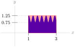
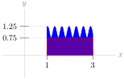

1Integration 1.1Definition of the Integral 1.1.8Exercises
1.1.8.1.
Solution.


The diagram on the left shows a rectangle with area \(2 \times 1.25=2.5\) square units. Since the blue-shaded region is entirely inside this rectangle, the area of the blue-shaded region is no more than 2.5 square units.
The diagram on the right shows a rectangle with area \(2 \times 0.75=1.5\) square units. Since the blue-shaded region contains this entire rectangle, the area of the blue region is no less than 1.5 square units.
Remark: we could also give an obvious range, like “the shaded area is between zero and one million square units.” This would be true, but not very useful or interesting.
The rectangle on the left has area \(3 \times 2.25 = 6.75\) square units, and encompasses the entire shaded region. The rectangle on the right has area \(3 \times 0.25 = 0.75\) square units, and is entirely contained inside the blue-shaded region. So, the area of the blue-shaded region is between 0.75 and 6.75 square units.
This is a legitimate approximation, but we can easily do much better. The shape of this graph suggests that using the areas of three rectangles would be a natural way to improve our estimate.
In the left picture, the red area is \((1 \times 1.25)+(1 \times 2.25)+(1 \times 0.75)=4.25\) square units. In the right picture, the red area is \((1 \times 0.75)+(1 \times 1.75)+(1 \times 0.25)=2.75\) square units. So, the blue shaded area is between 2.75 and 4.25 square units.
The area under the curve is less than the area of the rectangle on the left (\(2 \times \frac{1}{2}=1\)) and greater than the area of the rectangle on the right (\(2 \times \frac{1}{8}=\frac{1}{4}\)). So, the area is in the range \(\left(\frac{1}{4},1\right)\text{.}\) Unfortunately, this range is too big--we need our range to have length at most 0.2. So, we refine our approximation by using more rectangles.
The rectangles in the left picture have area \(\left(1 \times \frac{1}{2}\right)+\left(1 \times \frac{1}{4}\right)=\frac{3}{4}\text{,}\) and the rectangles in the right picture have area \(\left(1 \times \frac{1}{4}\right)+\left(1 \times \frac{1}{8}\right)=\frac{3}{8}\text{.}\) So, the area under the curve is in the interval \(\left(\frac{3}{8},\frac{3}{4}\right)\text{.}\) The length of this interval is \(\frac{3}{8}\text{,}\) and \(\frac{3}{8} \gt \frac{3}{15}=\frac{1}{5}=0.2\text{.}\) (Indeed, \(\frac{3}{8}=0.375 \gt 0.2\text{.}\)) Since the length of our interval is still bigger than 0.2, we need even more rectangles.
So, the area under the curve is in the interval \(\left( \frac{3}{8}\left[\frac{1}{2}+\frac{1}{\sqrt{2}}\right], \frac{3}{8}\left[1+\frac{1}{\sqrt{2}}\right]\right)\text{.}\) The length of this interval is \(\frac{3}{16}\text{,}\) and \(\frac{3}{16} \lt \frac{3}{15}=\frac{1}{5}=0.2\text{,}\) as desired. (Indeed, \(\frac{3}{16}=0.1875 \lt 0.2\text{.}\))
Note, if we choose any value in the interval \(\left( \frac{3}{8}\left[\frac{1}{2}+\frac{1}{\sqrt{2}}\right], \frac{3}{8}\left[1+\frac{1}{\sqrt{2}}\right]\right)\) as an approximation for the area under the curve, our error is no more than 0.2.
Since \(f(x)\) is decreasing, it is larger on the left endpoint of an interval than on the right endpoint of an interval. So, a left Riemann sum gives a larger approximation. Notice this does not depend on \(n\text{.}\)
If \(f(x)\) is always increasing or always decreasing, then the midpoint Riemann sum will be between the left and right Riemann sums. So, we need a function that goes up and down. Many examples are possible, but let’s work with a familiar one: \(\sin x\text{.}\)
If our intervals have endpoints that are integer multiples of \(\pi\text{,}\) then the left and right Riemann sums will be 0, since \(\sin(0)=\sin(\pi)=\sin(2\pi)=\cdots=0\text{.}\) The midpoints of these intervals will give \(y\)-values of 1 and -1. So, for example, we can let \(f(x)=\sin x\text{,}\)\([a,b]=[0,\pi]\text{,}\) and \(n=1\text{.}\) Then the right and left Riemann sums are 0, while the midpoint Riemann sum is \(\pi\text{.}\)
We can extend the example of \(f(x)=\sin x\) to have more intervals. As long as we have more positive terms than negative, the midpoint approximation will be a positive number, and so it will be larger than both the left and right Riemann sums. So, for example, we can let \(f(x)=\sin x\text{,}\)\([a,b]=[0,5\pi]\text{,}\) and \(n=5\text{.}\) Then the midpoint Riemann sum is \(\pi-\pi+\pi-\pi+\pi=\pi\text{,}\) which is strictly larger than 0 and so it is larger than both the left and right Riemann sums.
Two possible answers are \(\displaystyle\sum_{i=3}^7 i\) and \(\displaystyle\sum_{i=1}^5 (i+2)\text{.}\) The first has simpler terms (\(i\) versus \(i+2\)), while the second has simpler indices (we often like to start at \(i=1\)). Neither is objectively better than the other, but depending on your purposes you might find one more useful.
The terms of this sum are each double the terms of the sum from part (a), so two possible answers are \(\displaystyle\sum_{i=3}^7 2i\) and \(\displaystyle\sum_{i=1}^5 (2i+4)\text{.}\) We often want to write a sum that involves even numbers: it will be useful for you to remember that the term \(2i\) (with index \(i\)) generates evens.
The terms of this sum are each one more than the terms of the sum from part (b), so two possible answers are \(\displaystyle\sum_{i=3}^7 (2i+1)\) and \(\displaystyle\sum_{i=1}^5 (2i+5)\text{.}\)
In the last part, we used the expression \(2i\) to generate even numbers; \(2i+1\) will generate odds. So will the index \(2i+5\text{,}\) and indeed, \(2i+k\) for any odd number \(k\text{.}\) The choice of what you add will depend on the limits of \(i\text{.}\)
This sum adds up the odd numbers from 1 to 15. From Part (c), we know that the formula \(2i+1\) is a simple way of generating odd numbers. Since our first term should be 1 and our last term should be 15, if we use \(\sum (2i+1)\text{,}\) then \(i\) should run from \(0\) to \(7\text{.}\) So, one way of expressing our sum in sigma notation is \(\displaystyle\sum_{i=0}^7 (2i+1)\text{.}\)
Sometimes we like our sum to start at \(i=1\) instead of \(i=0\text{.}\) If this is our desire, we can use \(2i-1\) as our terms, and let \(i\) run from 1 to 8. This gives us another way of expressing our sum: \(\displaystyle\sum_{i=1}^8 (2i-1)\text{.}\)
The denominators are successive powers of three, so one way of writing this is \(\displaystyle\sum_{i=1}^4 \frac{1}{3^i}\text{.}\) Equivalently, the terms we’re adding are powers of \(1/3\text{,}\) so we can also write \(\displaystyle\sum_{i=1}^4 \left(\frac{1}{3}\right)^i\text{.}\)
This sum is obtained from the sum in (a) by multiplying each term by two, so we can write \(\displaystyle\sum_{i=1}^4 \frac{2}{3^i}\) or \(\displaystyle\sum_{i=1}^4 2\left(\frac{1}{3}\right)^i\text{.}\)
The difference between this sum and the previous sum is its alternating sign, minus-plus-minus-plus. This behaviour appears when we raise a negative number to successive powers. We can multiply each term by \((-1)^i\text{,}\) or we can slip a negative into the number that is already raised to the power \(i\text{:}\)\(\displaystyle\sum_{i=1}^4(-1)^i \frac{2}{3^i}\,,\) or \(\displaystyle\sum_{i=1}^4 \frac{2}{(-3)^i}\text{.}\)
This sum is the negative of the sum in part (c), so we can simply multiply each term by negative one: \(\displaystyle\sum_{i=1}^4(-1)^{i+1} \frac{2}{3^i}\) or \(\displaystyle\sum_{i=1}^4 -\frac{2}{(-3)^i}\text{.}\)
The numerators are the first five odd numbers, and the denominators are the first five positive powers of 3. We learned how to generate odd numbers in Question 6, and we learned how to generate powers of three in Question 7. Combining these, we can write our sum as \(\displaystyle\sum_{i=1}^5 \frac{2i-1}{3^i}\text{.}\)
The denominators of these terms differ from the denominators of part (a) by precisely two, while the numerators are simply 1. So, we can modify our previous answer: \(\displaystyle\sum_{i=1}^5 \frac{1}{3^i+2}\text{.}\)
If we let the red numbers be our index \(i\text{,}\) this gives us the expression \(\displaystyle\sum_{i=1}^7 i\cdot10^{4-i}\,.\) Equivalently, we can write \(\displaystyle\sum_{i=1}^7 \frac{i}{10^{i-4}}\,.\)
We want to use Theorem 1.1.6, part (a) again, but our sum doesn’t start at \(\left(\frac{3}{5}\right)^0=1\text{.}\) We have two options: factor out the leading term, or use the difference of two sums that start where we want them to.
Solution 1: In this solution, we’ll make our sum start at 1 by factoring out the leading term. We wrote our work out the long way (expanding the sigma into “dot-dot-dot” notation) for clarity, but it’s faster to do the algebra in sigma notation all the way through.
As in part (c), we’ll simplify first. The first part (shown here in red) is a geometric sum, but it does not start at \(1=\left(\frac{1}{e}\right)^0\text{.}\)
If we expand \((i-5)^3 = i^3-15i^2+75i-125\text{,}\) we can break the sum into four parts, and evaluate each separately. However, it is much simpler to change the index and make the term \((i-5)^3\) into \(i^3\text{.}\)
Notice every two terms cancel with each other, since the sum is \((-1)+(+1)\text{,}\) etc. Then the terms \(n=1\) through \(n=10\) cancel, and we’re left only with the final term, \((-1)^{11}=-1\text{.}\)
For every integer \(n\text{,}\)\(2n+1\) is odd, so \((-1)^{2n+1}=-1\text{.}\) Then \(\displaystyle\sum_{n=2}^{11} (-1)^{2n+1} =\displaystyle\sum_{n=2}^{11} -1 =-10\text{.}\)
The index of the sum runs from 1 to 4: the first, second, third, and fourth rectangles. So, we have four rectangles in our Riemann sum. Let’s start by drawing in the intervals along the \(x\)-axis taken up by these four rectangles. Note each has the same width: \(\dfrac{b-a}{4}\text{.}\)
Since this is a midpoint Riemann sum, the height of each rectangle is given by the \(y\)-value of the function in the midpoint of the interval. So, now let’s find the height of the function at the midpoints of each of the four intervals.
The left-most interval has a height of about 0, so it gives a “trivial” rectangle with no height and no area. The middle two intervals have rectangles of about the same height, and the right-most interval has the highest rectangle.
The general form of a Riemann sum is \(\displaystyle\sum_{i=1}^n \Delta x \cdot f(x_i^*)\text{,}\) where \(\Delta x = \frac{b-a}{n}\) is the width of each rectangle, and \(f(x_i^*)\) is the height.
There are different ways to interpret the given sum as a Riemann sum. The most obvious is given in Solution 1. You may notice that we make some convenient assumptions in this solution about values for \(\Delta x\) and \(a\text{,}\) and we assume the sum is a right Riemann sum. Other visualizations of the sum arise from making more exotic choices. Some of these are explored in Solutions 2-4.
All cases have three rectangles, and the three rectangles will have the same areas: 98, 162, and 242 square units, respectively. This is because the terms of the given sum simplify to \(98+162+242\text{.}\)
Looking at our sum, it seems reasonable to interpret \(\Delta x = 2\text{.}\) Then, since \(n=3\text{,}\) we conclude \(\frac{b-a}{3}=2\text{,}\) hence \(b-a=6\text{.}\)
If \(\Delta x = 2\text{,}\) then \(f(x_i^*)=\left(5+2i\right)^2\text{.}\) Recall that \(x_i^*\) is the \(x\)-coordinate we use to decide the height of the \(i\)th rectangle. In a right Riemann sum, \(x_i^* = a+i\cdot\Delta x\text{.}\) So, using \(2=\Delta x\text{,}\) we can let \(f(x_i^*)=f(a+2i)=\left(5+2i\right)^2\text{.}\) This fits with the function \(f(x)=x^2\text{,}\) and \(a=5\text{.}\)
To sum up, we can interpret the Riemann sum as a right Riemann sum, with three intervals, of the function \(f(x)=x^2\) from \(x=5\) to \(x=11\text{.}\)
We didn’t have to interpret \(\Delta x\) as 2--that was just the path of least resistance. We could have chosen it to be any other number--for the sake of argument, let’s say \(\Delta x=10\text{.}\) (Positive numbers are easiest to interpret, but negatives are technically allowed as well.)
The easiest value of \(a\) in this case is \(a=0\text{.}\) Then \(f(\textcolor{red}{10i}) = \frac{1}{5}\cdot\left(5+\frac{1}{5}\cdot \textcolor{red}{10i}\right)^2\text{,}\) so \(f(\textcolor{red}{x})= \frac{1}{5}\cdot\left(5+\frac{1}{5}\cdot \textcolor{red}{x}\right)^2\text{.}\)
By changing \(\Delta x\text{,}\) we changed the widths of the rectangles. The rectangles in this picture are wider and shorter than the rectangles in Solution 1. Their areas are the same: 98, 162, and 242.
Solution 3: We could have chosen a different value of \(a\text{.}\)
Suppose \(\Delta x = 2\text{,}\) and we interpret our sum as a right Riemann sum, but we didn’t assume \(a=5\text{.}\) We could have chosen \(a\) to be any number--say, \(a=1\text{.}\)
Since \(f(\textcolor{red}{1+2i})=\left(4+\textcolor{red}{1+2i}\right)^2\text{,}\) we have \(f(\textcolor{red}{x})=\left(4+\textcolor{red}{x}\right)^2\)
By choosing to interpret our sum as a midpoint Riemann sum instead of a right Riemann sum, we changed where our rectangles intersect the graph \(y=f(x)\text{:}\) instead of the graph hitting the right corner of the rectangle, it hits in the middle.
Many interpretations are possible--see the solution to Question 13 for a more thorough discussion--but the most obvious is given below. Recall the definition of a left Riemann sum:
\begin{equation*}
\sum_{i=1}^n \Delta x \cdot f\left(a+(i-1)\Delta x\right)
\end{equation*}
We chose a left Riemann sum instead of right or midpoint because our given sum has \((i-1)\) in it, rather than \((i-\frac{1}{2})\) or simply \(i\text{.}\)
Since the sum has five terms (\(i\) runs from 1 to 5), there are 5 rectangles. That is, \(n=5\text{.}\)
In the definition of the Riemann sum, note that the term \(\Delta x\) appears twice: once multiplied by the entire term, and once multiplied by \(i-1\text{.}\) So, a convenient choice for \(\Delta x\) is \(\frac{\pi}{20}\text{,}\) because this is the constant that is both multiplied at the start of the term, and multiplied by \(i-1\text{.}\)
Since there are four terms in the sum, \(n=4\text{.}\) (Note the sum starts at \(k=0\text{,}\) instead of \(k=1\text{.}\)) Since the function is multiplied by 1, \(1=\Delta x=\dfrac{b-a}{n}=\dfrac{b-a}{4}\text{,}\) hence \(b-a=4\text{.}\)
We can choose to view the given sum as a left, right, or midpoint Riemann sum. The choice we make determines the interval. Note that the heights of the rectangles are determined when \(x = 1.5,\, 2.5,\, 3.5,\) and \(4.5\text{.}\)
Then \(a=0.5\) and \(b=4.5\text{.}\) Therefore: \(\sum\limits_{k=0}^3 f (1.5 + k) \cdot 1\) is a right Riemann sum on the interval \([0.5,4.5]\) with \(n=4\text{.}\)
Then \(a=1.5\) and \(b=5.5\text{.}\) Therefore: \(\sum\limits_{k=0}^3 f (1.5 + k) \cdot 1\) is a left Riemann sum on the interval \([1.5,5.5]\) with \(n=4\text{.}\)
Then \(a=1\) and \(b=5\text{.}\) Therefore: \(\sum\limits_{k=0}^3 f (1.5 + k) \cdot 1\) is a midpoint Riemann sum on the interval \([1,5]\) with \(n=4\text{.}\)
There is a positive and a negative portion of this area. The positive area is a triangle with base 5 and height 5, so area \(\dfrac{25}{2}\) square units. The negative area is a triangle with base \(2\) and height \(2\text{,}\) so negative area \(\dfrac{4}{2}=2\) square units. So, the net area is \(\dfrac{25}{2}-\dfrac{4}{2}=\dfrac{21}{2}\) square units.
\begin{gather*}
\sum_{i=1}^n f\Big(a+\big(i-\frac{1}{2}\big)\De x\Big)\ \De x \, ,
\qquad \mbox{where } \De x = \frac{b-a}{n}.
\end{gather*}
In this problem we are told that \(f(x)=x^8\text{,}\)\(a=5\text{,}\)\(b=15\) and \(n=50\text{,}\) so that \(\De x = \frac{b-a}{n} = \frac{1}{5}\) and the desired Riemann sum is:
The given integral has interval of integration going from \(a=-1\) to \(b=5\text{.}\) So when we use three approximating rectangles, all of the same width, the common width is \(\Delta x=\frac{b-a}{n} = 2\text{.}\) The first rectangle has left endpoint \(x_0=a=-1\text{,}\) the second has left hand endpoint \(x_1=a+\Delta x=1\text{,}\) and the third has left hand end point \(x_2=a+2\Delta x=3\text{.}\) So
\begin{gather*}
\int_{-1}^5 x^3\,\,\dee{x}
\approx \big[f(x_0)+f(x_1)+f(x_2)\big]\Delta x
=\big[(-1)^3+1^3+3^3\big]\times2
=54
\end{gather*}
In the given integral, the domain of integration runs from \(a=-1\) to \(b=7\text{.}\) So, we have \(\Delta x = \frac{(b-a)}{n}= \frac{(7-(-1))}{n} = \frac{8}{n}\text{.}\) The left-hand end of the first subinterval is at \(x_0=a=-1\text{.}\) So, the right-hand end of the \(i^{\rm th}\) interval is at \(x_i^* = -1+\frac{8i}{n}\text{.}\) So:
We identify the given sum as the right Riemann sum \(\sum\limits_{i=1}^{n} f(a+i\De x)\Delta x\text{,}\) with \(a=0\) (that’s specified in the statement of the question). Since \(\frac{4}{n}\) is multiplied in every term, and is also multiplied by \(i\text{,}\) we let \(\Delta x = \frac{4}{n}\text{.}\) Then \(x_i^* = a+i\De x=\frac{4i}{n}\) and \(f(x) = \sin^2 (2 + x)\text{.}\) So, \(b=a+n\De x=0+n\cdot\frac{4}{n}=4\text{.}\)
with \(\De x=\frac{1}{n}\text{,}\)\(a=0\text{,}\)\(x_k^*=\frac{k}{n}=a+k\De x\) and \(f(x)=x\sqrt{1-x^2}\text{.}\) Since \(x_0^*=0\) and \(x_n^*=1\text{,}\) the right hand side is the definition (using the right Riemann sum) of \(\int_0^1 f(x)\,\,\dee{x}
\text{.}\)
As \(i\) ranges from \(1\) to \(n\text{,}\) the exponent \(\frac{i}{n}\) ranges from \(\frac{1}{n}\) to \(1\) with jumps of \(\De x=\frac{1}{n}\text{.}\) So let’s try \(x_i^* =\frac{ i}{n}\text{,}\)\(\Delta x=\frac{1}{n}\text{.}\) Then:
\begin{gather*}
\lim_{n\to\infty} R_n
=\lim_{n\to\infty} \sum_{i=1}^{n} f(x_i^*)\Delta x
=\int_a^b f(x)\,\,\dee{x}
\end{gather*}
Since we chose \(x_i^* = \frac{i}{n} = 0+i\De x\text{,}\) we let \(a=0\text{.}\) Then \(\frac{1}{n}=\De x = \frac{b-a}{n}=\frac{b}{n}\) tells us \(b=1\text{.}\) Thus,
Choice #4: If we set \(\De x = \frac{1}{n}\) and \(x_i^*= \frac{1}{2}+\frac{i}{n}\text{,}\) i.e. \(x_i = a + i\De x\) with \(a=\frac{1}{2}\text{,}\) then
The sum does not start at \(1\text{,}\) so we need to do some algebra. We can either factor out the first term, or subtract off the initial terms that are missing.
Solution 1: If we factor out \(r^5\text{,}\) then what’s left fits the form of Equation 1.1.3:
So the integral \(\int_{-1}^2 |2x|\ \,\dee{x}\) is the area of the union of the two shaded triangles (one of base \(1\) and of height \(2\) and the other of base \(2\) and height \(4\)) in the figure on the right below and
The area we want is two triangles, both above the \(x\)-axis. Each triangle has base \(4\) and height \(4\text{,}\) so the total area is \(2\cdot\left(\dfrac{4\cdot 4}{2}\right)=16\text{.}\)
If you had a hard time sketching the function, recall that the absolute value of a number leaves it unchanged if it is positive or zero, and flips the sign if it is negative. So, when \(t-1 \ge 0\) (that is, when \(t \ge 1\)), our function is simply \(f(t)=|t-1|=t-1\text{.}\) On the other hand, when \(t=1\) is negative (that is, when \(t \lt 1\)), the absolute value changes the sign, so \(f(t) = |t-1|=-(t-1)=-t+1\text{.}\)
The area we want is a trapezoid with base \((b-a)\) and heights \(a\) and \(b\text{,}\) so its area is \(\dfrac{(b-a)(b+a)}{2}=\dfrac{b^2-a^2}{2}\text{.}\)
Instead of using a formula for the area of a trapezoid, you can find the blue area as the area of a triangle with base and height \(b\text{,}\) minus the area of a triangle with base and height \(a\text{.}\)
The area is negative. The shape is a trapezoid with base length \((b - a)\) and heights \(0-a=-a\) and \(0-b=-b\) (note: those are nonnegative numbers), so its area is \(\dfrac{(b-a)(-b-a)}{2}=\dfrac{-b^2+a^2}{2}\text{.}\) Since the shape is below the \(x\)-axis, we change its sign. Thus, the integral evaluates to \(\dfrac{b^2-a^2}{2}\text{.}\)
The signs can be a little hard to keep track of. The base of our trapezoid is \(|a-b|\text{;}\) since \(b \gt a\text{,}\) this is \(b-a\text{.}\) The heights of the trapezoid are \(|a|\) and \(|b|\text{;}\) since these are both negative, \(|a|=-a\) and \(|b|=-b\text{.}\)
If \(y=\sqrt{16-x^2}\text{,}\) then \(y\) is nonnegative, and \(y^2+x^2=16\text{.}\) So, the graph \(y=\sqrt{16-x^2}\) is the upper half of a circle of radius 4. Since \(x\) only runs from 0 to 4, we have a quarter of a circle of radius 4. Then the area under the curve is \(\dfrac{1}{4}\left[\pi\cdot 4^2\right]=4\pi\text{.}\)
There is a linear increase from \(x=0\) to \(x=1\text{,}\) followed by a constant. Using the interpretation of \(\int_0^3 f(x)\,\,\dee{x}\) as the area between \(y=f(x)\) and the \(x\)--axis with \(x\) between \(0\) and \(3\text{,}\) we can break this area into:
\(\int_0^1 f(x)\,\,\dee{x}\text{:}\) a right-angled triangle of height \(1\) and base \(1\) and hence area \(0.5\text{.}\)
The car’s speed increases with time. So its highest speed on any time interval occurs at the right hand end of the interval and the best possible upper estimate for the distance traveled is given by the right Riemann sum with \(\Delta x =0.5\text{,}\) which is
There is a key detail in the statement of Question 34: namely, that the car is continuously accelerating. So, although we don’t know exactly what’s going on in between our brief snippets of information, we know that the car is not going any faster during an interval than at the end of that interval. Therefore, the car certainly travelled no farther than our estimation.
We ask this question in order to point out an important detail. If we did not have the information that the car was continuously accelerating, we would not be able to give a certain upper bound on its distance travelled. It would be possible that, when the car is not being observed (for example, when \(t=0.25\)), it is going much faster than when it is being observed.
We need to know the speed of the plane at the midpoints of our intervals. So (for example) noon to 1pm is not one of your intervals--we don’t know the speed at 12:30. (A common idea is to average the two end values, 700 and 800. This is a fine approximation, but it is not a Riemann sum.) So, we use the two intervals 12:00 to 2:00, and 2:00 to 4:00. Then our intervals have length 2 hours, and at the midpoints of the intervals the speed of the plane is 700 kph and 900 kph, respectively. So, our midpoint Riemann sum gives us:
Remark: if we had been asked to approximate the distance travelled from 11:30 am to 4:30 pm, then we could have used the midpoint rule with five intervals and made use of every entry in the data table. With the question as stated, however, we ignore three out of five entries in the table because they are not the midpoints of our intervals.
For the integral \(\int_{-2}^0 \sqrt{4-x^2}\,\,\dee{x}\text{,}\)\(y=\sqrt{4-x^2}\) is equivalent to \(x^2+y^2=4\text{,}\)\(y\ge 0\text{.}\) So the integral represents the area between the upper half of the circle \(x^2+y^2=4\) (which has radius \(2\)) and the \(x\)-axis with \(-2\le x\le 0\text{,}\) which is a quarter circle with area \(\frac{1}{4}\cdot \pi\, 2^2 = \pi\text{.}\)
For the integral \(\int_{0}^2 \sqrt{4-(-2+x)^2}\,\,\dee{x}\ , y=\sqrt{4-(x-2)^2}\) is equivalent to \((x-2)^2+y^2=4\text{,}\)\(y\ge 0\text{.}\) So the integral represents the area between the upper half of the circle \((x-2)^2+y^2=4\) (which is centered at \((2,0)\) and has radius \(2\)) and the \(x\)-axis with \(0\le x\le 2\text{,}\) which is a quarter circle with area \(\frac{1}{4}\cdot \pi\, 2^2 = \pi\text{.}\)
\begin{gather*}
L_n = \sum_{i=1}^{n} f(x_{i-1})\Delta x
\qquad\text{with }x_i=a+i\De x
\end{gather*}
We subdivide into \(n=3\) intervals, so that \(\Delta x = \frac{b-a}{n}
=\frac{3-0}{3}=1\text{,}\)\(x_0=0\text{,}\)\(x_1=1\) and \(x_2=2\text{.}\) The function \(f(x) = 7 + x^3\) has the values \(f(x_0) = 7+0^3=7\text{,}\)\(f(x_1) = 7+1^3=8\text{,}\) and \(f(x_2) = 7+2^3=15\text{,}\) from which we evaluate
\begin{gather*}
L_3 = \big[f(x_0)+f(x_1)+f(x_2)\big]\De x = \big[7+8+15\big]\times 1= 30
\end{gather*}
(b) We divide into \(n\) intervals so that \(\Delta x = \frac{b-a}{n}=\frac{3}{n}\) and \(x_i = a+i\De x= \frac{3i}{n}\text{.}\) The right Riemann sum is therefore:
In general, the right-endpoint Riemann sum approximation to the integral \(\int_a^b f(x)\,\,\dee{x}\) using \(n\) rectangles is
\begin{gather*}
\sum_{i=1}^n f(a+i\De x) \De x
\end{gather*}
where \(\De x=\frac{b-a}{n}\text{.}\) In this problem, \(a=2\text{,}\)\(b=4\text{,}\) and \(f(x)=x^2\text{,}\) so that \(\De x=\frac{2}{n}\) and the right--endpoint Riemann sum approximation becomes
We’ll use right Riemann sums with \(a=0\) and \(b=2\text{.}\) When there are \(n\) rectangles, \(\Delta x = \frac{b-a}{n}=\frac{2}{n}\) and \(x_i = a+i\De x=2i/n\text{.}\) So we need to evaluate
We’ll use right Riemann sums with \(a=1\text{,}\)\(b=4\) and \(f(x) =2x-1\text{.}\) When there are \(n\) rectangles, \(\Delta x = \frac{b-a}{n}=\frac{3}{n}\) and \(x_i = a+i\De x=1 + 3i/n\text{.}\) So we need to evaluate
As in the text, we’ll set up a Riemann sum for the given integral. Right Riemann sums have the simplest form, so we use a right Riemann sum, but we could equally well use left or midpoint.
Note as \(n \to \infty\text{,}\)\(1/n \to 0\text{,}\) so the numerator has limit 1, while the denominator has indeterminate form \(\infty\cdot 0\text{.}\) So, we’ll do a little algebra to get this into a l’Hôpital-style indeterminate form:
Now we can use l’Hôpital’s rule. Recall \(\diff{}{x}\left\{2^x\right\}=2^x\log x\text{,}\) where \(\log x\) is the natural logarithm of \(x\text{,}\) also sometimes written \(\ln x\text{.}\) We’ll need to use the chain rule when we differentiate the denominator.
Now we can use l’Hôpital’s rule. Recall \(\diff{}{x}\left\{10^x\right\}=10^x\log x\text{,}\) where \(\log x\) is the natural logarithm of \(x\text{,}\) also sometimes written \(\ln x\text{.}\) For the denominator, we will have to use the chain rule.
First, we note \(y=\sqrt{1-x^2}\) is the upper half of a circle of radius 1, centred at the origin. We’re taking the area under the curve from 0 to \(a\text{,}\) so the area in question is as shown in the picture below.
Area of sector: The sector is a portion of a circle with radius 1, with inner angle \(\theta\text{.}\) So, its area is \(\frac{\theta}{2\pi}\left(\mbox{area of circle}\right) = \frac{\theta}{2\pi}\left(\pi\right) = \frac{\theta}{2}\text{.}\)
Our job now is to find \(\theta\) in terms of \(a\text{.}\) Note \(\frac{\pi}{2}-\theta\) is the inner angle of the red triangle, which lies in the unit circle. So, \(\cos\left(\frac{\pi}{2}-\theta\right)=a\text{.}\) Then \(\frac{\pi}{2}-\theta= \arccos(a)\text{,}\) and so \(\theta = \frac{\pi}{2} - \arccos(a)\text{.}\)
Area of triangle: The triangle has base \(a\text{.}\) Its height is the \(y\)-value of the function when \(x=a\text{,}\) so its height is \(\sqrt{1-a^2}\text{.}\) Then the area of the triangle is \(\frac{1}{2}a\sqrt{1-a^2}\text{.}\)
The difference between our upper and lower bounds is the difference in areas between the larger set of rectangles and the smaller set of rectangles. Drawing them on a single picture makes this a little clearer.
Each of the rectangles has width \(\frac{b-a}{n}\text{,}\) since we took a segment of the \(x\)-axis with length \(b-a\) and chopped it into \(n\) pieces. We could calculate the height of each rectangle, but it would be a little complicated, since it differs for each of them. An easier method is to notice that the area we want to calculate can be imagined as a single rectangle:
The rectangle has base \(\frac{b-a}{n}\text{.}\) Its highest coordinate is \(f(a)\text{,}\) and its lowest is \(f(b)\text{,}\) so its height is \(f(b)-f(a)\text{.}\) Therefore, the difference in area between our lower bound and our upper bound is:
We want to give a range with length at most 0.01, and guarantee that the area under the curve \(y=f(x)\) is inside that range. In the previous part, we figured out that when we use \(n\) rectangles, the length of our range is \(\left[f(b)-f(a)\right]\cdot\frac{b-a}{n}\text{.}\) So, all we have to do is set this to be less than or equal to 0.01, and solve for \(n\text{:}\)
\begin{align*}
\left[f(b)-f(a)\right]\cdot\frac{b-a}{n}&\leq 0.01\\
100\left[f(b)-f(a)\right]\cdot(b-a)&\leq n
\end{align*}
We can choose \(n\) to be an integer that is greater than or equal to \(100\left[f(b)-f(a)\right]\cdot(b-a)\text{.}\) Using that many rectangles, we find an upper and lower bound for the area under the curve. If we choose any number between our upper and lower bound as an approximation for the area under the curve, our error is no more than 0.01.
Remark: this question depends on the fact that \(f\) is decreasing and positive from \(a\) to \(b\text{.}\) In general, bounding errors on approximations like this is not so straightforward.
Since \(f(x)\) is linear, there exist real numbers \(m\) and \(c\) such that \(f(x)=mx+c\text{.}\) Now we can do some calculations. Suppose we have a rectangle in our Riemann sum that takes up the interval \([x,x+w]\text{.}\)
If we are using a left Riemann sum, our rectangle has height \(f(x)=mx+c\text{.}\) Then it has area \(w(mx+c)\text{.}\)
If we are using a midpoint Riemann sum, our rectangle has height \(f(x+\frac{1}{2}w)=m(x+\frac{1}{2}w)+c=mx+c+\frac{1}{2}mw\text{.}\) Then it has area \(w\left(mx+c+\frac{1}{2}w\right)\text{.}\)
It follows that the midpoint Riemann sum has a value equal to the average of the values of the left and right Riemann sums. To see this, let the rectangles in the midpoint Riemann sum have areas \(M_1,M_2,\ldots,M_n\text{,}\) let the rectangles in the left Riemann sum have areas \(\textcolor{blue}{L_1,L_2,\ldots,L_n}\text{,}\) and let the rectangles in the right Riemann sum have areas \(\textcolor{red}{R_1,R_2,\ldots,R_n}\text{.}\) Then the midpoint Riemann sum evaluates to \(M_1+M_2+\cdots+M_n\text{,}\) and:
If we assume \(a \leq c \leq b\text{,}\) then this identity simply tells us that if we add up the area under the curve from \(a\) to \(c\text{,}\) and from \(c\) to \(b\text{,}\) then we get the whole area under the curve from \(a\) to \(b\text{.}\)
The blue-shaded area in the picture above is \(\displaystyle\int_a^b f(x)\dee{x}\text{.}\) The area under the curve \(f(x)+g(x)\) but above the curve \(f(x)\) (shown in red) is \(\displaystyle\int_a^b g(x)\dee{x}\text{.}\)
(b) False. For example, if \(f(x)=x\text{,}\) then \(\textcolor{blue}{\int_{-3}^{-2} f(x)\,\dee{x} }\) is negative while \(\textcolor{red}{\int_2^3 f(x)\,\dee{x} }\) is positive, so they cannot be the same.
Then \(f(x)\cdot g(x)=0\) for all \(x\text{,}\) so \(\int_0^1 f(x)\cdot g(x) \dee{x}=0\text{.}\) However, \(\textcolor{blue}{\int_0^1 f(x) \dee{x}= \frac{1}{2}}\) and \(\textcolor{red}{\int_0^1 g(x) \dee{x}= \frac{1}{2}}\text{,}\) so \(\int_0^1 f(x)\dee{x} \cdot \int_0^1 g(x) \dee{x}= \frac{1}{4}\text{.}\)
Note: if we were to use the Riemann-sum definition of a definite integral, this is how we would justify the identity \(\int\limits_a^b f(x)\dee{x}=-\int\limits_b^a f(x)\dee{x}\text{.}\)
The heights of the rectangles are given by \(f(x_i)\text{,}\) where \(x_i = a+i\Delta x = 5 - \frac{i}{20}\text{.}\) Since \(f(x)\) only gives positive values, \(f(x_i) \gt 0\text{,}\) so the heights of the rectangles are positive.
Our Riemann sum is the sum of the signed areas of individual rectangles. Each rectangle has a negative base (\(\Delta x\)) and a positive height (\(f(x_i)\)). So, each term of our sum is negative. If we add up negative numbers, the sum is negative. So, the Riemann sum is negative.
Using part (d) of the “arithmetic of integration” Theorem 1.2.1, followed by parts (c) and (b) of the “arithmetic for the domain of integration” Theorem 1.2.3,
Note \(\displaystyle\int_{0}^1 \sqrt{1-x^2}\dee{x}=\frac{\pi}{4}\text{,}\) since the area under the curve represents one-quarter of the unit circle. Then,
We note that the integrand \(f(x)=x|x|\) is an odd function, because \(f(-x)=-x|-x|=-x|x|=-f(x)\text{.}\) Then by Theorem 1.2.12 part (b), \(\displaystyle\int_{-5}^5 x|x| \dee{x}=0\text{.}\)
The first integral represents the area of a rectangle of height 5 and width 4 and so equals \(20\text{.}\) The second integral represents the area above the \(x\)--axis and below the curve \(y=\sqrt{4-x^2}\) or \(x^2+y^2=4\text{.}\) That is a semicircle of radius 2, which has area \(\frac{1}{2}\pi 2^2\text{.}\) So
Our integrand \(f(x)=(x-3)^3\) is neither even nor odd. However, it does have a similar symmetry. Namely, \(f(3+x)=-f(3-x)\text{.}\) So, \(f\) is “negatively symmetric” across the line \(x=3\text{.}\) This suggests that the integral should be 0: the positive area to the right of \(x=3\) will be the same as the negative area to the left of \(x=3\text{.}\)
Another way to see this is to notice that the graph of \(f(x)=(x-3)^3\) is equivalent to the graph of \(g(x)=x^3\) shifted three units to the right, and \(g(x)\) is an odd function. So,
The values of \(x\) in the domain of the function above are those that satisfy \(1-(ax)^2 \geq 0\text{.}\) That is, \(-\frac{1}{a}\leq x \leq \frac{1}{a}\text{.}\) Therefore, the upper half of the ellipse has area
The function \(y=\sqrt{\dfrac{1}{a^2}-x^2}\) is the upper-half of the circle centred at the origin with radius \(\dfrac{1}{a}\text{.}\) So, the expression from (b) evaluates to \(\left(\dfrac{a}{b}\right)\dfrac{\pi}{2a^2} = \dfrac{\pi}{2ab}\text{.}\)
The ellipse \((ax)^2+y^2=1\) is obtained by shrinking the unit circle horizontally by a factor of \(a\text{.}\) So, its area is \(\dfrac{\pi}{a}\text{.}\)
Further, the ellipse \((ax)^2+(by)^2=1\) is obtained from the previous ellipse by shrinking it vertically by a factor of \(b\text{.}\) So, its area is \(\dfrac{\pi}{ab}\text{.}\)
Let’s recall the definitions of even and odd functions: \(f(x)\) is even if \(f(-x)=f(x)\) for every \(x\) in its domain, and \(f(x)\) is odd if \(f(-x)=-f(x)\) for every \(x\) in its domain.
odd \(\times\) odd: If \(f\) and \(g\) are both odd, then \(h(-x)=f(-x)\cdot g(-x) =[- f(x)]\cdot [-g(x)]=f(x)\cdot g(x)=h(x)\text{,}\) so their product is even.
even \(\times\) odd: If \(f\) is even and \(g\) is odd, then \(h(-x)=f(-x)\cdot g(-x) = f(x)\cdot[- g(x)]=-[f(x)\cdot g(x)]=-h(x)\text{,}\) so their product is odd. Because multiplication is commutative, the order we multiply the functions in doesn’t matter.
However, this restriction does not apply to \(g(x)\text{.}\) For example, for any constant \(c\text{,}\) let \(g(x)=c\text{.}\) Then \(g(x)\) is even and \(g(0)=c\text{.}\) So, \(g(0)\) can be any real number.
Solution 2: Another way to think about this problem is to notice that “mirroring” a function changes the sign of its derivative. Then since an even function is “mirrored once” (across the \(y\)-axis), it should have \(f'(x)=-f'(-x)\text{,}\) and so the derivative of an even function should be an odd function. Since an odd function is “mirrored twice” (across the \(y\)-axis and across the \(x\)-axis), it should have \(f'(x)=-(-f'(-x))=f'(-x)\text{.}\) So the derivative of an odd function should be even. These ideas are presented in more detail below.
The whole function has a mirror-like symmetry across the \(y\)-axis. So, at \(x\) and \(-x\text{,}\) the function will have the same “steepness,” but if one is increasing then the other is decreasing. That is, \(f'(-x)=-f'(x)\text{.}\) (In the picture above, compare the slope at some point \(a_i\) with its corresponding point \(-a_i\text{.}\)) So, \(f'(x)\) is odd when \(f(x)\) is even.
Second, let’s consider the case where \(f(x)\) is odd, and investigate \(f'(x)\text{.}\) Suppose the blue graph below is \(y=f(x)\text{.}\) If \(f(x)\) were even, then to the left of the \(y\)-axis, it would look like the orange graph, which we’ll call \(y=g(x)\text{.}\)
From our work above, we know that, for every \(x \gt 0\text{,}\)\(-f'(x)=g'(-x)\text{.}\) When \(x \lt 0\text{,}\)\(f(x)=-g(x)\text{.}\) So, if \(x \gt 0\text{,}\) then \(-f'(x)=g'(-x)=-f'(-x)\text{.}\) In other words, \(f'(x)=f'(-x)\text{.}\) Similarly, if \(x \lt 0\text{,}\) then \(f'(x)=-g'(x)=f'(-x)\text{.}\) Therefore \(f'(x)\) is even. (In the graph below, you can anecdotally verify that \(f'(a_i)=f'(-a_i)\text{.}\))
To find an antiderivative of \(\sin(2x)\text{,}\) we might first guess \(\cos(2x)\text{;}\) checking, we see \(\diff{}{x}\{\cos(2x)\}=-2\sin(2x)\text{.}\) So, we only need to multiply by \(-\dfrac{1}{2}\text{:}\)\(\displaystyle\diff{}{x}\left\{-\dfrac{1}{2}\cos 2x\right\}=\sin(2x)\text{.}\)
So, the general antiderivative of \(f(x)\) is \(\dfrac{x^4}{4}+\dfrac{1}{2}\cos 2x+C\text{.}\) To satisfy \(F(0)=1\text{,}\) we need 8
The symbol \(\iff\) is read “if and only if”. This is used in mathematics to express the logical equivalence of two statements. To be more precise, the statement \(P \iff Q\) tells us that \(P\) is true whenever \(Q\) is true and \(Q\) is true whenever \(P\) is true.
(b) This is not only false, but it makes no sense at all. The integrand is strictly positive so the integral has to be strictly positive. In fact it’s \(+\infty\text{.}\) The Fundamental Theorem of Calculus does not apply because the integrand has an infinite discontinuity at \(x=0\text{.}\)
(c) This is not only false, but it makes no sense at all, unless \(\int_a^b f(x)\,\dee{x}=\int_a^b xf(x)\,\dee{x} = 0\text{.}\) The left hand side is a number. The right hand side is a number times \(x\text{.}\)
For example, if \(a=0\text{,}\)\(b=1\) and \(f(x) = 1\text{,}\) then the left hand side is \(\int_0^1 x\,\dee{x} = \frac{1}{2}\) and the right hand side is \(x\int_0^1 \dee{x}=x\text{.}\)
When we’re guessing antiderivatives, we often need to adjust our original guesses a little. Changing constants works well; changing functions usually does not.
When we’re guessing antiderivatives, we often need to adjust our original guesses a little. Dividing by constants works well; dividing by functions usually does not.
“The instantaneous rate of change of \(F(x)\) with respect to \(x\)” is another way of saying “\(F'(x)\)”. From the Fundamental Theorem of Calculus Part 1, we know this is \(\sin (x^2)\text{.}\)
The slope of the tangent line to \(y=F(x)\) when \(x=3\) is exactly \(F'(3)\text{.}\) By the Fundamental Theorem of Calculus Part 1, \(F'(x) = e^{1/x}\text{.}\) Then \(F'(3) = e^{1/3} = \sqrt[3]{e}\text{.}\)
For any constant \(C\text{,}\)\(F(x)+C\) is an antiderivative of \(f(x)\text{,}\) because \(\diff{}{x}\{F(x)+C\} = \diff{}{x}\{F(x)\} = f(x)\text{.}\) So, for example, \(F(x)\) and \(F(x)+1\) are both antiderivatives of \(f(x)\text{.}\)
We differentiate with respect to \(a\text{.}\) Recall \(\diff{}{x}\{\arccos x\} = \frac{-1}{\sqrt{1-x^2}}\text{.}\) To differentiate \(\frac{1}{2}a\sqrt{1-a^2}\text{,}\) we use the product and chain rules.
Let \(G(x) = \frac{\pi}{4}-\frac{1}{2}\arccos(x)+\frac{1}{2}x\sqrt{1-x^2}\text{.}\) We showed in part (a) that \(G(x)\) is an antiderivative of \(\sqrt{1-x^2}\text{.}\) Since \(F(x)\) is also an antiderivative of \(\sqrt{1-x^2}\text{,}\)\(F(x) = G(x)+C\) for some constant \(C\) (this is Lemma 1.3.8).
The antiderivative of \(\cos x\) is \(\sin x\text{,}\) and \(\cos x\) is continuous everywhere, so \(\displaystyle\int_{-\pi}^\pi \cos x \dee{x} = \sin(\pi)-\sin(-\pi) = 0\text{.}\)
Since \(\sec^2 x\) is discontinuous at \(x=\pm\frac{\pi}{2}\text{,}\) the Fundamental Theorem of Calculus Part 2 does not apply to \(\displaystyle\int_{-\pi}^\pi \sec^2 x \dee{x}\text{.}\)
Since \(\frac{1}{x+1}\) is discontinuous at \(x=-1\text{,}\) the Fundamental Theorem of Calculus Part 2 does not apply to \(\displaystyle\int_{-2}^0 \frac{1}{x+1}\dee{x}\text{.}\)
Using the definition of \(F\text{,}\)\(\textcolor{red}{F(x)}\) is the area under the curve from \(a\) to \(x\text{,}\) and \(\textcolor{blue}{F(x+h)}\) is the area under the curve from \(a\) to \(x+h\text{.}\) These are shown on the same diagram, below.
Then the area represented by \(\textcolor{blue}{F(x+h)}-\textcolor{red}{F(x)}\) is the area that is outside the red, but inside the blue. Equivalently, it is \(\int\limits_{x}^{x+h} f(t)\dee{t}\text{.}\)
We evaluate \(F(0)\) using the definition: \(F(0) = \int_0^0 f(t)\dee{t}=0\text{.}\) Although \(f(0) \gt 0\text{,}\) the area from \(t=0\) to \(t=0\) is zero.
As \(x\) moves along, \(F(x)\) adds bits of signed area. If it’s adding positive area, it’s increasing, and if it’s adding negative area, it’s decreasing. So, \(F(x)\) is increasing when \(0 \lt x \lt 1\) and \(3 \lt x \lt 4\text{,}\) and \(F(x)\) is decreasing when \(1 \lt x \lt 3\text{.}\)
So, \(G(x)\) increases when \(F(x)\) decreases, and vice-versa. Therefore: \(G(0)=0\text{,}\)\(G(x)\) is increasing when \(1 \lt x \lt 3\text{,}\) and \(G(x)\) is decreasing when \(0 \lt x \lt 1\) and when \(3 \lt x \lt 4\text{.}\)
If \(F(x)\) is constant, then \(F'(x)=0\text{.}\) By the Fundamental Theorem of Calculus Part 1, \(F'(x)=f(x)\text{.}\) So, the only possible continuous function fitting the question is \(f(x)=0\text{.}\)
This makes intuitive sense: if moving \(x\) doesn’t add or subtract area under the curve, then there must not be any area under the curve--the curve should be the same as the \(x\)-axis.
As an aside, we mention that there are other, non-continuous functions \(f(t)\) such that \(\int_0^x f(t)\dee{t} = 0\) for all \(x\text{.}\) For example, \(f(t) = \left\{\begin{array}{cc}
0 & x \neq 0\\
1 & x=0
\end{array}\right.\text{.}\) These kinds of removable discontinuities will not factor heavily in our discussion of integrals.
Remark: \(\int \frac{1}{\sqrt{x^2+a^2}}\dee{x} \) can be calculated using the method of Trigonometric Substitution, which you will learn in Section 1.9.
The integrand is similar to \(\dfrac{1}{\sqrt{1-x^2}}\text{.}\) In order to formulate a guess for the antiderivative, let’s factor out \(\sqrt{2}\) from the denominator:
At this point, we might guess that our antiderivative is something like \(F(x) = \arcsin\left(\dfrac{x}{\sqrt{2}}\right)\text{.}\) To explore this possibility, we can differentiate, and see what we get.
Solution 1: This might not obviously look like the derivative of anything familiar, but it does look like half of a familiar trig identity: \(2\sin x \cos x = \sin(2x)\text{.}\)
\begin{align*}
\int 3 \sin x \cos x \dee{x}&=\int \frac{3}{2}\cdot 2\sin x \cos x \dee{x}\\
&=\int \frac{3}{2} \sin(2x)\dee{x}\\
\end{align*}
So, we might guess that the antiderivative is something like \(-\cos(2x)\text{.}\) We only need to figure out the constants.
Solution 2: You might notice that the integrand looks like it came from the chain rule, since \(\cos x\) is the derivative of \(\sin x\text{.}\) Using this observation, we can work out the antideriative:
\begin{align*}
\diff{}{x}\left\{\sin^2 x\right\}&=2\sin x \cos x\\
\diff{}{x}\left\{\frac{3}{2}\sin^2 x\right\}&=3\sin x \cos x\\
\mbox{So,}\qquad \int 3\sin x \cos x \dee{x}&=\frac{3}{2}\sin^2 x+C
\end{align*}
These two answers look different. Using the identity \(\cos(2x)=1 - 2 \sin^2(x)\text{,}\) we reconcile them:
\begin{align*}
-\frac{3}{4}\cos(2x)+C&= -\frac{3}{4}\left(1-2\sin^2x\right)+C\\
&=\frac{3}{2}\sin^2 x + \left(C-\frac{3}{4}\right)
\end{align*}
The \(\frac{3}{4}\) here is not significant. Remember that \(C\) is used to designate a constant that can take any value between \(-\infty\) and \(+\infty\text{.}\) So \(C-\frac{3}{4}\) is also just a constant that can take any value between \(-\infty\) and \(+\infty\text{.}\) As the two answers we found differ by a constant, they are equivalent.
It’s not immediately obvious which function has \(\cos^2 x\) as its derivative, but we can make the situation a little clearer by using the identity \(\cos^2 x = \dfrac{1+\cos(2x)}{2}\text{:}\)
As \(f(x)\) is increasing whenever \(f'(x) \gt 0\) and \(100 e^{-x^2}\) is always strictly bigger than \(0\text{,}\) we have \(f(x)\) increasing if and only if \((x-1)(x-2) \gt 0\text{,}\) which is the case if and only if \((x-1)\) and \((x-2)\) are of the same sign. Both are positive when \(x \gt 2\) and both are negative when \(x \lt 1\text{.}\) So \(f(x)\) is increasing when \(-\infty \lt x \lt 1\) and when \(2 \lt x \lt \infty\text{.}\)
Remark: even without the Fundamental Theorem of Calculus, since \(f(x)\) is the area under a curve from 1 to \(x\text{,}\)\(f(x)\) is increasing when the curve is above the \(x\)-axis (because we’re adding positive area), and it’s decreasing when the curve is below the \(x\)-axis (because we’re adding negative area).
Write \(G(x)={\displaystyle\int_0^x \frac{1}{t^3+6}\,\dee{t}}\text{.}\) By the Fundamental Theorem of Calculus Part 1, \(G'(x)=\dfrac{1}{x^3+6}\text{.}\) Since \(F(x)=G(\cos x)\text{,}\) the chain rule gives us
Define \(g(x)= \displaystyle\int_0^x e^{t^2}\dee{t}\text{.}\) By the Fundamental Theorem of Calculus Part 1, \(g'(x)=e^{x^2}\text{.}\) As \(f(x)=g(1+x^4)\) the chain rule gives us
Define \(g(x)=\int_0^x (t^6+8)\dee{t}\text{.}\) By the fundamental theorem of calculus, \(g'(x)=x^6+8\text{.}\) We are to compute the derivative of \(f(x)=g(\sin x)\text{.}\) The chain rule gives
\begin{gather*}
\diff{}{x}\left\{\int_0^{\sin x}(t^6+8)\dee{t}\right\}
=g'(\sin x)\cdot \cos x=\big(\sin^6 x+8\big)\cos x
\end{gather*}
Let \(G(x)= \displaystyle\int_0^{x}e^{-t}\sin\left(\frac{\pi t}{2}\right)\,\dee{t}\text{.}\) By the Fundamental Theorem of Calculus Part 1, \(G'(x)=e^{-x}\sin\big(\frac{\pi x}{2}\big)\) and, since \(F(x)=G(x^3)\text{,}\)\(F'(x)=3x^2G'(x^3)=3x^2e^{-x^3}\sin\big(\frac{\pi x^3}{2}\big)\text{.}\) Then \(F'(1)=3e^{-1}\sin\big(\frac{\pi }{2}\big)
=3e^{-1}\text{.}\)
Define \(\displaystyle G(x) = \int_x^0 \frac{\dee{t}}{1+t^3}
= - \int_0^x \frac1{1+t^3}\,\dee{t}\text{,}\) so that \(\displaystyle G'(x) = - \frac1{1+x^3}\) by the Fundamental Theorem of Calculus Part 1. Then by the chain rule,
(b) Observe that \(F'(x) \lt 0\) for \(x \lt -1/2\) and \(F'(x) \gt 0\) for \(x \gt -1/2\text{.}\) Hence \(F(x)\) is decreasing for \(x \lt -1/2\) and increasing for \(x \gt -1/2\text{,}\) and \(F(x)\) must take its minimum value when \(x=-1/2\text{.}\)
Define \(g(x) = \displaystyle\int_0^x\log\big(1+e^t\big)\,\dee{t}\text{.}\) By the Fundamental Theorem of Calculus Part 1, \(g'(x) = \log\big(1+e^x\big)\text{.}\) But \(f(x)=g(2x-x^2)\text{,}\) so by the chain rule,
Observe that \(e^{2x-x^2} \gt 0\) for all \(x\) so that \(1+e^{2x-x^2} \gt 1\) for all \(x\) and \(\log\big(1+e^{2x-x^2}\big) \gt 0\) for all \(x\text{.}\) Since \(2-2x\) is positive for \(x \lt 1\) and negative for \(x \gt 1\text{,}\)\(f'(x)\) is also positive for \(x \lt 1\) and negative for \(x \gt 1\text{.}\) That is, \(f(x)\) is increasing for \(x \lt 1\) and decreasing for \(x \gt 1\text{.}\) So \(f(x)\) achieves its absolute maximum at \(x=1\text{.}\)
Let \(f(x)=\int_0^{x^2-2x}\frac{\dee{t}}{1+t^4}\) and \(g(x)= \int_0^{x}\frac{\dee{t}}{1+t^4}\text{.}\) Then \(g'(x)=\frac{1}{1+x^4}\) and, since \(f(x)=g(x^2-2x)\text{,}\)\(f'(x)=(2x-2)g'(x^2-2x)=2\frac{x-1}{1+(x^2-2x)^4}\text{.}\) This is zero for \(x=1\text{,}\) negative for \(x \lt 1\) and positive for \(x \gt 1\text{.}\) Thus as \(x\) runs from \(-\infty\) to \(\infty\text{,}\)\(f(x)\) decreases until \(x\) reaches 1 and then increases all \(x \gt 1\text{.}\) So the minimum of \(f(x)\) is achieved for \(x=1\text{.}\) At \(x=1\text{,}\)\(x^2-2x=-1\) and \(f(1)=\int_0^{-1}\frac{\dee{t}}{1+t^4}\text{.}\)
Define \(G(x)=\displaystyle\int_0^x\sin(\sqrt{t})\,\dee{t}\text{.}\) By the Fundamental Theorem of Calculus Part 1, \(G'(x)=\sin(\sqrt{x})\text{.}\) Since \(F(x)=G(x^2)\text{,}\) and since \(x \gt 0\text{,}\) we have
Thus \(F\) increases as \(x\) runs from to \(0\) to \(\pi\) (since \(F'(x) \gt 0\) there) and decreases as \(x\) runs from \(\pi\) to \(4\) (since \(F'(x) \lt 0\) there). Thus \(F\) achieves its maximum value at \(x=\pi\text{.}\)
\begin{gather*}
\lim_{n\rightarrow\infty}\sum_{j=1}^n
\frac{\pi}{n}\sin\Big(\frac{j\pi}{n}\Big)
=\lim_{n\rightarrow\infty}\sum_{j=1}^n
f(x_j^*)\De x
\end{gather*}
with \(\De x=\frac{\pi}{n}\text{,}\)\(x_j^*=\frac{j\pi}{n}\) and \(f(x)=\sin(x)\text{.}\) Since \(x_0^*=0\) and \(x_n^*=\pi\text{,}\) the right hand side is the definition (using the right Riemann sum) of
\begin{equation*}
\lim_{n\rightarrow\infty}\frac{1}{n} \sum_{j=1}^n
\frac{1}{1+\frac{j}{n}}
=\lim_{n\rightarrow\infty}\sum_{j=1}^n f(x_j)\De x
\end{equation*}
with \(\De x=\frac{1}{n}\text{,}\)\(x_j=\frac{j}{n}\) and \(f(x)=\frac{1}{1+x}\text{.}\) The right hand side is the definition (using the right Riemann sum) of
\(\mathbf{F(x),\,x \ge 0}\text{:}\) We learned quite a lot last semester about curve sketching. We can use those techniques here. We have to be quite careful about the sign of \(x\text{,}\) though. We can only directly apply the Fundamental Theorem of Calculus Part 1 (as it’s written in your text) when \(x\ge 0\text{.}\) So first, let’s graph the right-hand portion. Notice \(f(x)\) has even symmetry--so, if we know one half of \(F(x)\text{,}\) we should be able to figure out the other half with relative ease.
Using the Fundamental Theorem of Calculus Part 1, \(F'(x) \gt 0\) when \(0 \lt x \lt 1\) and when \(3 \lt x \lt 5\text{;}\)\(F'(x) \lt 0\) when \(1 \lt x \lt 3\text{.}\) So, \(F(x)\) is decreasing from 1 to 3, and increasing from 0 to 1 and also from 3 to 5. That gives us a skeleton to work with.
We get the relative sizes of the maxes and mins by eyeballing the area under \(y=f(t)\text{.}\) The first lobe (from \(x=0\) to \(x=1\) has a small positive area, so \(F(1)\) is a small positive number. The next lobe (from \(x=1\) to \(x=3\)) has a larger absolute area than the first, so \(F(3)\) is negative. Indeed, the second lobe seems to have more than twice the area of the first, so \(|F(3)|\) should be larger than \(F(1)\text{.}\) The third lobe is larger still, and even after subtracting the area of the second lobe it looks much larger than the first or second lobe, so \(|F(3)| \lt F(5)\text{.}\)
We can use \(F''(x)\) to get the concavity of \(F(x)\text{.}\) Note \(F''(x)=f'(x)\text{.}\) We observe \(f(x)\) is decreasing on (roughly) \((0,2.5)\) and \((4,5)\text{,}\) so \(F(x)\) is concave down on those intervals. Further, \(f(x)\) is increasing on (roughly) \((2.5,4)\text{,}\) so \(F(x)\) is concave up there, and has inflection points at about \(x=2.5\) and \(x=4\text{.}\)
\(\mathbf{F(x),\,x \lt 0}\text{:}\) Now we can consider the left half of the graph. If you stare at it long enough, you might convince yourself that \(F(x)\) is an odd function. We can also show this with the following calculation:
\begin{align*}
F(-x)&=\int_0^{-x} f(t)\dee{t}
=\int_x^0 f(t)\dee{t}\\
&\hskip0.5in\text{as in Example }\knowl{./knowl/xref/eg_lefthalfevenfunction.html}{\text{1.2.10}}\text{, since $f(t)$ is even,}\\
&=-\int_0^x f(t)\dee{t}\\
&=-F(x)
\end{align*}
Knowing that \(F(x)\) is odd allows us to finish our sketch.
Recall that “\(+C\)” means that we can add any constant to the function. Since \(\tan^2 x = \sec^2 x - 1\text{,}\) Students A and B have equivalent answers: they only differ by a constant.
Remark: it is a frequent occurrence that equivalent answers might look quite different. As you are comparing your work to others’, this is a good thing to keep in mind!
Since the integration is with respect to \(t\text{,}\) the \(x^3\) term can be moved outside the integral. That is: for the purposes of the integral, \(x^3\) is a constant (although for the purposes of the derivative, it certainly is not).
Remark: Since \(x\) and \(t\) play different roles in our problem, it’s crucial that they have different names. This is one reason why we should avoid the common mistake of writing \(\int_a^x f(x)\dee{x}\) when we mean \(\int_a^x f(t)\dee{t}\text{.}\)
If \(F(x)\) is even, then \(f(x)\) is odd (by the result of Question 1.2.3.20 in Section 1.2). So, \(F(x)\) can only be even if \(f(x)\) is both even and odd. By the result in Question 1.2.3.19, Section 1.2, this means \(F(x)\) is only even if \(f(x)=0\) for all \(x\text{.}\) Note if \(f(x)=0\text{,}\) then \(F(x)\) is a constant function. So, it is certainly even, and it might be odd as well if \(F(x)=f(x)=0\text{.}\)
Therefore, if \(f(x) \neq 0\) for some \(x\text{,}\) then \(F(x)\) is not even. It could be odd, or it could be neither even nor odd. We can come up with examples of both types: if \(f(x)=1\text{,}\) then \(F(x)=x\) is an odd antiderivative, and \(F(x)=x+1\) is an antiderivative that is neither even nor odd.
Interestingly, the antiderivative of an odd function is always even. The proof is a little beyond what we might ask you, but is given below for completeness. The proof goes like this: First, we’ll show that if \(g(x)\) is odd, then there is some antiderivative of \(g(x)\) that is even. Then, we’ll show that every antiderivative of \(g(x)\) is even.
So, suppose \(g(x)\) is odd and define \(G(x)=\displaystyle\int_0^x g(t)\dee{t}\text{.}\) By the Fundamental Theorem of Calculus Part 1, \(G'(x)=g(x)\text{,}\) so \(G(x)\) is an antiderivative of \(g(x)\text{.}\) Since \(g(x)\) is odd, for any \(x\ge 0\text{,}\) the net signed area under the curve along \([0,x]\) is the negative of the net signed area under the curve along \([-x,0]\text{.}\) So,
Recall that every antiderivative of \(g(x)\) differs from \(G(x)\) by some constant. So, any antiderivative of \(g(x)\) can be written as \(G(x)+C\text{,}\) and \(G(-x)+C = G(x)+C\text{.}\) So, every antiderivative of an odd function is even.
The reasoning is not sound: when we do a substitution, we need to take care of the differential (\(\dee{x}\)). Remember the method of substitution comes from the chain rule: there should be a function and its derivative. Here’s the way to do it:
Work: We use the substitution \(u=\log t\text{,}\) so \(\dee{u}=\frac{1}{t}\dee{t}\text{.}\) When \(t=1\text{,}\) we have \(u=\log 1 =0\) and when \(t=\pi\text{,}\) we have \(u=\log(\pi)\text{.}\) Then:
Work: We begin with the substitution \(u=x^2\text{,}\)\(\dee{u} = 2x\dee{x}\text{:}\) If \(u=x^2\text{,}\) then \(\diff{u}{x} = 2x\text{,}\) so indeed \(\dee{u}=2x\dee{x}\text{.}\)
Because the denominator \(\sqrt{1-u^2}\) vanishes when \(u=1\text{,}\) this is what is known as an improper integral. Improper integrals will be discussed in Section 1.12.
So, \(\textcolor{red}{f(g(x))}\) is an antiderivative of \(\textcolor{red}{f'(g(x))g'(x)}\text{.}\) All antiderivatives of \(f'(g(x))g'(x)\) differ by only a constant, so:
We write \(\textcolor{red}{u(x) = e^{x^2}}\) and find \(\textcolor{blue}{\dee{u} = u'(x)\,\dee{x}=2x e^{x^2}\dee{x}}\text{.}\) Note that \(u(1)=e^{1^2}=e\) when \(x=1\text{,}\) and \(u(0)=e^{0^2}=1\) when \(x=0\text{.}\) Therefore:
Substituting \(\textcolor{red}{t=x^2-x}\text{,}\)\(\textcolor{blue}{\dee{t} = (2x-1)\,\dee{x}}\) and noting that \(t=0\) when \(x=1\) and \(t=6\) when \(x=3\text{,}\)
Solution 2: In Solution 1, we made a pretty slick choice. We might have tried to work with something a little less convenient. For example, it’s not unnatural to think that \(\textcolor{red}{u=\log x}\text{,}\)\(\textcolor{blue}{\dee{u}=\dfrac{1}{x}\dee{x}}\) would be a good choice. In that case:
Now, we should be able to see that \(\textcolor{orange!40!black}{w=\sqrt{u}}\text{,}\)\(\textcolor{purple}{\dee{w} = \dfrac{1}{2\sqrt{u}}\dee{u}}\) is a good choice:
The straightforward method: We use the substitution \(\textcolor{red}{u=x^2}\text{,}\) for which \(\textcolor{blue}{\dee{u}=2x\,\dee{x}}\text{,}\) and note that \(u=4\) for both \(x=2\) and \(x=-2\text{:}\)
The slightly sneaky method: We note that \(\displaystyle\diff{}{x} \left\{e^{x^2} \right\}= 2x\, e^{x^2}\text{,}\) so that \(\dfrac{1}{2} e^{x^2}\) is a antiderivative for the integrand \(x e^{x^2}\text{.}\) So
The really sneaky method: The integrand \(f(x) = x e^{x^2}\) is an odd function (meaning that \(f(-x)=-f(x)\)). So by Theorem 1.2.12 every integral of the form \(\int_{-a}^a x e^{x^2}\,\dee{x}\) is zero.
\begin{gather*}
\lim_{n\rightarrow\infty}\sum_{j=1}^n
\frac{j}{n^2}\sin\Big(1+\frac{j^2}{n^2}\Big)
=\lim_{n\rightarrow\infty}\sum_{j=1}^n
f(x_j^*)\De x
\end{gather*}
with \(\De x=\frac{1}{n}\text{,}\)\(x_j^*=\frac{j}{n}\) and \(f(x)=x\sin(1+x^2)\text{.}\) Since \(x_0^*=0\) and \(x_n^*=1\text{,}\) the right hand side is the definition (using the right Riemann sum) of
Often, the denominator of a function is a good guess for the substitution. So, let’s try setting \(\textcolor{red}{w=u^2+1}\text{.}\) Then \(\textcolor{blue}{\dee{w}=2u\dee{u}}\text{:}\)
The only thing we really have to work with is a tangent, so it’s worth considering what would happen if we substituted \(\textcolor{red}{u=\tan \theta}\text{.}\) Then \(\textcolor{blue}{\dee{u}=\sec^2\theta\dee{\theta}}\text{.}\) This doesn’t show up in the integrand as it’s written, but we can try and bring it out by using the identity \(\tan^2\theta = \sec^2 \theta - 1\text{:}\)
At first glance, it’s not clear what substitution to use. If we try the denominator, \(u=e^x+e^{-x}\text{,}\) then \(\dee{u}=(e^x-e^{-x})\dee{x}\text{,}\) but it’s not clear how to make this work with our integral. So, we can try something else.
If we want to tidy things up, we might think to take \(\textcolor{red}{u=e^x}\) as a substitution. Then \(\textcolor{blue}{\dee{u}=e^x\dee{x}},\) so we need an \(e^x\) in the numerator. That can be arranged.
We often like to take the “inside” function as our substitution, in this case \(\textcolor{red}{u=1-x^2}\text{,}\) so \(\textcolor{blue}{\dee{u}=-2x\dee{x}}\text{.}\) This takes care of part of the integral:
Solution 1: We often find it useful to take “inside” functions as our substitutions, so let’s try \(\textcolor{red}{u=\cos x}\text{,}\)\(\textcolor{blue}{\dee{u} = -\sin x\dee{x}}\text{.}\) In order to dig up a sine, we use the identity \(\tan x = \dfrac{\sin x}{\cos x}\text{:}\)
Solution 2: We might guess that it’s useful to have \(\textcolor{red}{u=\log(\cos x)}\text{,}\)\(\textcolor{blue}{\dee{u}=\dfrac{-\sin x}{\cos x}\dee{x} = -\tan x\dee{x}}\text{:}\)
\begin{gather*}
\lim_{n\rightarrow\infty}\sum_{j=1}^n
\frac{j}{n^2}\cos\Big(\frac{j^2}{n^2}\Big)
=\lim_{n\rightarrow\infty}\sum_{j=1}^n f(x_j^*)\De x
\end{gather*}
with \(\De x=\frac{1}{n}\text{,}\)\(x_j^*=\frac{j}{n}\) and \(f(x)=x\cos(x^2)\text{.}\) Since \(x_0^*=0\) and \(x_n^*=1\text{,}\) the right hand side is the definition (using the right Riemann sum) of
\begin{gather*}
\lim_{n\rightarrow\infty}\sum_{j=1}^n
\frac{j}{n^2}\sqrt{1+\frac{j^2}{n^2}}
=\lim_{n\rightarrow\infty}\sum_{j=1}^n f(x_j^*)\De x
\end{gather*}
with \(\De x=\frac{1}{n}\text{,}\)\(x_j^*=\frac{j}{n}\) and \(f(x)=x\sqrt{1+x^2}\text{.}\) Since \(x_0^*=0\) and \(x_n^*=1\text{,}\) the right hand side is the definition (using the right Riemann sum) of
Looking at the Riemann sum in this way is instructive, because it is very clear why the two integrals should be equal (without using substitution). The rectangles in the first Riemann sum are half as wide, but twice as tall, as the rectangles in the second Riemann sum. So, the two Riemann sums have rectangles of the same area.
In the integral on the left, the variable is red \(\textcolor{red}{x}\) and in the integral on the right, the variable is blue \(\textcolor{blue}{x}\text{.}\) Red \(\textcolor{red}{x}\) and blue \(\textcolor{blue}{x}\) are not the same. In fact \(2\textcolor{red}{x_i^*}=\textcolor{blue}{x_i^*}\text{.}\) (Not every substitution corresponds to such a simple picture.)
The intervals of our rectangles are \([0,\frac{\pi}{4}]\text{,}\)\([\frac{\pi}{4},\frac{\pi}{2}]\text{,}\)\([\frac{\pi}{2},\frac{3\pi}{4}]\text{,}\) and \([\frac{3\pi}{4},\pi]\text{.}\) Since we’re taking a left Riemann sum, we find the height of the rectangles at the left endpoints of the intervals.
\(x = 0\text{:}\) The distance from \(\cos 0\) to \(\sin 0\) is 1, so our first rectangle has height 1.
\(x = \frac{3\pi}{4}\text{:}\) The distance from \(\cos \frac{3\pi}{4}\) to \(\sin \frac{3\pi}{4}\) is \(\sin(3\pi/4)-\cos(3\pi/4) =\frac{1}{\sqrt{2}}-\left(-\frac{1}{\sqrt{2}}\right)=\sqrt{2} \text{,}\) so our fourth rectangle has height \(\sqrt{2}\text{.}\)
We are finding the area in the interval from \(x=0\) to \(x=\frac{\pi}{2}\text{.}\) Since we’re taking \(n=5\) rectangles, our rectangles cover the following intervals:
We are finding the area in the interval from \(y=0\) to \(y=\frac{\pi}{2}\text{.}\) (In general, when we switch from horizontal rectangles to vertical, the limits of integration will change--it’s only coincidence that they are the same in this example.) Since we’re taking \(n=5\) rectangles, these rectangles cover the following intervals of the \(y\)-axis:
A handy observation is that, since both curves are continuous and they do not meet each other between \(x=0\) and \(x=\sqrt{2}\text{,}\) we don’t have to worry about dividing our area into two regions: one of the functions is always on the top, and the other is always on the bottom.
We want the \(y\)-values of the functions. We write the top function as \(y =\sqrt{4ax}\) (we care about the positive square root, not the negative one) and we write the bottom function as \(y=\frac{x^2}{4a}\text{.}\) Then we have
The curves intersect when \(x=4y^2\) and \(0=4y^2+12y+5
=(2y+5)(2y+1)\text{.}\) So, the curves intersect at \((1,-\half)\) and \((25,-\frac{5}{2})\text{.}\) Using vertical strips:
The area between the curve \(y= \frac{1}{(2x-4)^2}\) and the \(x\)-axis, with \(x\) running from \(a=0\) to \(b=1\text{,}\) is exactly the definite integral of \(\frac{1}{(2x-4)^2}\) with limits \(0\) and \(1\text{.}\)
Furthermore, \(g(x)-f(x) = 2x-x^2 = x(2-x)\) is positive for all \(0\le x\le 2\text{.}\) That is, the curve \(y=3x-x^2\) lies above the line \(y=x\) for all \(0\le x\le 2\text{.}\)
From the sketch, it looks like the two curves cross when \(x=0\) and when \(x=1\) and nowhere 3
To verify analytically that the curves have no other crossings, write \(f(x)=\sqrt{x}+1-2^x\) and compute \(f'(x)= \frac{1}{2\sqrt{x}}-(\log 2)2^x\text{.}\) Notice that \(f'(x)\) decreases as \(x\) increases and so can take the value \(0\) for at most a single value of \(x\text{.}\) Then, by the mean value theorem (or Rolle’s theorem, which is Theorem 2.13.1 in the CLP-1 text), \(f(x)\) can take the value \(0\) for at most two distinct values of \(x\text{.}\)
else. Indeed, when \(x=0\) we have \(2^x=\sqrt{x}+1=1\) and when \(x=1\) we have \(2^x=\sqrt{x}+1=2\text{.}\)
Both functions are even, so the region is symmetric about the \(y\)--axis. So, we will compute the area of the part with \(x\ge 0\) and multiply by \(2\text{.}\) The curves \(y=\sqrt{2} \cos(\pi x/4)\) and \(y=x\) intersect when \(x=\sqrt{2} \cos(\pi x/4)\) or \(\cos(\pi x/4)=\frac{x}{\sqrt{2}}\text{,}\) which is the case 4
The solution \(x=1\) was found by guessing. To guess a solution to \(\cos(\pi x/4)=\frac{x}{\sqrt{2}}\) just ask yourself what simple angle has a cosine that involves \(\sqrt{2}\text{.}\) This guessing strategy is essentially useless in the real world, but works great on problem sets and exams.
when \(x=1\text{.}\) So, using vertical strips as in the figure above, the area (including the multiplication by 2) is
For our computation, we will need an antiderivative of \(x^2\sqrt{x^3+1}\text{,}\) which can be found using the substitution \(u=x^3+1\text{,}\)\(\dee{u} = 3x^2\,\dee{x}\text{:}\)
The function \(g(x)=3x^2\) is the larger of the two on the interval \([0,2]\text{,}\) as can be seen by plugging in \(x=1\text{,}\) say, or by observing that when \(x\) is very small \(f(x)=x^2\sqrt{x^3+1}\approx x^2\) and \(g(x)=3x^2\text{.}\)
This leads to the figure below. We’re evaluating the area from \(y=-1\) to \(y=0\text{.}\) Since \(y^2+y\) is negative there, the length of our (horizontal) slices are \(0-(y^2+y)\text{.}\)
Let’s begin by sketching our region. Note that \(y=\sqrt{1-x^2}\) and \(y=\sqrt{9-x^2}\) are the top halves of circles centred at the origin with radii 1 and 3, respectively.
By looking at the sketch above, we guess the line \(y = 4 + 2\pi - 2x\) intersects the curve \(y = 4 + \pi \sin x\) when \(x=\frac{\pi}{2},\)\(x=\pi\text{,}\) and \(x=\frac{3\pi}{2}\text{.}\) Let’s make sure these are correct by plugging them into the two equations, and making sure the \(y\)-values match:
When \(\frac{\pi}{2} \le x \le \pi\text{,}\) the top of the strip is at \(y = 4 + \pi \sin x\) and the bottom of the strip is at \(y = 4 + 2\pi - 2x\text{.}\) So the strip has height \(\big[(4 + \pi \sin x)-(4 + 2\pi - 2x)\big]\) and width \(\dee{x}\text{,}\) and hence area \(\big[(4 + \pi \sin x)-(4 + 2\pi - 2x)\big]\dee{x}\text{.}\)
When \(\pi \le x \le \frac{3\pi}{2}\text{,}\) the top of the strip is at \(y = 4 + 2\pi - 2x\) and the bottom of the strip is at \(y = 4 + \pi \sin x\text{.}\) So the strip has height \(\big[(4 + 2\pi - 2x)-(4 + \pi \sin x)\big]\) and width \(\dee{x}\text{,}\) and hence area \(\big[(4 + 2\pi - 2x)-(4 + \pi \sin x)\big]\dee{x}\text{.}\)
We need to figure out which curve is on top, when. To do this, set \(h(x) = 3x - x\sqrt{25-x^2}\text{.}\) If \(h(x) \gt 0\text{,}\) then \(y=3x\) is the top curve; if \(h(x) \lt 0\text{,}\) then \(y=x\sqrt{25-x^2}\) is the top curve.
That is, \(h(x)\) is never positive over the interval \([0,4]\text{.}\) So, \(y = x \sqrt{25-x^2}\) lies above \(y=3x\) for all \(0\le x\le 4\text{.}\)
\begin{align*}
A &= \int_0^4 \left[x \sqrt{25-x^2} - 3x\right]\,\dee{x}\\
&= \int_0^4 x \sqrt{25-x^2}\,\dee{x} - \int_0^4 3x\,\dee{x}\\
&= A_1 - A_2.
\end{align*}
To evaluate \(A_1\text{,}\) we use the substitution \(u(x) = 25-x^2\text{,}\) for which \(\dee{u} = u'(x)\,\dee{x}= -2x\,\dee{x}\text{;}\) and \(u(4)=25-4^2=9\) when \(x=4\text{,}\) while \(u(0)=25-0^2=25\) when \(x=0\text{.}\) Therefore
Let’s begin by sketching our region. Note that \(y=\sqrt{9-x^2}\) is the top half of a circle centred at the origin with radius 3, while \(y=\sqrt{1-(x-1)^2}\) is the top half of a circle of radius 1 centred at \((1,0)\text{.}\)
So, we need to see which function is on top over the two intervals \(\left[-1-\sqrt{2},-1+\sqrt{2}\right]\) and \(\left[-1+\sqrt{2},2\right]\text{.}\) It suffices to check points in these intervals.
Since 0 is in the interval \(\left[-1-\sqrt{2},-1+\sqrt{2}\right]\text{,}\)\(x(x^2-4)\) is the top function in that interval. Since 1 is in the interval \(\left[-1+\sqrt{2},2\right]\text{,}\)\(x-2\) is the top function in that interval. Now we can set up the integral to evaluate the area:
If we take a horizontal slice of a cone, we get a circle. If we take a vertical cross-section, the base is flat (it’s a chord on the circular base of the cone), so we know right away it isn’t a circle. Indeed, if we slice down through the very centre, we get a triangle. (Other vertical slices have a curvy top, corresponding to a class of curves known as hyperbolas.)
The columns have the same volume. We can see this by chopping up the columns into horizontal cross-sections. Each cross-section has the same area as the cookie cutter, \(A\text{,}\) and height \(\dee{y}\text{.}\) Then in both cases, the volume of the column is
\begin{equation*}
\int_{0}^h A \dee{y} = hA \mbox{ cubic units}
\end{equation*}
Notice \(f(x)\) is a piecewise linear function, so we can find explicit equations for each of its pieces from the graph. The radii will be determined by the \(x\)-values, so below we give the \(x\)-values as functions of \(y\text{.}\)
If we imagine rotating the region from the picture about the \(y\)-axis, there will be two kinds of washers formed: when \(y \lt 1\text{,}\) we have a “double washer,” two concentric rings. When \(y \gt 1\text{,}\) we have a single ring.
Washers when \(\mathbf{1 \lt y \le 6}\text{:}\) If \(y \gt 1\text{,}\) then our washer has inner radius \(2+\frac{2}{3}y\text{,}\) outer radius \(6-\frac{2}{3}y\text{,}\) and height \(\dee{y}\text{.}\)
Washers when \(\mathbf{0\le y \lt 1}\text{:}\) When \(0 \le y \lt 1\text{,}\) we have a “double washer,” two concentric rings corresponding to the two “humps” in the function. The inner washer has inner radius \(r_1=y\) and outer radius \(R_1=2-y\text{.}\) The outer washer has inner radius \(r_2=2+\frac{2}{3}y\) and outer radius \(R_2=6-\frac{2}{3}y\text{.}\) The thickness of the washers is \(\dee{y}\text{.}\)
is rotated about the \(x\)--axis, it forms a thin disk of radius \(\sqrt{x}e^{x^2}\) and thickness \(\dee{x}\) and hence of cross sectional area \(\pi xe^{2x^2}\) and volume \(\pi xe^{2x^2}\,\dee{x}\) So the volume of the solid is
whose outer radius is \(r_{out}=3-(y-2)=5-y\) when \(y\ge 1\) (see the red strip in the figure on the right above), and whose outer radius is \(r_{out}= 3-(-\sqrt{y})=3+\sqrt{y}\) when \(y\le 1\) (see the blue strip in the figure on the right above) and
whose volume is \(\pi(r_{out}^2 - r_{in}^2)\dee{y}
= \pi\big[\big(5-y\big)^2-\big(3-\sqrt{y}\big)^2\big]\dee{y}\) when \(y\ge 1\) and whose volume is \(\pi(r_{out}^2 - r_{in}^2)\dee{y}
=\pi\big[\big(3+\sqrt{y}\big)^2-\big(3-\sqrt{y}\big)^2\big]\dee{y}\) when \(y\le 1\) and
Notice our slice forms the horizontal top of a smaller tetrahedron. The horizontal top of the full tetrahedron has side length \(\ell\text{,}\) which is \(\sqrt{\frac{3}{2}}\) times the height of the full tetrahedron. Our slice is the horizontal top of a tetrahedron of height \(y\) and so has side length \(\sqrt{\frac{3}{2}}y\text{.}\) An equilateral triangle with side length \(L\) has base \(L\) and height \(\frac{\sqrt{3}}{2}L\text{,}\) and hence area \(\frac{\sqrt{3}}{4}L^2\text{.}\) So, the area of our slice with side length \(\sqrt{\frac{3}{2}}y\) is
\begin{equation*}
A = \frac{\sqrt{3}}{4}\left(\sqrt{\frac{3}{2}}y\right)^2 = \frac{3\sqrt{3}}{8}y^2
\end{equation*}
Draw a line starting at one tip, and dropping straight down to the middle of the opposite face. It forms a right triangle with one edge of the tetrahedron, and a line from the middle of the face to the corner.
We know the length of the hypotenuse of this right triangle (it’s \(\ell\)), so if we know the length of its base (labeled \(Ac\) in the diagram), we can figure out its third side, the height of our tetrahedron. Note by using the Pythagorean theorem, we see that the height of an equilateral triangle with edge length \(\ell\) is \(\sqrt{\frac{3}{2}}\ell\text{.}\)
With this in our pocket, we can find the height of the tetrahedron: \(\sqrt{\ell^2 - \left(\frac{1}{\sqrt{3}}\ell\right)^2} =\sqrt{\frac{2}{3}}\ell\text{.}\)
Let \(f(x)=1+\sqrt{x}e^{x^2}\text{.}\) On the vertical slice a distance \(x\) from the \(y\)-axis, sketched in the figure below, \(y\) runs from \(1\) to \(f(x)\text{.}\) Upon rotation about the line \(y=1\text{,}\) this thin slice sweeps out a thin disk of thickness \(\dee{x}\) and radius \(f(x)-1\) and hence of volume \(\pi[f(x)-1]^2\,\dee{x}\text{.}\) The full volume generated (for any fixed \(a \gt 0\)) is
Remark: we spent a good deal of time last semester developing highly accurate but time-consuming methods for sketching common functions. For the purposes of questions like this, we don’t need a detailed picture of a function--broad outlines suffice. Notice that \(\sqrt{x} \gt 0\) whenever \(x \gt 0\text{,}\) and \(e^{x^2} \gt 0\) for all \(x\text{.}\) Therefore, \(\sqrt{x}e^{x^2}\) is nonnegative over its entire domain, and so the graph \(y=1+\sqrt{x}e^{x^2}\) is always the top function, above the bottom function \(y=1\text{.}\) That is the only information we needed to perform our calculation.
When the region is rotated about the \(x\)--axis, the vertical strip in the figure above sweeps out a washer with thickness \(\dee{x}\text{,}\) outer radius \(T(x)=\frac{10}{3}-x\) and inner radius \(B(x)=\frac{1}{x}\text{.}\) This washer has volume
When \(R\) is rotated about the \(x\)--axis, the vertical strip of \(R\) in the figure above sweeps out a washer with thickness \(\dee{x}\text{,}\) outer radius \(T(x)\) and inner radius \(B(x)\text{.}\) This washer has volume
(b) Since \(y=\sqrt{1-x^2}\) is equivalent to \(x^2+y^2=1\text{,}\)\(y\ge 0\text{,}\) the integral is \(8\pi\) times the area of the upper half of the circle \(x^2+y^2=1\) and hence is \(8\pi\times \frac{1}{2}\pi 1^2 = 4\pi^2\text{.}\)
(a) The two curves intersect when \(x\) obeys \(8x=x^2+15\) or \(x^2-8x+15=(x-5)(x-3)=0\text{.}\) The points of intersection, in the first quadrant, are \((3,\sqrt{24})\) and \((5, \sqrt{40})\text{.}\) The region \(R\) is the region between the blue and red curves, with \(3\le x\le 5\text{,}\) in the figures below.
(b) The part of the solid with \(x\) coordinate between \(x\) and \(x+\dee{x}\) is a “washer” shaped region with inner radius \(\sqrt{x^2+15}\text{,}\) outer radius \(\sqrt{8x}\) and thickness \(\dee{x}\text{.}\) The surface area of the washer is \(\pi(\sqrt{8x})^2 -\pi(\sqrt{x^2+15})^2=\pi(8x-x^2-15)\) and its volume is \(\pi(8x-x^2-15)\,\dee{x}\text{.}\) The total volume is
(a) The region \(R\) is sketched in the figure on the left below. (The bound \(y=0\) renders the bound \(x=1\) unnecessary, since the graph \(y=\log x\) hits the \(x\)-axis when \(x=1\text{.}\))
By inspection, the curves meet at \(x = \pm {\pi}\) where both \(\cos(\frac x2)\) and \(x^2 - \pi^2\) take the value zero. We’ll use vertical washers as specified in the question.
We cut the specified region into thin vertical strips of width \(\dee{x}\) as in the figure above.
We used the fact that the integrand is an even function and the interval of integration \([-\pi, \pi]\) is symmetric, but one can also compute directly.
Consider the thin vertical cross--section resting on the heavy red line in the figure above. It has thickness \(\dee{x}\text{.}\) Its face is a square whose side runs from \(y=x^2\) to \(y=8-x^2\text{,}\) a distance of \(8-2x^2\text{.}\) So the face has area \({(8-2x^2)}^2\) and the slice has volume \({(8-2x^2)}^2\,\dee{x}\text{.}\) The two curves cross when \(x^2=8-x^2\text{,}\) i.e. when \(x^2=4\) or \(x=\pm 2\text{.}\) So \(x\) runs from \(-2\) to \(2\) and the total volume is
Slice the frustum into horizontal discs. When the disc is a distance \(t\) from the top of the frustum it has radius \(2+2t/h\text{.}\) Note that as \(t\) runs from \(0\) (the top of the frustum) to \(t=h\) (the bottom of the frustum) the radius \(2+2t/h\) increases linearly from \(2\) to \(4\text{.}\)
Remark: we could also solve this problem using the formula for the volume of a cone. Using similar triangles, the frustum in question is shaped like a right circular cone of height \(2h\) and base radius 4 (and hence of volume \(\dfrac{1}{3}\pi(4^2)(2h)\)), but missing its top, which is a right circular cone of height \(h\) and base radius \(2\) (and hence volume \(\dfrac{1}{3}\pi(2^2)h\)). So, the volume of the frustum is
We’ll want to start by graphing the upper half of the ellipse \((ax)^2+(by)^2=1\text{.}\) Its intercepts will be enough to get us an idea: \((0,\frac{1}{b})\) and \((\pm\frac{1}{a},0)\text{:}\)
We note a few things at the outset: first, since \(a \geq b\text{,}\) then \(\frac{1}{a} \leq \frac{1}{b}\text{,}\) so indeed the \(x\)-axis is the minor axis. That is, we’re rotating about the proper axis to create an oblate spheroid.
Second, if we solve our equation for \(y\text{,}\) we get \(y=\frac{1}{b}\sqrt{1-(ax)^2}\text{.}\) (Since we only want the upper half of the ellipse, we only need to consider the positive square root.)
Now, we have a standard volume-of-revolution problem. We make vertical slices, of width \(\dee{x}\) and height \(y=\frac{1}{b}\sqrt{1-(ax)^2}\text{.}\) When we rotate these slices about the \(x\)-axis, they form thin disks of volume \(\pi\left[\frac{1}{b}\sqrt{1-(ax)^2}\right]^2\dee{x}\text{.}\) Since \(x\) runs from \(-\frac{1}{a}\) to \(\frac{1}{a}\text{,}\) the volume of our oblate spheroid is:
(b) As we saw in the sketch from part (a), the shortest radius of the ellipse is \(\frac{1}{a}\text{,}\) while the largest is \(\frac{1}{b}\text{.}\) So, \(\frac{1}{a} = 6356.752\text{,}\) and \(\frac{1}{b} = 6378.137\text{.}\) That is, \(a = \dfrac{1}{6356.752}\) and \(b=\dfrac{1}{6378.137}\text{.}\)
(a) The curve \(y = 4 - (x - 1)^2\) is an “upside down parabola” and line \(y = x + 1\) has slope 1. They intersect at points \((x,y)\) which satisfy both \(y=x+1\) and \(y=4-(x-1)^2\text{.}\) That is, when \(x\) obeys
The red strip in the sketch above runs from \(y=x+1\) to \(y=4-(x-1)^2\) and so has area \([4-(x-1)^2 -(x+1)]\,\dee{x} = [2+x-x^2]\,\dee{x}\text{.}\) All together \(R\) has
(b) We’ll use vertical washers as in Example 1.6.3. Note that the highest point achieved by \(y=4-(x-1)^2\) is \(y=4\text{,}\) so rotating around the line \(y=5\) causes no unexpected problems.
(a) The curves \((x-1)^2+y^2 = 1\) and \(x^2+(y-1)^2 = 1\) are circles of radius \(1\) centered on \((1,0)\) and \((0,1)\) respectively. Both circles pass through \((0,0)\) and \((1,1)\text{.}\) They are sketched below.
The region \(\cR\) is symmetric about the line \(y=x\text{,}\) so the area of \(\cR\) is twice the area of the part of \(\cR\) to the left of the line \(y=x\text{.}\) The red strip in the sketch above runs from the edge of the lower circle to \(x=y\text{.}\) So, given a value of \(y\) in \([0,1]\text{,}\) we need to find the corresponding value of \(x\) along the circle. We solve \((x-1)^2+y^2=1\) for \(x\text{,}\) keeping in mind that \(0 \leq x\leq 1\text{:}\)
Here the integral \(\int_0^1\sqrt{1-y^2}\dee{y}\) was evaluated simply as the area of one quarter of a cicular disk of radius \(1\text{.}\) It can also be evaluated by substituting \(y=\sin\theta\text{,}\) a technique we’ll learn more about in Section 1.9.
Here, we again used that \(\int_{0}^1 \sqrt{1-y^2}\ \dee{y}\) is the area of a quarter circle of radius one, and we used a calculator to approximate the final answer.
Before we start, it will be useful to have a reasonable sketch of the graph \(y=c\sqrt{1+x^2}\) over the interval \([0,1]\text{.}\) Its endpoints are \((0,c)\) and \((1,c\sqrt{2})\text{.}\) The function is entirely above the \(x\)-axis, which we need to know for part (a). For part (b), we need to know whether it is always increasing or not: when we’re drawing horizontal strips, we need to know their endpoints, and if the function has “humps,” the right endpoint will not be simply the line \(x=1\text{.}\)
If you’re comfortable noticing that \(1+x^2\) increases as \(x\) increases because we only consider nonnegative values of \(x\text{,}\) then you can also be confident that \(\sqrt{1+x^2}\) is simply increasing. Alternately, we can consider the derivative:
Since we only consider positive values of \(x\text{,}\) this derivative is never negative, so the function is never decreasing. This gives us the following basic sketch:
(a) Let \(\cV_1\) be the solid obtained by revolving \(\cR\) about the \(x\)--axis. The portion of \(\cV_1\) with \(x\)--coordinate between \(x\) and \(x+\dee{x}\) is obtained by rotating the red vertical strip in the figure on the left below about the \(x\)--axis. That portion is a disk of radius \(c\sqrt{1+x^2}\) and thickness \(\dee{x}\text{.}\) The volume of this disk is \(\pi(c\sqrt{1+x^2})^2\dee{x}=\pi c^2 (1+x^2)\,\dee{x}\text{.}\) So the total volume of \(\cV_1\) is
whose inner radius is \(r_{in}= \sqrt{\frac{y^2}{c^2}-1}\) when \(y\ge c\sqrt{1+0^2}=c\) (see the red strip in the figure on the right above), and whose inner radius is \(r_{in}= 0\) when \(y\le c\) (see the blue strip in the figure on the right above) and
whose volume is \(\pi(r_{out}^2 - r_{in}^2)\dee{y} = \pi\big(2-\frac{y^2}{c^2}\big)\dee{y}\) when \(y\ge c\) and whose volume is \(\pi(r_{out}^2 - r_{in}^2)\dee{y} = \pi\,\dee{y}\) when \(y\le c\) and
about the line \(y=-1\) to generate thin washers. We need to know when the line \(y = 4 + 2\pi - 2x\) intersects the curve \(y = 4 + \pi \sin x\text{.}\) Looking at the graph, it appears to be at \(\frac{\pi}{2}\text{,}\)\(\pi\text{,}\) and \(\frac{3\pi}{2}\text{.}\) By plugging in these values of \(x\) to both functions, we see they are indeed the points of intersection.
When \(\frac{\pi}{2} \le x \le \pi\text{,}\) the top of the strip is at \(y = 4 + \pi \sin x\) and the bottom of the strip is at \(y = 4 + 2\pi - 2x\text{.}\) When the strip is rotated, we get a thin washer with outer radius \(R_1(x)= 1+ 4 + \pi \sin x=5 + \pi \sin x \) and inner radius \(r_1(x) = 1+4 + 2\pi - 2x=5 + 2\pi - 2x\text{.}\)
When \(\pi \le x \le \frac{3\pi}{2}\text{,}\) the top of the strip is at \(y = 4 + 2\pi - 2x\) and the bottom of the strip is at \(y = 4 + \pi \sin x\text{.}\) When the strip is rotated, we get a thin washer with outer radius \(R_2(x) = 1+4 + 2\pi - 2x=5 + 2\pi - 2x\) and inner radius \(r_2(x) = 1+ 4 + \pi \sin x=5 + \pi \sin x\text{.}\)
We use the same ideas for volume, and apply them to mass. We want to take slices of the column, approximate their mass, then add them up. To reconcile our units, let \(k=1000h\text{,}\) so \(k\) is the height in metres. Then the density of air at height \(k\) is \(c2^{-k/6000} \frac{\mathrm{kg}}{\mathrm{m}^3}\text{.}\)
A horizontal slice of the column is a circular disk with height \(\dee{k}\) and radius \(1\) m. So, its volume is \(\pi \dee{k} \mathrm{m^3}\text{.}\) What we’re interested in, though, is its mass. At height \(k\text{,}\) its mass is
To facilitate integration, we can write our exponential function in terms of \(e\text{,}\) then use the substitution \(u=-\frac{k}{6000}\log 2\text{,}\)\(\dee{u} = -\frac{1}{6000}\log 2 \dee{k}\text{.}\)
We also remark that this is a demonstration of the usefulness of integrals. We wanted to know how much of something there was, but the amount of that something was different everywhere: more in some places, less in others. Integration allowed us to account for this gradient. You’ve seen this behaviour exploited to find distances travelled, areas, volumes, and now mass. In your studies, you will doubtless learn to use it to find still more quantities, and we will discuss other applications in Chapter 2.
(b) We want to find the value of \(k\) that gives a mass of \(\dfrac{3000c\pi}{\log 2}\text{.}\) By following our reasoning above, the mass of air in the column from the ground to height \(k\) is
Remember our rule: \(\int u \dee{v} = uv - \int v \dee{u}\text{.}\) So, we take \(u\) and use it to make \(\dee{u}\)--that is, we differentiate it. We take \(\dee{v}\) and use it to make \(v\)--that is, we antidifferentiate it.
We’ll use the same ideas that led to the method of integration by parts. (You can review this in your text, or see the solution to Question 1 in this section.) According to the quotient rule,
All the antiderivatives differ only by a constant, so we can write them all as \(v(x)+C\) for some \(C\text{.}\) Then, using the formula for integration by parts,
Suppose we choose \(\dee{v} = f(x)\dee{x}\text{,}\)\(u=1\text{.}\) Then \(v = \displaystyle\int f(x)\dee{x}\text{,}\) and \(\dee{u}=\dee{x}\text{.}\) So, our integral becomes:
In order to figure out the first product (and the second integrand), you need to know the antiderivative of \(f(x)\)--but that’s exactly what you’re trying to figure out! So, using integration by parts has not eased your pain.
We note here that in certain cases, such as \(\int\log x \dee{x}\) (Example 1.7.8 in your text), it is useful to choose \(\dee{v}=1\dee{x}\text{.}\) This is similar to, but crucially different from, the do-nothing method in this problem.
For integration by parts, we want to break the integrand into two pieces, multiplied together. There is an obvious choice for how to do this: one piece is \(x\text{,}\) and the other is \(\log x\text{.}\) Remember that one piece will be integrated, while the other is differentiated. The question is, which choice will be more helpful. After some practice, you’ll get the hang of making the choice. For now, we’ll present both choices--but when you’re writing a solution, you don’t have to write this part down. It’s enough to present your choice, and then a successful computation is justification enough.
In Example 1.7.8, we found the antiderivative of logarithm, but it wasn’t trivial. We might reasonably want to avoid using this complicated antiderivative. Indeed, Option 2 (differentiating logarithm, antidifferentiating \(x\)) looks promising--when we multiply the blue equations, we get something easily integrable-- so let’s not even bother going deeper into Option 1.
That is, we perform integration by parts with \(u=\log x\) and \(\dee{v}=x\,\dee{x}\text{,}\) so that \(\dee{u}=\frac{\dee{x}}{x}\) and \(v = \frac{x^2}{2}\text{.}\)
Our integrand is the product of two functions, and there’s no clear substitution. So, we might reasonably want to try integration by parts. Again, we have two obvious pieces: \(\log x\text{,}\) and \(x^{-7}\text{.}\) We’ll consider our options for assigning these to \(u\) and \(\dee{v}\text{:}\)
Again, we remember that logarithm has some antiderivative we found in Example 1.7.8, but it was something complicated. Luckily, we don’t need to bother with it: when we multiply the red equations in Option 1, we get a perfectly workable integral.
We perform integration by parts with \(u=\log x\) and \(\dee{v}=x^{-7}\,\dee{x}\text{,}\) so that \(\dee{u}=\frac{\dee{x}}{x}\) and \(v = -\frac{x^{-6}}{6}\text{.}\)
To integrate by parts, we need to decide what to use as \(u\text{,}\) and what to use as \(\dee{v}\text{.}\) The salient parts of this integrand are \(x\) and \(\sin x\text{,}\) so we only need to decide which is \(u\) and which \(\dee{v}\text{.}\) Again, this process will soon become familiar, but to help you along we show you both options below.
The derivative and antiderivative of sine are almost the same, but \(x\) turns into something simpler when we differentiate it. So, we choose Option 1.
When we have two functions multiplied like this, and there’s no obvious substitution, our minds turn to integration by parts. We hope that our integral will be improved by differentiating one part and antidifferentiating the other. Let’s see what our choices are:
Option 1 seems preferable. We integrate by parts, using \(u = x\text{,}\)\(\dee{v} =\cos x \,\dee{x}\) so that \(v=\sin x\) and \(\dee{u} = \dee{x}\text{:}\)
This integrand is the product of two functions, with no obvious substitution. So, let’s try integration by parts, with one part \(e^x\) and one part \(x^3\text{.}\)
At first glance, multiplying the red functions and multiplying the blue functions give largely equivalent integrands to what we started with--none of them with obvious antiderivatives. In previous questions, we were able to choose \(u=x\text{,}\) and then \(\dee{u}=\dee{x}\text{,}\) so the “\(x\)” in the integrand effectively went away. Here, we see that choosing \(u=x^3\) will lead to \(\dee{u}=3x^2\dee{x}\text{,}\) which has a lower power. If we repeatedly perform integration by parts, choosing \(u\) to be the power of \(x\) each time, then after a few iterations it should go away, because the third derivative of \(x^3\) is a constant.
Now, we take \(u=x^2\) and \(\dee{v}=e^x\dee{x}\text{,}\) so \(\dee{u}=2x\dee{x}\) and \(v=e^x\text{.}\) We’re only using integration by parts on the actual integral--the rest of the function stays the way it is.
Continuing, we take \(u=x\) and \(\dee{v}=e^x\dee{x}\text{,}\) so \(\dee{u}=\dee{x}\) and \(v=e^x\text{.}\) This is the step where the polynomial part of the integrand finally disappears.
Let’s check that this makes sense: the derivative of \(e^x\left(x^3-3x^2+6x - 6\right)+C\) should be \(x^3e^x\text{.}\) We differentiate using the product rule.
Remark: In order to be technically correct in our antidifferentiation, we should add the \(+C\) as soon as we do the first integration by parts. However, when we are using integration by parts, we usually end up evaluating an integral at the end, and we add the \(+C\) at that point. Since the \(+C\) comes up eventually, it is common practice to not clutter our calculations with it until the end.
Since our integrand is two functions multiplied together, and there isn’t an obvious substitution, let’s try integration by parts. Here are our salient options.
\begin{equation*}
\IBP{x}{x}{1}{\dfrac{1}{2}x^2}{\log^3 x}{3\log^2 x \cdot\frac{1}{x}}{??}
\end{equation*}
This calls for some strategizing. Using the template of Example 1.7.8, we could probably figure out the antiderivative of \(\log^3 x\text{.}\) Option 1 is tempting, because our \(x\)-term goes away. So, there might be a benefit there, but on the other hand, the antiderivative of \(\log^3 x\) is probably pretty complicated.
Now let’s consider Option 2. When we multiply the blue functions together, we get something similar to our original integrand, but the power of logarithm is smaller. If we were to iterate this method (using integration by parts a few times, always choosing \(u\) to be the part with a logarithm) then eventually we would end up differentiating logarithm. This seems like a safer plan: let’s do Option 2.
We use integration by parts with \(u=\log^3 x\text{,}\)\(\dee{v} = x\dee{x}\text{,}\)\(\dee{u}=\frac{3}{x}\log^2 x \dee{x}\text{,}\) and \(v = \frac{1}{2}x^2\text{.}\)
\begin{align*}
\int x \log^3 x \dee{x}&=\underbrace{\frac{1}{2}x^2\log^3 x}_{uv} - \int\underbrace{ \frac{3}{2}x\log^2 x \dee{x}}_{v\dee{u}}\\
&=\frac{1}{2}x^2\log^3 x- \frac{3}{2}\int x\log^2 x \dee{x}\\
\end{align*}
Continuing our quest to differentiate away the logarithm, we use integration by parts with \(u=\log^2x\text{,}\)\(\dee{v} = x\dee{x}\text{,}\)\(\dee{u} = \dfrac{2}{x}\log x\dee{x}\text{,}\) and \(v = \dfrac{1}{2}x^2\text{.}\)
\begin{align*}
&=\frac{1}{2}x^2\log^3x - \frac{3}{2}\left[
\underbrace{\frac{1}{2}x^2\log^2 x}_{uv} - \int \underbrace{x\log x \dee{x}}_{v\dee{u}}
\right]\\
&=\frac{1}{2}x^2\log^3x -
\frac{3}{4}x^2\log^2 x + \frac{3}{2}\int x\log x \dee{x}\\
\end{align*}
One last integration by parts: \(u=\log x\text{,}\)\(\dee{v}=x\dee{x}\text{,}\)\(\dee{u}=\dfrac{1}{x}\dee{x}\text{,}\) and \(v = \dfrac{1}{2}x^2\text{.}\)
\begin{align*}
&=\frac{1}{2}x^2\log^3x -
\frac{3}{4}x^2\log^2 x + \frac{3}{2}\left[
\underbrace{\frac{1}{2}x^2\log x}_{uv} - \int
\underbrace{\frac{1}{2}x\dee{x}}_{v\dee{u}}
\right]\\
&=\frac{1}{2}x^2\log^3x -
\frac{3}{4}x^2\log^2 x + \frac{3}{4}x^2\log x
- \frac{3}{4}\int
x\dee{x}\\
&=\frac{1}{2}x^2\log^3x -
\frac{3}{4}x^2\log^2 x + \frac{3}{4}x^2\log x
- \frac{3}{8}x^2+C
\end{align*}
Once again, technically there is a \(+C\) in the work after the first integration by parts, but we follow convention by conveniently suppressing it until the final integration.
Neither option gives us something immediately integrable, but Option 1 replaces our \(x^2\) term with a lower power of \(x\text{.}\) If we repeatedly apply integration by parts, we can reduce this power to zero. So, we start by choosing \(u=x^2\) and \(\dee{v}=\sin x\dee{x}\text{,}\) so \(\dee{u}=2x\dee{x}\) and \(v=-\cos x\text{.}\)
\begin{align*}
\int x^2\sin x\dee{x} &=\underbrace{ -x^2\cos x}_{uv} +\underbrace{ \int 2x\cos x \dee{x}}_{-v\dee{u}}\\
&=-x^2\cos x + 2 \int x \cos x \dee{x}\\
\end{align*}
Using integration by parts again, we want to be differentiating (not antidifferentiating) \(x\text{,}\) so we choose \(u=x\text{,}\)\(\dee{v}=\cos x \dee{x}\text{,}\) and then \(\dee{u}=\dee{x}\) (\(x\) went away!), \(v=\sin x\text{.}\)
\begin{align*}
&=-x^2\cos x + 2\left[\underbrace{x\sin x}_{uv}-\int \underbrace{\sin x \dee{x}}_{v\dee{u}} \right]\\
&=-x^2\cos x + 2x\sin x+2\cos x +C\\
&=(2-x^2)\cos x + 2x\sin x +C
\end{align*}
This problem is similar to Questions 6 and 7: integrating a polynomial multiplied by a logarithm. Just as in these questions, if we use integration by parts with \(u=\log t\text{,}\) then \(\dee{u} = \dfrac{1}{t}\dee{t}\text{,}\) and our new integrand will consist of powers of \(t\)--which are easy to antidifferentiate.
Before we jump to integration by parts, we notice that the square roots lend themselves to substitution. Let’s take \(w=\sqrt{s}\text{.}\) Then \(\dee{w}=\dfrac{1}{2\sqrt{s}}\dee{s}\text{,}\) so \(2w\dee{w}=\dee{s}\text{.}\)
Now we have nearly the situation of Question 10. We can repeatedly use integration by parts with \(u\) as the power of \(w\) to get rid of the polynomial part. We’ll start with \(u=w^2\)\(\dee{v}=e^w\dee{w}\text{,}\)\(\dee{u}=2w\dee{w}\text{,}\) and \(v=e^w\text{.}\)
Solution 1: Following Example 1.7.8, we choose \(u=\log^2 x\) and \(\dee{v}=\dee{x}\text{,}\) so that \(\dee{u}=\frac{2}{x}\log x \dee{x}\) and \(v=x\text{.}\)
\begin{align*}
\int \log^2 x \dee{x}&= \underbrace{x\log^2x}_{uv}
- \int \underbrace{
2\log x \dee{x}}_{v\dee{u}}\\
\end{align*}
Here we can either use the antiderivative of logarithm from memory, or re-derive it. We do the latter, using integration by parts with \(u=\log x\text{,}\)\(\dee{v}=2\dee{x}\text{,}\)\(\dee{u}=\frac{1}{x}\dee{x}\text{,}\) and \(v=2x\text{.}\)
\begin{align*}
&=x\log^2 x - \left[\underbrace{2x\log x}_{uv} - \int \underbrace{2\dee{x}}_{v\dee{u}}\right]\\
&=x\log^2 x - 2x\log x +2x+C
\end{align*}
Solution 2: Our integrand is two functions multiplied together: \(\log x\) and \(\log x\text{.}\) So, we will use integration by parts with \(u=\log x\text{,}\)\(\dee{v}=\log x\text{,}\)\(\dee{u}=\frac{1}{x}\dee{x}\text{,}\) and (using the antiderivative of logarithm, found in Example 1.7.8 in the text) \(v=x\log x -x\text{.}\)
\begin{align*}
\int \log^2 x \dee{x}&=(\underbrace{\log x}_u) (\underbrace{x\log x - x}_{v})
-\int (\underbrace{x\log x-x}_v)\underbrace{ \frac{1}{x}\dee{x}}_{\dee{u}}\\
&= x\log^2 x - x\log x - \int \left(\log x -1\right)\dee{x}\\
&= x\log^2 x - x\log x - \left[(x\log x - x )-x\right]+C\\
&=x\log^2 x -2x\log x +2x+C
\end{align*}
This is your friendly reminder that to a person with a hammer, everything looks like a nail. The integral in the problem is a classic example of an integral to solve using substitution. We have an “inside function,” \(x^2+1\text{,}\) whose derivative shows up multiplied to the rest of the integrand. We take \(u=x^2+1\text{,}\) then \(\dee{u}=2x\dee{x}\text{,}\) so
In Example 1.7.9, we saw that integration by parts was useful when the integrand has a derivative that works nicely when multiplied by \(x\text{.}\) We use the same idea here. Let \(u = \arccos y\) and \(\dee{v} = \dee{y}\text{,}\) so that \(v=y\) and \(\dee{u} = -\frac{\dee{y}}{\sqrt{1-y^2}}\text{.}\)
We integrate by parts, using \(u = \arctan(2y)\text{,}\)\(\dee{v} = 4y \,\dee{y}\text{,}\) so that \(v=2y^2\) and \(\dee{u} = \frac{2\, \dee{y}}{1+(2y)^2}\text{:}\)
The integrand \(\frac{4y^2}{(2y)^2+1}\) is a rational function. So the remaining integral can be evaluated using the method of partial fractions, starting with long division. But it is easier to just notice that \(\frac{4y^2}{4y^2+1} = \frac{4y^2+1}{4y^2+1} - \frac{1}{4y^2+1}\text{.}\) We therefore have:
\begin{gather*}
\int \frac{4y^2}{4y^2+1} \,\dee{y}
= \int \left(1 - \frac{1}{4y^2+1}\right)\,\dee{y}
= y - \frac12\arctan(2y) + C
\end{gather*}
The final answer is then
\begin{gather*}
\int 4y\arctan(2y) \,\dee{y}
= 2y^2\arctan(2y) - y + \frac{1}{2}\arctan(2y) + C
\end{gather*}
We’ve got an integrand that consists of two functions multiplied together, and no obvious substitution. So, we think about integration by parts. Let’s consider our options. Note in Example 1.7.9, we found that the antiderivative of arctangent is \(x\arctan x -\frac{1}{2}\log(1+x^2)+C\text{.}\)
\begin{equation*}
\IBP{x}{\arctan x}{\dfrac{1}{1+x^2}}{x\arctan x -\dfrac{1}{2}\log(1+x^2)}{x^2}{2x}{\dfrac{1}{3}x^3}
\end{equation*}
Option 1: Option 1 seems likelier. Let’s see how it plays out. We use integration by parts with \(u=\arctan x\text{,}\)\(\dee{v}=x^2 \dee{x}\text{,}\)\(\dee{u}=\frac{\dee{x}}{1+x^2}\text{,}\) and \(v=\frac{1}{3}x^3\text{.}\)
This is starting to look like a candidate for a substitution! Let’s try the denominator, \(s =1+x^2\text{.}\) Then \(\dee{s} = 2x\dee{x}\text{,}\) and \(x^2 = s-1\text{.}\)
Option 2: What if we had tried the other option? That is, \(u=x^2\text{,}\)\(\dee{u} = 2x\dee{x}\text{,}\)\(\dee{v} = \arctan x\text{,}\) and \(v = x\arctan x - \frac{1}{2}\log(1+x^2)\text{.}\) It’s not always the case that both options work, but sometimes they do. (They are almost never of equal difficulty.) This solution takes advantage of two previously hard-won results: the antiderivatives of logarithm and arctangent.
This example is similar to Example 1.7.10 in the text. The functions \(e^{x/2}\) and \(\cos(2x)\) both do not substantially alter when we differentiate or antidifferentiate them. If we use integration by parts twice, we’ll end up with an expression that includes our original integral. Then we can just solve for the original integral in the equation, without actually antidifferentiating.
Similarly to our first integration by parts, we use \(u=\sin(2x)\text{,}\)\(\dee{v}=e^{x/2}\dee{x}\text{,}\)\(\dee{u}=2\cos(2x)\dee{x}\text{,}\) and \(v=2e^{x/2}\text{.}\)
Remark: remember that \(C\) is a stand-in for “we can add any real constant”. Since \(C\) can be any number in \((-\infty,\infty)\text{,}\) also \(\frac{C}{17}\) can be any number in \((-\infty,\infty)\text{.}\) So, rather than write \(\frac{C}{17}\) in the last line, we re-named \(\frac{C}{17}\) to \(C\text{.}\)
Solution 1: This question looks like a substitution, since we have an “inside function.” So, let’s see where that leads: let \(u=\log x\text{.}\) Then \(\dee{u}=\dfrac{1}{x}\dee{x}\text{.}\) We don’t see this right away in our function, but we can bring it into the function by multiplying and dividing by \(x\text{,}\) and noting from our substitution that \(e^u=x\text{.}\)
Solution 2: It’s not clear how to antidifferentiate the integrand, but we can certainly differentiate it. So, keeping in mind the method of Example 1.7.11 in the text, we take \(u=\sin(\log x)\) and \(\dee{v}=\dee{x}\text{,}\) so \(\dee{u}=\frac{1}{x}\cos(\log x)\dee{x}\) and \(v=x\text{.}\)
Continuing on, we again use integration by parts, with \(u=\cos(\log x)\text{,}\)\(\dee{v}=\dee{x}\text{,}\)\(\dee{u}=-\frac{1}{x}\sin(\log x)\dee{x}\text{,}\) and \(v=x\text{.}\)
Remark: remember that \(C\) is a stand-in for “we can add any real constant”. Since \(C\) can be any number in \((-\infty,\infty)\text{,}\) also \(\frac{C}{2}\) can be any number in \((-\infty,\infty)\text{.}\) So, rather than write \(\frac{C}{2}\) in the last line, we re-named \(\frac{C}{2}\) to \(C\text{.}\)
This is similar to the integral \(\displaystyle\int xe^x \dee{x}\text{,}\) which we saw in Example 1.7.1. Let’s write \(2=e^{\log 2}\) to take advantage of the easy integrability of \(e^x\text{.}\)
We use integration by parts with \(u=x\text{,}\)\(\dee{v}=e^{x\log 2}\dee{x}\text{;}\)\(\dee{u}=\dee{x}\text{,}\)\(v = \frac{1}{\log 2}e^{x\log 2}\text{.}\) (Remember \(\log 2\) is a constant. If you’d prefer, you can do a substitution with \(s= x\log 2\) first, to have a simpler exponent of \(e\text{.}\))
It’s not obvious where to start, but in general it’s nice to have the arguments of our trig functions the same. So, we use the identity \(\sin(2x)=2\sin x \cos x\text{.}\)
\begin{align*}
\int e^{\cos x}\sin(2x)\dee{x}&=2\int e^{\cos x}\cos x \sin x\,\dee{x}\\
\end{align*}
Now we can use the substitution \(w=\cos x\text{,}\)\(\dee{w}=-\sin x \dee{x}\text{.}\)
From here the integral should look more familiar. We can use integration by parts with \(u=w\text{,}\)\(\dee{v} = e^w\dee{w}\text{,}\)\(\dee{u}=\dee{w}\text{,}\) and \(v=e^w\text{.}\)
We’ve got an integrand that consists of several functions multiplied together, and no obvious substitution. So, we think about integration by parts. We know an antiderivative for \(\frac{1}{(1-x)^2}\text{,}\) because we know \(\diff{}{x}\frac{1}{1-x}=\frac{1}{(1-x)^2}\text{.}\) So let’s try \(\dee{v} = \frac{\dee{x}}{(1-x)^2}\) and \(u=xe^{-x}\text{.}\) Then \(v=\frac{1}{1-x}\) and \(\dee{u} = (1-x)e^{-x}\,\dee{x}\text{.}\) So, by integration by parts,
\begin{align*}
\int\underbrace{xe^{-x}}_{u}\underbrace{ \frac{\dee{x}}{(1-x)^2}}_{\dee{v}}
&= \underbrace{\frac{xe^{-x}}{1-x}}_{uv}
-\int\underbrace{\frac{1}{1-x}}_{v}\underbrace{(1-x)e^{-x}\dee{x}}_{\dee{u}} \\
&=\frac{xe^{-x}}{1-x} -\int e^{-x}\,\dee{x} \\
&=\frac{xe^{-x}}{1-x} + e^{-x} + C
=\frac{e^{-x}}{1-x} + C
\end{align*}
(a) The “parts” in the integrand are powers of sine. Looking at the right hand side of the reduction formula, we see that it looks a little like the derivative of \(\sin^{n-1}x\text{,}\) although not exactly. So, let’s integrate by parts with \(u=\sin^{n-1}x\) and \(\dee{v}=\sin x\,\dee{x}\text{,}\) so that \(\dee{u}=(n-1)\sin^{n-2}x\cos x\) and \(v=-\cos x\text{.}\)
(a) The sketch is the figure on the left below. By integration by parts with \(u=\arctan x\text{,}\)\(\dee{v}=\dee{x}\text{,}\)\(v=x\) and \(\dee{u}=\frac{1}{1+x^2}\,\dee{x}\text{,}\) and then the substitution \(s=1+x^2\text{,}\)
For a fixed value of \(x\text{,}\) if we rotate about the \(x\)-axis, we form a washer of inner radius \(B(x)\) and outer radius \(T(x)\) and hence of area \(\pi [T(x)^2 - B(x)^2]\text{.}\) We integrate this function from \(x=0\) to \(x=3\) to find the total volume \(V\text{:}\)
For the first integral, we use integration by parts with \(u(x) = x\text{,}\)\(\dee{v} = e^{6x}\dee{x}\text{,}\) so that \(\dee{u}=\dee{x}\) and \(v(x)=\frac16e^{6x}\text{:}\)
To get rid of the square root in the argument of \(f''\text{,}\) we make the change of variables (also called “substitution”) \(x=t^2,\dee{x}=2t\,\dee{t}\text{.}\)
As we saw in Section 1.1, there are many different ways to interpret a limit as a Riemann sum. In the absence of instructions that restrain our choices, we go with the most convenient interpretations.
The power of cosine is odd, and the power of sine is even (zero). Following the strategy in the text, we make the substitution \(u=\sin x\text{,}\) so that \(\dee{u}=\cos x\,\dee{x}\) and \(\cos^2 x = 1-\sin^2 x = 1-u^2\text{:}\)
Since the power of cosine is odd, following the strategies in the text, we make the substitution \(u=\sin t\text{,}\) so that \(\dee{u}=\cos t\,\dee{t}\) and \(\cos^2 t = 1-\sin^2 t = 1-u^2\text{.}\)
Since the power of sine is odd (and positive), we can reserve one sine for \(\dee{u}\text{,}\) and turn the rest into cosines using the identity \(\sin^2 + \cos^2 x =1\text{.}\) This allows us to use the substitution \(u=\cos x\text{,}\)\(\dee{u}=-\sin x\dee{x}\text{,}\) and \(\sin^2 x = 1-\cos^2 x = 1-u^2\text{.}\)
Both sine and cosine have even powers (four and zero, respectively), so we don’t have the option of using a substitution like \(u=\sin x\) or \(u=\cos x\text{.}\) Instead, we use the identity \(\sin^2 \theta = \dfrac{1-\cos(2\theta)}{2}\text{.}\)
We can antidifferentiate the first integral right away. For the second integral, we use the identity \(\cos^2 \theta = \dfrac{1+\cos(2\theta)}{2}\text{,}\) with \(\theta=2x\text{.}\)
Since the power of sine is odd, we can reserve one sine for \(\dee{u}\text{,}\) and change the remaining four into cosines. This sets us up to use the substitution \(u=\cos x\text{,}\)\(\dee{u}=-\sin x \dee{x}\text{.}\)
\begin{align*}
\int \sin^{5}x \dee{x}&=\int \sin^4 x \cdot \sin x \dee{x} = \int (1-\cos^2 x)^2 \sin x \dee{x}\\
&=-\int (1-u^2)^2 \dee{u}
= -\int (1-2u^2+u^4)\dee{u}\\
&=-u+\frac{2}{3}u^3-\frac{1}{5}u^5+C\\
&=-\cos x + \frac{2}{3}\cos^3 x - \frac{1}{5}\cos^5 x +C
\end{align*}
\begin{align*}
\int \tan^3 x \sec^5x \,\dee{x}
&=\int \tan^2 x \sec^4x\ (\tan x\sec x)\,\dee{x}\\
&=\int (u^2-1) u^4\,\dee{u}
=\Big[\frac{u^{7}}{7}-\frac{u^{5}}{5}\Big]+C\\
&=\frac{1}{7}\sec^7 x -\frac{1}{5}\sec^5 x + C
\end{align*}
Solution 1: As in Question 14, we have an odd power of tangent and at least one secant. So, as in strategy (2) of Section 1.8.2, we can use the substitution \(u=\sec x\text{,}\)\(\dee{u}=\sec x \tan x \dee{x}\text{,}\) and \(\tan^2 x = \sec^2 x -1=u^2-1\text{.}\)
\begin{align*}
\int \tan^3x\sec^2x \dee{x}&=\int \tan^2 x \sec x \cdot \sec x \tan x \dee{x}\\
&=\int(u^2-1)u \dee{u} = \int \left(u^3-u\right) \dee{u}\\
&=\frac{1}{4}u^4 - \frac{1}{2}u^2+C\\
&=\frac{1}{4}\sec^4 x - \frac{1}{2}\sec^2 x +C
\end{align*}
Solution 2: We have an even, strictly positve, power of \(\sec x\text{.}\) So, as in strategy (3) of Section 1.8.2, we can use the substitution \(u=\tan x\text{,}\)\(\dee{u}=\sec^2 x~\dee{x}\text{.}\)
\begin{align*}
\int \tan^3x\sec^2x~\dee{x}\amp=\int \tan^3 x \cdot \sec^2 x ~\dee{x}\\
\amp=\int u^3~\dee{u} \\
\amp=\frac{1}{4}u^4 + C\\
\amp=\frac{1}{4}\tan^4x +C
\end{align*}
It looks like we have two different answers. But, because \(\tan^2x = \sec^2 x-1\text{,}\)
\begin{equation*}
\frac{1}{4}\tan^4 = \frac{1}{4} {(\sec^2x -1)}^2
= \frac{1}{4} \sec^4 x - \frac{1}{2}\sec^2 x + \frac{1}{4}
\end{equation*}
and the two answers are really the same, except that the arbitrary constant \(C\) of Solution 1 is \(\frac{1}{4}\) plus the arbitrary constant \(C\) of Solution 2.
In contrast to Questions 14 and 15, we do not have an odd power of tangent, so we should consider a different substitution. Luckily, if we choose \(u=\tan x\text{,}\) then \(\dee{u}=\sec^2 x \dee{x}\text{,}\) and this fits our integrand nicely.
\begin{align*}
\int \tan^4 x \sec^2 x \dee{x}&=\int u^4 \dee{u}=\frac{1}{5}u^5+C = \frac{1}{5}\tan^5 x +C
\end{align*}
Solution 1: Since the power of tangent is odd, let’s try to use the substitution \(u=\sec x\text{,}\)\(\dee{u} = \sec x \tan x \dee{x}\text{,}\) and \(\tan^2 x = \sec^2 x -1 = u^2-1\text{,}\) as in Questions 14 and 15. In order to make this work, we need to see \(\sec x \tan x \dee{x}\) in the integrand, so we do a little algebraic manipulation.
Integrating even powers of tangent is surprisingly different from integrating odd powers of tangent. For even powers, we use the identity \(\tan^2x = \sec^2 x -1\text{,}\) then use the substitution \(u=\tan x\text{,}\)\(\dee{u}=\sec^2 x\dee{x}\) on (perhaps only a part of) the resulting integral.
\begin{align*}
\int_0^{\pi/6} \tan^6 x \dee{x}&=\int_0^{\pi/6} \tan^4 x(\sec^2 x -1) \dee{x}\\
&=\int_0^{\pi/6} \bigg(\underbrace{\tan^4 x \sec^2 x}_{u^4\dee{u}} - \tan^4 x\bigg)\dee{x}\\
&=\int_0^{\pi/6} \bigg(\tan^4 x \sec^2 x - \tan^2 x(\sec^2 x-1)\bigg)\dee{x}\\
&=\int_0^{\pi/6}\bigg( \tan^4 x \sec^2 x - \underbrace{\tan^2 x\sec^2 x}_{u^2\dee{u}}+\tan^2 x\bigg)\dee{x}\\
&=\int_0^{\pi/6}\!\bigg(\!\tan^4 x \sec^2 x - \tan^2 x\sec^2 x+(\underbrace{\sec^2x}_{\dee{u}}-1)\bigg)\dee{x}\\
&=\int_0^{\pi/6}\left( \tan^4 x - \tan^2 x+1\right)\sec^2 x\dee{x} - \int_0^{\pi/6} 1\dee{x}\\
\end{align*}
Note \(\tan(0)=0\text{,}\) and \(\tan(\pi/6)=1/\sqrt{3}\text{.}\)
Since there is an even power of secant in the integrand, we can reserve two secants for \(\dee{u}\) and change the rest to tangents. That sets us up nicely to use the substitution \(u=\tan x\text{,}\)\(\dee{u}=\sec^2 x\dee{x}\text{.}\) Note \(\tan(0)=0\) and \(\tan(\pi/4)=1\text{.}\)
Solution 1: Let’s use the substitution \(u=\sec x\text{,}\)\(\dee{u}=\sec x \tan x\dee{x}\text{.}\) In order to make this work, we need to see \(\sec x \tan x\) in the integrand, so we start with some algebraic manipulation.
Since the power of secant is even and positive, we can reserve two secants for \(\dee{u}\text{,}\) and change the rest into tangents, setting the stage for the substitution \(u = \tan \theta\text{,}\)\(\dee{u}=\sec^2 \theta\dee{\theta}\text{.}\)
Solution 2: Notice that \(\diff{}{x}\{\sin(e^x)\} = e^x \cos(e^x)\text{.}\) This suggests to us the substitution \(u=\sin(e^x)\text{,}\)\(\dee{u} = e^x \cos(e^x)\dee{x}\text{.}\)
Since we have an “inside function,” we start with the substitution \(s=\cos x\text{,}\) so \(-\dee{s}=\sin x \dee{x}\) and \(\sin^2 x = 1-\cos^2 x = 1-s^2\text{.}\)
\begin{align*}
\int \sin(\cos x)\sin^3 x \dee{x}&=\int \sin(\cos x) \cdot \sin^2 x \cdot \sin x \dee{x}\\
&=-\int \sin(s)\cdot (1-s^2) \dee{s}\\
\end{align*}
We use integration by parts with \(u=(1-s^2)\text{,}\)\(\dee{v}=\sin s \dee{s}\text{;}\)\(\dee{u}=-2s\dee{s}\text{,}\) and \(v = -\cos s\text{.}\)
\begin{align*}
&=-\left[-(1-s^2)\cos s - \int 2s\cos s \dee{s}\right]\\
&= (1-s^2)\cos s + \int 2s\cos s \dee{s}\\
\end{align*}
We integrate by parts again, with \(u=2s\text{,}\)\(\dee{v}=\cos s \dee{s}\text{;}\)\(\dee{u}=2\dee{s}\text{,}\) and \(v=\sin s\text{.}\)
\begin{align*}
&=(1-s^2)\cos s + 2s\sin s - \int 2\sin s\dee{s}\\
&=(1-s^2)\cos s + 2s\sin s +2\cos s +C\\
&=\sin^2 x\cdot\cos (\cos x) + 2\cos x\cdot\sin (\cos x) +2\cos (\cos x) +C\\
&=(\sin^2x+2)\cos (\cos x) + 2\cos x\cdot\sin (\cos x) +C
\end{align*}
Since the integrand is the product of polynomial and trigonometric functions, we suspect it might yield to integration by parts. There are a number of ways this can be accomplished.
Solution 1: Before we choose parts, let’s use the identity \(\sin(2x) = 2\sin x \cos x\text{.}\)
\begin{align*}
\int x\sin x \cos x \dee{x}&=\frac{1}{2}\int x \sin(2x)\dee{x}\\
\end{align*}
Now let \(u= x\text{,}\)\(\dee{v}=\sin(2x)\dee{x}\text{;}\)\(\dee{u}=\dee{x}\text{,}\) and \(v=-\frac{1}{2}\cos (2x) \text{.}\) Using integration by parts:
\begin{align*}
&=\frac{1}{2}\left[-\frac{x}{2}\cos (2x) +\frac{1}{2} \int \cos (2x) \dee{x}\right]\\
&=-\frac{x}{4}\cos (2x) +\frac{1}{8}\sin (2x) +C\\
&=-\frac{x}{4}(1-2\sin^2x) +\frac{1}{4}\sin x\cos x +C\\
&=-\frac{x}{4} + \frac{x}{2}\sin^2x+\frac{1}{4}\sin x \cos x +C
\end{align*}
Solution 2: If we let \(u=x\text{,}\) then \(\dee{u}=\dee{x}\text{,}\) and this seems desirable for integration by parts. If \(u=x\text{,}\) then \(\dee{v} = \sin x \cos x \dee{x}\text{.}\) To find \(v\) we can use the substitution \(u=\sin x\text{,}\)\(\dee{u}=\cos x \dee{x}\text{.}\)
\begin{align*}
v=\int \sin x \cos x \dee{x}&=\int u \dee{u} = \frac{1}{2}u^2+C = \frac{1}{2}\sin^2 x +C\\
\end{align*}
So, we take \(v = \frac{1}{2}\sin^2 x\text{.}\) Now we can apply integration by parts to our original integral.
\begin{align*}
\int x\sin x \cos x \dee{x}&=\frac{x}{2}\sin^2 x - \int \frac{1}{2}\sin^2 x \dee{x}\\
\end{align*}
Apply the identity \(\sin^2x = \dfrac{1-\cos(2x)}{2}\text{.}\)
\begin{align*}
&=\frac{x}{2}\sin^2 x - \frac{1}{4}\int 1-\cos(2 x) \dee{x}\\
&=\frac{x}{2}\sin^2 x - \frac{x}{4} +\frac{1}{8}\sin(2 x)+C\\
&=\frac{x}{2}\sin^2 x - \frac{x}{4} +\frac{1}{4}\sin x \cos x+C
\end{align*}
Solution 3: Let \(u=x\sin x\) and \(\dee{v}=\cos x \dee{x}\text{;}\) then \(\dee{u} = (x\cos x + \sin x)\dee{x}\) and \(v = \sin x\text{.}\)
\begin{align*}
\int x\sin x \cos x \dee{x}&=x\sin^2 x - \int \sin x(x\cos x + \sin x)\dee{x}\\
&=x\sin^2 x - \int x \sin x \cos x\dee{x} - \int \sin^2 x\dee{x}\\
\end{align*}
Apply the identity \(\sin^2 x = \dfrac{1-\cos(2x)}{2}\) to the second integral.
\begin{align*}
&=x\sin^2 x - \int x \sin x \cos x\dee{x} - \int \dfrac{1-\cos(2x)}{2}\dee{x}\\
&=x\sin^2 x - \int x \sin x \cos x\dee{x} - \frac{x}{2} +\frac{1}{4}\sin(2x)+C\\
\end{align*}
So, we have the equation
\begin{align*}
\color{red}{\int x\sin x \cos x \dee{x}}&=x\sin^2 x -\textcolor{red}{ \int x \sin x \cos x\dee{x}} \\
&\hskip1in- \frac{x}{2} + \frac{1}{4}\sin(2x)+C\\
\color{red}{2\int x\sin x \cos x \dee{x}} &=x\sin^2 x - \frac{x}{2} + \frac{1}{4}\sin(2x)+C\\
\int x\sin x \cos x \dee{x}&=\frac{x}{2}\sin^2 x - \frac{x}{4} + \frac{1}{8}\sin(2x)+\frac{C}{2}\\
&=\frac{x}{2}\sin^2 x - \frac{x}{4} + \frac{1}{4}\sin x\cos x+\frac{C}{2}
\end{align*}
Since \(C\) is an arbitrary constant that can take any number in \((-\infty,\infty)\text{,}\) also \(\frac{C}{2}\) is an arbitrary constant that can take any number in \((-\infty,\infty)\text{,}\) so we’re free to rename \(\frac{C}{2}\) to \(C\text{.}\)
In order to cancel out the square root, we should choose a substitution that will match the argument under the square root with the trig identity of the corresponding form.
(a) There’s not an obvious non-trig substitution for evaluating this problem, so we want a trigonometric substitution to get rid of the square root in the denominator. Under the square root is the function \(9x^2-16\text{,}\) which has the form (function) \(-\) (constant). This form matches the trig identity \(\sec^2 \theta - 1 = \tan^2 \theta\text{.}\) We can set \(x\) to be whatever we need it to be, but we don’t have the same control over the constant, 16. So, to make the substitution work, we use a different form of the trig identity: multiplying both sides by 16, we get
(b) There’s not an obvious non-trig substitution for evaluating this problem, so we want a trigonometric substitution to get rid of the square root in the denominator. Under the square root is the function \(1-4x^2\text{,}\) which has the form (constant) \(-\) (function). This form matches the trig identity \(1-\sin^2\theta = \cos^2\theta\text{.}\) What we want is a substitution that gives us
\begin{align*}
1-4x^2&=1-\sin^2\theta\\
\mbox{So,}\qquad 4x^2&=\sin^2\theta\\
x &= \frac{1}{2}\sin\theta\\
\end{align*}
So, we eliminated the square root. We remark that the absolute value signs are not needed in \(|\cos\theta|\text{,}\) because, for \(-\frac{1}{2}\le x\le\frac{1}{2}\text{,}\) we have \(\theta=\arcsin(2x)\) between \(-\frac{\pi}{2}\) and \(\frac{\pi}{2}\text{,}\) and \(\cos(\theta)\ge 0\) for those \(\theta\)’s.
(c) There’s not an obvious non-trig substitution for evaluating this problem, so we want a trigonometric substitution to get rid of the fractional power. (That is, we want to eliminate the square root.) The function under the power is \(25+x^2\text{,}\) which has the form (constant) \(+\) (function). This form matches the trig identity \(\tan^2 \theta + 1 = \sec^2 \theta\text{.}\) We can set \(x\) to be whatever we need it to be, but we don’t have the same control over the constant, 25. So, to make the substitution work, we use a different form of the trig identity: multiplying both sides by 25, we get
So, we eliminated the square root. We remark that the absolute value signs are not needed in \(|\sec\theta|\text{,}\) because, for \(-\infty\lt x\lt\infty\text{,}\) we have \(\theta=\arctan(x/5)\) between \(-\frac{\pi}{2}\) and \(\frac{\pi}{2}\text{,}\) and \(\sec(\theta)\ge 0\) for those \(\theta\)’s.
Just as in Question 1, we want to choose a trigonometric substitution that will allow us to eliminate the square roots. Before we can make that choice, though, we need to complete the square. In subsequent problems, we won’t show the algebra behind completing the square, but for this problem we’ll work it out explicitly. After some practice, you’ll be able to do this step in your head for many cases.
After the squares are completed, the choice of trig substitution follows the logic outlined in the solutions to Question 1, or (equivalently) the template in the text.
The quadratic function under the square root is \(x^2-4x+1\text{.}\) To complete the square, we match the non-constant terms to those of a perfect square.
\begin{align*}
(ax+b)^2&=a^2x^2+2abx+b^2\\
\textcolor{red}{x^2}-\textcolor{blue}{4x}+1&=\textcolor{red}{a^2x^2} + \textcolor{blue}{2abx} +b^2 + c \quad\mbox{for some constant } c
\end{align*}
Looking at the leading term tells us \(a=1\text{.}\)
The quadratic function under the square root is \(-x^2+2x+4=-[x^2-2x-4]\text{.}\) To complete the square, we match the non-constant terms to those of a perfect square. We factored out the negative to make things a little easier — don’t forget to put it back in before choosing a substitution!
\begin{align*}
(ax+b)^2&=a^2x^2+2abx+b^2\\
\textcolor{red}{x^2}-\textcolor{blue}{2x}-4&=\textcolor{red}{a^2x^2} + \textcolor{blue}{2abx} +b^2 + c \quad\mbox{for some constant } c
\end{align*}
Looking at the leading term tells us \(a=1\text{.}\)
The quadratic function under the square root is \(4x^2+6x+10\text{.}\) To complete the square, we match the non-constant terms to those of a perfect square.
\begin{align*}
(ax+b)^2&=a^2x^2+2abx+b^2\\
\textcolor{red}{4x^2}+\textcolor{blue}{6x}+10&=\textcolor{red}{a^2x^2} + \textcolor{blue}{2abx} +b^2 + c \quad\mbox{for some constant $c$}
\end{align*}
Looking at the leading term tells us \(a=2\text{.}\)
The quadratic function under the square root is \(x^2-x\text{.}\) To complete the square, we match the non-constant terms to those of a perfect square.
\begin{align*}
(ax+b)^2&=a^2x^2+2abx+b^2\\
\textcolor{red}{x^2}-\textcolor{blue}{x}&=\textcolor{red}{a^2x^2} + \textcolor{blue}{2abx} +b^2 + c \quad\mbox{for some constant $c$}
\end{align*}
Looking at the leading term tells us \(a=1\text{.}\)
If \(\sin\theta=\dfrac{1}{20}\) and \(\theta\) is between 0 and \(\pi/2\text{,}\) then we can draw a right triangle with angle \(\theta\) that has opposite side length 1, and hypotenuse length 20. By the Pythagorean Theorem, the adjacent side has length \(\sqrt{20^2-1^2}=\sqrt{399}\text{.}\) So, \(\cos\theta = \dfrac{\mathrm{adj}}{\mathrm{hyp}}=\dfrac{\sqrt{399}}{20}\text{.}\)
We can do a quick “reasonableness” check here: \(\frac{1}{20}\) is pretty close to 0, so we might expect \(\theta\) to be pretty close to 0, and so \(\cos \theta\) should be pretty close to 1. Indeed it is: \(\dfrac{\sqrt{399}}{20}\approx \dfrac{\sqrt{400}}{20}=\dfrac{20}{20}=1\text{.}\)
If \(\tan\theta=7\) and \(\theta\) is between 0 and \(\pi/2\text{,}\) then we can draw a right triangle with angle \(\theta\) that has opposite side length 7 and adjacent side length 1. By the Pythagorean Theorem, the hypotenuse has length \(\sqrt{7^2+1^2} = \sqrt{50}=5\sqrt{2}\text{.}\) So, \(\csc\theta = \dfrac{\mathrm{hyp}}{\mathrm{opp}}=\dfrac{5\sqrt{2}}{7}\text{.}\)
Again, we can do a quick reasonableness check. Since 7 is much larger than 1, the triangle we’re thinking of doesn’t look much like the triangle in our standardized picture above: it’s really quite tall, with a small base. So, the opposite side and hypotenuse are pretty close in length. Indeed, \(\dfrac{5\sqrt{2}}{7}\approx 7.071\text{,}\) so this dimension seems reasonable.
If \(\sec\theta=\dfrac{\sqrt{x-1}}{2}\) and \(\theta\) is between 0 and \(\pi/2\text{,}\) then we can draw a right triangle with angle \(\theta\) that has hypotenuse length \(\sqrt{x-1}\) and adjacent side length 2. By the Pythagorean Theorem, the opposite side has length \(\sqrt{\sqrt{x-1}^2 - 2^2} = \sqrt{x-1-4}=\sqrt{x-5}\text{.}\) So, \(\tan\theta = \dfrac{\mathrm{opp}}{\mathrm{adj}}=\dfrac{\sqrt{x-5}}{2}\text{.}\)
Let \(\theta = \arccos \left(\frac{x}{2}\right)\text{.}\) That is, \(\cos(\theta) = \frac{x}{2}\text{,}\) and \(0 \leq \theta \leq \pi\text{.}\) Then we can draw the corresponding right triangle with angle \(\theta\) with adjacent side of signed length \(x\) (we note that if \(\theta \gt \frac{\pi}{2}\text{,}\) then \(x\) is negative) and hypotenuse of length \(2\text{.}\) By the Pythagorean Theorem, the opposite side of the triangle has length \(\sqrt{4-x^2}\text{.}\)
Let \(\theta = \arctan \left(\frac{1}{\sqrt{3}}\right)\text{.}\) That is, \(\tan(\theta) = \frac{1}{\sqrt{3}}\text{,}\) and \(-\frac{\pi}{2} \leq \theta \leq \frac{\pi}{2}\text{.}\)
Solution 2: Then we can draw the corresponding right triangle with angle \(\theta\) with opposite side of length \(1\) and adjacent side of length \(\sqrt{3}\text{.}\) By the Pythagorean Theorem, the hypotenuse of the triangle has length \(\sqrt{\sqrt{3}^2+1^2}=2\text{.}\)
Let \(\theta = \arcsin \left(\sqrt{x}\right)\text{.}\) That is, \(\sin(\theta) = \sqrt{x}\text{,}\) and \(-\frac{\pi}{2} \leq \theta \leq \frac{\pi}{2}\text{.}\) Then we can draw the corresponding right triangle with angle \(\theta\) with opposite side of length \(\sqrt{x}\) and hypotenuse of length \(1\text{.}\) By the Pythagorean Theorem, the adjacent side of the triangle has length \(\sqrt{1-x}\text{.}\)
To find \(\sin\theta\) in terms of \(x\text{,}\) we construct the right triangle above. Since \(\tan\theta = \dfrac{x}{2} = \dfrac{\mbox{opp}}{\mbox{adj}}\text{,}\) we label the opposite side \(x\) and the adjacent side \(2\text{.}\) By the Pythagorean Theorem, the hypotenuse has length \(\sqrt{x^2+4}\text{.}\) Then \(\sin\theta = \dfrac{\mbox{opp}}{\mbox{hyp}} = \dfrac{x}{\sqrt{x^2+4}}\text{.}\)
To see why we could write \((\sec^2\theta)^{3/2} =\sec^3\theta\text{,}\) as opposed to \((\sec^2\theta)^{3/2} =\big|\sec^3\theta\big|\text{,}\) in the second line above, see Example 1.9.5.
Solution 1: As in Question 5, substitute \(x=2\tan u\text{,}\)\(\dee{x}=2 \sec^2u\,\dee{u}\text{.}\) Note that when \(x=4\) we have \(4=2\tan u\text{,}\) so that \(\tan u=2\text{.}\)
To find \(\sin(\arctan 2)\text{,}\) we use the right triangle above, with angle \(u=\arctan 2\text{.}\) Since \(\tan u=2 = \dfrac{\mbox{opp}}{\mbox{adj}}\text{,}\) we label the opposite side as 2, and the adjacent side as 1. The Pythagorean Theorem tells us the hypotenuse has length \(\sqrt{5}\text{,}\) so \(\sin u = \dfrac{\mbox{opp}}{\mbox{hyp}} = \dfrac{2}{\sqrt{5}}\text{.}\)
Make the change of variables \(x=5\sin\theta\text{,}\)\(\dee{x}=5\cos\theta\,\dee{\theta}\text{.}\) Since \(x=0\) corresponds to \(\theta=0\) and \(x=\frac{5}{2}\) correponds to \(\sin\theta=\half\) or \(\theta =\frac{\pi}{6}\text{,}\)
To find \(\sec u\) and \(\tan u\text{,}\) we have two options. One is to set up a right triangle with angle \(u\) and \(\tan u = \frac{x}{5}\text{.}\) Then we can label the opposite side \(x\) and the adjacent side 5, and use Pythagoras to find that the hypotenuse is \(\sqrt{x^2+25}\text{.}\)
Another option is to look back at our work a little more closely — in fact, we’ve already found what we’re looking for. Since we used the substitution \(x=5\tan u\text{,}\) this gives us \(\tan u = \frac{x}{5}\text{.}\) In the denominator of the integrand, we simplified \(\sqrt{x^2+25} = 5\sec u\text{,}\) so \(\sec u = \frac{1}{5}\sqrt{x^2+25} = \sqrt{1+\frac{x^2}{25}}\text{.}\)
The quadratic formula underneath the square root makes us think of a trig substitution, but in the interest of developing good habits, let’s check for an easier way first. If we let \(u=2x^2+4x\text{,}\) then \(\dee{u} = (4x+4)\dee{x}\text{,}\) so \(\frac{1}{4}\,\dee{u}=(x+1)\,\dee{x}\text{.}\) This substitution looks easier than a trig substitution (which would start with completing the square).
To find \(\sin u\text{,}\) we draw a right triangle with angle \(u\) and \(\tan u = \frac{x}{4}\text{.}\) We label the opposite side \(x\) and the adjacent side \(4\text{,}\) and then from Pythagoras we find that the hypotenuse has length \(\sqrt{x^2+16}\text{.}\) So, \(\sin u = \dfrac{\sqrt{x^2+16}}{x}\text{.}\)
Substitute \(x=3\sec u\) with \(0\le u \lt \frac{\pi}{2}\text{.}\) Then \(\dee{x}= 3\sec u\tan u\,\dee{u}\) and \(\sqrt{x^2-9}=\sqrt{9\sec^2 u-9} =\sqrt{ 9\tan^2 u}=3\tan u\text{,}\) so that
To evaluate \(\sin u\text{,}\) we make a right triangle with angle \(u\text{.}\) Since \(\sec u = \dfrac{x}{3} = \dfrac{\mbox{hyp}}{\mbox{adj}}\text{,}\) we label the hypotenuse \(x\) and the adjacent side \(3\text{.}\)
(b) We’ll use the trig substitution \(x=\tan\theta\text{,}\)\(\dee{x}=\sec^2\theta\dee{\theta}\text{.}\) Note that when \(\theta=\pm\frac{\pi}{4}\text{,}\) we have \(x=\pm
1\text{.}\) Also note that dividing the trig identity \(\sin^2\theta+\cos^2\theta=1\) by \(\cos^2\theta\) gives the trig identity \(\tan^2\theta+1=\sec^2\theta\text{.}\) So
The integrand is an odd function, and the limits of integration are symmetric, so \(\displaystyle\int_{-\pi/12}^{\pi/12} \dfrac{15x^3}{(x^2+1)\sqrt{9-x^2}^5}\dee{x}=0\text{.}\)
To see why we could write \(\sqrt{4\cos^2 u} =2\cos u\text{,}\) as opposed to \(\sqrt{4\cos^2 u} =2|\cos u|\text{,}\) in the third line above, see Example 1.9.2.
We used the substitution \(x = 2\sin u\text{,}\) so we know \(\sin u = \frac{x}{2}\) and \(u=\arcsin(\frac{x}{2})\text{.}\) We have three options for finding \(\cos u\text{.}\)
First, we can draw a right triangle with angle \(u\text{.}\) Since \(\sin u = \frac{x}{2}\text{,}\) we label the opposite side \(x\) and the hypotenuse 2, then by the Pythagorean Theorem the adjacent side has length \(\sqrt{4-x^2}\text{.}\) So, \(\cos u = \dfrac{\mbox{adj}}{\mbox{hyp}} = \dfrac{\sqrt{4-x^2}}{2}\text{.}\)
Third, we could use the identity \(\sin^2 u + \cos^2 u =1\text{.}\) Then \(\cos u = \pm\sqrt{1-\sin^2 u} = \pm\sqrt{1-\frac{x^2}{4}}\text{.}\) Since \(u = \arcsin (x/2)\text{,}\)\(u\) is in the range of arcsine, which means \(-\frac{\pi}{2} \leq u \leq \frac{\pi}{2}\text{.}\) Therefore, \(\cos u \geq 0\text{,}\) so \(\cos u = \sqrt{1-\frac{x^2}{4}} = \frac{\sqrt{4-x^2}}{2}\text{.}\)
Substitute \(x=\frac{2}{5}\sec u\) with \(0 \lt u \lt \frac{\pi}{2}\text{,}\) so that \(\dee{x}=\frac{2}{5} \sec u\,\tan u\,\dee{u}\) and \(\sqrt{25 x^2-4} = \sqrt{4(\sec^2u-1)} = \sqrt{4\tan^2u}=2\tan u\text{.}\) Then
\begin{align*}
\int \frac{\sqrt{25x^2-4}}{x}\,\dee{x}
&=\int \frac{2\tan u}{\frac{2}{5}\sec u}\cdot\frac{2}{5}\sec u\tan u\,\dee{u}\\
&=2\int \tan^2 u\,\dee{u}
=2\int \big(\sec^2 u -1\big)\,\dee{u}\\
&= 2\tan u -2u + C\\
&=\sqrt{25x^2-4}-2\arcsec\tfrac{5x}{2} + C
\end{align*}
To find \(\tan u\text{,}\) we draw a right triangle with angle \(u\text{.}\) Since \(\sec u =\dfrac{5x}{2}\text{,}\) we label the hypotenuse \(5x\) and the adjacent side 2. Then the Pythagorean Theorem gives us the opposite side as length \(\sqrt{25x^2-4}\text{.}\) Then \(\tan u = \dfrac{\mbox{opp}}{\mbox{adj}} = \dfrac{\sqrt{25x^2-4}}{2}\text{.}\)
The integrand has a quadratic polynomial under a square root, which makes us think of trig substitutions. However, it’s good practice to look for simpler methods before we jump into more complicated ones, and in this case we find something nicer than a trig substitution: the substitution \(u=x^2-1\text{,}\)\(\dee{u}=2x\,\dee{x}\text{.}\) Then \(x\dee{x} = \frac{1}{2}\dee{u}\text{,}\) and \(x^2 ={u+1}\text{.}\) When \(x=\sqrt{10}\text{,}\)\(u=9\text{,}\) and when \(x=\sqrt{17}\text{,}\)\(u=16\text{.}\)
As \(x\gt 2\text{,}\) we have \(2x-3\gt 1\text{.}\) We use the substitution \(2x-3 = \sec \theta\) with \(0\le\theta \lt \frac{\pi}{2}\text{.}\) So \(2\,\dee{x}=\sec\theta\tan\theta~\dee{\theta}\) and \(\sqrt{(2x-3)^2-1}=\sqrt{\sec^2\theta-1}=\sqrt{\tan^2\theta}=\tan\theta\text{.}\)
Since \(2x-3=\sec\theta\text{,}\) we know \(\cos\theta = \frac{1}{2x-3}\) and \(\theta = \arccos\left(\frac{1}{2x-3}\right)\text{.}\) (Equivalently, \(\theta = \arcsec(2x-3)\text{.}\)) To find \(\sin\theta\text{,}\) we draw a right triangle with adjacent side of length 1, and hypotenuse of length \(2x-3\text{.}\) By the Pythagorean Theorem, the opposite side has length \(\sqrt{4x^2-12x+8}\text{.}\)
Since \(x = \tan\theta\text{,}\) we can draw a right triangle with angle \(\theta\text{,}\) opposite side \(x\text{,}\) and adjacent side \(1\text{.}\) Then by the Pythagorean Theorem, its hypotenuse has length \(\sqrt{x^2+1}\text{,}\) which allows us to find \(\sin\theta\) and \(\cos\theta\text{.}\)
To see why we could write \(\sqrt{(\tan\theta)^2+25} =\sec\theta\text{,}\) as opposed to \(\sqrt{(\tan\theta)^2+25} =|\sec\theta|\text{,}\) see Example 1.9.5.
From our substitution, we know \(\tan\theta = x-1\text{.}\) To find \(\sec\theta\text{,}\) we can notice that in our work we already simplified \(\sqrt{x^2-2x+1}=\sec\theta\text{.}\)
Alternately, we can draw a right triangle with angle \(\theta\text{,}\) opposite side \(x-1\text{,}\) adjacent side \(1\text{,}\) and use the Pythagorean Theorem to find the hypotenuse.
First, we complete the square. The constants aren’t integers, but we can still use the same method as in Question 2. The quadratic function under the square root is \(3x^2+5x\text{.}\) We match the non-constant terms to those of a perfect square.
\begin{align*}
(ax+b)^2&=a^2x^2+2abx+b^2\\
\textcolor{red}{3x^2}+\textcolor{blue}{5x}&=\textcolor{red}{a^2x^2} + \textcolor{blue}{2abx} +b^2 + c \quad\mbox{for some constant $c$}
\end{align*}
Looking at the leading term tells us \(a=\sqrt{3}\text{.}\)
We use the substitution \(\sqrt{3}x + \frac{5}{2\sqrt3}=\frac{5}{2\sqrt{3}}\sec\theta\text{,}\) which leads to \(\sqrt{3}\dee{x} = \frac{5}{2\sqrt{3}}\sec\theta\tan\theta\dee{\theta}\text{,}\) i.e. \(\dee{x} = \frac{5}{6}\sec\theta\tan\theta\dee{\theta}\text{.}\)
Since we used the substitution \(\sqrt3x+\frac{5}{2\sqrt{3}}=\frac{5}{2\sqrt3}\sec\theta\text{,}\) we have \(\sec\theta = \frac{6}{5}x+1 = \frac{6x+5}{5}\text{.}\) To find \(\tan\theta\) in terms of \(x\text{,}\) we have two options. We can make a right triangle with angle \(\theta\text{,}\) hypotenuse \(6x+5\text{,}\) and adjacent side \(5\text{,}\) then use the Pythagorean Theorem to find the opposite side. Or, we can look through our work and see that \(\sqrt{3x^2+5}=\frac{5}{2\sqrt3}\tan\theta\text{,}\) so \(\tan\theta = \frac{2\sqrt3}{5}\sqrt{3x^2+5}=\frac{2}{5}\sqrt{9x^2+15}\text{.}\)
Remark: in applications, often the numbers involved are messier than they are in textbooks. The ideas of this problem are similar to other problems in this section, but it’s good practice to apply them in a slightly messy context.
We use the substitution \(x=\tan u\text{,}\)\(\dee{x}=\sec^2 u\dee{u}\text{.}\)
\begin{align*}
\int\dfrac{\sqrt{1+x^2}^3}{x}\dee{x}&=\int\frac{\sqrt{1+\tan^2 u}^3}{\tan u}\sec^2 u\dee{u}\\
&=\int\frac{\sec^3u}{\tan u}\sec^2 u\dee{u}\\
&=\int\frac{(\sec^2u)^2}{\tan u}\sec u\dee{u}\\
&=\int\frac{(\tan^2u+1)^2}{\tan u}\sec u\dee{u}\\
&=\int\frac{\tan^4u+2\tan^2 u + 1}{\tan u}\sec u\dee{u}\\
&=\int \tan^3 u \sec u \dee{u} + \int 2\sec u \tan u\dee u + \int \frac{\sec u}{\tan u}\dee{u}
\end{align*}
For the first integral, we use the substitution \(w=\sec u\text{.}\) The second is the antiderivative of \(2\sec u\text{.}\) The third we simplify as \(\frac{\sec u}{\tan u} = \frac{1}{\cos u}\cdot \frac{\cos u}{\sin u} = \csc u\) . This brings us to
\begin{align*}
&\int\dfrac{\sqrt{1+x^2}^3}{x}\dee{x}\\
&=\int\bigg((\sec^2 u -1)\sec u \tan u\bigg)\dee{u} + 2\sec u + \log|\cot u - \csc u |+C\\
&=\int (w^2-1)\dee{w}+2\sec u + \log|\cot u - \csc u|+C\\
&=\frac{1}{3}w^3-w+2\sec u + \log|\cot u - \csc u|+C\\
&=\frac{1}{3}\sec^3u-\sec u+2\sec u + \log|\cot u - \csc u|+C\\
&=\frac{1}{3}\sec^3u+\sec u + \log|\cot u - \csc u|+C
\end{align*}
We began with the substitution \(x=\tan u\text{.}\) Then \(\cot u = \frac{1}{x}\text{.}\) To find \(\csc u\) and \(\sec u\text{,}\) we draw a right triangle with angle \(u\text{,}\) opposite side \(x\text{,}\) and adjacent side \(1\text{.}\) The Pythagorean Theorem gives us the hypotenuse.
We use the substitution \(\frac{y}{2} = \sin \theta\text{,}\)\(\frac{1}{2}\dee{y}=\cos\theta\dee{\theta}\text{.}\) When \(y=0\text{,}\)\(\sin\theta=0\) so that \(\theta=0\text{,}\) and when \(y=1\text{,}\)\(\sin\theta=\frac{1}{2}\) so that \(\theta= \frac{\pi}{6}\text{.}\) Hence
We use the substitution \(x=\sin \theta\text{,}\)\(\dee{x} = \cos\theta\dee{\theta}\text{,}\) so \(\sqrt{1-x^2} = \sqrt{1-\sin^2\theta}=\cos \theta\text{.}\) Note \(\sin 0 =0\) and \(\sin\frac{\pi}{6}=\frac{1}{2}.\)
If we think of \(e^x\) as \(\left(e^{x/2}\right)^2\text{,}\) the function under the square root suggests the substitution \(e^{x/2}=\tan \theta\text{.}\) Then \(\frac{1}{2}e^{x/2}\dee{x}=\sec^2\theta\dee{\theta}\text{,}\) so \(\dee{x} = \frac{2}{e^{x/2}}\sec^2\theta\dee{\theta} = \frac{2}{\tan\theta}\sec\theta\dee{\theta}\text{.}\)
We used the substitution \(e^{x/2}=\tan\theta\text{,}\) so \(\cot\theta = \frac{1}{e^{x/2}}\text{.}\) To find \(\sec \theta\) and \(\csc\theta\text{,}\) we draw a right triangle with opposite side \(e^{x/2}\) and adjacent side 1. They by the Pythagorean Theorem, the hypotenuse has length \(\sqrt{1+e^x}\text{.}\)
Remark: if we use the substitution \(u=\sqrt{1+e^x}\text{,}\) then we can change the integral to \(\displaystyle\int \dfrac{2u^2}{u^2-1}\dee{u}\text{.}\) We can integrate this using the method of partial fractions, which we’ll learn in the next section. You can explore this option in Question 1.10.4.26, Section 1.10.
False: \(\displaystyle\int_{2}^{3} \frac{1}{1-x^2}\dee{x}\) is a number, because it is the area under a finite portion of a continuous curve. (We note that the integrand is continuous over the interval \([2,3]\text{,}\) although it is not continuous everywhere.) However, \(\left[\log\left| \dfrac{1+x}{\sqrt{1-x^2}}\right|\right]_{x=2}^{x=3}\) is not defined, since the denominator takes the square root of a negative number. So, these two expressions are not the same.
The work in the question is not correct. The most salient problem is that when we make the substitution \(x=\sin\theta\text{,}\) we restrict the possible values of \(x\) to \([-1,1]\text{,}\) since this is the range of the sine function. However, the original integral had no such restriction.
How can we be sure we avoid this problem in the future? In the introductory text to Section 1.9 (before Example 1.9.1), the notes tell us that we are allowed to write our old variable as a function of a new variable (say \(x=s(u)\)) as long as that function is invertible to recover our original variable\(x\text{.}\) There is one very obvious reason why invertibility is necessary: after we antidifferentiate using our new variable \(u\text{,}\) we need to get it back in terms of our original variable, so we need to be able to recover \(x\text{.}\) Moreover, invertibility reconciles potential problems with domains: if an inverse function \(u=s^{-1}(x)\) exists, then for any \(x\text{,}\) there exists a \(u\) with \(s(u)=x\text{.}\) (This was not the case in the work for the question, because we chose \(x=\sin \theta\text{,}\) but if \(x=2\text{,}\) there is no corresponding \(\theta\text{.}\) Note, however, that \(x=\sin\theta\) is invertible over \([-1,1]\text{,}\) so the work is correct if we restrict \(x\) to those values.)
Remark: in the next section, you will learn to use partial fractions to find \(\displaystyle\int \dfrac{1}{1-x^2}\dee{x} = \log|1+x|-\dfrac{1}{2}\log|1-x|\text{.}\) When \(-1 \lt x \lt 1\text{,}\) this is equivalent to \(\log\left| \dfrac{1+x}{\sqrt{1-x^2}}\right|\text{.}\)
(a) The range of arcsine is \(\big[-\frac{\pi}{2},\frac{\pi}{2}\big]\text{.}\) So, since \(u=\arcsin(x/a)\text{,}\)\(u\) is in the range \(\big[-\frac{\pi}{2},\frac{\pi}{2}\big]\text{.}\) Therefore \(\cos u \geq 0\text{.}\) Since \(a\) is positive, \(a\cos u \ge 0\text{,}\) so \(a\cos u = |a\cos u|\text{.}\) That is,
\begin{equation*}
\sqrt{a^2-x^2}=|a\cos u|=a\cos u
\end{equation*}
(b) The range of arctangent is \(\big(-\frac{\pi}{2},\frac{\pi}{2}\big)\text{.}\) So, since \(u=\arctan(x/a)\text{,}\)\(u\) is in the range \(\big(-\frac{\pi}{2},\frac{\pi}{2}\big)\text{.}\) Therefore \(\sec u = \frac{1}{\cos u} \gt 0 \text{.}\) Since \(a\) is positive, \(a\sec u \gt 0\text{,}\) so \(a\sec u = |a\sec u|\text{.}\)That is,
\begin{equation*}
\sqrt{a^2+x^2}=|a\sec u|=a\sec u
\end{equation*}
(c) The range of arccosine is \(\big[0,\pi \big]\text{.}\) So, since \(u=\arcsec(x/a) = \arccos(a/x)\text{,}\)\(u\) is in the range \(\big[0,\pi\big]\text{.}\) (Actually, it’s in the range \([0,\frac{\pi}{2}) \cup (\frac{\pi}{2},\pi]\text{,}\) since secant is undefined at \(\pi/2\text{.}\)) If \(|a\tan u| \neq a\tan u\text{,}\) then \(\tan u \lt 0\text{,}\) which happens when \(u\) is in the range \(\big (\frac{\pi}{2},\pi)\text{.}\) This is the same range over which \(-1 \lt \cos u \lt 0\text{,}\) and so \(-1 \lt \frac{a}{x} \lt 0\text{.}\) Since \(\frac{a}{x} \lt 0\text{,}\)\(a\) and \(x\) have different signs, so \(x \lt 0\text{.}\) Then since \(-1 \lt \frac{a}{x}\text{,}\) also \(x \lt -a\text{.}\)
If a quadratic function can be factored as \((ax+b)(cx+d)\) for some constants \(a,b,c,d\text{,}\) then it has roots \(-\frac{b}{a}\) and \(-\frac{d}{c}\text{.}\) So, if a quadratic function has no roots, it is irreducible: this is the case for the function in graph (d).
If a quadratic function has two different roots, then \((ax+b) \neq \alpha(cx+d)\) for any constant \(\alpha\text{.}\) That is, the quadratic function is the product of distinct linear factors. This is the case for the functions graphed in (b) and (c), since these each have two distinct places where they cross the \(x\)-axis.
Once a term is linear, it can’t be factored further; for quadratic terms, we should check that they are irreducible. Since \(x^2+1\) has no real roots (we are familiar with its graph, which is entirely above the \(x\)-axis), it is irreducible, so now our denominator is fully factored.
Notice \((x-1)\) and \((x+1)\) are (repeated) linear factors, while \((x^2+1)\) is an irreducible quadratic factor. This accounts for the difference in the numerators of their corresponding terms.
Remark: if we wanted to be pedantic about the question statement, we could write our final answer as \(x^3+2x+6+\frac{0}{x}\text{,}\) so that we are indeed adding a polynomial to a rational function whose numerator has degree strictly smaller than its denominator.
The polynomial \(5x^3-3x^2-10x+6\) has a repeated pattern: the ratio of the first two coefficients is the same as the ratio of the last two coefficients. We can use this to factor.
The polynomial \(x^4-3x^2-5\) has only even powers of \(x\text{,}\) so we can (temporarily) replace them with \(x^2=y\) to turn our quartic polynomial into a quadratic.
We’d like to use the difference of two squares to factor these quadratic expressions. For this to work, the constants must be positive (so their square roots are real). Since \(\sqrt{29} \gt 3\text{,}\) only the first quadratic is factorable. The other is irreducible — it’s always positive, so it had no roots.
Without seeing any obvious patterns, we start hunting for roots. Since we have all integer coefficients, if there are any integer roots, they will divide our constant term, \(-6\text{.}\) So, our candidates for roots are \(\pm1,\,\pm2,\,\pm3,\) and \(\pm6\text{.}\) To save time, we don’t need to know exactly the value of our polynomial at these points: only whether or not it is 0. Write \(f(x) = x^4 - 4x^3 - 10x^2 - 11x - 6\text{.}\)
Since \(x=-1\) and \(x=6\) are roots of our polynomial, it has factors \((x+1)\) and \((x-6)\text{.}\) Note \((x+1)(x-6) = x^2-5x-6\text{.}\) We use long division to figure out what else is lurking in our polynomial.
We should check whether \(x^2+x+1\) is reducible or not. If we try to find its roots with the quadratic equation, we get \(\dfrac{-1\pm\sqrt{-3}}{2}\text{,}\) which are not real numbers. So, we’re at the end of our factoring.
Without seeing any obvious patterns, we start hunting for roots. Since we have all integer coefficients, if there are any integer roots, they will divide our constant term, \(-15\text{.}\) So, our candidates for roots are \(\pm1,\,\pm3,\,\pm5,\) and \(\pm15\text{.}\) Write \(f(x) = 2x^4 + 12x^3 - x^2 - 52x + 15\text{.}\)
Since \(x=-3\) and \(x=-5\) are roots of our polynomial, it has factors \((x+3)\) and \((x+5)\text{.}\) Note \((x+3)(x+5) = x^2+8x+15\text{.}\) We use long division to move forward.
We should check whether \(2x^2-4x+1\) is reducible or not. There’s not an obvious way to factor it, but we can use the quadratic equation. This gives us roots \(\dfrac{4\pm\sqrt{16-8}}{4}=1\pm\dfrac{\sqrt2}{2}\text{.}\) So, we have two more linear factors.
The goal of partial fraction decomposition is to write our integrand in a form that is easy to integrate. The antiderivative of (1) can be easily determined with the substitution \(u=(ax+b)\text{.}\) It’s less clear how to find the antiderivative of (2).
The integrand is a rational function, so it’s a candidate for partial fraction. We quickly rule out any obvious substitution or integration by parts, so we go ahead with the decomposition.
We start by expressing the integrand, i.e. the fraction \(\frac{1}{x+x^2}=\frac{1}{x(1+x)}\text{,}\) as a linear combination of the simpler fractions \(\frac{1}{x}\) and \(\frac{1}{x+1}\) (which we already know how to integrate). We will have
The fraction on the left hand side is the same as the fraction on the right hand side if and only if the numerator on the left hand side, which is \(1 = 0x + 1\text{,}\) is equal to the numerator on the right hand side, which is \(a(x+1)+bx = (a+b)x +a\text{.}\) This in turn is the case if and only of \(a=1\) (i.e. the constant terms are the same in the two numerators) and \(a+b=0\) (i.e. the coefficients of \(x\) are the same in the two numerators). So \(a=1\) and \(b=-1\text{.}\) Now we can easily evaluate the integral
The integrand is of the form \(N(x)/D(x)\) with \(D(x)\) already factored and \(N(x)\) of lower degree. We immediately look for a partial fraction decomposition:
The second integral was found just by guessing an antiderivative. Alternatively, one could use the substitution \(u=x^2+1\text{,}\)\(\dee{u}=2x\,\dee{x}\text{.}\)
The integrand is of the form \(N(x)/D(x)\) with \(D(x)\) already factored and \(N(x)\) of lower degree. With no obvious substitution available, we look for a partial fraction decomposition.
(The second integral was found just by guessing an antiderivative. Alternatively, one could use the substitution \(u=x^2+4\text{,}\)\(\dee{u}=2x\,\dee{x}\text{.}\)) For the final integral, we substitute: \(x = 2y\text{,}\)\(\dee{x} = 2\dee{y}\text{,}\) and see that:
\begin{gather*}
\int \frac{4}{x^2+4}\,\dee{x} = 2 \int \frac{1}{y^2 + 1}\,\dee{y} = 2 \arctan y + D = 2\arctan (x/2) + D
\end{gather*}
for any constant \(D\text{.}\) All together we have:
This integrand is a rational function, with no obvious substitution. This sure looks like a partial fraction problem. Let’s go through our protocol.
The degree of the numerator \(x-13\) is one, which is strictly smaller than the dergee of the denominator \(x^2-x-6\text{,}\) which is two. So we don’t need long division to pull out a polynomial.
Again, this sure looks like a partial fraction problem. So let’s go through our protocol.
The degree of the numerator \(5x+1\) is one, which is strictly smaller than the dergee of the denominator \(x^2+5x+6\text{,}\) which is two. So we do not long divide to pull out a polynomial.
Again, there’s no obvious substitution for the new integrand, so we want to use partial fraction. The denominator factors as \((x-1)(x+1)\text{,}\) so our decomposition has this form:
We solve (2) for \(A\) in terms of \(B\text{,}\) namely \(A=4+B\text{.}\) Plugging this into (1), we see \((4+B)+B=-3\text{.}\) So, \(\textcolor{red}{B=-\frac{7}{2}}\text{,}\) and \(\textcolor{red}{A=\frac{1}{2}}\text{.}\)
The integrand is a rational function with no obvious substitution, so we use partial fraction decomposition.
The degree of the numerator is the same as the degree of the denominator. Since it’s not smaller, we need to re-write our integrand. We could do this using long division, but this case is simple enough to do more informally.
We need to factor the denominator. In the absence of any clues, we look for an integer root. The constant term is 5, so the possible integer roots are \(\pm 1\) and \(\pm 5\text{.}\) Name \(f(x) = 2x^3+11x^2+6x+5\text{.}\)
The quadratic function \(2x^2+x+1\) is irreducible: we can see this by using the quadratic equation, and finding no real roots. So, we are ready to find our partial fraction decomposition.
The antiderivative of the left fraction is \(3\log|x+5|\text{.}\) For the right fraction, we use the substitution \(u=2x^2+x+1\text{,}\)\(\dee{u}=(4x+1)\dee{x}\) to antidifferentiate.
Remark: Elsewhere in the text, and in many tables of integrals, the antiderivative of cosecant is given as \(\log|\csc x - \cot x|\text{.}\) We show that this is equivalent to our result.
\begin{align*}
\log|\csc x - \cot x|&=
\frac{1}{2}\log\left|\left(\csc x - \cot x\right)^2\right| \\
&= \frac{1}{2}\log\left| \csc^2 x - 2\csc x \cot x + \cot^2 x\right|\\
&=\frac{1}{2}\log\left| \frac{1}{\sin^2x} - \frac{2\cos x}{\sin^2 x}+\frac{\cos^2 x}{\sin^2x}\right|\\
&=\frac{1}{2}\log\left| \frac{1-2\cos x + \cos^2 x}{\sin^2x} \right|
=\frac{1}{2}\log\left| \frac{\left(1-\cos x\right)^2}{1-\cos^2x} \right|\\
&=\frac{1}{2}\log\left| \frac{\left(1-\cos x\right)^2}{(1-\cos x)(1+\cos x)}
\right|
=\frac{1}{2}\log\left| \frac{1-\cos x}{1+\cos x} \right|
\end{align*}
Remark: In Example 1.8.23, and in many tables of integrals, the antiderivative of \(\csc^3 x\) is given as \(-\frac{1}{2}\cot x \csc x + \frac{1}{2}\log|\csc x - \cot x|+C\text{.}\) This is equivalent to our result. Recall in the remark after the solution to Question 18, we saw \(\frac{1}{2}\log\left| \frac{1-\cos x}{1+\cos x}\right|=\log|\csc x - \cot x|\text{.}\)
\begin{align*}
&-\frac{1}{2}\cot x \csc x + \frac{1}{2}\log|\csc x - \cot x|\\
&\hskip0.5in=-\frac{1}{2}\cot x \csc x + \frac{1}{4}\log\left| \frac{1-\cos x}{1+\cos x}\right|\\
&\hskip0.5in=-\frac{1}{2}\left(\frac{\cos x}{\sin x}\right)\left(\frac{1}{\sin x}\right) + \frac{1}{4}\log\left| \frac{1-\cos x}{1+\cos x}\right|\\
&\hskip0.5in=\frac{-\cos x}{2\sin^2 x }+ \frac{1}{4}\log\left| \frac{1-\cos x}{1+\cos x}\right|
\end{align*}
Second, we factor the denominator. We can immediately pull out a factor of \(x^2\text{;}\) then we’re left with the quadratic polynomial \(x^2+5x+10\text{.}\) Using the quadratic equation, we check that this has no real roots, so it is irreducible.
The remaining integral is the reciprocal of a quadratic polynomial, much like \(\dfrac{1}{1+x^2}\text{,}\) whose antiderivative is arctangent. We complete the square and use the substitution \(u=\left(\frac{2x+5}{\sqrt{15}}\right)\text{,}\)\(\dee{u}=\frac{2}{\sqrt{15}} \dee{x}\text{.}\)
Our integrand is already in the nice form that would come out of a partial fractions decomposition. Let’s consider its different pieces.
First piece: \(\int \frac{3}{x^2+2} \dee{x}\text{.}\) The fraction looks somewhat like the derivative of arctangent, so we can massage it to find an appropriate substitution.
The next piece is \(\int \frac{x-3}{(x^2+2)^2} \dee{x}\text{.}\) If the numerator were only \(x\) (and no constant), we could use the substitution \(u=x^2+2\text{,}\)\(\dee{u} = 2x \dee{x}\text{.}\) So, to that end, we can break up that fraction into \(\frac{x}{(x^2+2)^2}-\frac{3}{(x^2+2)^2}\text{.}\) For now, we only evaluate the first half.
That leaves us with the final piece, \(\frac{3}{(x^2+2)^2}\text{,}\) which is the hardest. We saw something similar in Question 1.9.2.20 in Section 1.9: we can use the substitution \(x=\sqrt{2}\tan\theta\text{,}\)\(\dee{x} = \sqrt{2}\sec^2\theta \dee{\theta}\text{.}\)
From our substitution, \(\tan\theta = \frac{x}{\sqrt2}\text{.}\) So, we can draw a right triangle with angle \(\theta\text{,}\) opposite side \(x\text{,}\) and adjacent side \(\sqrt2\text{.}\) Then by the Pythagorean Theorem, the hypotenuse has length \(\sqrt{x^2+2}\text{,}\) and this gives us \(\sin\theta\) and \(\cos\theta\text{.}\)
This is already as simplified as we can make it using partial fraction. Indeed, this is the kind of term that could likely come out of the partial fraction decomposition of a scarier rational function. So, we need to know how to integrate it. Similar to the last piece we integrated in Question 21, we can use the substitution \(x=\tan\theta\text{,}\)\(\dee{x} = \sec^2\theta \dee{\theta}.\)
To change our variables from \(\theta\) to \(x\text{,}\) recall we used the substitution \(x=\tan\theta\text{.}\) So, we draw a right triangle with angle \(\theta\text{,}\) opposite side length \(x\text{,}\) and adjacent side length 1. By the Pythagorean Theorem, the hypotenuse has length \(\sqrt{1+x^2}\text{.}\) This allows us to find \(\sin\theta\) and \(\cos\theta\text{.}\)
Our integrand is already as simplified as the method of partial fractions can make it. The first term is easy to antidifferentiate. The second term would be easier if it were broken into two pieces: one where the numerator is a constant, and one where the numerator is a multiple of \(x\text{.}\)
The first integral looks similar to the derivative of arctangent. For the second integral, we use the substitution \(u=x^2+5\text{,}\)\(\dee{u}=2x \dee{x}\text{.}\)
If our denominator were all sines, we could use the substitution \(x=\sin\theta\text{.}\) To that end, we apply the identity \(\cos^2\theta =1- \sin^2\theta\text{.}\)
This looks a lot like a rational function, but with the function \(e^t\) in place of the variable. So, we would like to make the substitution \(x=e^t\text{,}\)\(\dee{x}=e^t\dee{t}\text{.}\) Then \(\dee{t} = \frac{1}{e^t}\,\dee{x} = \frac{1}{x}\,\dee{x}\text{.}\)
The constant terms tell us \(\textcolor{red}{A=1}\text{;}\) then the coefficient of \(x\) tells us \(\textcolor{red}{C=-A=-1}\text{.}\) Finally, the coefficient of \(x^2\) tells us \(\textcolor{red}{B=-A=-1}\text{.}\) Now we can evaluate our integral.
In step (\(*\)), we set ourselves up so that we could evaluate the second integral with the substitution \(u=x^2+x+1\text{.}\) For the remaining integral, we complete the square, so that the integrand looks something like the derivative of arctangent.
Solution 2: It might not occur to us right away to use the fruitful substitution in Solution 1. More realistically, we might start with the “inside function,” \(u=1+e^x\text{.}\) Then \(\dee{u}=e^x\,\dee{x}\text{,}\) so \(\dee{x} = \frac{1}{u-1}\dee{u}\text{.}\)
This isn’t quite a rational function, because we have a square root on top. If we could turn it into a rational function, we could use partial fraction. To that end, let \(w=\sqrt{u}\text{,}\)\(\dee{w} = \frac{1}{2\sqrt{u}}\dee{u}\text{,}\) so \(\dee{u}=2w\dee{w}\text{.}\)
Remark: we also evaluated this integral using trigonometric substitution in Section 1.9, Question 1.9.2.26. In that question, we found the antiderivative to be \(2\sqrt{1+e^x}+2\log\left| 1-\sqrt{1+e^x} \right|-x+C\text{.}\) These expressions are equivalent:
(a) Let’s graph \(y=\dfrac{10}{\sqrt{25-x^2}}\text{.}\) We start with the endpoints: \((3,\frac{5}{2})\) and \((4,\frac{10}{3})\text{.}\) Then we consider the first derivative:
(b) Let \(\cV_1\) be the solid obtained by revolving \(R\) about the \(x\)-axis. The portion of \(\cV_1\) with \(x\)-coordinate between \(x\) and \(x+\dee{x}\) is obtained by rotating the red vertical strip in the figure on the left below about the \(x\)-axis. That portion is a disk of radius \(\frac{10}{\sqrt{25-x^2}}\) and thickness \(\dee{x}\text{.}\) The volume of this disk is \(\pi\big(\frac{10}{\sqrt{25-x^2}}\big)^2\,\dee{x}\text{.}\) So the total volume of \(\cV_1\) is
whose inner radius is \(r_{in}= \sqrt{25-\frac{100}{y^2}}\) when \(y\ge \frac{10}{\sqrt{25-3^2}} = \frac{10}{4}
=\frac{5}{2}\) (see the red strip in the figure on the right above), and whose inner radius is \(r_{in}= 3\) when \(y\le \frac{5}{2}\) (see the blue strip in the figure on the right above) and
whose volume is \(\pi(r_{out}^2 - r_{in}^2)\dee{y} = \pi\big(\frac{100}{y^2}-9\big)\dee{y}\) when \(y\ge \frac{5}{2}\) and whose volume is \(\pi(r_{out}^2 - r_{in}^2)\dee{y} = 7 \pi\,\dee{y}\) when \(y\le \frac{5}{2}\) and
As our bottommost strip is at \(y=0\) and our topmost strip is at \(y=\frac{10}{3}\) (since at the top \(x=4\) and \(y= \frac{10}{\sqrt{25-x^2}}
=\frac{10}{\sqrt{25-4^2}} =\frac{10}{3}\)), the volume is
In the interval \([\frac14,3]\text{,}\) the curves only meet at \(x=1\text{.}\) So, to find which is on top and on bottom in the intervals \([\frac14,1)\) and \((1,3]\text{,}\) it suffices to check some point in each interval.
So, \(\frac{2}{x(x+1)}\) is the top function when \(\frac{1}{4}\leq x \lt 1\text{,}\) and \(\frac{4}{3+x^2}\) is the top function when \(1 \lt x \leq 3\text{.}\) Then the area we want to find is:
The “flat part” of the parabola is at \(x=3.5\) (since this is exactly half way between \(x=1\) and \(x=6\text{;}\) alternately, we can check that \(f'''(3.5)=0\)).
Since the coefficient of \(x^2\) is negative, \(f(x)\) is increasing from \(-\infty\) to \(3.5\text{,}\) then decreasing from \(3.5\) to \(\infty\text{.}\)
Therefore, over the interval \([1,6]\text{,}\) the largest positive value of \(f''(x)\) occurs when \(x=3.5\text{,}\) and this is \(f''(3.5) = -(3.5-6)(3.5-1)=6.25\text{.}\)
\begin{align*}
f(x)&=x\sin x +2\cos x\\
f'(x)&=x\cos x + \sin x - 2\sin x =x\cos x - \sin x\\
f''(x)&=-x\sin x + \cos x -\cos x = -x\sin x
\end{align*}
For any value of \(x\text{,}\)\(|\sin x| \leq 1\text{.}\) When \(-3 \leq x \leq 2\text{,}\) then \(|x| \leq 3\text{.}\) So, it is true (and not unreasonably sloppy) that
Note that \(|f''(x)|\) is actually smaller than 3 whenever \(x\) is in the interval \([-3,2]\text{,}\) because when \(x=-3\text{,}\)\(\sin x \neq 1\text{.}\) In fact, since 3 is pretty close to \(\pi\text{,}\)\(\sin 3\) is pretty small. (The actual maximum value of \(|f''(x)|\) when \(-3\leq x\leq 2\) is about 1.8.) However, we find parameters like \(M\) for the purpose of computing error bounds. There is often not much to be gained from taking the time to find the actual maximum of a function, so we content ourselves with reasonable upper bounds. Question 31 has a further investigation of “sloppy” bounds like this.
Let \(f(x) = \cos x\text{.}\) Then \(f^{(4)}(x)=\cos x\text{,}\) so \(|f^{(4)}(x)| \leq 1\) when \(-\pi \leq x \leq \pi\text{.}\) So, using \(L=1\text{,}\) we find the upper bound of the error using Simpson’s rule with \(n=4\) is:
To find the actual error in our approximation, we compare the approximation from (b) to the exact value of \(A\text{.}\) In fact, \(A=0\text{:}\) this is a fact you’ve probably seen before by considering the symmetry of cosine, but it’s easy enough to calculate:
\begin{equation*}
A = \int_{-\pi}^{\pi} \cos x \dee{x}= \sin \pi - \sin (-\pi) = 0
\end{equation*}
So, our approximation was exactly the same as our exact value. The absolute error is 0.
Remark: the purpose of this question was to remind you that the error bounds we calculate are not (usually) the same as the actual error. Often our approximations are better than we give them credit for. In normal circumstances, we would be approximating an integral precisely to avoid evaluating it exactly, so we wouldn’t find our exact error. The bound is a quick way of ensuring that our approximation is not too far off.
Remark: contrast this question with Question 5. In this problem, our absolute error was exactly as bad as the bound predicted, but sometimes it is much better. The thing to remember is that, in general, we don’t know our absolute error. We only guarantee that it’s not any worse than some worst-case-scenario bound.
(b) False. The reasoning is the same as in Question 7. The error bound given by Theorem 1.11.13 is always better for the trapezoid rule, but this doesn’t necessarily mean the error is better.
To see how the trapezoid approximation could be better than the corresponding midpoint approximation in some cases, consider the function \(f(x)\) sketched below.
The trapezoidal approximation of \(\displaystyle\int_a^b f(x) \dee{x}\) with \(n=1\) misses the thin spike, and gives a mild underapproximation. By contrast, the midpoint approximation with \(n=1\) takes the spike as the height of the entire region, giving a vast overapproximation.
According to Theorem 1.11.13 in the text, the error associated with the Simpson’s rule approximation is no more than \(\dfrac{L}{180}\dfrac{(b-a)^5}{n^4}\text{,}\) where \(L\) is a constant such that \(|f^{(4)}(x)| \leq L\) for all \(x\) in \([a,b]\text{.}\) If \(L=0\text{,}\) then the error is no more than 0 regardless of \(a\text{,}\)\(b\text{,}\) or \(n\)--that is, the approximation is exact.
Any polynomial \(f(x)\) of degree at most 3 has \(f^{(4)}(x)=0\) for all \(x\text{.}\) So, any polynomial of degree at most 3 is an acceptable answer. For example, \(f(x)=5x^3-27\text{,}\) or \(f(x)=x^2\text{.}\)
For the trapezoidal rule and Simpson’s rule, the \(x\)-values where we evaluate \(\dfrac{1}{x^3+1}\) start at \(x=a=0\) and move up by \(\Delta x = 5\text{:}\)\(x_0=0\text{,}\)\(x_1=5\text{,}\)\(x_2=10\text{,}\)\(x_3=15\text{,}\)\(x_4=20\text{,}\)\(x_5=25\text{,}\) and \(x_6=30\text{.}\)
For the midpoint rule, the \(x\)-values where we evaluate \(\dfrac{1}{x^3+1}\) start at \(x=2.5 = \frac{x_0+x_1}{2}\) and move up by \(\Delta x = 5\text{:}\)\(\bar x_1=2.5\text{,}\)\(\bar x_2=7.5\text{,}\)\(\bar x_3=12.5\text{,}\)\(\bar x_4=17.5\text{,}\)\(\bar x_5=22.5\text{,}\) and \(\bar x_6=27.5\text{.}\)
Let \(f(x)\) denote the diameter at height \(x\text{.}\) As in Example 1.6.6, we slice \(V\) into thin horizontal “pancakes”, which in this case are circular.
Let \(f(x)\) be the diameter a distance \(x\) from the left end of the log. If we slice our log into thin disks, the disks \(x\) metres from the left end of the log has
At height \(x\) metres, let the circumference of the tree be \(c(x)\text{.}\) The corresponding radius is \(\dfrac{c(x)}{2\pi}\text{,}\) so the corresponding cross-sectional area is \(\pi\left(\dfrac{c(x)}{2\pi}\right)^2=\dfrac{c(x)^2}{4\pi}\text{.}\)
The height of a very thin cross-sectional disk is \(\dee{x}\text{,}\) so the volume of a cross-sectional disk is \(\dfrac{c(x)^2}{4\pi} \dee{x}\text{.}\) Therefore, total volume of the tree is:
where we used Simpson’s rule with \(\De x = 2\) and \(n=4\) to approximate the value of the integral based on the values of \(c(x)\) given in the table.
Since \(|x^2|\le1\) when \(|x|\leq 1\text{,}\) and \(\left|\sin\theta\right|\le1\) and \(\left|\cos\theta\right|\leq 1\) for all \(\theta\text{,}\) we have
Setting \(f(x) = 2 x^4\) and \(b-a = 1-(-2)=3\text{,}\) we compute \(f''(x) = 24x^2\text{.}\) The largest value of \(24x^2\) on the interval \([-2,1]\) occurs at \(x=-2\text{,}\) so we can take \(M = 24\cdot(-2)^2=96\text{.}\) Thus the total error for the midpoint rule with \(n=60\) points is bounded by
That is: we are guaranteed our absolute error is certainly no more 17
This is what the error bound always tells us.
than \(\frac{3}{100}\text{,}\) and using the bound stated in the problem we cannot give a better guarantee. (The second part of the previous sentence comes from the fact that we used the smallest possible \(M\text{:}\) if we had used a larger value of \(M\text{,}\) we would still have some true statement about the error, for example “the error is no more than \(\frac{5}{100}\text{,}\)” but it would not be the best true statement we could make.)
(a) Since \(a=0\text{,}\)\(b=2\) and \(n=6\text{,}\) we have \(\Delta x=\frac{b-a}{n}=\frac{2-0}6 = \frac{1}{3}\text{,}\) and so \(x_0=0\text{,}\)\(x_1=\frac{1}{3}\text{,}\)\(x_2=\frac{2}{3}\text{,}\)\(x_3=1\text{,}\)\(x_4=\frac{4}{3}\text{,}\)\(x_5=\frac{5}{3}\text{,}\) and \(x_6=2\text{.}\) Since Simpson’s Rule with \(n=6\) in general is
For \(0\le x\le 2\text{,}\)\((x-3)\) runs from \(-3\) to \(-1\text{,}\) so the maximum absolute values are found at \(x=0\text{,}\) giving \(M= 20\cdot|0-3|^3=540\) and \(L=120\cdot|0-3|=360\text{.}\) Consequently, for the Midpoint Rule with \(n=100\text{,}\)
In general the error in approximating \(\int_a^b f(x)\dee{x}\) using Simpson’s rule with \(n\) steps is bounded by \(\frac{L(b-a)}{180}(\De x)^4\) where \(\De x=\frac{b-a}{n}\) and \(L\ge |f^{(4)}(x)|\) for all \(a\le x\le b\text{.}\) In this case, \(a=1\text{,}\)\(b=5\text{,}\)\(n=4\) and \(f(x)=\frac{1}{x}\text{.}\) We need to find \(L\text{,}\) so we differentiate.
In general, the error in approximating \(\int_a^b f(x)\dee{x}\) using Simpson’s rule with \(n\) steps is bounded by \(\displaystyle\frac{L(b-a)}{180}(\De x)^4\) where \(\De x=\dfrac{b-a}{n}\) and \(L\ge |f^{(4)}(x)|\) for all \(a\le x\le b\text{.}\) In this case, \(a=0\text{,}\)\(b=1\text{,}\)\(n=6\) and \(f(x)=e^{-2x}+3x^3\text{.}\) We need to find \(L\text{,}\) so we differentiate.
Since \(e^{-2x} = \dfrac{1}{e^{2x}}\text{,}\) we see \(f^{(4)}(x)\) is a positive, decreasing function. So, its maximum occurs when \(x\) is as small as possible. In the interval \([0,1]\text{,}\) that means \(x=0\text{.}\)
\begin{gather*}
\big|f^{(4)}(x)\big|\le f(0)=16\text{ for all }x\ge 0
\end{gather*}
So, we take \(L=16\) and \(\De x=\frac{1-0}{6}=\frac{1}{6}\text{.}\)
Set \(a=0\) and \(b=8\text{.}\) Since we have information about \(s(x)\) when \(x\) is 0, 2, 4, 6, and 8, we set \(\De x=\frac{b-a}{n}=2\text{,}\) so \(n=4\text{.}\) (Recall with the trapezoid rule and Simpson’s rule, \(n=4\) intervals actually uses the value of the function at 5 points.)
We could perform the trapezoidal approximations with fewer intervals, for example \(n=2\text{,}\) but this would involve ignoring some of the points we’re given. Since the question asks for the best estimation we can give, we use \(n=4\) intervals and no fewer.
The information \(\big|s^{(k)}(x)\big|\le \dfrac{k}{1000}\text{,}\) with \(k=2\text{,}\) tells us \(|s''(x)|\leq \frac{2}{1000}\) for all \(x\) in the interval \([0,8]\text{.}\) So, we take \(K_2\) (also called \(M\) in your text) to be \(\frac{2}{1000}\text{.}\)
For \(k=4\text{,}\) we see \(|s^{(4)}(x)|\leq \frac{4}{1000}\) for all \(x\) in the interval \([0,8]\text{.}\) So, we take \(K_4\) (also called \(L\) in your text) to be \(\frac{4}{1000}\text{.}\)
In this case, \(a=1\text{,}\)\(b=4\text{.}\) Since \(-2 \leq f''(x) \leq 0\) over the relevant interval, we take \(M=2\text{.}\) (Remember \(M\) is an upper bound on \(|f''(x)|\text{,}\) not \(f''(x)\text{.}\)) So we need \(n\) to obey
Denote by \(f(x)\) the width of the pool \(x\) feet from the left-hand end. From the sketch, \(f(0)=0\text{,}\)\(f(2)=10\text{,}\)\(f(4)=12\text{,}\)\(f(6)=10\text{,}\)\(f(8)=8\text{,}\)\(f(10)=6\text{,}\)\(f(12)=8\text{,}\)\(f(14)=10\) and \(f(16)=0\text{.}\)
A cross-section of the pool \(x\) feet from the left end is half of a circular disk with diameter \(f(x)\) (so, radius \(\frac{f(x)}{2}\)) and thickness \(\dee{x}\text{.}\) So, the volume of the part of the pool with \(x\)--coordinate running from \(x\) to \(x+\dee{x}\) is \(\half\pi\Big(\frac{f(x)}{2}\Big)^2\,\dee{x} = \frac{\pi}{8}[f(x)]^2\,\dee{x}\text{.}\)
Let \(g(x)=\displaystyle\int_0^x\sin(\sqrt{t})\,\dee{t}\text{.}\) By the Fundamental Theorem of Calculus Part 1, \(g'(x)= \sin(\sqrt{x})\text{.}\) By its definition, \(f(x)=g(x^2)\text{,}\) so we use the chain rule to differentiate \(f(x)\text{.}\)
\begin{gather*}
f'(x)=2xg'(x^2)=2x\sin x\qquad\qquad
f''(x)=2\sin x+2x\cos x
\end{gather*}
Since \(|\sin x|,|\cos x|\le 1\text{,}\) we have \(|f''(x)|\le 2+2|x|\) and, for \(0\le t\le 1\text{,}\)\(|f''(t)|\le 4\text{.}\) When the trapezoidal rule with \(n\) subintervals is applied, the resulting error \(E_n\) obeys
To find the maximum value of a function over a closed interval, we test the function’s values at the endpoints of the interval and at its critical points inside the interval. The critical points are where the function’s derivative is zero or does not exist.
The function we’re trying to maximize is \(|f''(x)| = \frac{x^2}{|x+1|} = \frac{x^2}{x+1}=f''(x)\) (since our interval only contains nonnegative numbers). So, the critical points occur when \(f'''(x) = 0\) or does not exist. We find \(f'''(x)\) Using the quotient rule.
The only critical point in \([0,1]\) is \(x=0\text{.}\) So, the extrema of \(f''(x)\) over \([0,1]\) will occur at its endpoints. Indeed, since \(f'''(x) \geq 0\) for all \(x\) in \([0,1]\text{,}\)\(f''(x)\) is increasing over this interval, so its maximum occurs at \(x=1\text{.}\) That is,
The absolute error using the midpoint rule is at most \(\dfrac{M(b-a)^3}{24n^2}\text{.}\) Using \(M=1\text{,}\) if we want this to be no more than \(10^{-5}\text{,}\) we find an acceptable value of \(n\) with the following calculation:
The absolute error using the midpoint rule is at most \(\dfrac{M(b-a)^3}{24n^2}\text{.}\) Using \(M=\frac{1}{2}\text{,}\) if we want this to be no more than \(10^{-5}\text{,}\) we find an acceptable value of \(n\) with the following calculation:
Remark: how accurate you want to be in these calculations depends a lot on your circumstances. Imagine, for instance, that you were finding \(M\) by hand, using this to find \(n\) by hand, then programming a computer to evaluate the approximation. For a simple integral like this, the difference between computing time for 65 intervals versus 46 is likely to be miniscule. So, there’s not much to be gained by the extra work in (b). However, if your original sloppy \(M\) gave you something like \(n=1000000\text{,}\) you might want to put some time into improving it, to shorten computation time. Moreover, if you were finding the approximation by hand, the difference between adding 46 terms and adding 65 terms would be considerable, and you would probably want to put in the effort up front to find the most accurate \(M\) possible.
Before we can take our Simpson’s rule approximation of \(\displaystyle\int_1^x \dfrac{1}{t} \dee{t}\text{,}\) we need to know how many intervals to use. That means we need to bound our error, which means we need to bound \(\ddiff{4}{}{t}\left\{\frac{1}{t}\right\}\text{.}\)
Because \(x-1 \leq 2\) for every \(x\) in \([1,3]\text{,}\) if \(n^4 \gt \dfrac{24\cdot 2^5}{18}\text{,}\) then \(n^4 \gt \dfrac{24\cdot (x-1)^5}{18}\) for every allowed \(x\text{.}\)
Since \(n\) must be even, \(n=4\) is enough intervals to guarantee our error is not too high for any \(x\) in \([1,3]\text{.}\) Now we find our Simpson’s rule approximation with \(n=4\text{,}\)\(a=1\text{,}\)\(b=x\text{,}\) and \(\Delta x = \dfrac{x-1}{4}\text{.}\) The points where we evaluate \(\frac{1}{t}\) are:
Below is a graph of our approximation \(f(x)\) and natural logarithm on the same axes. The natural logarithm function is shown red and dashed, while our approximating function is solid blue. Our approximation appears to be quite accurate for small, positive values of \(x\text{.}\)
First, we want a strategy for approximating \(\arctan 2\text{.}\) Our hints are that involves integrating \(\dfrac{1}{1+x^2}\text{,}\) which is the antiderivative of arctangent, and the number \(\dfrac{\pi}{4}\text{,}\) which is the same as \(\arctan(1)\text{.}\) With that in mind:
We won’t know the value of the integral exactly, but we’ll have an approximation \(A\) bounded by some positive error bound \(\varepsilon\text{.}\) Then,
Which approximation should we use? We’re given the fourth derivative of \(\dfrac{1}{1+x^2}\text{,}\) which is the derivative we need for Simpson’s rule. Simpson’s rule is also usually quite efficient, and we’re very interested in not adding up dozens of terms, so we choose Simpson’s rule.
Now that we’ve chosen Simpson’s rule, we should decide how many intervals to use. In order to bound our error, we need to find a bound for the fourth derivative. To that end, define \(N(x) = 24(5x^4-10x^2+1)\text{.}\) Then \(N'(x) = 24(20x^3-20x)= 480x(x^2-1)\text{,}\) which is positive over the interval \([1,2]\text{.}\) So, \(N(x) \leq N(2)=24(5\cdot 2^4 - 10\cdot 2^2+1)=984\) when \(1 \leq x \leq 2\text{.}\) Furthermore, let \(D(x)=(x^2+1)^5\text{.}\) If \(1 \leq x \leq 2\text{,}\) then \(D(x) \geq 2^5\text{.}\) Now we can find a reasonable value of \(L\text{:}\)
We want \(\left[\dfrac{\pi}{4}+A-\varepsilon ,\, \dfrac{\pi}{4}+A+\varepsilon \right]\) to look something like \(\left[\dfrac{\pi}{4}+0.321,\, \dfrac{\pi}{4}+0.323\right]\text{.}\) Note \(\varepsilon\) is half the length of the first interval. Half the length of the second interval is \(0.001 = \frac{1}{1000}\text{.}\) So, we want a value of \(\varepsilon\) that is no larger than this. Now we can find our \(n\text{:}\)
So, we choose \(n=4\)), and are guaranteed that the absolute error in our approximation will be no more than \(\dfrac{30.75}{180\cdot 4^4} \lt 0.00067\text{.}\)
Furthermore, our integral will be improper if its domain of integration contains either of its infinite discontinuities, \(x=1\) and \(x=-1\text{.}\) Since one limit of integration is 0, the integral is improper if \(b \geq 1\) or if \(b \leq -1\text{.}\)
Below, we’ve graphed \(\frac{1}{x^2-1}\) to make it clearer why values of \(b\) in \((-1,1)\) are the only values that don’t result in an improper integral when the other limit of integration is \(a=0\text{.}\)
For large values of \(x\text{,}\)\(|\text{red function}|\leq \text{(blue function)}\) and \(0 \leq \text{(blue function)}\text{.}\) If the blue function’s integral converged, then the red function’s integral would as well (by the comparison test, Theorem 1.12.17 in the text). Since one integral converges and the other diverges, the blue function is \(g(x)\) and the red function is \(f(x)\text{.}\)
False. The inequality goes the “wrong way” for Theorem 1.12.17: the area under the curve \(f(x)\) is finite, but the area under \(g(x)\) could be much larger, even infinitely larger.
For example, if \(f(x)=e^{-x}\) and \(g(x)=1\text{,}\) then \(0 \leq f(x) \leq g(x)\) and \(\displaystyle\int_{1}^{\infty} f(x) \,\dee{x}\) converges, but \(\displaystyle\int_{1}^{\infty} g(x) \,\dee{x}\) diverges.
Not enough information to decide. For example, consider \(h(x) = 0\) versus \(h(x) = -1\text{.}\) In both cases, \(h(x) \leq f(x)\text{.}\) However, \(\displaystyle\int_0^\infty 0 \dee{x}\) converges to 0, while \(\displaystyle\int_0^\infty -1 \dee{x}\) diverges.
Note: if we had also specified \(0 \leq h(x)\text{,}\) then we would be able to conclude that \(\int_0^\infty h(x) \dee{x}\) converges by the comparison test.
Not enough information to decide. For example, consider \(h(x)= f(x)\) versus \(h(x) = g(x)\text{.}\) In both cases, \(f(x) \leq h(x) \leq g(x)\text{.}\)
We claim \(\displaystyle\int_{0\vphantom{\frac12}}^{\infty} 2f(x) \dee{x} \) converges.
We can see this by writing \(\displaystyle\int_{0\vphantom{\frac12}}^{\infty} 2f(x) \dee{x}= 2\int_0^{\infty} f(x) \dee{x} \) and noting that the second integral converges.
Alternately, we can use the limiting comparison test, Theorem 1.12.22. Since \(f(x) \geq 0\text{,}\)\(\displaystyle\int_0^\infty f(x) \dee{x}\) converges, and \(\lim\limits_{x \to \infty}\dfrac{2f(x)}{f(x)}=2\) (the limit exists), we conclude \(\displaystyle\int_0^\infty 2f(x) \dee{x}\) converges.
So, comparing \(h(x)\) to \(2f(x)\text{,}\) by the comparison test (Theorem 1.12.17) \(\displaystyle\int_0^{\vphantom{\frac12}\infty}h(x) \dee{x}\) converges.
The denominator is zero when \(x=1\text{,}\) but the numerator is not, so the integrand has a singularity (infinite discontinuity) at \(x=1\text{.}\) Let’s replace the limit \(x=1\) with a variable that creeps toward 1.
To evaluate this integral we use the substitution \(u=x^5\text{,}\)\(\dee{u}=5x^4\dee{x}\text{.}\) When \(x=0\) we have \(u=0\text{,}\) and when \(x=t\) we have \(u=t^5\text{,}\) so
The denominator of the integrand is zero when \(x=-1\text{,}\) but the numerator is not. So, the integrand has a singularity (infinite discontinuity) at \(x=-1\text{.}\) This is the only “source of impropriety” in this integral, so we only need to make one break in the domain of integration.
Since this limit diverges, the integral diverges. (A similar argument shows that the second integral diverges. Either one of them diverging is enough to conclude that the original integral diverges.)
First, let’s identify all “sources of impropriety.” The integrand has a singularity when \(4x^2-x=0\text{,}\) that is, when \(x(4x-1)=0\text{,}\) so at \(x=0\) and \(x=\frac{1}{4}\text{.}\) Neither of these are in our domain of integration, so the only “source of impropriety” is the unbounded domain of integration.
We could antidifferentiate this function (it looks like a nice candidate for a trig substitution), but is seems easier to use a comparison. For large values of \(x\text{,}\) the term \(x^2\) will be much larger than \(x\text{,}\) so we might guess that our integral behaves similarly to \(\int_1^\infty \frac{1}{\sqrt{4x^2}} \dee{x}=\int_1^\infty \frac{1}{2x} \dee{x}\text{.}\)
For all \(x\ge 1\text{,}\)\(\sqrt{4x^2-x}\le\sqrt{4x^2}=2x\text{.}\) So, \(\frac{1}{\sqrt{4x^2-x}} \geq \frac{1}{2x}\text{.}\) Note \(\int_1^\infty \frac{1}{2x} \dee{x}\) diverges:
\begin{gather*}
\lim_{t\rightarrow\infty}\int_1^t\frac{1}{2x}\,\dee{x}
=\lim_{t\rightarrow\infty}\left(\frac{1}{2} \big[\log x\big]_1^t\right)
=\lim_{t\rightarrow\infty}\frac{1}{2} \log t
=\infty
\end{gather*}
So:
\(\frac{1}{2x}\) and \(\frac{1}{\sqrt{4x^2-x}}\) are defined and continuous for all \(x \geq 1\text{,}\)
The integrand is positive everywhere. So, either the integral converges to some finite number, or it is infinite. We want to generate a guess as to which it is.
When \(x\) is small, \(\sqrt{x} \gt x^2\text{,}\) so we might guess that our integral behaves like the integral of \(\frac{1}{\sqrt{x}}\) when \(x\) is near to 0. On the other hand, when \(x\) is large, \(\sqrt{x} \lt x^2\text{,}\) so we might guess that our integral behaves like the integral of \(\frac{1}{x^2}\) as \(x\) goes to infinity. This is the hunch that drives the following work:
\begin{align*}
0\amp\le\frac{1}{x^2+\sqrt{x}}
\le \frac{1}{\sqrt{x}}\\
\amp\text{and the integral }\int_0^1\frac{\dee{x}}{\sqrt{x}}\text{ converges by Example }\knowl{./knowl/xref/eg_IMPp2.html}{\text{1.12.9}}\text{, and}\\
0\amp\le\frac{1}{x^2+\sqrt{x}}
\le \frac{1}{x^2}\\
\amp\text{and the integral }\int_1^\infty\frac{\dee{x}}{x^2}\text{ converges by Example }\knowl{./knowl/xref/eg_IMPp1.html}{\text{1.12.8}}
\end{align*}
Note that \(\frac{1}{x^2+\sqrt{x}}\) is defined and continuous for all \(x\gt 0\text{,}\)\(\frac{1}{\sqrt{x}}\) is defined and continuous for \(x \gt 0\text{,}\) and \(\frac{1}{x^2}\) is defined and continuous for \(x \ge 1\text{.}\) So, the integral converges by the comparison test, Theorems 1.12.17 and 1.12.24.
Since the limits don’t exist, the integral diverges. (It happens that both limits don’t exist; even if only one failed to exist, the integral would still diverge.)
There are two “sources of impropriety”: the \(-\infty\) and the \(+\infty\text{.}\) So, we break our integral into two pieces.
\begin{align*}
\int_{-\infty}^\infty \sin x \dee{x}&=\int_{-\infty}^0 \sin x \dee{x}+\int_{0}^\infty \sin x \dee{x}\\
&=\lim_{a \to \infty }\left[\int_{-a}^0 \sin x \dee{x}\right]+
\lim_{b \to \infty }\left[\int_{0}^b \sin x \dee{x}\right]\\
&=\lim_{a \to \infty }\left[-\cos 0 + \cos(- a)
\right]+
\lim_{b \to \infty }\left[-\cos b + \cos 0
\right]\\
&=\text{DNE}
\end{align*}
Since the limits don’t exist, the integral diverges. (It happens that both limits don’t exist; even if only one failed to exist, the integral would diverge.)
Remark: it’s very tempting to think that this integral should converge, because as an odd function the area to the right of the \(x\)-axis “cancels out” the area to the left when the limits of integration are symmetric. One justification for not using this intuition is given in Example 1.12.11 in the text. Here’s another: In Question 1.12.4.10 we saw that \(\int_{-\infty}^\infty \cos x \dee{x}\) diverges. Since \(\sin x = \cos (x-\pi/2)\text{,}\) the area bounded by sine and the area bounded by cosine over an infinite region seem to be the same--only shifted by \(\pi/2\text{.}\) So if \(\int_{-\infty}^\infty \sin x \dee{x}=0\text{,}\) then we ought to also have \(\int_{-\infty}^\infty \cos x \dee{x}=0\text{,}\) but we saw in Question 1.12.4.10 this is not the case.
First, we check that the integrand has no singularities. The denominator is always positive when \(x \ge 10\text{,}\) so our only “source of impropriety” is the infinite limit of integration.
We further note that, for large values of \(x\text{,}\) the integrand resembles \(\dfrac{x^4}{x^5} = \dfrac{1}{x\vphantom{\frac12}}\text{.}\) So, we have a two-part hunch: that the integral diverges, and that we can show it diverges by comparing it to \(\displaystyle\int_{10}^\infty \frac{1}{x} \dee{x}\text{.}\)
In order to use the comparison test, we’d need to show that \(\displaystyle\frac{x^4-5x^3+2x-7}{x^5+3x+8} \geq \frac{1}{\vphantom{\frac12}x}\text{.}\) If this is true, it will be difficult to prove--and it’s not at all clear that it’s true. So, we will use the limiting comparison test instead, Theorem 1.12.22, with \(g(x)= \dfrac{1}{x}\text{,}\)\(f(x)=\dfrac{x^4-5x^3+2x-7}{x^5+3x+8} \text{,}\) and \(a=10\text{.}\)
Both \(f(x)\) and \(g(x)\) are defined and continuous for all \(x \gt 0\text{,}\) so in particular they are defined and continuous for \(x \geq 10\text{.}\)
Our domain of integration is finite, so the only potential “sources of impropriety” are infinite discontinuities in the integrand. To find these, we factor.
You might think that, because the integrand is odd, the integral converges to \(0\text{.}\) This is a common mistake-- see Example 1.12.11 in the text, or Question 11 in this section. In the absence of such a shortcut, we use our standard procedure: identifying problem spots over the domain of integration, and replacing them with limits.
There are two “sources of impropriety,” namely \(x\to +\infty\) and \(x\to -\infty\text{.}\) So, we split the integral in two, and treat the two halves separately. The integrals below can be evaluated with the substitution \(u=x^2+1\text{,}\)\(\frac{1}{2}\dee{u} = x\dee{x}\text{.}\)
Once again: after we found that one of the limits diverged, we could have stopped and concluded that the original integrand diverges. Don’t make the mistake of thinking that \(\infty-\infty=0\text{.}\) That can get you into big trouble. \(\infty\) is not a normal number. For example \(2\infty=\infty\text{.}\) So if \(\infty\) were a normal number we would have both \(\infty-\infty=0\) and \(\infty-\infty=2\infty-\infty =\infty\text{.}\)
Since \(x=0\) and \(x \to \infty\) both cause the integral to be improper, we need to break it into two pieces. Since both terms in the denominator give positive numbers when \(x\) is positive, \(\dfrac{1}{x^{3/2}+x^{1/2}} \leq \dfrac{1}{x^{3/2}}\) and \(\dfrac{1}{x^{3/2}+x^{1/2}} \leq \dfrac{1}{x^{1/2}}\text{.}\) That gives us two options for comparison.
When \(x\) is positive and close to zero, \(x^{1/2} \ge x^{3/2}\text{,}\) so we guess that we should compare our integrand to \(\frac{1}{x^{1/2}}\) near the limit \(x=0\text{.}\) In contrast, when \(x\) is very large, \(x^{1/2} \le x^{3/2}\text{,}\) so we guess that we should compare our integrand to \(\frac{1}{x^{3/2}}\) as \(x\) goes to infinity.
\begin{align*}
\amp\frac{|\sin x|}{x^{3/2}+x^{1/2}}
\le \frac{1}{x^{1/2}}\\
\amp\hskip0.25in\text{and the integral }\int_0^1\frac{\dee{x}}{x^{1/2}}\text{ converges by the $p$-test, Example }\knowl{./knowl/xref/eg_IMPp2.html}{\text{1.12.9}}\\
\amp\frac{|\sin x|}{x^{3/2}+x^{1/2}}
\le \frac{1}{x^{3/2}}\\
\amp\hskip0.25in\text{and the integral }\int_1^\infty\frac{\dee{x}}{x^{3/2}}\text{ converges by the $p$-test, Example }\knowl{./knowl/xref/eg_IMPp1.html}{\text{1.12.8}}
\end{align*}
\(\dfrac{|\sin x|}{x^{3/2}+x^{1/2}}\le \dfrac{1}{x^{1/2}}\) for all \(x \gt 0\) and \(\displaystyle\int_0^1\dfrac{1}{x^{1/2}} \dee{x}\) converges, so \(\displaystyle\int_0^{1\vphantom{\frac12}}\dfrac{|\sin x|}{x^{3/2}+x^{1/2}} \dee{x}\) converges.
\(\dfrac{|\sin x|}{x^{3/2}+x^{1/2}}\le \dfrac{1}{x^{3/2}}\) for all \(x \ge 1\) and \(\displaystyle\int_1^\infty\dfrac{1}{x^{3/2}} \dee{x}\) converges, so \(\displaystyle\int_1^{\infty\vphantom{\frac12}}\dfrac{|\sin x|}{x^{3/2}+x^{1/2}} \dee{x}\) converges.
The integrand is positive everywhere, so either the integral converges to some finite number or it is infinite. There are two potential “sources of impropriety” — a possible singularity at \(x=0\) and the fact that the domain of integration extends to \(\infty\text{.}\) So we split up the integral.
Let’s develop a hunch about whether the integral converges or diverges. When \(x\approx 0\text{,}\)\(x^2\) and \(x\) are both a lot smaller than 1, so we guess we should compare the integrand to \(\frac{1}{x^{1/3}}\text{.}\)
Note \(\int_0^1 \frac{1}{x^{1/3}} \dee{x}\) converges by Example 1.12.9 (it’s a \(p\)-type integral), so we guess \(\int_0^1 \frac{x+1}{x^{1/3}(x^2+x+1)} \dee{x}\) converges as well.
When \(x\) is very large, \(x^2\) is much bigger than \(x\text{,}\) which is much bigger than 1, so we guess we should compare the integrand to \(\frac{1}{x^{4/3}}\text{.}\)
Note \(\int_1^\infty \frac{1}{x^{4/3}} \dee{x}\) converges by Example 1.12.8 (it’s a \(p\)-type integral), so we guess \(\int_1^\infty \frac{x+1}{x^{1/3}(x^2+x+1)} \dee{x}\) converges as well.
Now it’s time to verify our guesses with the limiting comparison test, Theorems 1.12.22 and 1.12.25. Be careful: our “\(\approx\)” signs are not strong enough to use either the limiting comparison test or the comparison test, they are only enough to suggest a reasonable function to compare to.
To find the volume of the solid, we cut it into horizontal slices, which are thin circular disks. At height \(y\text{,}\) the disk has radius \(x=\frac{1}{y}\) and thickness \(\dee{y}\text{,}\) so its volume is \(\frac{\pi}{y^2}\dee{y}\text{.}\) The base of the solid is at height \(y=1\text{,}\) and its top is at height \(y=\frac{1}{a}\text{.}\) So, the volume of the entire solid is:
So, the statement is false. For example, if we set \(M=4\text{,}\) no matter which \(a\) we choose our solid has volume strictly less than \(M\text{.}\)
Remark: we’ve seen before that \(\int_0^1 \frac{1}{x}\,\dee{x}\) diverges. If we imagine the solid that would result from choosing \(a=0\text{,}\) it would have a scant volume of \(\pi\) cubic units, but a silhouette (side view) of infinite area.
Our goal is to decide when this integral diverges, and where it converges. We will leave \(q\) as a variable, and antidifferentiate. In order to antidifferentiate without knowing \(q\text{,}\) we’ll need different cases. The integrand is \(x^{-5q}\text{,}\) so when \(-5q \neq -1\text{,}\) we use the power rule (that is, \(\int x^n \dee{x} = \frac{x^{n+1}}{n+1}\)) to antidifferentiate. Note \(x^{(-5q)+1} = x^{1-5q} = \dfrac{1}{x^{5q-1}}\text{.}\)
The first two cases are divergent, and so the largest such value is \(q=\frac{1}{5}\text{.}\) (Alternatively, we might recognize this as a “\(p\)-integral” with \(p=5q\text{,}\) and recall that the \(p\)-integral diverges precisely when \(p\le1\text{.}\))
This integrand is a nice candidate for the substitution \(u=x^2+1\text{,}\)\(\frac{1}{2}\dee{u} = x\dee{x}\text{.}\) Remember when we use substitution on a definite integral, we also need to adjust the limits of integration.
Since \(t^2+1 \to \infty\text{,}\) this limit converges exactly when the exponent \(1-p\) is negative; that is, it converges when \(p \gt 1\text{,}\) and diverges when \(p \lt 1\text{.}\)
First, we notice there is only one “source of impropriety:” the domain of integration is infinite. (The integrand has a singularity at \(t=1\text{,}\) but this is not in the domain of integration, so it’s not a problem for us.)
We should try to get some intuition about whether the integral converges or diverges. When \(t \to \infty\text{,}\) notice the integrand “looks like” the function \(\frac{1}{t^4}\text{.}\) We know \(\int_1^\infty \frac{1}{t^4} \dee{t}\) converges, because it’s a \(p\)-integral with \(p=4 \gt 1\) (see Example 1.12.8). So, our integral probably converges as well. If we were only asked show it converges, we could use a comparison test, but we’re asked more than that.
Since we guess the integral converges, we’ll need to evaluate it. The integrand is a rational function, and there’s no obvious substitution, so we use partial fractions.
There are three singularities in the integrand: \(x=0\text{,}\)\(x=1\text{,}\) and \(x=2\text{.}\) We’ll need to break up the integral at each of these places.
That looks a lot better. Also, we have a good reason to guess these integrals converge--they look like \(p\)-integrals with \(p=\frac{1}{2}\text{.}\) Let’s take a closer look at each one.
This is a \(p\)-integral, with \(p=\frac{1}{2}\text{.}\) By Example 1.12.9 (and Theorem 1.12.20, since the upper limit of integration is not 1), it converges. The other two pieces behave similarly.
Since our function is even, we use the reasoning of Example 1.2.10 in the text to consider the area under the curve when \(x \ge 0\text{,}\) rather than when \(x\leq 0\text{.}\) Again, these are \(p\)-integrals with \(p = \frac{1}{2}\text{,}\) so they both converge. Finally:
We can use integration by parts twice to find the antiderivative of \(e^{-x}\sin x\text{,}\) as in Example 1.7.10. To keep our work a little simpler, we’ll find the antiderivative first, then take the limit.
Let \(u=e^{-x}\text{,}\)\(\dee{v}=\sin x \dee{x}\text{,}\) so \(\dee{u}=-e^{-x} \dee{x}\) and \(v=-\cos x\text{.}\)
\begin{align*}
\int e^{-x}\sin x \dee{x}&=-e^{-x}\cos x - \int e^{-x}\cos x \dee{x}\\
\end{align*}
Now let \(u=e^{-x}\text{,}\)\(\dee{v}=\cos x \dee{x}\text{,}\) so \(\dee{u}=-e^{-x} \dee{x}\) and \(v=\sin x\text{.}\)
\begin{align*}
&=-e^{-x}\cos x-\left[e^{-x}\sin x + \int e^{-x}\sin x \dee{x} \right]\\
&=-e^{-x}\cos x-e^{-x}\sin x - \int e^{-x}\sin x \dee{x}\\
\end{align*}
All together, we found
\begin{align*}
\color{red}{\int e^{-x}\sin x \dee{x}} &=-e^{-x}\cos x-e^{-x}\sin x -\color{red}{\int e^{-x}\sin x \dee{x}} +C\\
\color{red}{2\int e^{-x}\sin x \dee{x}} &=-e^{-x}\cos x-e^{-x}\sin x +C\\
\int e^{-x}\sin x \dee{x}&=-\frac{1}{2e^x}(\cos x+\sin x) +C\\
\end{align*}
(Remember, since \(C\) is an arbitrary constant, we can rename \(\frac{C}{2}\) to simply \(C\text{.}\)) Now we can evaluate our improper integral.
\begin{align*}
\int_0^\infty e^{-x}\sin x \dee{x}&=
\lim_{b \to \infty}\int_0^b e^{-x}\sin x \dee{x}\\
&=
\lim_{b \to \infty}\left[-\frac{1}{2e^x}(\cos x+\sin x) \right]_0^b\\
&=
\lim_{b \to \infty}\left(\frac{1}{2}-\frac{1}{2e^b}(\cos b+\sin b) \right)\\
\end{align*}
To find the limit, we use the Squeeze Theorem (see the CLP-1 text). Since \(|\sin b|,|\cos b| \leq 1\) for any \(b\text{,}\) we can use the fact that \(-2 \le \cos b + \sin b \le 2\) for any \(b\text{.}\)
\begin{align*}
&\qquad\frac{-2}{2e^b} \leq \frac{1}{2e^b}(\cos b + \sin b) \leq \frac{2}{2e^b}\\
&\qquad\lim_{b \to \infty}\frac{-2}{2e^b} = 0 = \frac{2}{2e^b}\\
&\qquad\mbox{So, }\qquad\lim_{b \to \infty}\left[\frac{1}{2e^b}(\cos b + \sin b)\right]=0\\
\mbox{Therefore, }\qquad\frac{1}{2}&=
\lim_{b \to \infty}\left(\frac{1}{2}-\frac{1}{2e^b}(\cos b+\sin b) \right)
\end{align*}
That is, \(\displaystyle\int_0^\infty e^{-x}\sin x \dee{x}= \frac{1}{2}\text{.}\)
The integrand is positive everywhere. So either the integral converges to some finite number or it is infinite. There are two potential “sources of impropriety” — a possible singularity at \(x=0\) and the fact that the domain of integration extends to \(\infty\text{.}\) So, we split up the integral.
Since \(\displaystyle\int_0^1\frac{\sin^4 x}{x^2}\, \dee{x}\) and \(\displaystyle\int_1^\infty\frac{\sin^4 x}{x^2}\, \dee{x}\) both converge, we conclude \(\displaystyle\int_0^\infty\frac{\sin^4 x}{x^2}\, \dee{x}\) converges as well.
Since the denominator is positive for all \(x \geq 0\text{,}\) the integrand is continuous over \([0, \infty)\text{.}\) So, the only “source of impropriety” is the infinite domain of integration.
Solution 1: Let’s try to use a direct comparison. Note \(\dfrac{x}{e^x + \sqrt{x}} \geq 0\) whenever \(x \geq 0\text{.}\) Also note that, for large values of \(x\text{,}\)\(e^x\) is much larger than \(\sqrt{x}\text{.}\) That leads us to consider the following inequalty:
If \(\int_0^\infty \frac{x}{e^x} \dee{x}\) converges, we’re in business. Let’s figure it out. The integrand looks like a candidate for integration by parts: take \(u=x\text{,}\)\(\dee{v} = e^{-x} \dee{x}\text{,}\) so \(\dee{u}=\dee{x}\) and \(v=-e^{-x}\text{.}\)
Solution 2: Let’s try to use a different direct comparison from Solution 1, and avoid integration by parts. We’d like to compare to something like \(\dfrac{1}{e^x}\text{,}\) but the inequality goes the wrong way. So, we make a slight modification: we consider \(2e^{-x/2}\text{.}\) To that end, we claim \(x \lt 2e^{x/2}\) for all \(x \geq 0\text{.}\) We can prove this by noting the following two facts:
We have a hunch that \(\int_0^\infty \frac{2}{e^{x/2}} \dee{x}\) converges, just like \(\int_0^\infty \frac{1}{e^{x}} \dee{x}\text{.}\) This is easy enough to prove. We can guess an antiderivative, or use the substitution \(u=x/2\text{.}\)
Solution 3: Let’s use the limiting comparison test (Theorem 1.12.22). We have a hunch that our integral behaves similarly to \(\int_0^\infty \frac{1}{e^x}\,\dee{x}\text{,}\) which converges (see Example 1.12.18). Unfortunately, if we choose \(g(x) = \frac{1}{e^x}\) (and, of course, \(f(x) = \frac{x}{e^x+\sqrt{x}}\)), then
That is, the limit does not exist, so the limiting comparison test does not apply. (To find \(\lim\limits_{x \to \infty}\frac{\sqrt{x}}{e^x}\text{,}\) you can use l’Hôpital’s rule.)
This setback encourages us to try a slightly different angle. If \(g(x)\) gave larger values, then we could decrease \(\frac{f(x)}{g(x)}\text{.}\) So, let’s try \(g(x) = \frac{1}{e^{x/2}} = e^{-x/2}\text{.}\) Now,
So, by the squeeze theorem \(\lim\limits_{x \to 0}\frac{\frac{x}{e^x+\sqrt{x}}}{\frac{1}{e^{x/2}}}=0\text{.}\) Since this limit exists, \(\frac{1}{e^{x/2}}\) is a reasonable function to use in the limiting comparison test (provided its integral converges). So, we need to show that \(\int_0^\infty \frac{1}{e^{x/2}}\,\dee{x}\) converges. This can be done by simply evaluating it:
The functions \(\frac{x}{e^x+\sqrt{x}}\) and \(\frac{1}{e^{x/2}}\) are defined and continuous for all \(x \geq 0\text{,}\) and \(\frac{1}{e^{x/2}} \ge 0\) for all \(x \ge 0\text{.}\)
There are two sources of error: the upper bound is \(t\text{,}\) rather than infinity, and we’re using an approximation with some finite number of intervals, \(n\text{.}\) Our plan is to first find a value of \(t\) that introduces an error of no more than \(\frac{1}{2}10^{-4}\text{.}\) That is, we’ll find a value of \(t\) such that \(\int_t^\infty \frac{e^{-x}}{1+x} \dee{x} \leq \frac{1}{2}10^{-4}\text{.}\) After that, we’ll find a value of \(n\) that approximates \(\int_0^t \frac{e^{-x}}{x+1} \dee{x}\) to within \(\frac{1}{2}10^{-4}\text{.}\) Then, all together, our error will be at most \(\frac{1}{2}10^{-4} + \frac{1}{2}10^{-4} = 10^{-4}\text{,}\) as desired. (Note we could have broken up the error in another way—it didn’t have to be \(\frac{1}{2}10^{-4}\) and \(\frac{1}{2}10^{-4}\text{.}\) This will give us one of many possible answers.)
Let’s find a \(t\) such that \(\int_t^\infty \frac{e^{-x}}{1+x}\dee{x}\le\frac{1}{2} 10^{-4}\text{.}\) For all \(x\ge 0\text{,}\)\(0 \lt \frac{e^{-x}}{1+x}\le e^{-x}\text{,}\) so
\begin{align*}
\int_t^\infty \frac{e^{-x}}{1+x}\dee{x}
\le \int_t^\infty e^{-x}\dee{x}
=e^{-t}&\stackrel{(*)}{\le}\frac{1}{2} 10^{-4}\\
\hbox{where ($*$) is true if }\quad
t&\ge -\log\Big(\frac{1}{2} 10^{-4}\Big)\approx 9.90
\end{align*}
Now it’s time to decide how many intervals we’re going to use to approximate \(\displaystyle\int_0^t \frac{e^{-x}}{x+1} \dee{x}\text{.}\) Again, we want our error to be less than \(\frac{1}{2}10^{-4}\text{.}\) To bound our error, we need to know the second derivative of \(\frac{e^{-x}}{x+1}\text{.}\)
Since \(\displaystyle\int_1^\infty f(x) \dee{x}\) converges, the last limit above converges. Therefore, \(\displaystyle\int_{-\infty\vphantom{\frac12}}^{-1} f(x) \dee{x}\) converges.
Since \(\displaystyle\int_1^\infty f(x) \dee{x}\) converges, the last limit above converges. Since \(f(x)\) is continuous everywhere, by Theorem 1.12.20, \(\displaystyle\int_{-1}^\infty f(x) \dee{x}\) converges (note the adjusted lower limit). Then, since
We note here that \(\displaystyle\lim_{x \to \infty} \int_0^x\frac{1}{e^{t}}\dee{t}=1\text{.}\) So, as \(x\) grows larger, the gap between \(F(x)\) and 1 grows infintesimally small. But there is no real value of \(x\) where \(F(x)\) is exactly equal to 1.
(A) Note \(\int f'(x)f(x)\ \dee{x} = \int u\ \dee{u} \) if we substitute \(u=f(x)\text{.}\) This is the kind of integrand described in (I). It’s quite possible that a \(u=f(x)\) substitution would work on the others, as well, but (I) is the most reliable kind of integrand for a \(u=f(x)\) substitution.
(C) We can often antidifferentiate the product of a polynomial with an exponential function using integration by parts: see Examples 1.7.1, 1.7.6. If we let \(u\) be the polynomial function and \(\dee{v}\) be the exponential, as long as we can antidifferentiate \(\dee{v}\text{,}\) we can repeatedly apply integration by parts until the polynomial function goes away. So, we go with (II)
Note: without knowing more about the functions, there’s no guarantee that the methods we chose will be the best methods, or even that they will work (with the exception of (I)). With practice, you gain intuition about likely methods for different integrals. Luckily for you, there’s lots of practice below.
The integrand is a product of powers of sine and cosine. Since cosine has an odd power, we want to substitute \(u=\sin x\text{,}\)\(\dee{u}=\cos x \dee{x}\text{.}\) Therefore, we should:
reserve one cosine for the derivative of sine in our substitution, and
We notice that there is a quadratic equation under the square root. If that equation were a perfect square, we could get rid of the square root: so we’ll mould it into a perfect square using a trig substitution.
We’ll be substituting \(x=\)(something), so we notice that \(3-5x^2\) has the general form of (constant)\(-\)(function), as does \(1-\sin^2\theta\text{.}\) In order to get the constant right, we multiply through by three:
From our substitution \(x=\sqrt{3/5}\sin\theta\text{,}\) we glean \(\sin\theta = x\sqrt{5/3}\text{,}\) and \(\theta = \arcsin \left(x\sqrt{5/3} \right)\text{.}\) To figure out \(\cos\theta\text{,}\) we draw a right triangle. Let \(\theta\) be one angle, and since \(\sin\theta = \dfrac{x\sqrt{5}}{\sqrt{3}}\text{,}\) we let the hypotenuse be \(\sqrt{3}\) and the side opposite \(\theta\) be \(x\sqrt{5}\text{.}\) By Pythagoras, the missing side (adjacent to \(\theta\)) has length \(\sqrt{3-5x^2}\text{.}\)
First, we note the integral is improper. So, we’ll need to replace the top bound with a variable, and take a limit. Second, we’re going to have to antidifferentiate. The integrand is the product of an exponential function, \(e^{-x}\text{,}\) with a polynomial function, \(x-1\text{,}\) so we use integration by parts with \(u=x-1\text{,}\)\(\dee{v}=e^{-x}\dee{u}\text{,}\)\(\dee{u}=\dee{x}\text{,}\) and \(v = -e^{-x}\text{.}\)
Solution 1: Notice the denominator factors as \((x+1)(3x+1)\text{.}\) Since the integrand is a rational function (the quotient of two polynomials), we can use partial fraction decomposition.
\begin{align*}
-2&=(3A+B)x+(A+B)\\
0&=3A+B \mbox{ and }-2=A+B\\
B&=-3A \mbox{ and hence } -2=A+(-3A)\\
{\color{red}{A}}&{\textcolor{red}{=1}} \mbox{ so then } {\color{red}{B=-3}}\\
\end{align*}
Solution 2: The previous solution is probably the nicest. However, for the foolhardy or the brave, this integral can also be evaluated using trigonometric substitution.
This has the form of a function minus a constant, which matches the trigonometric identity \(\sec^2\theta - 1 = \tan^2\theta\text{.}\) Multiplying through by \(\frac{1}{3}\text{,}\) we see we can use the identity \(\frac{1}{3}\sec^2\theta - \frac{1}{3} = \frac{1}{3}\tan^2\theta\text{.}\) So, to get the substitution right, we want to choose a substitution that makes the following true:
Our final task is to translate this back from \(\theta\) to \(x\text{.}\) Recall we used the substitution \(3x+2=\sec\theta\text{.}\) Using this information, and \(\sec\theta = \dfrac{\mathrm{hypotenuse}}{\mathrm{adjacent}}\text{,}\) we can fill in two sides of a right triangle with angle \(\theta\text{.}\) The Pythagorean theorem tells us the third side (opposite to \(\theta\)) has measure \(\sqrt{(3x+2)^2-1}=\sqrt{9x^2-12x+3}\text{.}\)
We see that we have two functions multiplied, but they don’t simplify nicely with each other. However, if we differentiate logarithm, and integrate \(x^2\text{,}\) we’ll get a polynomial. So, let’s use integration by parts.
First, let’s antidifferentiate. We’ll deal with the limits of integration later.
\begin{align*}
\int x^2\log x \dee{x} &=\underbrace{(\log x)}_{u}\underbrace{(x^3/3)}_{v})-\int\underbrace{(x^3/3)}_{v}\underbrace{(1/x)\dee{x}}_{\dee{u}}\\
&=\frac{1}{3}x^3\log x - \frac{1}{3}\int x^2\dee{x}\\
&=\frac{1}{3}x^3\log x -\frac{1}{3}\cdot\frac{1}{3}x^3+C\\
&=\frac{1}{3}x^3\log x - \frac{1}{9}x^3+C\\
\end{align*}
We use the Fundamental Theorem of Calculus Part 2 to evaluate the definite integral.
The derivative of the denominator shows up in the numerator, only differing by a constant, so we perform a substitution. Specifically, substitute \(u=x^2-3\text{,}\)\(\dee{u}=2x\,\dee{x}\text{.}\) This gives
\begin{gather*}
\int\frac{x}{x^2-3}\dee{x}
=\int\frac{\dee{u}/2}{u}
=\frac{1}{2}\log|u| + C
=\frac{1}{2}\log\big|x^2-3\big| + C
\end{gather*}
(a) Although a quadratic under a square root often suggests trigonometric substitution, in this case we have an easier substitution. Specifically, let \(y=9+x^2\text{.}\) Then \(\dee{y}=2x\dee{x},\ x\dee{x}=\frac{\dee{y}}{2},\ y(0)=9,\) and \(y(4)=25\text{.}\)
(b) The power of cosine is odd, so we can reserve one cosine for the differential and change the rest to sines. Substituting \(y=\sin x,\)\(\dee{y}=\cos x\text{,}\)\(\dee{x},\)\(y(0)=0,\)\(y(\pi/2)=1,\)\(\cos^2x=1-y^2\text{:}\)
(c) The integrand is the product of two different kinds of functions, with no obvious substitution or simplification. If we differentiate \(\log x\text{,}\) it will match better with the polynomial nature of the rest of the integrand. So, integrate by parts with \(u(x)=\log x\) and \(\dee{v}=x^3\,\dee{x}\text{,}\) then \(\dee{u}=\frac{1}{x}\,\dee{x}\) and \(v=x^4/4\text{.}\)
(b) The power of cosine is odd, so we can reserve one cosine for \(\dee{u}\) and change the rest into sines. Make the substitution \(u=\sin x\text{,}\)\(\dee{u}=\cos x\,\dee{x}\text{.}\)
(a) This is a classic integration-by-parts example. If we integrate \(e^x\text{,}\) it doesn’t change, and if we differentiate \(x\) it becomes a constant. So, let \(u=x\) and \(\dee{v}=e^x\,\dee{x}\text{,}\) so that \(\dee{u}=\dee{x}\) and \(v=e^x\text{.}\)
(b) We have a quadratic function underneath a square root. In the absence of an easier substitution, we can get rid of the square root with a trigonometric substitution. Substitute \(x=\tan y\text{,}\)\(\dee{x}=\sec^2 y\,\dee{y}\text{.}\) When \(x=0\text{,}\)\(\tan y=0\) so \(y=0\text{.}\) When \(x=1\text{,}\)\(\tan y=1\) so \(y=\frac{\pi}{4}\text{.}\) Also \(\sqrt{1+x^2}
=\sqrt{1+\tan^2y}=\sqrt{\sec^2 y}=\sec y\text{,}\) since \(\sec y\ge 0\) for all \(0\le y\le\frac{\pi}{4}\text{.}\)
Setting \(x=1\) gives \(4a=4\text{,}\) so \(\textcolor{red}{a=1}\text{.}\) Setting \(x=-1\) gives \(-4b=-4\text{,}\) so \(\textcolor{red}{b=1}\text{.}\) Substituting in \(a=b=1\) in (\(*\)) gives:
(a) \(\int_0^3\sqrt{9-x^2}\,\dee{x}\) is the area of the portion of the disk \(x^2+y^2\le 9\) that lies in the first quadrant. It is \(\frac{1}{4}\pi 3^3={\frac{9}{4}\pi}\,\text{.}\) Alternatively, you could also evaluate this integral using the substitution \(x=3\sin y\text{,}\)\(\dee{x}=3\cos y\,\dee{y}\text{.}\)
(b) It’s not immediately obvious what to do with this one, but remember we found \(\int \log x \dee{x}\) using integration by parts with \(u=\log x\) and \(\dee{v}=\dee{x}\text{.}\) Let’s hope a similar trick works here. Integrate by parts, using \(u=\log(1+x^2)\) and \(\dee{v}=\dee{x}\text{,}\) so that \(\dee{u}=\frac{2x}{1+x^2}\,\dee{x}\text{,}\)\(v=x\text{.}\)
This looks quite a lot like a rational function, but with variable \(\sin\theta\) instead of \(x\text{.}\) So, we use the substitution \(x=\sin\theta\text{,}\)\(\dee{x} = \cos\theta\dee{\theta}\text{.}\)
Since the numerator does not have smaller degree than the denominator, we need to do some long division before we can set up our partial fractions decomposition.
(a) It doesn’t matter to us right now that the arguments of sine and cosine are \(2x\) rather than \(x\text{.}\) This is still the integral of powers of products of sines and cosines. Since cosine has an odd power, we make the substitution \(u=\sin (2x)\text{,}\)\(\dee{u}=2\cos(2 x)\,\dee{x}\text{.}\)
To antidifferentiate the second piece, we split it into two integrals: one that can be handled with the substitution \(u=x^2+1\text{,}\) and another that looks like the derivative of arctangent.
(d) We know the derivative of arctangent, and it would integrate nicely if multiplied to the antiderivative of \(x\text{.}\) So, we integrate by parts with \(u=\arctan x\) and \(\dee{v}=x\,\dee{x}\) so that \(\dee{u}=\frac{1}{1+x^2}\dee{x}\) and \(v=\frac{1}{2} x^2\text{.}\) Then
since \(\sin y =\frac{x}{2}\) and \(\cos y=\sqrt{1-\sin^2y}
=\sqrt{1-\frac{x^2}{4}}\text{.}\) Alternately, we can draw a triangle with \(\sin y = \frac{x}{2}\text{,}\) and use the Pythagorean theorem to find the adjacent side.
Setting \(x=1\) gives us \(\textcolor{red}{C=2}\text{.}\) Setting \(x=0\) gives us \(\textcolor{red}{B=-1}\text{.}\) Furthermore, the coefficient of \(x^2\) on the left hand side (after collecting like terms), namely \(A+C\text{,}\) must be the same as the coefficient of \(x^2\) on the right hand side, namely \(0\text{.}\) So \(A+C=0\) and \(\textcolor{red}{A=-2}\text{.}\) Checking,
(b) We can cancel out the square root if we use a trig substitution. Substitute \(x=\sqrt{2}\tan y\text{,}\)\(\dee{x}=\sqrt{2}\sec^2 y\,\dee{y}\text{.}\)
Solution 1: Integrate by parts, using \(u=\log(1+x^2)\) and \(\dee{v}=x\,\dee{x}\text{,}\) so that \(\dee{u}=\frac{2x}{1+x^2}\text{,}\)\(v=\frac{x^2}{2}\text{.}\)
(b) The denominator is an irreducible quadratic, so partial fractions can’t get us any further. To integrate a function whose denominator is quadratic, we split the numerator up so that one piece can be evaluated with a \(u\)-substitution, and the other piece looks like arctangent.
For the last step, you can guess the antiderivative, or use the substitutions \(u_1=x^2+4x+5\) and \(u_2=x+2\text{,}\) respectively, for the two integrals.
(a) If the integrand had \(x\)’s instead of \(e^x\)’s it would be a rational function, ripe for the application of partial fractions. So let’s start by making the substitution \(u=e^x\text{,}\)\(\dee{u}=e^x\,\dee{x}\text{:}\)
Hmmm. The numerator is \(x^2-4x+4=(x-2)^2\text{.}\) So let’s make the integral look somewhat simpler by substituting \(u=x-2\text{,}\)\(\dee{u}=\dee{x}\text{.}\) When \(x=2\) we have \(u=0\text{,}\) and when \(x=4\) we have \(u=2\text{,}\) so:
This is perfect for the trig substitution \(u=4\sin\theta\text{,}\)\(\dee{u} = 4\cos(\theta)\,\dee{\theta}\text{.}\) When \(u=0\) we have \(4\sin\theta = 0\) and hence \(\theta=0\text{.}\) When \(u=2\) we have \(4\sin\theta = 2\) and hence \(\theta=\frac{\pi}{6}\text{.}\) So
(b) The integrand is an even function, and the limits of integration are symmetric. So, we can slightly simplify the integral by replacing the lower limit with 0, and doubling the integral.
We’d rather not use partial fractions here, because it would be pretty complicated. Instead, notice that the numerator is only off by a constant from the derivative of \(x^5\text{.}\) Substituting \(x^5=4y\text{,}\)\(5x^4\,\dee{x}=4\,\dee{y}\text{,}\) and using that \(x=2\implies 2^5=4y\implies y=8\text{,}\)
Solution 2: We have an integrand with \(x\) multiplied by something integrable. So, if we use integration by parts with \(u=x\) and \(\dee{v} = \sqrt{x-1}\dee{x}\text{,}\) then \(\dee{u}=\dee{x}\) (that is, the \(x\) goes away) and \(v = \frac{2}{3}(x-1)^{3/2}\text{.}\)
We have just seen two solutions. There are other solutions too. For example, one could use the substitution \(u=\sqrt{x-1}\text{.}\) Or, as another example, one could write
We notice that there is a quadratic function under the square root. If that function were a perfect square, we could get rid of the square root: so we’ll mould it into a perfect square using a trig substitution.
We’ll be substituting \(x=\)(something), so we notice that \(x^2-2\) has the general form of (function)\(-\)(constant), as does \(\sec^2\theta-1\text{.}\) In order to get the constant right, we multiply through by two:
Now we need everything back in terms of \(x\text{.}\) We need a triangle. Since \(x=\sqrt{2}\sec\theta\text{,}\) that means that if we label an angle \(\theta\text{,}\) its secant (hypotenuse over adjacent side) is \(\dfrac{x}{\sqrt{2}}\text{.}\) By Pythagoras, the opposite side is \(\sqrt{x^2-2}\text{.}\)
So \(\tan \theta = \frac{\mbox{opp}}{\mbox{adj}}=\dfrac{\sqrt{x^2-2}}{\sqrt{2}}\text{,}\) and \(\sin\theta = \frac{\mbox{opp}}{\mbox{hyp}}=\dfrac{\sqrt{x^2-2}}{x}\text{.}\) Then the value of the integral is:
Note that the simplification in the last step is possible because \(C\) is an arbitrary constant. So, \(C-\log\sqrt{2}\) is just another arbitrary constant and can be renamed to \(C\text{.}\)
This is the product of secants and tangents, as in Section 1.8.2. If \(u=\tan x\text{,}\) then \(\dee{u}=\sec^2x\dee{x}\text{.}\) We can get the remaining two secants to turn into tangents with the identity \(\sec^2x=1+\tan^2x\text{,}\) so we’ll use this substitution.
We can use partial fraction decomposition to break this into chunks that we can deal with. The denominator has a repeated linear factor, so it can be decomposed as the sum of constants divided by powers of that factor.
If the denominator were \(x^2+1\text{,}\) the antiderivative would be arctangent. So, by completing the square, let’s aim for the fraction to look like \(\dfrac{1}{u^2+1}\text{,}\) for some \(u\text{.}\) This is a good strategy for integrating an irreducible quadratic under a constant.
We have the integral of a rational function with no obvious substitution, so we use partial fractions. That means we need to factor the denominator. We see that \(x=-1\) is a root of the denominator, so \(x+1\) is a factor. You might be able to figure out the rest of the factorization by inspection, or from having seen this common expression before; alternately, we can use long division.
Matching up coefficients of corresponding power of \(x\text{,}\) we see \(\textcolor{red}{B = -\frac{1}{3}}\) and \(\textcolor{red}{C = \frac{2}{3}}\text{.}\)
To integrate the second fraction, we break it up into two pieces: one we can integrate using the substitution \(u=x^2-x+1\text{,}\) the other will look like the derivative of arctangent.
By process of elimination, we decide to use integration by parts. We won’t get anything better by antidifferentiating arcsine, so let’s plan on differentiating it:
\begin{align*}
\int (3x)^2\arcsin x \dee{x}&=
\underbrace{\arcsin x}_{u}\cdot\underbrace{3x^3}_{v}-\int
\underbrace{3x^3}_{v}\cdot
\underbrace{\frac{1}{\sqrt{1-x^2}}\dee{x}}_{\dee{u}}\\
&=3x^3\arcsin x -\int \frac{3x^3}{\sqrt{1-x^2}}\dee{x}
\end{align*}
So: we’ve gotten rid of the ugly pairing of arcsine with a polynomial, but now we’re in another pickle. From here, two options present themselves. We could use the substitution \(u=1-x^2\text{,}\) or we could use a trig substitution.
Option 1: Let \(u=1-x^2\text{.}\) Then \(-\frac{1}{2}\dee{u}=\dee{x}\text{,}\) and \(x^2 = 1-u\text{.}\)
\begin{align*}
\int (3x)^2\arcsin x \dee{x}&=
3x^3\arcsin x -\int \frac{3x^3}{\sqrt{1-x^2}}\dee{x}\\
&=3x^3 \arcsin x - 3\int\frac{x^2}{\sqrt{1-x^2}}\cdot x\dee{x}\\
&=3x^3 \arcsin x + \frac{3}{2}\int\frac{1-u}{\sqrt{u}}\dee{u}\\
&=3x^3 \arcsin x + \frac{3}{2}\int\left(u^{-1/2} - u^{1/2}\right)\dee{u}\\
&=3x^3 \arcsin x + \frac{3}{2}\left(2u^{1/2} - \frac{2}{3}u^{3/2}\right)+C\\
&=3x^3 \arcsin x + 3\sqrt{1-x^2} - \sqrt{1-x^2}^3+C
\end{align*}
Option 2: If we let \(x=\sin\theta\text{,}\) then \(\sqrt{1-x^2}=\sqrt{\cos^2\theta}=\cos\theta\text{.}\) So let’s use the substitution \(x=\sin\theta\text{,}\)\(\dee{x}=\cos\theta \dee{\theta}\text{.}\)
\begin{align*}
\int (3x)^2\arcsin x \dee{x}&=
3x^3\arcsin x -\int \frac{3x^3}{\sqrt{1-x^2}}\dee{x}\\
&=3x^3\arcsin x - \int \frac{3\sin^3\theta}{\sqrt{1-\sin^2\theta}}\cos\theta \dee{\theta}\\
&=
3x^3\arcsin x - \int {3\sin^3\theta \dee{\theta}}
\end{align*}
And now: a substitution from Section 1.8.1, \(u=\cos x\) and \(\dee{u}=-\sin x \dee{x}\)
\begin{align*}
\amp 3x^3\arcsin x - \int {3\sin^3\theta \dee{\theta}}=3x^3\arcsin x - 3\int\sin^2\theta \sin\theta \dee{\theta}\\
&\hskip0.5in=3x^3\arcsin x - 3\int(1-\cos^2\theta) \sin\theta \dee{\theta}\\
&\hskip0.5in=3x^3\arcsin x + 3\int(1-u^2)\dee{u}\\
&\hskip0.5in=3x^3\arcsin x + 3 \left(u-\frac{1}{3}u^3\right) + C\\
&\hskip0.5in=3x^3\arcsin x + 3u-u^3 + C\\
&\hskip0.5in=3x^3\arcsin x + 3\cos\theta-\cos^3\theta + C
\end{align*}
Recall \(x=\sin\theta\text{;}\) so we draw a triangle with angle \(\theta\text{,}\) opposite side \(x\text{,}\) hypotenuse 1. Then by Pythagoras, adjacent side is \(\sqrt{1-x^2}\text{,}\) so \(\cos\theta = \sqrt{1-x^2}\text{.}\)
\begin{align*}
\amp\int (3x)^2\arcsin x \dee{x}\\
&\hskip0.5in=3x^3\arcsin x + 3\sqrt{1-x^2}-(1-x^2)^{3/2} + C
\end{align*}
We would like to not have that square root there. Luckily, there’s a way of turning cosine into cosine squared: the identity \(\cos(2x) = 2\cos^2x -1\text{.}\) If we take \(2x=t\text{,}\) then \(\cos t = 2\cos^2(t/2)-1\text{.}\)
Solution 2: We use the substitution \(u=\log\sqrt{x}\text{.}\) Then \(\dfrac{\dee{u}}{\dee{x}}=\dfrac{1}{\sqrt{x}}\cdot\dfrac{1}{2\sqrt{x}}=\dfrac{1}{2x}\text{,}\) hence \(2\dee{u}=\dfrac{1}{x}\dee{x}\text{.}\) This fits our integral nicely!
It might not be immediately obvious how to proceed on this one, so this is another example of an integral where you should not be discouraged by finding methods that don’t work. One thing that’s worked for us in the past is to use a \(u\)-substitution with the denominator. With that in mind, let’s find the derivative of the denominator.
Things to notice: the integrand is only defined when \(\log(\cos x)\) exists AND is nonzero. So, for instance, it is not defined when \(x=0\text{,}\) because then \(\log\cos x = \log1=0\text{,}\) and we can’t divide by zero.
In the final simplification, since \(0.1\) and \(0.2\) are between 0 and \(\pi/2\text{,}\) the cosine term is positive but less than one, so \(\log(\cos 0.1)\) and \(\log(\cos 0.2)\) are both negative; then their quotient is positive, so we can drop the absolute value signs.
(a) Without any other ideas, we see we have a compound function—a function of a function. We often find it useful to substitute for the “inside” function. So, we substitute \(u=\log x\text{,}\)\(\dee{u}=\frac{1}{x}\,\dee{x}\text{.}\) Then \(\dee{x} = x\,\dee{u}= e^u\,\dee{u}\text{.}\)
(b) The integrand is of the form \(N(x)/D(x)\) with \(N(x)\) of lower degree than \(D(x)\text{.}\) So we factor \(D(x)=(x-2)(x-3)\) and look for a partial fractions decomposition:
The first piece represents the area above the \(x\)-axis and below the curve \(y=\sqrt{9-x^2}\text{,}\) i.e. \(x^2+y^2=9\text{,}\) with \(0\le x\le 3\text{.}\) That’s the area of one quadrant of a disk of radius \(3\text{.}\) So
(b) The integrand is of the form \(N(x)/D(x)\) with \(D(x)\) already factored and \(N(x)\) of lower degree. We immediately look for a partial fractions decomposition:
Here the second integral was found just by guessing an antiderivative. Alternatively, one could use the substitution \(u=x^2+4\text{,}\)\(\dee{u}=2x\,\dee{x}\text{.}\)
(c) The given integral is improper, but only because of its infinite limits of integration. (The integrand is continuous for all real numbers.) So, we’ll have to take two limits. Before we do that, though, let’s find the antiderivative. We would like to use the substitution \(u=e^x\text{,}\)\(\dee{u}=e^x\dee{x}\text{.}\) That is, \(\frac{1}{u}\dee{u} = \dee{x}\text{.}\)
It’s not immediately clear where to start, but a common method we’ve seen is to use the denominator in a \(u\)-substitution, especially when square roots are involved.
In (\(*\)), to convert from \(\theta\) to \(u\text{,}\) our substitution \(u=\sin\theta\) tells us \(\theta = \arcsin u\text{.}\) To find \(\cos \theta\text{,}\) we can either trace our work backwards to see that we already simplified \(\sqrt{1-u^2}\) into \(\cos\theta\text{,}\) or we can draw a right triangle with angle \(\theta\) and \(\sin \theta=u\text{,}\) then use the Pythagorean theorem to find the length of the adjacent side of the triangle and \(\cos\theta\text{.}\)
Let’s use the substitution \(u=e^x\text{.}\) There are a few reasons to think this is a good choice. It’s an “inside function,” in that if we let \(f(x)=e^x\text{,}\) then \(f(e^x)=e^{e^x}\text{,}\) which is a piece of our integrand. Also its derivative, \(e^x\text{,}\) is multiplied by the rest of the integrand, since \(e^{2x}=e^x\cdot e^x\text{.}\)
This is more familiar. We use integration by parts with \(\dee{v} = e^u\dee{u}\text{,}\)\(v=e^u\text{.}\) Conveniently, the “\(u\)” we brought in with the substitution is what we want to use for the “\(u\)” in integration by parts, so we don’t have to change the names of our variables.
The substitution \(u=x+1\) looks promising at first, but doesn’t result in something easily integrable. We can’t use partial fractions because our integration isn’t rational. This doesn’t look like something from the trig-substitution family. So, let’s think about integration by parts. There’s a lot of different ways we could break up the integrand into two parts. For example, we could view it as \(\Big(\frac{x}{(x+1)^2}\Big)\Big(e^x\Big)\text{,}\) or we could view it as \(\Big(\frac{x}{x+1}\Big)\Big(\frac{e^x}{x+1}\Big)\text{.}\) After some trial and error, we settle on \(u=xe^x\) and \(\dee{v}=(x+1)^{-2}\dee{x}\text{.}\) Then \(\dee{u}=e^x(x+1)\) and \(v=\frac{-1}{x+1}\text{.}\)
It would be nice to use integration by parts with \(u=x\text{,}\) because then we would integrate \(\int v\dee{u}\text{,}\) and \(\dee{u} = \dee{x}\text{.}\) That is, the \(x\) would go away, and we’d be left with a pure trig integral. If we use \(u=x\text{,}\) then \(\dee{v} = \frac{\sin x}{\cos^2 x}\text{.}\) We need to find \(v\text{:}\)
If the unknown exponent gives you the jitters, think about what this looks like in easier cases. If \(n\) is a whole number, the integrand is a polynomial. Not so scary, right? However, it’s a little complicated to expand. (You can do it using the very handy binomial theorem.) Let’s think of an easier way.
If we had simply the variable \(x\) raised to the power \(n\text{,}\) rather than the binomial \(x+a\text{,}\) that might be nicer. So, let’s use the substitution \(u=x+a\text{,}\)\(\dee{u}=\dee{x}\text{.}\) Note \(x=u-a\text{.}\)
Now we have a rational function. There’s no obvious substitution, but we can use partial fractions. The degree of the numerator is strictly less than the degree of the denominator, so we don’t need to long divide first. We do, however, need to factor the denominator. It’s a common function, so you might already know the factorization, or you might be able to guess it. Below, we show another way to find the factorization, similar to the method of partial fractions.
Step 2: factor \(\mathbf{x^4+1}\). For any real \(x\text{,}\) note \(x^4+1 \gt 0\text{.}\) Since it has no roots, it has no linear factors. That means it factors as the product of two irreducible quadratics. That is,
Finally, the coefficient of \(x^2\) tells us \(0=\frac{1}{c}+be + c = \frac{1}{c}-b^2+c\text{.}\) Since \(-b^2\) is negative (or zero), \(\frac{1}{c}+c\) is positive, so \(c=1\text{.}\) That is, \(0=1-b^2+1\text{.}\) So, \(b = \sqrt{2}\text{.}\)
From the coefficient of \(x^2\text{,}\) we see \(-2\sqrt{2}A=2\text{,}\) so \(\textcolor{red}{A=-1/\sqrt{2}}\text{.}\) Since \(C=-A\text{,}\) then \(\textcolor{red}{C = 1/\sqrt2}\text{.}\)
\begin{align*}
\int&\frac{2x^2}{x^4+1}\dee{x}
=\int\left(\frac{(\textcolor{red}{-1/\sqrt2}) x }{x^2+\sqrt2x+1}+\frac{(\textcolor{red}{1/\sqrt2})x}{x^2-\sqrt2x+1}\right)\dee{x}\\
&=\frac{1}{\sqrt 2}\int\left(\frac{- x }{x^2+\sqrt2x+1}+\frac{x}{x^2-\sqrt2x+1}\right)\dee{x}\\
\end{align*}
To integrate, we want to break the fractions into two pieces each: one we can integrate with a substitution \(u=x^2\pm\sqrt2x+1\) , \(\dee{u} =\big( 2x\pm \sqrt{2}\big)\dee{x}\) (shown in blue), and one that looks like the derivative of arctangent (shown in red).
Remark: although this integral calculation was longer than average, it didn’t use any new ideas (except for the factoring of \(x^4+1\) mentioned in the hint). It’s good exercise to apply familiar techniques in challenging situations, to deepen your mastery.
2Applications of Integration 2.1Work 2.1.2Exercises
2.1.2.1.
Solution.
Force is mass \(\times\) acceleration (with acceleration equal to \(g\) in this problem), and both in this scenario are constant, so we don’t need an integral — only a product — to calculate the force acting on the block.
To find the force in newtons, recall one newton is one \(\frac{\text{kg}\cdot\text{m}}{\text{sec}^2}\text{,}\) so we need the mass of our block in kg. Specifically, our block has mass \(\frac{3}{1000}\) kg. So, the force involved is
To find the work in joules, recall one joule is one newton-metre: that is, one newton of force acting over one metre. So, we need our distance in metres.
Remark: having an idea of how much work a joule is, and how much force a newton is, is a good tool for checking the reasonableness of your work. For example, after this question, if you calculate that a marble weighs 100 N, you can be pretty sure there’s an error in your calculation.
We defined \(\Delta x = \frac{b-a}{n}\text{:}\) that is, the length of one interval, when we chop \([a,b]\) into \(n\) of them. If \(b\) and \(a\) are measured in metres, then \(\Delta x\) is measured in metres as well. So, the units of \(\Delta x\) are metres.
Put another way, since \(a\) and \(b\) both describe a quantity in metres, \(b-a\) describes a quantity in metres as well. (When we add or subtract quantities of the same units, their sum or difference is given in the same units.) Since \(n\) is a unitless quantity (simply a number: not “\(n\) kg” or “\(n\) m”), \(\frac{b-a}{n}\) still describes a quantity in metres. (If I have 6 metres of cloth, and I cut it into 3 pieces, each piece has \(\frac{6}{3}=2\) metres — not 2 kilograms, or 2 metres per second.)
\(W\) is calculated by adding up summands of the form \(F(x_i)\Delta x\text{.}\) The units of \(F(x_i)\Delta x\) are the products of the units of \(F(x_i)\) with the units of \(\Delta x\text{.}\) That is, the units of \(F(x_i)\Delta x\) are \(\left(\frac{\text{kg}\cdot\text{m}}{\text{sec}^2}\right)\left(\text{m}\right) = \frac{\text{kg}\cdot\text{m}^2}{\text{sec}^2} = J\text{.}\) The sum of terms given in joules is itself given in joules, so the units of \(W\) are joules.
As we saw in Question 3, the units of \(\int_a^b f(x)\, \dee{x}\) are simply the units of the integrand, \(f(x)\text{,}\) multiplied by the units of the variable of integration, \(x\text{.}\) In this case, that yields \(\frac{\mathrm{smoot}\cdot\mathrm{barn}}{\mathrm{megaFonzie}}\) (that is, smoot-barns per megaFonzie).
Hooke’s law says that the force required to stretch a spring \(x\) units past its natural length is proportional to \(x\text{;}\) that is, there is some constant \(k\) associated with the individual spring such that the force required to stretch it \(x\) m past its natural length is \(kx\text{.}\)
Solution 1: Since the force required to stretch the spring is proportional to the amount stretched, and the force acting on the spring is proportional to the mass hanging from it, we conclude the amount the spring stretches is proportional to the mass hung from it. So, if 1 kg stretches it 1 cm, then 10 kg will stretch it 10 cm. We should mark the wall 10 cm below the bottom of the spring as it hangs unloaded.
Solution 2: We can find \(k\) from the test with the bag of water. The force exerted by the bag of water was \((1\text{ kg})(9.8\text{ m/sec}^2) = 9.8\) N\(=k(1 \text{ cm})\text{.}\) So,
\begin{equation*}
k = \frac{9.8 \frac{\text{kg}\cdot\text{m}}{\text{sec}^2}}{0.01\text{ m}} = 980 \frac{\text{kg}}{\text{sec}^2}
\end{equation*}
If we hang 10 kg from the spring, gravity exerts a force of \((10 \text{ kg})(9.8 \text{ m/sec}^2) = 98 \frac{\text{kg}\cdot\text{m}}{\text{sec}^2}\text{.}\) This will be matched by the spring with a force of \(kx\) newtons, where \(k\) is the spring constant and \(x\) is the amount stretched.
Definition 2.1.1 tells us the work done by the force is \(W(b) = \int_1^b F(x) \dee{x}\text{,}\) where \(F(x)\) is the force on the object at position \(x\text{.}\) So, by the Fundamental Theorem of Calculus Part 1,
As a side remark, \(F(x)= \frac{a}{\sqrt{x}}\) should have units Newtons. Since \(x\text{,}\) a distance, is measured in meters, \(a\) has to have the bizarre units newton-\(\sqrt{\text{meter}}\text{s}\text{.}\)
Since \(\frac{c}{\ell-x}\) is measured in newtons, and \(\ell\) and \(x\) (and therefore \(\ell-x\)) are measured in metres, the units of \(c\) are newton-metres, i.e. joules.
Following Definition 2.1.1, the work done compressing the air is
\begin{equation*}
W = \int_1^{1.5}F(x)\,\dee{x}
\end{equation*}
where \(F(x)\) is the amount of force applied when the plunger is \(x\) metres past its natural position. The amount of force applied is equal in magnitude to the amount of force supplied by the tube: \(\frac{c}{\ell-x}\) N. Note \(\ell\) and \(c\) are constants. We can guess the antiderivative, or use the substitution \(u=\ell-x\text{,}\)\(\dee{u}=-\dee{x}\text{.}\)
Note that, because \(\ell \gt 1.5\text{,}\) the argument of logarithm is positive, so we don’t need the absolute value signs. Furthermore, \(\ell-1 \gt \ell-1.5\text{,}\) so \(\frac{\ell-1}{\ell-1.5} \gt 1\text{,}\) hence \(\log\left(\frac{\ell-1}{\ell-1.5}\right) \gt 0\text{.}\)
By Hooke’s Law, the force exerted by the spring at displacement \(x\) m from its natural length is \(F = kx\text{,}\) where \(k\) is the spring constant. Measuring distance in meters and force in newtons (since one joule is one newton-metre), the total work is
Note the units of the integrand (\(kx\)) are newtons, and the units of the variable of integration, \(x\text{,}\) are metres. So, the evaluated integral has units newton-metres, or joules.
First note that newtons and joules are SI units with one joule equal to one newton-metre, so we should measure distances in meters rather than centimeters. Next recall that a spring with spring constant \(k\) exerts a force \(F(x)=kx\) when the spring is stretched \(x\) m beyond its natural length. So in this case \((0.05\text{ m})( k) =10 \text{ N}\text{,}\) or \(k=200\) N/m. The work done is:
Note the units of the integrand (\(F(x) = kx=200x\)) are newtons (\(k\) is given in N/m, and \(x\) is given in m). The units of the variable of integration, \(x\) are metres. So, the evaluated integral has units newton-metres, or joules.
Note that the cable has mass density \(\frac{8}{5}\) kg/m. When the bucket is at height \(y\text{,}\) the cable that remains to be lifted has length \((5-y)\) m and mass \(\frac{8}{5}(5-y)=8\big(1-\frac{y}{5}\big)\) kg. So, at height \(y\text{,}\) the cable is subject to a downward gravitational force of \(8\big(1-\frac{y}{5}\big)\cdot9.8\) N; to raise the cable we need to apply a compensating upward force of \(8\big(1-\frac{y}{5}\big)\cdot9.8\) N. So, the work required is
Alternatively, the cable has linear density \(8\) kg\({}/5\) m\({}= 1.6\) kg\({}/{}\)m, and so the work required to lift a small piece of the cable (of length \(\Delta y\)) from height \(y\) m to height \(5\) m is
Imagine pumping out a thin, horizontal layer of water that is at height \(y\) — that is, \(y\) metres above the bottom of the tank. Let the width of the layer be \(\dee{y}\text{.}\)
The force of gravity acting on it is \((-9.8 \times 3\,000\,\dee{y})\) N, so we need to pump with a compensating force of \((9.8 \times 3\,000\,\dee{y})\) N.
We can model the sculpture as a collection of thin horizontal plates of width \(\dee{z}\text{.}\) Remember work is force times distance; a horizontal plate at height \(z\) moved \(z+2\) metres from the basement to its final position. So, we need to know the force acting on the plate, which is the product of the mass of the plate with the acceleration due to gravity. Since we are given the density of iron, if we find the volume of the plate, then we can calculate its mass.
From the information given about the hanging kilogram, we can find the spring constant \(k\text{.}\) One kilogram generates a force of \(9.8\) N under gravity. (We find this by the calculation \((1\text{ kg})\times(9.8 \text{m/sec}^2)=9.8\text{ N}\text{.}\)) This force is matched by the force of the spring, which by Hooke’s law is equal to \(k(\frac{1}{20} \text{m})\text{.}\) So,
Let \(M\) be the mass of the rope. Then its density is \(\frac{M}{4}\) kg/m. Following the method of Example 2.1.6, we let \(y\) be the height of the firewood above the ground, so the wood is raised from \(y=0\) to \(y=4\text{.}\) When the wood is at height \(y\text{,}\)
the rope that remains to be lifted has length \(4-y\text{,}\) and so it has mass \(\frac{M}{4}(4-y) \) kg,
The remaining rope and the wood are subject to a downward gravitational force of magnitude \(\underbrace{\left[\frac{M}{4}(4-y)+10\right]}_{\text{mass}}\times\, 9.8\quad\) N.
So, to raise the firewood from height \(y\) to height \((y+\dee{y})\text{,}\) we need to apply a compensating upward force of \(\left[\frac{M}{4}(4-y)+10\right]\times 9.8\) through distance \(\dee{y}\text{.}\) This takes work \(\left[\frac{M}{4}(4-y)+10\right]\times 9.8\,\dee{y}\) J.
Since the work was 400 joules, solving \(400=9.8(2M+40)\) for \(M\) tells us the mass of the rope is \(\frac{200}{9.8}-20 = \frac{20}{49}\) kg, or about 408 g.
Alternately, the work involved in lifting up the wood is \(10\times 9.8 \times 4 = 392\) J, so the work in lifting up the rope is 8 J. A small section of rope of length \(\dee{y}\text{,}\) that starts at height \(y\) above the ground, has mass \(\frac{M}{4}\dee{y}\) kg and is lifted \((4-y)\) metres, so the work involved in lifting this section of rope is \(9.8 \times (4-y) \times \frac{M}{4}\dee y\text{.}\) Then the amount of work to lift the whole rope (but not the wood) is
For Questions 11 and 15 in this section, we gave two methods for finding the work involved in pulling up a cable: one where we consider pulling up the entire remaining cable a tiny distance of \(\dee{y}\text{,}\) and one where we consider pulling a tiny slice of cable of length \(\dee{y}\) the entire distance up.
There is another variation we can consider with the weight: we can either calculate the work done on the weight and the work done on the rope separately, or we can calculate them together. If we calculate them together, then there are two cases to consider: the work done pulling up the first 5 metres of rope involves the weight, while the last 5 metres does not. These two choices (how to model the rope, and how to deal with the weight) actually lead to four solutions, but to avoid unnecessary repetition only two are presented below.
Solution 1: In this solution, we consider the work on the rope separately from work on the weight, and we imagine lifting a tiny piece of rope the entire distance to the window.
The weight has a mass of 5 kg, and is lifted a distance of 5 m to the window. The force of gravity acting on the weight is \((5 \text{ kg})(9.8 \text{ m/sec}^2) = 49\) N, so the work to lift it 5 metres is \((49\text{ N})(5\text{ m}) = \textcolor{red}{245}\text{J}\text{.}\)
The density of the rope is \(\frac{1}{10}\) kg/m. A tiny piece of rope of length \(\dee{y}\text{,}\) hanging \(y\) metres from the window, has mass (\(\frac{1}{10}\,\dee{y}\)) kg, and needs to be lifted \(y\) metres. So, the force of gravity acting on the piece of rope is \((\frac{1}{10}\,\dee{y} \text{ kg})\left(9.8\text{ m/sec}^2\right) = 0.98\,\dee{y}\) N, and the work to pull it up to the window is \((0.98y\,\dee{y})\) J. So, the total work to pull up the rope is
Solution 2: In this solution, we consider the work on the rope together with the weight, and we imagine lifting the remaining rope a tiny distance to the window.
Suppose \(y\) metres of the rope have been pulled in, and \(0 \le y \le 5\) (shown on the left, below). Then the remaining rope has length \(10-y\text{,}\) and contains the weight, so the mass remaining to be pulled up is \(\underbrace{\frac{1}{10}(10-y)}_{\text{rope}} + \underbrace{\vphantom{\frac{1}{10}}5}_{\text{weight}} = 6-\frac{y}{10}\) kg. Then the force of gravity acting on the dangling rope and weight is \((9.8 \text{ m/sec}^2)((6-\frac{y}{10})\text{ kg}) =\left(58.8-0.98y\right)\) N. The work needed to lift this rope \(\dee{y}\) metres is \(\textcolor{red}{\left(58.8-0.98y\right)\dee{y} J}\text{.}\)
Now, suppose \(y\) metres of the rope have been pulled in, and \(5 \lt y \le 10\) (shown above, right). Then the remaining rope has length \(10-y\text{,}\) but does not contain the weight, so the mass remaining to be pulled up is \(\frac{1}{10}(10-y) = 1-\frac{y}{10}\) kg. Then the force of gravity acting on the dangling rope is \((9.8 \text{ m/sec}^2)((1-\frac{y}{10})\text{ kg}) =\left(9.8-0.98y\right)\) N. The work needed to lift this rope \(\dee{y}\) metres is \(\textcolor{blue}{\left(9.8-0.98y\right)\dee{y} J}\text{.}\)
The frictional force is \(\mu \times m \times g = 0.4 \left(10 \text{ kg} \right)\left(9.8 \ \frac{\text{m}}{\text{sec}^2}\right) = 39.2\ \frac{\text{kg}\cdot\text{m}}{\text{sec}^2} = 39.2\text { N}\text{.}\) Since this constant force acts over a distance of 3 metres, the work is \(3\times 39.2 =117.6 \text{ J} \text{.}\)
Since the box is moving at a speed of 1 m/sec, at time \(t\) we can say the box is at position \(t\text{,}\)\(0 \le t \le 3\text{.}\) At position \(t\text{,}\) the mass of the box is \((10-\sqrt{t})\) kg, so the frictional force is \(0.4 \times m \times g = 0.4\left(10-\sqrt{t} \text{kg}\right)\left(9.8 \frac{\text{m}}{\text{sec}^2}\right) = 3.92(10-\sqrt t) \text{N}\text{.}\) Now that we know the force, to find the work we simply integrate, following Definition 2.1.1:
Definition 2.1.1 in the text is justified by showing that the work done by a force acting on a particle is equal to the change in the kinetic energy of that particle. We can use Hooke’s law to calculate the work done stretching the spring. That work will be equal to the change in kinetic energy of the ball.
The ball initially has kinetic energy \(\frac{1}{2}(1\text{ kg})(v_0 \text{ m/sec})^2 = \frac{v_0^2}{2} \frac{\text{kg}\cdot\text{m}^2}{\text{sec}^2} = \frac{v_0^2}{2}\text{ J}\text{.}\) At the time the spring is stretched its farthest, the ball’s velocity is 0 m/sec, so its kinetic energy is \(\frac{1}{2}(1\text{ kg})(0 \text{ m/sec})^2 =0 \text{J}\text{.}\) So, the change in kinetic energy of the ball is \(\frac{v_0^2}{2}\) J.
Now let’s find the work done by the spring. Its spring constant is \(k=5\) N/m, so, the force on the spring when it is stretched \(x\) metres past its natural length is \(5x\) N. The spring is stretched from its natural length to 10 cm, which is 0.1 m. Then the work done by the spring is
The setup to answer this question is similar to Question 18 in this section: the work done by a spring on the occupied vehicle will be equal to the change in kinetic energy of that occupied vehicle. So, we need to find the work done by the spring, and the kinetic energy lost by the falling car. In order to find the work done by the spring, we need to find the spring constant.
Spring constant: The car’s mass of 2000 kg compresses the struts 2 cm past their natural length. The force of the car under gravity is \((2000 \text{ kg})\times(9.8 \text{ m/sec}^2) = 19\,600 \) N. This force is exactly the same as that exerted by the spring, \(k(0.02 \text{ m})\text{.}\) So, \(k = 980\,000\) N/m.
Work done by spring: The spring can safely compress 20 cm. So, the amount of work done by the spring compressing that far gives us the maximum amount of work the spring can safely do. While the car is falling, the spring is at its natural length, so the work done to compress it to 20 cm (0.2 m) shorter is:
Change in kinetic energy: When the car first hits the pavement, it’s falling at \(4\) m/sec, so it has kinetic energy \(\frac{1}{2}(2100\text{ kg})(4\text{ m/sec})^2 = 16\,800\) J. When the car compresses the springs as far as they go and it starts to rebound, it has kinetic energy 0, since its instantaneous velocity is zero. So, the change in kinetic energy is \(16\,800\) J.
Since the change in kinetic energy is \(16\,800\) J, and the struts can safely do a work of (up to) \(19\,600\) J, the jump is within the (meagre) safety limits set by the question.
Let’s consider sucking up a flat, horizontal layer of water. If the water is \(y\) metres above bottom of the cone, then it needs to be raised \(0.15-y\) metres. So, if its mass is \(m\) kg, then the force of gravity acting on it is \(9.8m\) N and the work involved in slurping it to the top of the cone is \(9.8m(0.15-y)\) J. So, what we need to find is the mass of a layer of water \(y\) metres from the bottom of the cone.
A horizontal cross-section of the cone is a circle. To find its radius, we use similar triangles: \(\frac{r}{y} = \frac{0.05}{0.15}\text{,}\) so \(r=\frac{1}{3}y\text{.}\) Therefore, the area of the cross-section of the cone \(y\) metres above its bottom is \(\pi\left(\frac{1}{3}y\right)^2 = \frac{\pi}{9}y^2\) m\(^2\text{.}\) If this layer has height \(\dee{y}\text{,}\) then its volume is \(\frac{\pi}{9}y^2\,\dee{y}\) m\(^3\text{,}\) and its mass is \(1000\frac{\pi}{9}y^2\,\dee{y}\) kg.
Now, we know that the work to suck up the layer of water \(y\) metres from the bottom of the cup is \(9.8(0.15-y)\left(1000\frac{\pi}{9}y^2\,\dee{y}\right)\) J. So, the work involved in drinking all the water is:
requires work \(9800 \pi (9-x^2)(x+4)\,\dee{x}\) J to raise it to the spout. (It has to be raised \(x\) m to bring it to the height of the centre of the sphere, then \(3\) m more to bring it to the top of the sphere, and finally \(1\) m more to bring it to the spout.)
Solution 1: Let’s consider the work involved in lifting up a small section of cable, with length \(\dee{y}\text{,}\) distance \(y\) from the bottom end of the cable.
So, we need to find \(M(y)\text{.}\) The length of the section of cable is \(\dee{y}\text{,}\) and its distance from the end of the cable is \(y\text{,}\) so the mass of the section is \((10-y)\,\dee{y}\text{.}\) Therefore,
Solution 2: Alternately, we can continue to use the basic method of Example 2.1.6 in the text, noticing that the density of the cable is no longer constant.
Let’s consider pulling the cable up a tiny distance of \(\dee{y}\) metres, after we have already lifted it \(y\) metres (so \((5-y)\) metres of the cable is still in the hole).
If \(R(y)\) is the mass of the remaining cable (in kg), then the force of gravity is \(-9.8 \times R(y)\text{,}\) so the work done is \(9.8 \times R(y) \times \dee{y}\text{.}\) Once we find \(R(y)\text{,}\) we can calculate the total work done:
As given in the question statement, the density of the cable is \((10-x)\) kg/m, where \(x\) is the distance from the bottom end of the cable. Consider a tiny section of cable \(x\) metres from the bottom end, of length \(\dee{x}\text{.}\)
The mass of this tiny section is \(\left(10-x\ \frac{\text{kg}}{\text{m}}\right) \times \left(\dee{x}\ \text{m}\right) = (10-x)\dee{x}\) kg. The section of cable dangling is the last \((5-y)\) metres of cable. So, the combined mass of the section of cable dangling, after we’ve already pulled up \(y\) metres of it, is
The force of the depends on depth, which varies. So, consider a thin rectangle of the plunger at depth \(y\text{,}\) with height \(\dee{y}\) and width 1 m (the width of the entire plunger). Let the area of this rectangle be \(\dee{A}\text{.}\)
The area of this rectangle is \(1\dee{y}\) m\(^2\text{,}\) so the force of the water acting on it is \(F=P\cdot\dee{A} = \underbrace{\left(9800 \tfrac{\text{N}}{\text{m}^3}\right)}_c\underbrace{\left(y\text{ m}\right)}_d \underbrace{\left(\dee{y} \text{ m}^2\right)}_{\dee A} = 9800y\,\dee{y}\) N.
The depth at the top of the plunger is \(y=0\text{.}\) To find the depth at the bottom of the plunger, note that the water has a volume of 3 m\(^3\text{,}\) and is in a rectangular container with base 1 m by 3 m. So, its height is 1 m.
Still, a thin rectangle of plunger has width 1 m and height \(\dee{y}\) m, so it has area \(\dee{y}\) m\(^2\text{.}\) At depth \(y\text{,}\) it has a force from the water of \(9800y\,\dee{y}\) N. This hasn’t changed from (a).
Now, let’s consider the depth of the water. The volume of water is 3 m\(^3\text{,}\) and it is in a rectangular container with base 1 m by \(x\) m. So, its depth is \(3/x\) m. Therefore, the force on the entire plunger must be calculated from \(y=0\) to \(y=3/x\text{.}\)
If the force of water acting on the plunger, when the length of the base is \(x\) metres, is given by \(F(x)\text{,}\) then we push the plunger with a force of \(-F(x)\text{.}\) Then the work we’re looking for is
\begin{align*}
W &= \int_3^1 -F(x)\,\dee{x} = \int_1^3 F(x)\,\dee{x}\\
\end{align*}
\(F(x)\) is exactly what we found in (b): \(F(x) = \frac{44100}{x^2}\text{ N}\text{.}\)
Let’s start by converting from time spent pulling to amount pulled. When \(y\) metres of rope have been pulled up, \(2y\) seconds have passed, so \(\frac{1}{5}y\) litres of water have leaked out of the bucket, leaving \(5-\frac{1}{5}y\) litres. (This only makes sense when \(\frac{1}{5}y \leq 5\text{,}\) but we only consider values of \(y\) from 0 to 5, so it’s not a problem. That is, we’re never hauling up an empty bucket that can’t leak any more.)
When we’ve pulled up \(y\) metres of rope, the mass in the bucket is \((5-\frac{1}{5}y)\) kg, so the force of gravity acting on it is \(9.8(5-\frac{1}{5}y)\) N. Since we pull up 5 metres of rope, the work done is:
According to the formula for gravity between two objects, the earth and moon will gravitationally attract one another no matter how far apart they are, so what we’re looking for is the work to separate them infinitely far. That is, we want to calculate \(\displaystyle\int_a^\infty F(r)\,\dee{r}\text{,}\) where \(a = 400\,000\,000\) m.
Remark: since the force of gravity between the earth and the moon gets weaker as they are farther apart, it takes less and less work to move them each kilometre. If we move them a finite distance apart, the work involved will always be less than \(7\times 10^{28}\) joules, no matter how huge that finite distance is. If we move them a very, very long (but finite) distance apart, the work we did will be quite close to (but still less than) \(7\times 10^{28}\) joules.
A ball of mass \(m\) experiences a gravitational force of \(mg\text{,}\) so lifting it a height of \(\ell/2\) involves a work of \(\frac{1}{2}mg\ell\text{.}\)
The cable has density \(m/\ell\text{.}\) A tiny section of cable with length \(\dee{y}\) has mass \(\frac{m}{\ell}\,\dee{y}\text{,}\) and so gravity acts on it with a force of \(\frac{mg}{\ell}\,\dee{y}\text{.}\) If the tiny section of cable is \(y\) units from the top of the cable, it needs to be pulled up \(y\) units, so the work on that section is \(\frac{mg}{\ell}y\,\dee{y}\text{.}\) Therefore, the work to pull up the entire cable is
Remark: this is a nice fact to use when you’re checking your computations for “pulling up cable” problems, but keep in mind it depends on the cable being of uniform density.
Like our other tank-pumping problems (e.g. Questions 12, 20, and 21 in this section, and Example 2.1.4 in the text), we can find the work done by considering thin layers of liquid. If the layer of liquid \(h\) metres above the bottom of the tank with thickness \(\dee{h}\) has mass \(M(h)\text{,}\) then the force of gravity acting on it is \(-9.8M(h)\) N and the work required to pump it to the top of the tank (\(1-h\) metres away) is \(9.8(1-h)M(h)\) J. So, the work to empty the entire tank is
\begin{equation*}
W = \int_0^19.8(1-h)M(h) \tag{$*$}
\end{equation*}
Our remaining task is to find \(M(h)\text{.}\) There are two things that vary with height: the density of the liquid, and the area of the cross-section of the tank.
At height \(h\) metres, the cross-section of the tank is shaped like the finite region bounded by the curves \(y=x^2\) and \(y=2-h-3x^2\text{.}\) To find this area, we need an integral (see Section 1.5 for a refresher), and to find the limits of integration, we need to know where the two curves meet. By solving \(x^2 =2-h-3x^2\text{,}\) we find that they meet at \(x = \pm\frac{1}{2}\sqrt{2-h}\text{.}\) (Recall \(h\) is between 0 and 1, so \(\sqrt{2-h}\) is a real number, i.e. the curves do indeed meet.) Furthermore, when \(-\frac{1}{2}\sqrt{2-h}\le x \le \frac{1}{2}\sqrt{2-h}\text{,}\) then \(x^2 \leq 2-h-3x^2\text{,}\) so \(y=x^2\) is the bottom function and \(2-h-3x^2\) is the top function.
Since the only work done is against the force of gravity, we only need to know how high the sand was lifted, not how it got there. So, we don’t really need to worry about its semicircular path: we can imagine that every grain of sand was lifted from its old position to its new position.
The layer is shaped like a circle with radius \(y^2+0.01\) and height \(\dee{y}\text{,}\) so its volume is \(\pi\left(y^2+0.01\right)^2\,\dee{y}\) cubic metres.
To find the mass of the layer, we need to know the density of the sand. Let the volume of sand in the hourglass be \(V\text{.}\) We are given its mass \(M\text{.}\) Then \(\pi\left(y^2+0.01\right)^2\,\dee{y}\) cubic metres has a mass of \(\frac{M}{V}\pi\left(y^2+0.01\right)^2\,\dee{y}\) kilograms.
To lift the layer to its final position, we apply a compensating force over a distance of \(2y\) metres, for a total work of \(9.8\frac{M}{V}\pi\left(y^2+0.01\right)^22y\,\dee{y}\) J.
Since the hourglass has height \(0.2\) m, and exactly half of it is filled with sand, the top layer of sand is exactly at the vertical centre of the hourglass, and the bottom layer of sand is 0.1 metres below.
Using \(V\) is the volume of sand in the hourglass, and \(M\) is its mass (we’re given \(M =\frac{1}{7}\) kg) then the total work flipping all the sand is:
It remains to find \(V\text{:}\) the volume of sand in the hourglass. We know the sand is in the shape of a solid of rotation. Recall from Section 1.6 that we can find the volume of such shapes by slicing them into thin disks.
In the picture above, we’ve used an axis that matches the way we’ve been describing our solid: \(0\) is the vertical centre of the hourglass, which is where the top of the sand is, and the bottom of the sand is \(0.1\) metres from 0.
To find the volume of this solid, we slice it into horizontal disks. The disk that is \(x\) metres from the centre of the hourglass has radius \(x^2+0.01\) and thickness \(\dee{x}\text{,}\) so it has volume \(\pi(x^2+0.01)^2\,\dee{x}\text{.}\) The volume of the entire solid, i.e. the volume of the sand, is:
However, the function \(F(x)=\sqrt{1-x^4}\) happens to not have an antiderivative that can be expressed as an elementary function. That means we can’t use the Fundamental Theorem of Calculus Part 2 to evaluate this integral (at least, not without knowing a bit more about functions than is prerequisite for this course). Instead, we can use numerical methods, like the midpoint rule or Simpson’s rule, to approximate its value.
It’s not immediately clear which rule (Simpson’s, midpoint, or trapezoidal) will lead us down the easiest path. For Simpson’s rule, we need to know the fourth derivative of \(F(x)\text{,}\) which is not a simple task. But, we often need fewer intervals for Simpson’s rule than for the midpoint or trapezoid rules. In this case, we’ll show below that \(n = 2\) intervals suffice to guarantee a low enough error using the midpoint rule, so Simpson’s rule won’t let us get away with fewer intervals. Below, we find the approximation using the midpoint rule — but there are other ways as well.
Using Theorem 1.11.13 with \(M = 2\text{,}\)\(a=0\text{,}\) and \(b=1/2\text{,}\) the error in a midpoint approximation with \(n\) intervals is at most
Since we used \(n=2\text{,}\) by our previous work the error in this approximation is less than \(\frac{1}{96\times 2^2} = \frac{1}{384}\text{,}\) which is certainly less than 0.01, as required.
That is: if we replace \(f(x)\) with the constant function \(g(x)=A\text{,}\) then on the interval \([0,5]\text{,}\) the area under the curve is unchanged.
Average velocity, as discussed in Example 2.2.5, is change in position divided by change in time. So, the change in position (i.e. distance travelled) is (100 km/h)(5 h) = 500 km.
The entire interval has length \(b-a\text{,}\) and we’re cutting it into \(n\) pieces, so the length of one piece (and hence the distance between two consecutive samples) is \(\frac{b-a}{n}\text{.}\)
The first sample, as given in the question statement, is taken at \(x=a\text{.}\) The second sample, then, is at \(x=a+\frac{b-a}{n}\text{,}\) this third is at \(x=1+2\frac{b-a}{n}\text{,}\) and the fourth is at \(a+3\frac{b-a}{n}\text{.}\)
The \(y\)-value of the fourth sample is simply \(f\left(a+3\frac{b-a}{n}\right)\text{.}\) Note this is the number we use in our average, not the \(x\)-value.
Our samples are \(f(a)\text{,}\)\(f\left(a+\frac{b-a}{n}\right)\text{,}\)\(f\left(a+2\frac{b-a}{n}\right)\text{,}\)\(f\left(a+3\frac{b-a}{n}\right)\text{,}\) etc. Since there are \(n\) of them, we divide their sum by \(n\text{.}\) So, the average is:
Remark: if we multiply and divide by \(b-a\text{,}\) we see this expression is equivalent to a left Riemann sum, divided by the length of our interval.
\begin{align*}
&= \frac{1}{b-a}\sum_{i=1}^nf\left(a+(i-1)\frac{b-a}{n}\right)\frac{b-a}{n}\\
&= \frac{1}{b-a}\sum_{i=1}^nf\left(a+(i-1)\De x\right)\De x
\end{align*}
As \(n\) gets larger and larger, using the definition of a definite integral, this expression gets closer and closer to \(\frac{1}{b-a}\int_a^bf(x)\,\dee{x}\text{.}\) This is one way of justifying our definition of an average of a function on an interval.
Yes, the average of \(f(x)\) is less than or equal to the average of \(g(x)\) on \([0,10]\text{.}\) The reason is that, if \(f(x) \leq g(x)\) for all \(x\) in \([0,10]\text{,}\) then:
There is not enough information to tell. It’s certainly possible: for instance, take \(f(x)=0\) and \(g(x)=1\) for all \(x\) in \([0,10]\text{.}\) Then \(f(x) \leq g(x)\) and the average of \(f(x)\) is 0, which is less than 1, the average of \(g(x)\text{.}\)
However, consider \(f(x) = \begin{cases}
100 & \text{ if } 0 \le x \le 0.01\\
0 & \text{ else }
\end{cases}\) and \(g(x) = 0\text{.}\) Then \(f(x) \le g(x)\) for all \(x\) in \([0.01,10]\text{,}\) but the average of \(f(x)\) is \(0.1\text{,}\) while the average of \(g(x)\) is 0.
Recall the definition of an odd function: \(f(-x)=-f(x)\text{.}\) Since the domain of integration is symmetric, the signed area on one side of the \(y\)-axis “cancels out” the signed area on the other — this is Theorem 1.2.12 in the text.
We now observe that \(\sin(5x)\) is an odd function, and hence its integral over the symmetric interval \([-\frac\pi2,\frac\pi2]\) equals zero. So the average value of \(f(x)\) on this interval is \(1\text{:}\)
To antidifferentiate, we use integration by parts with \(u=\log x\) and \(\dee{v}=x^2\,\dee{x}\text{,}\) hence \(\dee{u}=\frac{1}{x}\,\dee{x}\) and \(v=\frac{1}{3}x^3\text{.}\)
For the first integral we use the substitution \(u = \sin x\text{,}\)\(\dee{u}=\cos x\,\dee{x}\text{,}\)\(\cos^2 x=1-\sin^2 x = 1-u^2\text{.}\) Note that the endpoints \(x=0\) and \(x=\frac\pi2\) become \(u=0\) and \(u=1\text{,}\) respectively.
To evaluate the integral, we use the substitution \(u = kx\text{,}\)\(\dee{u}=k\,\dee{x}\text{.}\) Note that the endpoints \(x=0\) and \(x=\pi/k\) become \(u=0\) and \(u=\pi\text{,}\) respectively. So
Remark: the average does not depend on \(k\text{.}\) To see why this is, note that \(\sin(kx)\) runs between \(-1\) and \(1\) as \(x\) changes. When \(x=0\text{,}\)\(kx=0\text{,}\) and when \(x=\pi/k\text{,}\)\(kx=\pi\text{.}\) So, our function \(\sin (kx)\) runs exactly from \(\sin 0 =0\) to \(\sin(\pi/2)=1\text{,}\) then back down to \(\sin\pi=0\text{.}\)
We don’t see an obvious substitution, but integrand is a rational function. The degree of the numerator is strictly less than the degree of the denominator, so we factor the denominator and use a partial fraction decomposition.
Setting \(x=4\text{,}\) we see \(80=8A\text{,}\) so \(\textcolor{red}{A=10}\text{.}\) Setting \(x=-4\text{,}\) we see \(80=8B\text{,}\) so \(\textcolor{red}{B=10}\text{.}\)
To integrate, we use the substitution \(u=\log x\text{,}\)\(\dee{u}=\frac{1}{x}\,\dee{x}\text{.}\) Then the limits of integration become 0 and 1, respectively.
Before we start answering questions, let’s look at our function a little more carefully. The term \(50\cos\left(\frac{t}{12}\pi\right)\) has a period of 24 hours, while the term \(200\cos\left(\frac{t}{4380}\pi\right)\) has a period of one year. So, the former term describes a standard daily variation, while the latter gives a seasonal variation over the year.
Since \(\frac{8760}{12} = 730\text{,}\) which is even, \(\sin\left(\frac{8760}{12}\pi\right)=\sin(0)=0\text{.}\) Also, \(\sin\left(\frac{8760}{4380}\pi\right)=\sin(2\pi)=0\text{.}\)
Remark: for the portions of the integral in red and blue, we also could have noticed that the integrand goes through a whole (integer) number of periods. For every period, the net signed area between the curve and the \(x\)-axis is zero, so we could have seen from the very beginning these terms would contribute 0 to the final average.
Note \(t=0\) to \(t=24\) is one complete period for the integrand in red, so the red integral will evaluate to zero. However, \(t=0\) to \(t=24\) is less than one cycle for the integrand in blue, so we expect this will contribute some nonzero quantity to the average.
Remark: \(C(0) = 400+\textcolor{red}{50}+\textcolor{blue}{200}\text{.}\) The red term comes from the daily variation, and over the first day this will have an average of 0. The blue term comes from the seasonal variation, which changes dramatically over the course of an entire year but won’t change very much over the course of a single day. So, it is reasonable that the average concentration over the first day should be close to (but not exactly) \(400+200\) ppm.
That is: sampling at the same time every day, rather than throughout the day, lead to an error of \(12.5\%\) in the yearly average concentration of carbon dioxide.
The cross-section of \(S\) at \(x\) is a circle with radius \(x^2\text{,}\) so area \(\pi x^4\text{.}\) The average of these values, \(0 \leq x \leq 2\text{,}\) is
\begin{equation*}
A = \frac{1}{2-0}\int_0^2 \pi x^4\,\dee{x} = \frac{1}{2}\left[\frac{\pi}{5}x^5\right]_0^2=\frac{16\pi}{5}
\end{equation*}
To find the volume of \(S\text{,}\) imagine cutting it into thin circular disks of radius \(x^2\) and thickness \(\dee{x}\text{.}\) The volume of one such disk is \(\pi x^4\,\dee{x}\text{,}\) so the volume of \(S\) is
The volume of a cylinder is the product of its base area with its length. A cylinder with circular cross-sections of area \(\frac{16\pi}{5}\) and length 2 has volume \(\frac{32\pi}{5}\text{.}\)
Remark: this is the same as the volume of \(S\text{,}\) so the average cross-sectional area of \(S\) tells us the cross-sectional area of a cylinder with the same length and volume as \(S\text{.}\) Compare this to Question 1, where we saw the average value of a function gave the height of a rectangle with the same area as the function over the given interval.
We can see without calculation that the average will be zero, since \(f(x)=x\) is an odd function and \([-3,3]\) is a symmetric interval. Alternately, we can use the definition of an average to calculate
Using Hooke’s law, when the spring is stretched (or compressed) \(f(t)\) metres past its natural length, the force exerted is \(kf(t)\text{,}\) where \(k\) is the spring constant. In this case, the force is
This it doesn’t tell us very much about the “normal” amount of force from the spring during our time period. It only tells us that force in one direction at is “cancelled out” by force in the opposite direction at another time.
(a) Let \(v(t)\) be the speed of the car at time \(t\text{.}\) Then, by the trapezoidal rule with \(a=0\text{,}\)\(b=2\text{,}\)\(\De t=1/3\text{,}\) the distance traveled is
Remark: what’s happening here is that the average difference between \(s(t)\) and \(A\) is zero, because the values of \(s(t)\) that are larger than \(A\) (and give a positive value of \(s(t)-A\)) exactly cancel out the values of \(s(t)\) that are smaller than \(A\) (and give a negative value of \(s(t)-A\)). However, knowing how far the average value is from our calculated average is a reasonable thing to measure. That’s where (c) comes in.
To deal with the absolute value, we consider the integral over two intervals: one where \(e^t-e+1\) is positive, and one where it’s negative. To decide where to break the limits of integration, notice \(e^t-e+1 \gt 0\) exactly when \(e^t \gt e-1\text{,}\) so \(t \gt \log(e-1)\text{.}\)
Remark: what we just measured is how far \(s(t)\) is, on average, from \(A\text{.}\) We had to neglect whether \(s(t)\) was above or below \(A\text{,}\) because (as we saw in (b)) the values above \(A\) “cancel out” the values below \(A\text{.}\) That’s where the absolute value came in.
Knowing how well most of your function’s values match the average is an important measure, but dealing with absolute values can be a little clumsy. Therefore, the variance of a function squares the differences, rather than taking their absolute value. (In our example, that means looking at \((s(t)-A)^2\text{,}\) rather than \(|s(t)-A|\text{.}\)) To compensate for the change in magnitude involve in squaring, the standard deviation is the square root of the variance. These are two very commonly used measures of how similar a function is to its average. Compare standard deviation to root-square-mean voltage from Example 2.2.6 and Questions 16 to 18.
Neither: the average of both these functions is zero. We saw this with a particular function in Question 20 (b), but it’s actually true in general. It’s a quick calculation to prove.
The function \(|f(x)-A|\) tells us how far \(f(x)\) is from \(A\text{,}\) without worrying whether \(f(x)\) is larger or smaller. Looking at our graph, for most values of \(x\) in \([0,4]\text{,}\)\(f(x)\) is quite far away from \(A\text{,}\) so \(|f(x)-A|\) is usually a large, positive quantity.
By contrast, \(|g(x)-A|\) is a small positive quantity for most values of \(x\text{.}\) The function \(g(x)\) is quite close to \(A\) for all values of \(x\) in \([0,4]\text{.}\)
So, since \(|g(x)-A|\) generally has much smaller values than \(|f(x)-A|\text{,}\) the average of \(|f(x)-A|\) on \([0,4]\) will be larger than the average of \(|g(x)-A|\) on \([0,4]\text{.}\)
As discussed in Question 20(c), the average of \(|f(x)-A|\) is a measure of how closely \(f(x)\) resembles its average. We see from the graph that \(f(x)\) doesn’t resemble the constant function \(y=A\) much at all, while \(g(x)\) seems much more similar to the constant function \(y=A\text{.}\)
When we rotate \(f(x)\) about the \(x\)-axis, we form a solid whose radius at \(x\) is \(|f(x)|\text{.}\) So, its circular cross-sections have area \(\pi|f(x)|^2 = \pi f^2(x)\text{.}\) If we slice this solid into circular disks of thickness \(\dee{x}\text{,}\) then the disks have volume \(\pi f^2(x)\,\dee{x}\text{.}\) Therefore, the volume of the entire solid is \(\displaystyle\int_a^b \pi f^2(x)\,\dee{x}\text{.}\) All we need to do now is get this into a form where we can replace the integral with the root mean square, \(R\text{.}\)
Remark: the volume of a cylinder with length \(b-a\) and radius \(r\) is \(\pi(b-a)r^2\text{.}\) So, the root mean square of \(f(x)\) gave us the radius of a cylinder with the same volume as the solid formed by rotating \(f(x)\text{.}\) Recall the average of \(f(x)\) gave us the height of a rectangle with the same area as \(f(x)\text{.}\) Compare this to the geometric interpretations of averages in Questions 1 and 15.
So, unless \(s=t\) (and we’re taking the very boring average of a single point!) then \(a=0\text{.}\) That is: \(f(x)\) is linear whenever \(s \neq t\text{.}\)
The function \(g(x)=f(a+b-x)\text{,}\) on the interval \([a,b]\text{,}\) is a mirror of the function \(f(x)\text{,}\) with \(g(a)=f(b)\) and \(g(b)=f(a)\text{.}\) So, \(\int_a^b f(a+b-x)\,\dee{x} = \int_a^bf(x)\,\dee{x}\text{,}\) and hence \(\frac{1}{b-a}\int_a^b f(a+b-x)\,\dee{x} = \frac{1}{b-a}\int_a^bf(x)\,\dee{x}\text{,}\) so the average value of \(f(a+b-x)\) on \([a,b]\) is \(A\text{.}\)
Alternately, we can evaluate \(\frac{1}{b-a}\int_a^b f(a+b-x)\,\dee{x}\) directly, using the substitution \(u=a+b-x\text{,}\)\(\dee{x}=-\dee{x}\text{:}\)
The function \(A(x)\) only gives us information about an integral when one limit of integration is zero. We can get around this by using properties of definite integrals from Section 1.2 to break our integral into two integrals, each of which has 0 as one limit of integration. So, we find the average of \(f(t)\) on \([a,b]\) as follows:
To find \(f(x)\text{,}\) we differentiate both sides. For the left side, we use the product rule; for the right side, we use the Fundamental Theorem of Calculus part 1.
Note 1: Suppose \(f(x) \gt 0\) for all \(x\) in \([-1,1]\text{.}\) Then \(\frac{1}{2}\int_{-1}^1f(x)\,\dee{x} \gt \frac{1}{2}\int_{-1}^10\,\dee{x} =0 \text{.}\) That is, the average value of \(f(x)\) on the interval \([-1,1]\) is not zero — it’s something greater than zero.
Note 2: Suppose \(f(x) \lt 0\) for all \(x\) in \([-1,1]\text{.}\) Then \(\frac{1}{2}\int_{-1}^1f(x)\,\dee{x} \lt \frac{1}{2}\int_{-1}^10\,\dee{x} =0 \text{.}\) That is, the average value of \(f(x)\) on the interval \([-1,1]\) is not zero — it’s something less than zero.
So, if the average value of \(f(x)\) is zero, then \(f(x)\ge 0\) for some \(x\) in \([-1,1]\text{,}\) and \(f(y) \le 0\) for some \(y \in [-1,1]\text{.}\) Since \(f\) is a continuous function, and 0 is between \(f(x)\) and \(f(y)\text{,}\) by the intermediate value theorem (see the CLP-1 text) there is some value \(c\) between \(x\) and \(y\) such that \(f(c)=0\text{.}\) Since \(x\) and \(y\) are both in \([-1,1]\text{,}\) then \(c\) is as well. Therefore, no function exists as described in the question.
This seems like it might be true: if \(f\) is getting closer and closer to zero, as \(x\) grows towards infinity, then over time the later values will become a larger and larger portion of the total interval we’re looking at, and so the average should look more and more like \(f(x)\) when \(x\) is large — that is, like 0. That’s some intuition to start us out, but it isn’t a rigorous argument. To be sure we haven’t overlooked something, let’s use the definition of an average to express \(A(x)\text{.}\)
If \(\int_0^\infty f(t) \,\dee{t}\) converges, then this limit is 0, and the statement is true. So, suppose it does not converge. Since \(f(x)\) is positive, that means \(\lim\limits_{x \to \infty} \int_0^x f(t)\,\dee(t) = \infty\text{,}\) so we can use l’Hôpital’s rule. To differentiate the numerator, we use the Fundamental Theorem of Calculus part 1.
Note \(f(t)\) is a continuous function that takes only positive values, and \(\lim\limits_{t \to \infty} f(t)=0\text{.}\) By the result of Question 28, \(\displaystyle\lim_{x \to \infty} A(x)=0\text{.}\)
Note \(-x^2+2x+1 = 2-(x-1)^2\text{.}\) So, both parabolas are symmetric about the line \(x=1\text{,}\) and the \(x\)-coordinate of the centroid is \(x=1\text{.}\)
At both these points, \(y=1\text{,}\) so we see the figure is symmetric about the line \(y=1\text{.}\) Then the \(y\)-coordinate of the centroid is \(1\text{.}\)
In general, this is false: weights farther out from the centre “count more” when we calculate the centre of mass. For instance, a rod with a 1-kg weight at \(x=-10\) and a 10-kg weight at \(x=1\) will balance at \(x=0\text{.}\) There’s far more mass to one side of \(x=0\) than the other.
(a) If we were to set this figure on a pencil lined up along the vertical line \(x=a\text{,}\) it seems pretty clear that it would fall to the left. So, the centre of mass is to the left of the line \(x=a\text{.}\) The same is true in (b): the added density on the left makes it only more lopsided. However, in (c), the right side is denser than the left, which could counterbalance the left. Without knowing more about the dimensions and the density, we can’t say where the centre of mass is in relation to the line \(x=a\text{.}\)
(d) Consider a section of the figure, consisting of all points \((x,y)\) in the figure with \(b\le x\le c\text{,}\) and its “mirror” section on the other side of the line \(x=a\text{.}\) These two sections, which are drawn in red in the sketches below, will have the same area, at the same distance from \(x=a\text{.}\) Since we only care about the \(x\)-coordinate of the centre of mass, it doesn’t matter that the two halves are at different \(y\)-coordinates. The centre of mass falls along the line \(x=a\text{.}\)
(e) There is the same amount of area to the left and right of the line \(x=a\text{,}\) as in part (d). However, the area to the right is “stretched out” more, so that it occupies space farther away from the line \(x=a\text{.}\) So, the centre of mass will be to the right of the line \(x=a\text{.}\)
By symmetry, the centre of mass of the water when it fills Tank \(A\) is exactly in the centre of the sphere, at height \(\bar y_1=4\) metres above the ground (one metre above the bottom of Tank \(A\text{,}\) which is three metres above the ground).
When the water is entirely in Tank \(B\text{,}\) its height is \(\frac{2}{3}\pi\) metres. (The base of Tank \(B\) has area 2 m\(^2\text{,}\) and the volume of water is \(\frac{4}{3}\pi\) m\(^3\text{.}\)) By symmetry, the centre of mass is exactly halfway up, at height \(\bar y_2=\frac{1}{3}\pi\) metres.
So, the point mass in our model is moved from \(\bar y_1=4\) to \(\bar y_2=\frac{1}{3}\pi\text{,}\) a distance of \(4-\frac{1}{3}\pi\) metres, by gravity.
A thin slice of \(S\) at position \(x\) has height \(\frac{1}{x}\text{,}\) so if its width is \(\dee{x}\text{,}\) its area is \(\frac{1}{x}\,\dee{x}\text{.}\)
A small piece of \(R\) at position \(x\) has density \(\frac{1}{x}\text{,}\) so if its length is \(\dee{x}\text{,}\) its mass is \(\frac{1}{x}\,\dee{x}\text{.}\)
Remark: following the derivation of Equation 2.3.5, if we wanted to find the \(x\)-coordinate of the centroid of \(S\text{,}\) we would set up a rod that had exactly the characteristics of \(R\text{.}\) That’s why all the answers were repeated.
If we chop \(R\) into \(n\) pieces, each piece has length \(\frac{b-a}{\vphantom{\frac12}n}\text{.}\) Then our \(i\)th cut is at position \(a+i\left(\frac{b-a}{n}\right)\text{,}\) so our \(i\)th piece runs from \(a+(i-1)\left(\frac{b-a}{n}\right)\) to \(a+i\left(\frac{b-a}{n}\right)\text{.}\) The approximation of the mass of this piece comes from the density at its midpoint,
So, the \(i\)th piece has length \(\frac{b-a}{\vphantom{\frac12}n}\text{,}\) with approximate density \(\rho\left(m_i\right)=\rho\left(a+(i-\tfrac12)\left(\frac{b-a}{n}\right)\right)\text{.}\) We approximate that the \(i\)th piece has mass \(\left(\frac{b-a}{n}\right)\cdot\rho\left(m_i\right)\) and position \(m_i\text{.}\) Using Equation 2.3.1, the centre of mass of \(R\) is approximately at position:
\begin{align*}
\bar x_n &= \frac{\sum\limits_{i=1}^n\text{(mass of $i$th piece)}\times\text{(position of $i$th piece)}}{\sum\limits_{i=1}^n\text{(mass of $i$th piece)}}\\
&=\frac{\sum\limits_{i=1}^n\left[\frac{b-a}{n}\rho(\textcolor{red}{m_i})\times\textcolor{red}{m_i}\right]}{\sum\limits_{i=1}^n\frac{b-a}{n}\rho(\textcolor{red}{m_i})}\\
&=\frac{\sum\limits_{i=1}^n\left[\frac{b-a}{n}\rho\left(\textcolor{red}{a+\left(i-\tfrac12\right)(\tfrac{b-a}{n})}\right)\times\left(
\textcolor{red}{
a+(i-\tfrac12)\left(\tfrac{b-a}{n}\right)
}
\right)\right]}{\sum\limits_{i=1}^n\frac{b-a}{n}\rho\left(\textcolor{red}{
a+(i-\tfrac12)\left(\tfrac{b-a}{n}\right)
}
\right)}
\end{align*}
The numerator of our approximation in part (a) is, therefore, a midpoint Riemann sum of \(\int_a^b \rho(x)\times x\,\dee{x}\text{,}\) and the denominator is a midpoint Riemann sum of \(\int_a^b \rho(x)\,\dee{x}\text{.}\)
On the left-most corner of \(S\text{,}\)\(T(x)=B(x)\text{,}\) so the height of \(S\) is zero; that is, the area of a very small vertical strip is very close to zero, so the density of \(R\) is close to 0. As we move closer to the position labeled \(a'\text{,}\) the height of the strips increases, so the areas of the strips increases, so the density of \(R\) increases. Then, between the points labeled \(a'\) and \(b'\text{,}\) the height of \(S\) remains constant, since \(T(x)\) and \(B(x)\) are parallel here, so the areas of the strips of \(S\) remain constant, and the density of \(R\) remains constant. Then, between \(b'\) and \(b\text{,}\) the height of \(S\) decreases, so the area of the strips decrease, so the density of \(R\) decreases.
At position \(x\text{,}\) the height of \(S\) is \(T(x)-B(x)\text{,}\) so a rectangle with width \(\dee{x}\) and this height would have area \((T(x)-B(x))\,\dee{x}\text{.}\)
According to our model, the tiny section of \(R\) at position \(x\) with width \(\dee{x}\) has mass \((T(x)-B(x))\,\dee{x}\) (that is, the area of \(S\) over this same tiny interval), so its density is \(\rho(x) = \frac{\text{mass}}{\text{length}} = \frac{(T(x)-B(x))\,\dee{x}}{\dee{x}} = T(x)-B(x)\text{.}\)
Imagine \(S\) were a solid, of constant density. The mass of a portion of \(S\) is proportional to the area of that portion. To find the \(x\)-coordinate where the solid would balance, we imagine compressing together the vertical dimension of \(S\) until it’s a rod. That is, we would take a very thin vertical strip of \(S\text{,}\) and turn it into a small segment of a rod, with the same mass. Then the centre of mass of that rod would be exactly the \(x\)-coordinate of the centre of mass of the solid — that is, the \(x\)-coordinate of the centroid of \(S\text{.}\)
The compressed rod we form in this way is exactly \(R\) (perhaps multiplied by a constant, to account for the density of \(S\text{,}\) but this doesn’t affect where \(R\) balances). So, the \(x\)-coordinate of the centroid has the same position as the centre of mass of \(R\text{.}\)
In our model, each of these strips corresponds to a weight on \(R\text{,}\) positioned at its centre of mass (the height of the dot), and with a mass equal to the strip’s area. For the portion of \(S\) with \(a'\le x \le b'\text{,}\) each centre of mass is at a slightly different height, but the areas of the slices are the same. So, the corresponding weights along \(R\) are at different heights, but all have the same mass, as shown below. (Note the rod \(R\) below only contains the weights from the middle of \(S\) — we’ll add the rest later.)
By contrast to the slices in the interval \([a',b']\text{,}\) the slices of \(S\) along \([a,a']\) all have the same centre of mass, but different areas. So, there is one position along \(R\) that has a number of weights all stacked on top of one another, of varying masses.
At position \(x\text{,}\) the height of \(S\) is \(T(x)-B(x)\text{,}\) and the width of the strip is \(\dee{x}\text{,}\) so the area of the strip is \((T(x)-B(x))\,\dee{x}\text{.}\)
If we cut \(S\) into \(n\) strips, then the strip at position \(x_i\) has area \((T(x_i)-B(x_i))\De x\text{,}\) where \(\De x = \frac{b-a}{n}\text{,}\) and its centre of mass is at height \(\dfrac{T(x_i)+B(x_i)}{2}\text{.}\) So, our approximation of the centre of mass of the rod is:
Remark: the denominator is twice the area of \(S\text{.}\) This equation for the \(y\)-coordinate of the centroid is the same as the one given in Equation 2.3.5.
We use vertical strips, as in the sketch below. (To use horizontal strips we would have to split the domain of integration in two: \(-3\le y\le 0\) and \(0\le y\le 3\text{.}\))
Since arctangent is an odd function, \(\arctan(-3)=-\arctan(3)\text{;}\) using logarithm rules, \(\log 101-\log 10 = \log \frac{101}{10}=\log 10.1\text{.}\)
If we use horizontal strips, then we need to break the region into two pieces: \(y \geq -1=-e^0\text{,}\) and \(y \leq -1\text{.}\) However, if we use vertical strips, the equation of the top of the region is \(y=T(x)=1\text{,}\) and the equation of the bottom of the region is \(y=B(x)=-e^x\text{,}\) for all \(x\) from \(a=0\) to \(b=1\text{.}\) So, we use vertical strips.
(a) The lines \(y=0\text{,}\)\(x=0\text{,}\) and \(x=2\) are easy enough to sketch. Let’s get some basic information about \(y=T(x)=\frac{1}{\sqrt{16-x^2}}\) on the interval \([0,2]\text{.}\)
For all \(x\) in its domain, \(T(x) \geq 0\text{.}\) In particular, it’s always the top of our region (so \(T(x)\) is a reasonable name for it), while the bottom is \(B(x)=0\text{.}\)
Remark: If we only wanted to solve (b), it would still be nice to have a sketch of the region, but it wouldn’t need to be so detailed. Knowing that \(T(x)\) is always greater than 0 would be enough to tell us we could use vertical slices with \(T(x)\) as the top and \(y=0\) as the bottom.
If we wanted to use horizontal slices (we don’t... but we could!) we would additionally want to know that \(T(x)\) is increasing over \([0,2]\text{,}\)\(T(0)=\frac{1}{4}\text{,}\) and \(T(2)=\frac{1}{2\sqrt{3}}\text{.}\) This would tell us that:
the right endpoint of a horizontal strip is always \(x=2\text{,}\)
The part of the region with \(x\) coordinate between \(x\) and \(x+\dee{x}\) is a strip of width \(\dee{x}\) running from \(y=0\) to \(y=\frac{1}{\sqrt{16-x^2}}\text{.}\) It is illustrated in red in the figure above. So, the area of the region is
If we use horizontal slices, we’ll need to break up the object into two regions, so let’s use vertical slices. Using Equation 2.3.5, the region has centroid \((\bar x,\bar y)\) with:
(a) Since \(k\) is positive, \(\frac{k}{\sqrt{1+x^2}} \gt 0\) for every \(x\text{.}\) Then the top of our region is defined by \(T(x) = \frac{k}{\sqrt{1+x^2}}\text{,}\) and the bottom is defined by \(B(x)=0\text{.}\)
If we make vertical slices, we don’t have to turn our region into two parts, so let’s use vertical slices. The question asks for our final answer in terms of the area \(A\) of the region, so we don’t need to find \(A\) explicitly.
Using Equation 2.3.5, the \(x\)-coordinate of the centroid is
\begin{align*}
\bar x &=\frac{1}{A}\int_0^1 x(T(x)-B(x))\,\dee{x}= \frac{1}{A}\int_0^1x\frac{k}{\sqrt{1+x^2}}\,\dee{x}\\
\end{align*}
Although we have a quadratic function underneath a square root, we find an easier method than a trig substitution: the substitution \(u=1+x^2,\dee{u}=2x\,\dee{x}\text{.}\) This changes the limits of integration to \(1+0^2=1\) and \(1+1^2=2\text{,}\) respectively.
(b) As we found in (a), the curves cross when \(x=0, x=2\text{.}\) The corresponding values of \(y\) are \(y=0\) and \(y=2-2^2=-2\text{.}\) Note the top curve is \(T(x)=x-x^2\text{,}\) and the bottom curve is \(B(x)=x^2-3x\text{.}\) Using vertical strips, as in the figure on the right above, the area of \(R\) is
The area of the figure is the area of a half-circle of radius 3, and a rectangle of width 6 and height 2. So, \(A = \frac{1}{2}\pi(9)+6\times 2 = \frac{9}{2}\pi+12\text{.}\)
The top function of our figure is \(T(x)=\sqrt{9-x^2}\text{,}\) and the bottom function of our figure is \(B(x)=-2\text{.}\) Using Equation 2.3.5, the \(y\)-coordinate of the centroid is:
(a) Notice that when \(x=0\text{,}\)\(y=3\) and as \(x^2\) increases, \(y\) decreases until \(y\) hits zero at \(x^2=\frac{9}{4}\text{,}\) i.e. at \(x=\pm\frac{3}{2}\text{.}\) For \(x^2 \gt \frac{9}{4}\text{,}\)\(y\) is not even defined. So, on \(D\text{,}\)\(x\) runs from \(-\frac{3}{2}\) to \(+\frac{3}{2}\) and, for each \(x\text{,}\)\(y\) runs from \(0\) to \(\sqrt{9-4x^2}\text{.}\) Here is a sketch of \(D\text{.}\)
As an aside, we can rewrite \(y=\sqrt{9-4x^2}\) as \(4x^2+y^2=9\text{,}\)\(y\ge 0\text{,}\) which is the top half of the ellipse which passes through \((\pm a,0)\) and \((0,\pm b)\) with \(a=\frac{3}{2}\) and \(b=3\text{.}\) The area of the full ellipse is \(\pi ab=\frac{9}{2}\pi\text{.}\) The area of \(D\) is half of that, which is \(\frac{9}{4}\pi\text{.}\) But we are told to use an integral, so we will do so.
(b) The region \(D\) is symmetric about the \(y\) axis. So the centre of mass lies on the \(y\) axis. That is, \(\bar x=0\text{.}\) Since \(D\) has area \(A=\frac{9}{4}\pi\text{,}\) top equation \(y=T(x)=\sqrt{9-4x^2}\) and bottom equation \(y=B(x)=0\text{,}\) with \(x\) running from \(a=-\frac{3}{2}\) to \(b=\frac{3}{2}\text{,}\) Equation 2.3.5 gives us \(\bar y\text{:}\)
Let’s start by sketching the region at hand. We know the general shape of arcsine (it’s like half a period of sine, if you swapped the \(x\) and \(y\) axes); we can sketch the curve \(y=\arcsin(2-x)\) by mirroring \(y=\arcsin x\) about the line \(x=1\text{.}\)
If we use vertical strips, then we need two separate regions, because \(T(x) = \arcsin x\) when \(x \le 1\text{,}\) and \(T(x) = \arcsin(2-x)\) when \(x \gt 1\text{.}\) Also, we’d have to antidifferentiate functions that have arcsine in them. Let’s think about horizontal strips. If \(\textcolor{red}{y=\arcsin x}\text{,}\) then \(\textcolor{red}{x=\sin y}\text{,}\) and if \(\textcolor{blue}{y=\arcsin(2-x)}\) then \(\textcolor{blue}{x=2-\sin y}\text{.}\) For all \(y\) from \(-\frac{\pi}{2}\) to \(\frac{\pi}{2}\text{,}\) the left endpoint of a strip is given by \(\textcolor{red}{L(y) = \sin y}\text{,}\) and the right endpoint is given by \(\textcolor{blue}{R(y) = 2-\sin y}\text{.}\)
Since \(y\) is an odd function, and the domain of integration is symmetric, the first integral evaluates to 0. Since \(y\sin y\) is an even function (recall the product of two odd functions is an even function), we can simplify our limits of integration.
If we use horizontal slices, we need to divide our figure into three regions, as in the figure below, because the left and right functions change at the dashed lines.
If we use vertical slices, we only need two regions (shown below) to account for the different top and bottom functions. This seems easier than three regions, so we use vertical slices.
When \(0 \leq x \leq 2\text{,}\)\(T(x) = e^x\text{.}\) When \(0 \le x \le 1\text{,}\)\(B(x)=0\text{,}\) and when \(1\le x \le 2\text{,}\)\(B(x)=3(x-1)\text{.}\)
We’ll now compute \(\bar y\) twice, once with vertical strips, as in the figure in the left below, and once with horizontal strips as in the figure on the right below.
Vertical strips: The equation of the top of the region is \(y=T(x)=\dfrac{8}{x^3}\) and the equation of the bottom of the region is \(y=B(x)=0\text{.}\) Using vertical strips, as in the figure on the left above, the \(y\)-coordinate of the centre of mass is
Vertical strips: Since \(y=\dfrac{8}{x^3}\) is equivalent to \(x=\root{3}\of{\dfrac{8}{y}}\text{,}\) the equation of the right-hand side of the region is \(x=R(y)=\dfrac{2}{y^{1/3}}\) and the equation of the left hand side of the region is \(x=L(y)=1\text{.}\) The point at the top of the region is \((1,8)\text{.}\) Thus \(y\) runs from \(0\) to \(8\text{.}\) So, using horizontal strips, as in the figure on the right above, the \(y\)-coordinate of the centre of mass is
So we see that the two curves intersect at \(x=2\) (as well as \(x=-3\text{,}\) which is to the left of the \(y\)-axis and therefore irrelevant). Here is a sketch of \(A\text{.}\)
The top of \(A\) has equation \(y=T(x)=6-x\text{,}\) the bottom has equation \(y=B(x)=x^2\) and \(x\) runs from \(0\) to \(2\text{.}\) So, using vertical strips,
(b) The question specifies the use of horizontal slices (as in Example 1.6.5). The radius of the slice at height \(y\) is the \(x\)-value of the right-hand boundary of the region at that point. So, we start by converting both equations \(y=6-x\) and \(y=x^2\) into equations of the form \(x=f(y)\text{.}\) To do so we solve for \(x\) in both equations, yielding \(x=\sqrt y\) and \(x=6-y\text{.}\)
When we rotate about the \(y\)-axis, each strip sweeps out a thin disk
whose radius is \(r=6-y\) when \(4\le y\le 6\) (see the blue strip in the figure above), and whose radius is \(r=\sqrt{y}\) when \(0\le y\le 4\) (see the red strip in the figure above) and
whose volume is \(\pi r^2\,\dee{y}
= \pi(6-y)^2\,\dee{y}\) when \(4\le y\le 6\) and whose volume is \(\pi r^2\,\dee{y}
=\pi y\,\dee{y}\) when \(0\le y\le 4\text{.}\)
The top of \(R\) has equation \(y=T(x)=e^x\text{,}\) the bottom has equation \(y=B(x)=-1\) and \(x\) runs from \(0\) to \(1\text{.}\) So, using vertical strips, we see that \(R\) has area
\begin{align*}
A & = \int_0^1 \big[T(x)-B(x)\big]\,\dee{x}
= \int_0^1 \big[e^x-(-1)\big]\,\dee{x}
= \int_0^1 \big[e^x+1\big]\,\dee{x}\\
\amp= \big[e^x+x\big]_0^1
= e
\end{align*}
By symmetry, \(\bar y = 1.5\text{.}\) We can’t immediately use Equation 2.3.5 to find \(\bar x\text{,}\) because the density is not constant. Instead, we’ll go through the derivation of Equation 2.3.5, to figure out what to do with a non-constant density. (This is a good time to review Questions 9 and 10 in this section.)
Our model is that we’re making a rod \(R\) that reaches from \(x=0\) to \(x=4\text{,}\) and the mass of the section of the rod along \([a,b]\) is equal to the mass of the strip of our rectangle along \([a,b]\text{.}\) If we have a formula \(\rho(x)\) for the density of \(R\text{,}\) we can find the centre of mass of \(R\text{,}\) which is also the \(x\)-coordinate of the centre of mass of the rectangle.
A thin vertical strip of the rectangle with length \(\dee{x}\) at position \(x\) has area \(3\dee{x}\) m\(^2\) and density \(x^2\) kg/m\(^2\text{,}\) so it has mass \(3x^2\,\dee{x}\) kg. Therefore, a short section of \(R\) at position \(x\) with length \(\dee{x}\) ought to have mass \(3x^2\,\dee{x}\) kg as well. Then its density at \(x\) is \(\rho(x) = \frac{3x^2\,\dee{x}\text{ kg}}{\dee{x} \text{ m}} = 3x^2\) kg/m.
By symmetry, the \(x\)-coordinate of the centre of mass will be \(\bar x =0\text{;}\) that is, exactly in the middle, horizontally. To find the \(y\)-coordinate of the centre of mass, we need to consider the origin of Equation 2.3.5.
We can make vertical strips or horizontal strips. A vertical strip of the circle has a density that varies from the bottom of the strip to the top, but a horizontal strip has a constant density (assuming the strip is very thin). So it seems that horizontal strips in this case will be the easier route.
Following the derivation of Equation 2.3.5, we model our circle as a vertical rod \(R\text{,}\) filling the \(y\)-interval \([0, 6]\text{.}\) A portion of the rod with \(a \le y \le b\) should have the same mass as the portion of the circle with \(a \le y \le b\text{.}\) To achieve this, we slice the circle into thin horizontal strips of thickness \(\dee{y}\text{,}\) calculate their mass, then use that to find \(\rho(y)\text{,}\) the density of \(R\text{.}\)
The circle with radius 3 centred at \((0,3)\) has equation \(x^2+(y-3)^2=9\text{.}\) So, the right half of the circle has equation \(x=\sqrt{9-(y-3)^2}\text{,}\) and the left half of the circle has equation \(x=-\sqrt{9-(y-3)^2}\text{.}\) So, the width of a strip at height \(y\) is \(2\sqrt{9-(y-3)^2}\) m. Its height is \(\dee{y}\) m, so its area is \(2\sqrt{9-(y-3)^2}\,\dee{y}\) m\(^2\text{.}\) Its density is \(2+y \frac{\text{kg}}{\text{m}^2}\) , so its mass is \(2(2+y)\sqrt{9-(y-3)^2}\,\dee{y}\) kg.
Now we can find \(\rho(y)\text{,}\) the density of \(R\) at position \(y\text{.}\) The mass of the section of \(R\) at position \(y\) with length \(\dee{y}\) is \(2(2+y)\sqrt{9-(y-3)^2}\,\dee{y}\) kg (the mass of the strip in the paragraph above), so its density is \(\frac{2(2+y)\sqrt{9-(y-3)^2}\,\dee{y} \text{kg}}{\dee{y} \text{m}} = 2(2+y)\sqrt{9-(y-3)^2} \frac{\text{kg}}{\text{m}} = \rho(y)\text{.}\)
To make things look a little cleaner, we use the substitution \(u=y-3\text{,}\)\(\dee{u}=\dee{y}\text{.}\) Then the limits of integration become \(-3\) and \(3\text{,}\) respectively, and \(y=u+3\text{.}\) (Geometrically, we’re re-centring the circle at the origin, instead of at the point (0,3).)
The left integrand is odd, so its integral over a symmetric interval is 0. (You can also evaluate this using the substitution \(w=9-u^2\text{,}\)\(\dee{w}=-2u\,\dee{u}\text{.}\)) The right integral represents the area underneath half a circle of radius 3, centred at the origin.
Now, let’s evaluate our numerator integral from (\(*\)), \(N=\int_{-3}^3 \big(u^2+8u+15\big)\sqrt{9-u^2}\,\dee{u}\text{.}\) If we break it into three pieces, we can simplify the integration somewhat.
The first integrand is even, with a symmetric interval of integration, so we can simplify its limits of integration a little bit. The middle integrand is odd, so its integral over the symmetric interval \([-3,3]\) is zero. The last integral is the area of half a circle of radius 3.
The remaining integral has a quadratic function underneath a square root with no obvious substitution, so we use a trigonometric substitution. Let \(u=3\sin\theta\text{,}\)\(\dee{u}=3\cos\theta\,\dee{\theta}\text{.}\) Note \(3\sin(0)=0\) and \(3\sin(\pi/2)=3\text{,}\) so the limits of integration become 0 and \(\frac{\pi}{2}\text{.}\)
Using the identity \(\sin(2\theta)=2\sin\theta\cos\theta\text{,}\) we see \(\sin^2\theta\cos^2\theta =\big(\sin\theta\cos\theta\big)^2 = \frac{1}{4}\sin^2(2\theta)\)
Let’s quickly check that this makes sense: if the circle has uniform density, its centre of mass would lie at \((0,3)\text{.}\) Since it’s denser at the top, the centre of mass should be higher, and indeed \(3.45\) is higher than 3 (without being so high it’s above the entire circle).
To find the centre of mass of the rod \(R\text{,}\) we need to know its density at height \(y\text{,}\)\(\rho(y)\text{.}\) Since the mass of a section of \(R\) is the same as the volume of a section of the cone, let’s find the volume of a thin horizontal slice of the cone at height \(y\text{,}\) with thickness \(\dee{y}.\) To find its radius \(s\text{,}\) we use similar triangles. The diagram below represents a vertical cross-section of the cone.
Since \(\frac{r}{h}=\frac{s}{h-y}\text{,}\) the radius of our slice at height \(y\) is \(s=\frac{r}{h}(h-y)\text{.}\) Then the volume of the slice is \(\pi s^2\dee{y}=\pi\left(\frac{r}{h}(h-y)\right)^2\,\dee{y}\text{.}\) Correspondingly, the mass of the piece of the rod at position \(y\) with length \(\dee{y}\) is \(\pi\left(\frac{r}{h}(h-y)\right)^2\,\dee{y}\text{,}\) so its density is
To find the centre of mass of a truncated cone, we simply consider a truncated rod. If the top \(h-k\) metres are missing, then the height of the cone (and also the rod) is \(k\text{.}\) Then the centre of mass has height:
To use the result of Question 29, we need to know the dimensions of the cone that was truncated to make the hourglass. The bottom (or top) half of our hourglass has base radius 5 cm, height 9 cm, and top radius 0.5 cm. Imagine extending it to a full cone. Let \(t\) be the distance from the top of the half hourglass to the tip of the full cone.
Before the hourglass is turned over, the sand forms a truncated cone of height \(6\) cm. So, it’s the bottom \(k=6\) cm of a cone of height \(h=10\) cm. Using the result of Question 29, its centre of mass is at height:
Next, let’s find the centre of mass of the sand after it’s been rotated. We have to be a little careful with our vocabulary here: usually we imagine a cone sitting on its base, with its tip pointing up. The upturned sand is in the opposite configuration. When we say the “base” of the cone, we mean the larger horizontal face — the top of the sand as it sits in the hourglass.
The formula we have from Question 29 gives us our centre of mass as a distance from the base of the truncated cone (that is, the distance from the top of the upturned sand). If \(k\) is the height the sand actually occupies, then we were told we may assume \(k=8.8\) cm. It’s missing its “tip” of height 1 cm, so \(h\text{,}\) the height of the “untruncated” cone, is \(9.8\) cm. Using our model from Question 29, we don’t care about the empty, uppermost piece of the hourglass. The shape of the sand is of a cone of height 9.8 cm (not 10 cm), with a tip of height \(1\) cm chopped off.
That is, the centre of mass of the upturned sand is about \(2.443\) centimetres below its top, which is at height \(8.8+10=18.8\) cm above the very bottom of the hourglass. So, the centre of mass of the upturned sand is at height \(y=18.8-2.443= \textcolor{blue}{16.357}\) cm.
Now, we have our model: the sand, viewed as a point mass, is moved from \(y=\textcolor{red}{\frac{57}{26}}\) to \(y=\textcolor{red}{16.357}\) cm. That is, it moved about \(14.165\) cm, or about \(0.14165\) m. It has a mass of \(0.6\) kg, so the force required to lift it against gravity is
The techniques of Section 2.1 get pretty complicated here, so we will use the techniques we developed in Questions 6, 29 and 30 in this section. That is, (1) find the centre of mass of the water in its starting and ending positions, and then (2) compute the work done as the work moving a point mass with the weight of the water from the first centre of mass to the second. For the centre of mass, all we need to know is the height — for one thing, we could find the other coordinates by symmetry, but we don’t need them. The height moved by the water is all that matters if we’re calculating the work done opposing gravity.
Let’s start by calculating the volume of the water. The volume of a sphere of radius 1 is \(\frac{4}{3}\pi\cdot 1^3\text{,}\) so the volume of water is \(\frac{2}{3}\pi\) m\(^3\text{.}\)
Next, we calculate the centre of mass of Tank \(A\text{,}\) and the work done to pump the water out of Tank \(A\) to a height of 3 metres. Symmetry alone won’t tell us the height of the centre of mass. We’ll show you two ways to go about this.
Option 1: As in Question 29, we’ll model the tank of water as a vertical rod, along the \(y\)-axis spanning the interval \([0,1]\text{,}\) such that the mass of a piece of the rod along \([a,b]\) is the same as the mass of the water from height \(y=a\) to height \(y=b\text{.}\) Then, the centre of mass of the rod will be the same as the centre of mass of the water.
Consider a horizontal slice of water at height \(y\text{,}\) with thickness \(\dee{y}\text{.}\) If the radius of this slice is \(r(y)\text{,}\) then the volume of the slice is \(\pi r(y)^2\,\dee{y}\) m\(^3\text{,}\) so its mass is \(1000\pi r(y)^2\,\dee{y}\) kg. Then the mass of the slice of the rod at position \(y\) with length \(\dee{y}\) is \(1000\pi r(y)^2\,\dee{y}\) kg, so its density \(\rho(y)\) is
From here, we can find the work done moving pumping the water to a height of 3 metres. We’ve moved the centre of mass from \(\bar y_A = \frac{3}{8}\) metres to 3 metres.
Option 2: We can use the techniques of Section 2.1 to calculate the amount of work it takes to pump the water from tank \(A\) to a height of 3 metres. That solves part (a), and we can use the amount of work to figure out the centre of gravity of the water in Tank \(A\) to help us solve part (b).
At height \(y\text{,}\) a horizontal layer of water in Tank \(A\) forms a disk with thickness \(\dee{y}\) and radius \(\sqrt{1-y^2}\text{.}\) (The radius comes from the Pythagorean Theorem — see the diagram below.)
The volume of the layer at height \(y\) is \(\pi \left(\sqrt{1-y^2}\right)^2\,\dee{y} = \pi(1-y^2)\,\dee{y}\) m\(^3\text{,}\) so its mass is \(1000\pi(1-y^2)\,\dee{y}\) kg.
This gives us an answer to part (a). To find the centre of mass of the water in Tank \(A\text{,}\) note that the work done is equivalent to moving a point mass from the centre of mass of the tank to a height of 3 metres. We know the water in Tank \(A\) has mass \(\frac{2000}{3}\pi\) kg. So, if \(\bar y_A\) is the centre of mass of the water in Tank \(A\text{:}\)
Next let’s calculate the centre of mass of the water in Tank \(B\text{.}\) Since the volume of the water in Tank \(B\) is \(\frac{2}{3}\pi\) m\(^3\text{,}\) and the base of Tank \(B\) has area 1 m\(^2\text{,}\) the height of the water in Tank \(B\) is \(\frac{2}{3}\pi\) m. Since the water is of uniform density, and Tank \(B\) has uniform horizontal cross-sections, by symmetry the centre of mass of the water in Tank \(B\) is at
Now, we can calculate the work done by moving the water directly from Tank \(A\) to its final position in Tank \(B\text{.}\) The work done moving a point mass of \(\frac{2000}{3}\pi\) kg a distance of \(\bar y_B - \bar y_A = \frac{1}{3}\pi-\frac{3}{8}\) m against the gravity, \(g=9.8\) m/sec\(^2\text{,}\) is:
We can evaluate the bottom integral exactly with the substitution \(u=x^2\text{,}\)\(\dee{u}=2x\dee{x}\text{.}\) When \(x=0\text{,}\)\(u=0\text{,}\) and when \(x=\sqrt{\pi/2}\text{,}\)\(u=\pi/2\text{.}\)
Evaluating the integral \(\int x^2\sin(x^2)\,\dee{x}\) is not so simple 3
Indeed, the antiderivative of \(2x^2\sin(x^2)\) is not expressible as an elementary function.
, so we use a numerical approximation. Since we’re given an upper bound on the fourth derivative, we decide to use Simpson’s rule. The error involved using Simpson’s rule with \(n\) intervals is at most \(\frac{L(b-a)^5}{180n^4}\text{.}\) For our approximation, \(a=0\) and \(b=\sqrt{\pi/2}\text{.}\) According to the information given in the problem statement, \(\left|\ddiff{4}{}{x}\left\{2x^2\sin(x^2)\right\} \right| \leq 415\) over the interval \(\left[0,\sqrt{\frac{\pi}{2}}\right]\text{,}\) so we set \(L=415\text{.}\)
So, \(n=6\) intervals suffices. Then \(\De x = \frac{b-a}{6} = \frac{1}{6}\sqrt{\frac{\pi}{2}}\) and our grid points are \(x_0=0\text{,}\)\(x_1=\frac{1}{6}\sqrt{\frac{\pi}{2}}\text{,}\)\(x_2=\frac{1}{3}\sqrt{\frac{\pi}{2}}\text{,}\)\(x_3=\frac{1}{2}\sqrt{\frac{\pi}{2}}\text{,}\)\(x_4=\frac{2}{3}\sqrt{\frac{\pi}{2}}\text{,}\)\(x_5=\frac{5}{6}\sqrt{\frac{\pi}{2}}\text{,}\) and , \(x_6=\sqrt{\frac{\pi}{2}}\text{.}\)
\(3y\diff{y}{x}=x\sin y\) can be written as \(\diff{y}{x} = x\left(\frac{\sin y}{3y}\right)\text{,}\) which fits the form of a separable equation with \(f(x)=x\text{,}\)\(g(y) = \frac{\sin y}{3y}\text{.}\)
\(\diff{y}{x}+1=x\) can be written as \(\diff{y}{x} = (x-1)\text{,}\) which fits the form of a separable equation using \(f(x)=x-1\text{,}\)\(g(y)=1\text{.}\) (We can solve it by simply antidifferentiating.)
Notice the left side of the equation \(\left(\diff{y}{x}\right)^2-2x\diff{y}{x}+x^2=0\) is a perfect square. So, this equation is equivalent to \(\left(\diff{y}{x}-x\right)^2=0\text{,}\) that is, \(\diff{y}{x}=x\text{.}\) This has the form of a separable equation with \(f(x)=x\text{,}\)\(g(y)=1\text{.}\)
Since \(y=f(x)\) is a solution, we know \(\diff{}{x}\{f(x)\}=xf(x)\text{.}\) Also, \(\diff{}{x}\{f(x)+C\}=\diff{}{x}\{f(x)\}\text{.}\) So, \(\diff{}{x}\{f(x)+C\}=xf(x)\text{.}\)
Our equation should hold for all \(x\) in our domain, and for the derivative to \(y\) with respect to \(x\) to make sense, our domain should not be a single point. So, there is some \(x\) in our domain such that \(x \neq 0\text{.}\) Therefore, the \(C\)must be zero. So, \(f(x)+C\) is not a solution to the differential equation for any constant \(C\text{.}\)
When we’re finding a general antiderivative, we add “\(+C\)” at the end. When we’re finding a general solution to a differential equation, the “\(+C\)” gets added when we antidifferentiate--we don’t add another one at the end of our work.
Since \(|y| \geq 0\) no matter what \(y\) is, we see \(Cx \ge 0\) for all \(x\) in the domain of \(f(x)\text{.}\) Since \(C\) is positive, that means the domain of \(f(x)\) only includes nonnegative numbers. So, the largest possible domain of \(f(x)\) is \([0,\infty)\text{.}\)
The graph of \(Cx\) is given below for some positive constant \(C\text{,}\) also with the graph of \(-Cx\text{.}\) If \(y=f(x)\) were sometimes the top function, and other times the bottom function, then there would be a jump discontinuity where it switched. Then the derivative of \(f(x)\) would not exist, violating the second property.
A tiny technical note is that it’s possible that \(f(x)=Cx\) when \(x=0\) and \(f(x)=-Cx\) when \(x \gt 0\) (or vice-versa). This would not introduce a jump discontinuity, but it also does not satisfy that \(f(x) \gt 0\) for some values of \(x\text{.}\)
Remark: in several instances below, solving a differential equation will lead us to conclude something like \(|y|=g(x)\text{.}\) In these cases, we choose either \(y=g(x)\text{,}\) or \(y=-g(x)\text{,}\) but not \(y=\pm g(x)\) (which is not a function) or that \(y\) is sometimes \(g(x)\text{,}\) and other times \(-g(x)\text{.}\) The reasoning above somewhat explains this choice: if \(y\) were sometimes positive and sometimes negative, then \(\diff{y}{x}\) would not exist at the values of \(x\) where the sign of \(y\) switches, unless that switch occurrs at a root of \(g(x)\text{.}\) Since that’s a pretty specific occurrence, we usually feel safe ignoring it to avoid getting bogged down in technical details.
The sentence tells us that the change in the amount of morphine in one minute is about \(-0.003Q\text{,}\) where \(Q\) is the quantity in the bloodstream. That is:
If \(p(t)\) is the proportion of times speakers use the new form, measured between 0 and 1, then \(1-p(t)\) is the proportion of times speakers use the old form.
The law, then, states that \(\diff{p}{t}\) is proportional to \(p(t)\times \big(1-p(t)\big)\text{.}\) When we say two quantities are proportional, we mean that one is a constant multiple of the other. So, the law says
Remark: it follows from this model that, when a new form is either very rare or entirely ubiquitous, the rate of change of its adoption is small. This makes sense: if the new form is used all the time (\(p(t)\approx 1\)), there’s nobody left to convert; if the new form is almost never used (\(p(t)\approx 0\)) then people don’t know about it, so they won’t pick it up.
The small red lines have varying slopes. The red lines on points with \(y\)-coordinate 2 have slopes of \(0\text{;}\) this matches \(y'\) when \(y=0\text{,}\) as we saw above. The red lines on points with \(y\)-coordinate 0 have slopes of approximately \(-1\text{;}\) again, this matches what we found for \(y'\) when \(y=0\text{.}\)
The red lines correspond to a tiny section of \(y(x)\text{,}\)if\(y(x)\) passes through that point. So, we can sketch a possible curve \(y(x)\) satisfying the equation by starting somewhere, then following the slopes.
Then our function is decreasing at that point, which leads us to a coordinate where (as we see from the red marks) the function is decreasing slightly faster.
However, we didn’t have to start at the origin. Suppose \(y(0)=3\text{.}\) Then at \(x=0\text{,}\)\(y\) is increasing, with slope \(\frac{1}{2}\text{.}\)
Our red marks run out that high up, but we now \(y'=\frac{1}{2}y-1\text{,}\) so \(y'\) increases as \(y\) increases. That means our function keeps getting steeper and steeper, possibly something like this:
Remark: from Theorem 2.4.4, we see the solutions to the equation \(y'=\frac{1}{2}y-1 = \frac{1}{2}(y-2)\) are of the form \(y(x)=Ce^{x/2}+2\) for some constant \(C\text{.}\) Check that the curves you’re sketching look exponential.
There are \(7 \times 7 = 49\) points on the grid; we don’t want to make 49 separate calculations. Let’s find some shortcuts.
If \(y'(x)=0\text{,}\) then \(y=\frac{x}{2}\text{,}\) which applies to the points \((0,0)\text{,}\)\((2,1)\text{,}\)\((4,2)\) and \((6,3)\text{.}\) These are the orange dots in the sketch below.
If \(y'(x)=1\text{,}\) then \(y=1+\frac{x}{2}\text{,}\) which applies to the points \((0,1)\text{,}\)\((2,2)\text{,}\) and \((4,3)\text{.}\) (Note these are exactly 1 unit above the points with \(y'=0\text{.}\)) These are the red dots in the sketch below.
If \(y'(x)=-1\text{,}\) then \(y=-1+\frac{x}{2}\text{,}\) which applies to the points \((0,-1)\text{,}\)\((2,-2)\text{,}\) and \((4,-3)\text{.}\) (Note these are exactly 1 unit below the points with \(y'=0\text{.}\)) These are the yellow dots in the sketch below.
If we draw a straight line of slope \(\dfrac{1}{2}\) on our sketch, for every point on that line, our mark has the same slope: for instance, the points where we draw a mark with slope 0 are \((0,0)\text{,}\)\((2,1)\text{,}\) and \((4,2)\text{,}\) and these all lie on the line \(f(x)=\frac{x}{2}\text{.}\)
This is enough to give us a pretty good sketch. The points whose slopes we found explicitly have dots; the rest can be sketched as either steeper or less steep than what’s near them.
For example, if we suppose that \(y(4)=2\text{,}\) then near \((4,2),\) the lines tell us \(y(x)\) is fairly flat; and it is increasing to the left of \(x=4\text{,}\) and decreasing to the right.
Remark: the differential equation \(y'=y-\frac{x}{2}\) is not separable, so we haven’t talked about how to solve it. The solutions have the form \(y(x)=Ce^{x}+\frac{x+1}{2}\text{.}\) You can verify that these functions satisfy \(y'=y-\frac{x}{2}\text{.}\)
We are told to find a function \(y(x)\text{.}\) So far, we have two possible functions from the work above: maybe \(y=3\sqrt{1+x^2}\text{,}\) and maybe \(y=-3\sqrt{1+x^2}\text{.}\) It’s important to note that \(y=\pm3\sqrt{1+x^2}\) is not a function: for an equation to represent a function, for every input in the domain, there must only be one output. That is, functions pass the vertical line test. (See the CLP-1 text for a definition of the vertical line test and a formal definition of a function.) So, we need to decide whether our function is \(y=3\sqrt{1+x^2}\) or \(y=-3\sqrt{1+x^2}\text{.}\) Since \(y(0)=3\text{,}\) we conclude
Since \(C'\) can be any constant in \((-\infty,\infty)\text{,}\) then also \(3C'\) can be any constant in \((-\infty,\infty)\text{,}\) so we replace \(3C'\) with the arbitrary constant \(C\text{.}\)
Since \(C\) can be any constant in \((-\infty,\infty)\text{,}\) then also \(-C\) can be any constant in \((-\infty,\infty)\text{,}\) so we write \(C\) instead of \(-C\text{.}\)
The solution only exists for \(C-\frac{x^2}{2} \gt 0\text{.}\) For this to happen, we need \(C \gt 0\text{,}\) and then the domain of the function is those values \(x\) for which \(|x| \lt \sqrt{2C}\text{.}\)
As \(y(1)=-1\) is an initial condition, we have that \(x\ge 1\) and \(|2x|=2x\text{.}\) For \(x=1\text{,}\) we have \(y=-1\text{.}\) So at least for \(x\) near \(1\text{,}\) we have \(y\) near \(-1\text{,}\) so that \(\frac{y-1}{y}\) is positive and we may drop the absolute value signs. There remains the possibility that \(\frac{y(x)-1}{y(x)}\) changes sign for some larger \(x\gt 1\text{.}\) For now, we will simply ignore that possibility. At the end, we will explicitly check that the \(y(x)\) we come up with really does satisfy the differential equation \(x\diff{y}{x}+y=y^2\) and the initial condition \(y(1)=-1\text{.}\)
The unknown function \(f(x)\) satisfies an equation that involves the derivative of \(f\text{.}\) That means we’re in differential equation territory. Specifically, we are told that \(y=f(x)\) obeys the separable differential equation \(\diff{y}{x}=xy\text{.}\)
Note that the question specifies that \(y(1)=2\) is an initial condition. So we always have \(x\ge 1\text{.}\) Then \(\frac{x}{x+1}\) is positive, and we can drop the absolute values.
This leaves two options for \(y(x)\text{:}\) the positive or negative square root of the right hand side above. Since \(y(1)=1\text{,}\) which is positive, we must choose the positive square root.
You might worry that \(y(x)\) could pass through zero, changing sign, at some \(x\gt 1\text{.}\) But the differential equation says that \(\diff{y}{x}=\frac{1}{(x^2+x)y}\) is positive whenever \(y\gt 0\) and \(x\ge 1\text{.}\) So \(y(x)\) is an increasing function whenever \(y\gt 0\) and \(x\ge 1\text{.}\) As \(y(1)=2\text{,}\) we have \(y(x)\ge 2\) for all \(x\ge 1\text{.}\)
For the integral on the left, we use the substitution \(u={y^2-4}\text{,}\)\(\frac12\dee{u}=y\,\dee{y}\text{.}\)
\begin{align*}
\frac{1}{2}\int \big(1+\sqrt{u}\big)\,\dee{u}&=\sec x +C\\
\frac{1}{2} \left(u+\frac{2}{3}u^{3/2}\right)&=\sec x +C\\
\frac{1}{2} \left(y^2-4+\frac{2}{3}(y^2-4)^{3/2}\right)&=\sec x +C\\
y^2+\frac{2}{3}(y^2-4)^{3/2}&=2\sec x +2C+4\\
\end{align*}
Now it looks even more like the derivative of arctangent. We can guess the antiderivative from here, or use the substitution \(u=\sqrt{\frac{k}{mg}}v\text{,}\)\(\dee{u}=\sqrt{\frac{k}{mg}}\,\dee{v}\text{.}\)
(b) To evaluate the limit, we could use l’Hôpital’s rule, but we could also just multiply the numerator and denominator by \(e^{-kt}\text{.}\) Note \(\lim\limits_{t \to \infty} e^{-tk}=0\text{.}\)
At time \(t=0\text{,}\)\(\frac{P}{4-P}=1 \gt 0\text{.}\) The ratio may not change sign at any finite time, because this could only happen if at some finite time \(P\) took either the value 0 or the value 4. But at this time \(t=\frac{1}{4}\log\big|\frac{P}{4-P}\big|\) would have to be infinite. So \(\frac{P}{4-P} \gt 0\) for all time and:
The rate of change of speed at time \(t\) is \(-kv(t)^2\) for some constant of proportionality \(k\) (to be determined--but we assume it is positive, since the speed is decreasing). So \(v(t)\) obeys the differential equation \(\diff{v}{t}=-kv^2\) .
Remark: the function \(B(t)=0\) obeys the differential equation so that \(C=0\) is allowed, even though it is not of the form \(C=e^{C'}\text{.}\) This seeming discrepancy arose because, in our very first step of part (a), we divided both sides of the differential equation by \(B\text{,}\) which is only allowable if \(B\neq 0\text{.}\) So, in this step, we implicitly assumed \(B\) was nonzero.
(a) The given differential equation is separable and we could solve it accordingly. In fact we have already done so. If we rewrite the equation in the form
What we’re given is an equation relating \(y\) to the integral of a function of \(y\text{.}\) What we know how to solve is an equation relating the derivative of \(y\) to a function of \(y\text{.}\) We can create this by differentiating the given integral equation. By the Fundamental Theorem of Calculus, part 1:
\begin{align*}
y'(x)\amp=\diff{}{x}\left\{\int_0^x\big(y(t)^2-3y(t)+2\big)\sin t\dee{t}\right\}\\
\amp=\big(y(x)^2-3y(x)+2\big)\sin x
\end{align*}
So \(y(x)\) satisfies the differential equation \(y'=\big(y^2-3y+2\big)\sin x
=(y-2)(y-1)\sin x\) and the initial equation \(y(0)=3\) (just substitute \(x=0\) into \((*)\)). For \(y\ne 1,2\text{:}\)
Observe that, when \(x=0\text{,}\)\(\frac{y-2}{y-1}=\frac{1}{2} \gt 0\text{.}\) Furthermore \(\frac{1}{2} e^{1-\cos x}\text{,}\) and hence \(\big|\frac{y-2}{y-1}\big|\text{,}\) can never take the value zero. As \(y(x)\) varies continuously with \(x\text{,}\)\(y(x)\) must remain larger than 2. Consquently, \(\frac{y-2}{y-1}\) remains positive and we may drop the absolute value signs. Hence
Let \(L=1-\log 2\text{,}\) for brevity, and note that \(L \gt 0\text{.}\) (This can be seen by observing \(2 \lt e\text{,}\) so, \(\log 2 \lt \log e = 1\text{,}\) hence \(1-\log 2 \gt 0\text{.}\))
Suppose that in a very short time interval \(\dee{t}\text{,}\) the height of water in the tank changes by \(\dee{h}\) (which is negative). Then in this time interval the amount of the water in the tank decreases by \(\dee{V}=-\pi(3)^2\dee{h}\text{.}\) This must be the same as the amount of water that flows through the hole in this time interval. The water flowing through the hole makes a cylinder of radius 1 cm (that is, 0.01 m) with length \(v(t)\dee{t}\text{,}\) the distance the water moves out of the hole in \(\dee{t}\) seconds. So, the amount of water leaving the hole over the time interval \(\dee{t}\) is \(\pi(0.01)^2 v(t)\,\dee{t}
=\pi(0.01)^2 \sqrt{2gh(t)}\,\dee{t}\text{.}\)
At that time, the top surface of the mercury forms a circular disk of radius \(\sqrt{6^2-(h-6)^2}\text{.}\) (We found this by applying the Pythagorean Theorem to the triangle in the diagram above. In the diagram, \(h\) is shown as being larger than 6, but the same equation holds for all \(h\) in \([0,12]\text{.}\)) Now suppose that in a very short time interval \(\dee{t}\text{,}\) the height of mercury in the tank changes by \(\dee{h}\) (which is negative). Then in this time interval the amount of the mercury in the tank decreases by \(-\pi\big(\sqrt{6^2-(h-6)^2}\ \big)^2\dee{h}\text{.}\) (That’s the volume of the red disk in the figure above.) This must be the same as the amount of mercury that flows through the hole in this time interval. The mercury comes out of the hole as a cylinder. Its radius is the radius of the hole, \(\frac{1}{12}\) foot, and its length is the distance the mercury travels in \(\dee{t}\) seconds, \(v(t)\dee{t}\) feet. So, the volume of escaped mercury is \(\pi\big(\frac{1}{12}\big)^2 v\,\dee{t}
=\pi\big(\frac{1}{12}\big)^2 \sqrt{2gh}\,\dee{t}\text{.}\) This gives us a separable differential equation.
At time \(0\text{,}\) the height is \(12\text{,}\) so \(C=\frac{12^{5/2}}{5/2}-12\frac{12^{3/2}}{3/2}
=12^{5/2}\big(\frac{2}{5}-\frac{2}{3}\big)
=-\frac{4}{15}12^{5/2}\text{,}\) which yields
Observe that \(\diff{y}{x}=(y-1)(y-2) \gt 0\) for all \(y\ge 2\text{.}\) That is, \(f(x)\) is increasing at all \(x\) for which \(f(x) \gt 2\text{.}\) As \(f(0)=3\text{,}\)\(f(x)\) increases for all \(x\ge 0\text{,}\) and \(f(x)\ge 3\) for all \(x\ge 0\text{.}\) So we may drop the absolute value signs.
Suppose that at time \(t\) (measured in hours starting at, say, noon), the water in the tank has height \(y\text{,}\) which is between 0 and 2 metres. At that time, the top surface of the water forms a circular disk of radius \(r=y^p\) and area \(A(y)=\pi y^{2p}\text{.}\) Thus, by Torricelli’s law,
for some constant \(d\text{.}\) At time \(t=0\text{,}\) the height is \(y=2\text{,}\) so \(d=\displaystyle\frac{\pi}{c}\cdot\frac{2^{2p+{1\over 2}}}{2p+{1\over 2}}\text{.}\)
The time at which the height is \(1\) is obtained by subbing \(y=1\) into this formula. The time at which the height is \(0\) is obtained by subbing \(y=0\) into this formula. Thus the condition that the top half (\(y=2\) to \(y=1\)) takes exactly the same amount of time to drain as the bottom half (\(y=1\) to \(y=0\)) is:
Now what we have is a differential equation, although it might not look like it. Let \(Y(x) = \int_a^x f(t)\,\dee{t}\text{.}\) Then \(\diff{Y}{x}(x) = f(x)\text{.}\)
where \(D\) is some constant, \(e^C\) or \(-e^C\text{.}\) Note this covers all real constants except \(D=0\text{.}\) If \(D=0\text{,}\) then \(Y(x)=0\) for all \(x\text{.}\) This function also satisfies Equation (E4), so indeed,
Remark: the reason we “lost” the solution \(Y(x)=0\) is that in Equation (E5), we divided by \(Y\text{,}\) thus tacitly assuming it was not identically 0.
Remark: it was step (c) where we introduced the erroneous answer \(f(x)=D\text{,}\)\(D \lt 0\) to our solution. In Equation (E3), \(f(x)=D\) is not a solution if \(D \lt 0\text{:}\)
In (c), we replace \(\sqrt{\int_a^x f^2(t)\,\dee{t}}\text{,}\) which cannot be negative, with \(\frac{1}{\sqrt{x-a}}\int_a^x f(t)\,\dee{t}\text{,}\) which could be negative if \(f(t)=D \lt 0\text{.}\) Indeed, if \(f(t)=D\text{,}\) then \(\sqrt{\int_a^x f^2(t)\,\dee{t}} = |D|\sqrt{x-a}\text{,}\) while \(\frac{1}{\sqrt{x-a}}\int_a^x f(t)\,\dee{t}=D\sqrt{x-a}\text{.}\) It is at this point that negative functions creep into our solution.
We can evaluate the left integral with partial fractions, but because the numerator has the same degree as the denominator, we have to simplify first. We do this by inspection, but you can also use long division.
(b) Overall, the values of the sequence seem to be getting extremely close to 0, so we approximate the limit of this sequence as 0. It doesn’t matter that the sequence changes signs, or that the numbers are sometimes farther from 0, sometimes closer.
(b) Since \(\lim\limits_{n \to \infty}{c_n}\) is some real number, and \(n\) grows without bound, \(\lim\limits_{n \to \infty}\dfrac{c_n}{n}=0\text{.}\)
When \(n \leq 1000\text{,}\)\(a_n \geq \frac{1,002,001}{1000}-2 \gt \frac{1,002,000}{1,000}-2=1000\text{.}\) That is, \(a_n \gt 1000\) when \(n \le 1000\text{.}\) As \(n\) gets larger, \(a_n\) gets smaller, so \(a_{n+1} \lt a_n\) for all \(n\text{.}\) Finally, \(\lim\limits_{n \to \infty} a_n = 0-2=-2\text{.}\)
If the terms of a sequence are alternating sign, but the limit of the sequence exists, the limit must be zero. (If it were a positive number, the negative terms would not get very close to it; if it were a negative number, the positive terms would not get very close to it.)
Note \(\lim\limits_{n \to \infty}\dfrac{-1}{n} = \lim\limits_{n \to \infty}\dfrac{1}{n}\text{,}\) so these are valid comparison sequences for the squeeze theorem.
We check that \(\lim\limits_{n \to \infty}\dfrac{n^2}{13e^n} = \lim\limits_{n \to \infty}\dfrac{n^2}{e^n} \) (they’re both 0 — you can verify using l’Hôpital’s rule), so these are indeed reasonable bounds to choose to use with the squeeze theorem. Alternatively, since \(0\le \frac{n^2}{13e^n}\text{,}\) we can also use
Since both \(\lim\limits_{n \to \infty}\dfrac{-1}{n^n} \) and \(\lim\limits_{n \to \infty}\dfrac{1}{n^n} \) are 0, these are reasonable bounds to use with the squeeze theorem.
Note \(a_n=b_n\) since \(n=|n|\) for all \(n\ge 1\text{.}\) Then \(a_n=b_n=1+\dfrac{1}{n}=\dfrac{n+1}{n}\text{.}\) So, whenever \(n\) is a whole number, \(a_n\) and \(b_n\) are the same as \(h(n)\) and \(i(n)\text{.}\) (Be careful here: \(h(x) \neq i(x)\) when \(x\) is not a whole number.)
According to Theorem 3.1.6, if any of the functions on the right have limits that exist as \(x \to \infty\text{,}\) then these limits match the limits of their corresponding sequences. So, we only have to be suspicious of \(f(x)\) and \(i(x)\text{,}\) since these do not converge.
The limit \(\lim\limits_{x \to \infty}f(x)\) does not exist, and \(f(n)=d_n\text{;}\) the limit \(\lim\limits_{n \to \infty}d_n\) also does not exist. (We generally don’t write equality for two things that don’t exist: equality refers to numerical value, and these have none. 4
The idea “two things that both don’t exist are equal” is also rejected because it can lead to contradictions. For example, in the real numbers \(\sqrt{-1} \) and \(\sqrt{-2}\) don’t exist; if we write \(\sqrt{-1}=\sqrt{-2}\text{,}\) then squaring both sides yields the inanity \(-1=-2\text{.}\)
The limit \(\lim\limits_{x \to \infty}i(x)\) does not exist, because \(i(x)=0\) when \(x\) is not a whole number, while \(i(x)\) approaches 1 when \(x\) is a whole number. However, \(\lim\lim\limits_{n \to \infty}a_n=\lim\limits_{n \to \infty}b_n=1\text{.}\)
(a) We want to find odd multiples of \(\pi\) that are close to integers.
Solution 1: One way to do that is to remember that \(\pi\) is somewhat close to \(\dfrac{22}{7}\text{.}\) Then when we multiply \(\pi\) by a multiple of 7, we should get something close to an integer. In particular, \(7\pi\text{,}\)\(21\pi\text{,}\) and \(35\pi\) should be reasonably close to \(7\left(\dfrac{22}{7}\right)=22\text{,}\)\(21\left(\dfrac{22}{7}\right)=66\text{,}\) and \(35\left(\dfrac{22}{7}\right)=110\text{,}\) respectively. We check whether they are close enough:
Since the cosine of an odd multiple of \(\pi\) is \(-1\text{,}\) we expect all of the sequence values to be close to \(-1\text{.}\) Using a calculator:
(b) If \(x = \dfrac{2k+1}{\vphantom{_1}2}\pi\) for some integer \(k\) (that is, \(x\) is an odd multiple of \(\pi/2\)), then \(\cos x =0\text{.}\) So, we can either list out the first few terms of \(a_n\) until we find three that are very close to \(0\text{,}\) or we can use our approximation \(\pi\approx \dfrac{22\vphantom{^1}}{7}\) to choose values of \(n\) that are close to \(\dfrac{2k+1}{2}\pi\text{.}\)
So, we expect our values to be close to integers when \(2k+1\) is a multiple of 7. For example, \(2k+1=7\text{,}\)\(2k+1=21\text{,}\) and \(2k+1=35\text{.}\)
(c) One can use the same strategies as we did for parts (a) and (b). But since we already know some \(n\)’s with \(\cos(n)\) close to \(-1\text{,}\) it’s easier to use the trig identity
This identity shows that if \(\cos(m)\) is close to \(-1\text{,}\) then \(\cos(2m)\) is close to \(+1\text{.}\) So let’s try \(n=2m = 2\times 22=44\text{,}\)\(2\times 66=132\) and \(2\times 110=220\text{.}\)
Remark: it is possible to turn the ideas of this question into a rigorous proof that \(\lim\limits_{n \to \infty}\cos n\) is undefined.
Let, for each integer \(k\geq 1\text{,}\)\(n_k\) be the integer that is closest to \(2k\pi\text{.}\) Then \(2k\pi-\frac{1}{2}\leq n_k \leq 2k\pi+\frac{1}{2}\) so that \(\cos(n_k)\geq\cos\frac{1}{2}\geq 0.8\text{.}\) Consequently, if \(\lim\limits_{n \to \infty}\cos n=c\) exists, we must have \(c\geq 0.8\text{.}\)
Let, for each integer \(k\geq 1\text{,}\)\(n'_k\) be the integer that is closest to \((2k+1)\pi\text{.}\) Then \((2k+1)\pi-\frac{1}{2}\leq n'_k \le (2k+1)\pi+\frac{1}{2}\) so that \(\cos(n'_k)\leq-\cos\frac{1}{2}\leq -0.8\text{.}\) Consequently, if \(\lim\limits_{n \to \infty}\cos n=c\) exists, we must have \(c\leq -0.8\text{.}\)
Remark: This question also hints at a property of the set of all numbers \(\cos(n)\text{,}\) with \(n\) running over the integers. Mathematicians say that this set is “dense in the interval \([-1,1]\)”. This means that if you pick any number \(-1\le r\le 1\text{,}\) there is an integer \(n\) such that \(\cos(n)\text{,}\) while not necessarily being exactly \(r\text{,}\) is as close to \(r\) as you like. If you feed “\(\cos(n)\) dense” into your favourite search engine, you can find out more.
When determining the end behaviour of rational functions, recall from last semester that we can either cancel out the highest power of \(n\) from the numerator and denominator, or skip this step and compare the highest powers of the numerator and denominator.
Since the numerator has a higher degree than the denominator, this sequence will diverge to positive or negative infinity; since its terms are positive for large \(n\text{,}\) its limit is (positive) infinity. (You can imagine that the numerator is growing much, much faster than the denominator, leading the terms to have a very, very large absolute value.)
Since the numerator has the same degree as the denominator, as \(n\) goes to infinity, this sequence will converge to the ratio of their leading coefficients: \(\dfrac{3}{4}\text{.}\) (You can imagine that the numerator is growing at roughly the same rate as the denominator, so the terms settle into an almost-constant ratio.)
Since the numerator has a lower degree than the denominator, this sequence will converge to 0 as \(n\) goes to infinity. (You can imagine that the denominator is growing much, much faster than the numerator, leading the terms to be very, very small.)
It’s certainly true that if the limit of the numerator is a real number, and the denominator grows without bound, then the limit of the sequence is zero. However, in our case, the limit of the numerator does not exist. To apply the limit arithmetic rules from Theorem 3.1.8, our limits must actually exist.
To quantify this reasoning more precisely, we use the squeeze theorem, Theorem 3.1.10. There are two parts to the squeeze theorem: finding two bounding functions, and making sure these functions have the same limit.
Since \(-1\leq \cos(n+n^2) \leq 1\) for all \(n\text{,}\) we choose functions \(a_n = \frac{-1}{n}\) and \(b_n = \frac{1}{n}\text{.}\) Then \(a_n \leq c_n \leq b_n\) for all \(n\text{.}\)
The denominator of this sequence grows without bound. The numerator is unpredictable: imagine that \(n\) is large. When \(\sin n\) is close to \(-1\text{,}\)\(n^{\sin n}\) puts a power of \(n\) “in the denominator,” so we can have \(n^{\sin n}\) very close to 0. When \(\sin n\) is close to 1, \(n^{\sin n}\) is close to \(n\text{,}\) which is large.
To control for these variations, we’ll use the squeeze theorem.
Since \(-1 \leq \sin n \leq 1\) for all \(n\text{,}\) let \(b_n = \frac{n^{-1}}{n^2} = \frac{1}{n^3}\) and \(c_n = \frac{n}{n^2}=\frac{1}{n}\text{.}\) Then \(b_n \leq a_n \leq c_n\text{.}\)
Solution 1: Let’s use the squeeze theorem. Since \(\textcolor{blue}{\sin (n^2)}\) and \(\textcolor{red}{\sin n}\) are both between \(-1\) and 1 for all \(n\text{,}\) we note:
So, by the squeeze theorem, \(\textcolor{blue}{ \lim\limits_{n \to \infty}\dfrac{\sin (n^2)}{n} =0 }\) and \(\textcolor{red}{ \lim\limits_{n \to \infty}\dfrac{\sin n}{n}=0 }\text{.}\)
First, we note that both numerator and denominator grow without bound. So, we have to decide whether one outstrips the other, or whether they reach a stable ratio.
Solution 1: Let’s try dividing the numerator and denominator by \(2^n\) (the dominant term in the denominator; this is the same idea behind factoring out the leading term in rational expressions).
Since \(e \gt 2\text{,}\) we see \(\dfrac{e}{2} \gt 1\text{,}\) and so \(\lim\limits_{n \to \infty}\left(\dfrac{e}{2}\right)^n=\infty\text{.}\) Since exponential functions grow much, much faster than polynomial functions, we also see \(\lim\limits_{n \to \infty}\frac{n^2}{2^n}=0\text{.}\) So,
Solution 2: Since the numerator and denominator both increase without bound, we apply l’Hôpital’s rule. Recall \(\diff{}{x}\{2^x\} = 2^x\log 2\text{.}\)
\(-1 \leq \sin k \leq 1\) for all \(k\text{,}\) so \(-1 \leq \sin^3k \leq 1\text{.}\) Let \(b_k = \frac{-1}{k+1}\) and \(c_k = \frac{1}{k+1}\text{.}\) Then \(b_k \leq a_k \leq c_k\text{.}\)
Note \(\lim\limits_{n\to \infty} (-1)^n\) doesn’t exist, but \(-1 \leq (-1)^n\leq 1\) for all \(n\text{.}\) Let’s use the squeeze theorem.
Let \(a_n=-\sin\left(\frac{1}{n}\right)\) and \(b_n=\sin\left(\frac{1}{n}\right)\text{.}\) Then \(a_n\leq (-1)^n\sin\left(\frac{1}{n}\right) \leq b_n\text{.}\)
Both \(\lim\limits_{n \to \infty} -\sin\left(\frac{1}{n}\right)=0\) and \(\lim\limits_{n \to \infty} \sin\left(\frac{1}{n}\right)=0\text{,}\) since \(\lim\limits_{n \to \infty} \frac{1}{n}=0\) and \(\sin 0=0.\)
First, we note that \(\lim\limits_{n \to \infty}\dfrac{6n^2+5n}{n^2+1}=6\text{.}\) We see this either by comparing the leading terms in the numerator and denominator, or by factoring out \(n^2\) from the top and the bottom.
Second, since \(\lim\limits_{n \to \infty}\dfrac{1}{n^2}=0\text{,}\) we see \(\lim\limits_{n \to \infty}\cos\left(\dfrac{1}{n^2}\right)=\cos0=1\text{.}\)
Let’s take stock: \(\sin(1/n) \to \sin (0)=0\) as \(n \to \infty\text{,}\) so \(\log\left(\sin(1/n)\right)
\to -\infty\text{.}\) However, \(\log(2n) \to \infty\text{.}\) So, we have some tension here: the two pieces behave in ways that pull the terms of the sequence in different directions. (Recall we cannot conclude anything like “\(-\infty+\infty=0\text{.}\)”)
Still, we have indeterminate behaviour: \(2n\sin(1/n)\) is the product of \(2n\text{,}\) which grows without bound, and \(\sin(1/n)\text{,}\) which approaches zero. In the past, we learned that we can handle the indeterminate form \(0\cdot\infty\) with l’Hôpital’s rule (after a little algebra), but there’s a slicker way. Note \(1/n \to 0\) as \(n \to \infty\text{.}\) If we write \(\frac{1}{n}=x\text{,}\) then this piece of our limit resembles something familiar.
First, although this sequence is not defined for some small values of \(n\text{,}\) it is defined as long as \(n \geq 5\text{,}\) so it’s not a problem to take the limit as \(n \to \infty\text{.}\) Second, we notice that our limit has the indeterminate form \(\infty-\infty\text{.}\) Since this form is indeterminate, more work is needed to find our limit, if it exists.
A standard trick we saw last semester with functions of this form was to multiply and divide by the conjugate of the expression, \(\sqrt{n^2+5n}+\sqrt{n^2-5n}\text{.}\) Then the denominator will be the sum of two similar things, rather than their difference. See the work below to find out why that is helpful.
First, although this sequence is not defined for some small values of \(n\text{,}\) it is defined as long as \(n \geq \sqrt{2.5}\text{,}\) so it’s not a problem to take the limit as \(n \to \infty\text{.}\) Second, we notice that our limit has the indeterminate form \(\infty-\infty\text{.}\) Since this form is indeterminate, more work is needed to find our limit, if it exists.
In Question 22, we saw a similar limit, and made use of the conjugate. However, in this case, there’s an easier path: let’s factor out \(n\) from each term.
First, we note that we have in indeterminate form: as \(n\) grows, \(2+\frac1n \to 2\text{,}\) so \(n\left[\left(2+\frac1n\right)^{100}-2^{100}\right]\) has the form \(\infty \cdot 0\text{.}\) To overcome this difficulty, we could use some algebra and l’Hôpital’s rule, but there’s a slicker way. If we let \(h = \frac{1}{n}\text{,}\) then \(h \to 0\) as \(n\to\infty\text{,}\) and our limit looks like:
(a) To find the area \(A_n\text{,}\) note that the figure with \(n\) sides can be divided up into \(n\) isosceles triangles, each with two sides of length 1 and angle between them of \(\frac{2\pi}{n}\text{:}\)
First, note that as \(n \to \infty\text{,}\) our figures look more and more like a circle of radius 1. So, we see \(A_n\) is approaching the area of a circle of radius 1. That is, \(\displaystyle\lim_{n \to \infty}A_n = \pi\text{.}\)
Alternately, we can make use of the limit \(\lim\limits_{x \to 0}\frac{\sin x}{x}=1\text{.}\) Let \(x=\frac{2\pi}{n}\text{.}\) Note if \(n \to \infty\text{,}\) then \(x \to 0\text{.}\)
For any \(n\text{,}\)\(f_n(x)=1\) for an interval of length 1, and \(f_n(x)=0\) for all other \(x\text{.}\) So, the area under the curve is a square of side length one.
Then \(A_n = \int_0^\infty f_n(x)\,\dee{x}=1\) for all \(n\text{.}\) That is, the sequence \(\{A_n\}\) is simply \(\{1,1,\ldots,1\}\text{,}\) a sequence of all 1s.
For any fixed \(x\text{,}\) recall \(\{f_n(x)\} = \{0,\ldots,0,1,0,\ldots 0,0,0,0,0,\ldots\}\text{.}\) In particular, there are infinitely many zeroes at its end. So, \(\displaystyle\lim_{n \to \infty} f_n(x)=0\text{.}\) Then \(g(x)=0\) for every \(x\text{.}\)
That is, we can’t necessarily swap a limit with an integral (which is, in this case, another limit, since the integral is improper). The interested reader can look up “uniform convergence” to learn about the conditions under which these can be swapped.
If we naively try to find the limit, we run up against the indeterminate form \(1^{\infty}\text{.}\) We’d like to use l’Hôpital’s rule, but we don’t have the form \(\frac{\infty}{\infty}\) or \(\frac{0}{0}\) — we’ll need to use a logarithm. Additionally, l’Hôpital’s rule applies to differentiable functions defined for real numbers — so we’ll consider a function, rather than the sequence.
Solution 2: If we didn’t see the nice simplifying trick of letting \(x=\frac{1}{n}\text{,}\) we can still solve the problem using \(g(x)=\left(1+\frac{3}{x}+\frac{5}{x^2}\right)^{x}\text{:}\)
When \(a_1=4\text{,}\) we see \(a_2=\dfrac{4+8}{3}=4\text{,}\) and so on. That is, \(a_n=4\) for every \(n\text{.}\) So, \(\lim\limits_{n \to \infty} a_n=4\text{.}\)
In order for our sequence to converge to 4, the terms should be getting infinitely close to 4. So, we find the relationship between \(\textcolor{red}{a_{n+1}-4}\) and \(\textcolor{blue}{a_n-4}\text{.}\)
So, the distance between our sequence terms and the number 4 is decreasing by a factor of 3 each term. This implies that the terms get infinitely close to 4 as \(n\) grows. That is, \(\lim\limits_{n \to \infty}a_n=4\text{.}\)
Since \(w_1\) has the highest frequency, \(w_2\) has the next-highest frequency, and so on, we know \(f_1\) is larger than the other members of its sequence, \(f_2\) is the next largest, etc. So, \(\{f_n\}\) is a decreasing sequence.
The use of the word “frequency” in the statement of Zipf’s law implies \(f_n = \frac{\text{uses of $w_n$}}{\text{total number of words}}\text{.}\) The question asks for the total uses of \(w_n\text{.}\) If we call this quantity \(t_n\text{,}\) and the total number of all words is \(T\text{,}\) then Zipf’s law tells us \(\frac{t_n}{T}=\frac{1}{n}\frac{t_1}{T}\text{,}\) hence \(t_n=\frac{1}{n}t_1\text{.}\)
With this notation, the problem states \(t_1=22,038,615\text{,}\)\(w_1=\texttt{the}\text{,}\)\(w_2=\texttt{be}\text{,}\) and \(w_3=\texttt{and}\text{.}\)
Following Zipf’s law, \(t_n=\frac1nt_1\text{.}\) So, we expect \(t_2=\frac{t_1}{2} = 11,019,307.5\text{;}\) since this isn’t an integer, let’s say we expect \(t_2\approx 11,019,308\text{.}\) Similarly, we expect \(t_3=\frac{t_1}{3} = 7,346,205\text{.}\)
Remark: The 450-million-word source material that used “the” 22,038,615 times also contained 12,545,825 instances of “be,” and 10,741,073 instances of “and.” While Zipf’s Law might be a nice model for our data overall, in these few instances it does not appear to be extremely accurate.
The \(N\)th term of the sequence of partial sums, \(S_N\text{,}\) is the sum of the first \(N\) terms of the series \(\displaystyle\sum_{n=1}^{\infty} \frac{1}{n}\text{.}\)
We find \(\{a_n\}\) from \(\{S_N\}\) using the same logic as Question 2. \(S_N\) is the sum of the first \(N\) terms of \(\{a_n\}\text{,}\) and \(S_{N-1}\) is the sum of all the same terms except\(a_N\text{.}\) So, \(a_N = S_N-S_{N-1}\) when \(N \geq 2\text{.}\) Written another way:
Remark: the formula given for \(S_N\) has \(S_0=0\text{,}\) which makes sense: the sum of no terms at all should be 0. However, it is common for a sequence of partial sums to start at \(N=1\text{.}\) (This fits our definition of a partial sum--we don’t really define the “sum of no terms.”) In this case, \(a_1\) must be calculated separately from the other terms of \(\{a_n\}\text{.}\) To find \(a_1\text{,}\) we simply set \(a_1=S_1\text{,}\) which (to reiterate) might not be the same as \(S_1-S_0\text{.}\)
Note, however, that \(a_N\) is only the same as \(S_N-S_{N-1}\) when \(N \geq 2\text{:}\) otherwise, we’re trying to calculate \(S_1-S_0\text{,}\) but \(S_0\) is not defined. So, we find \(a_1\) separately:
If \(f'(N) \lt 0\text{,}\) that means \(f(N)\) is decreasing. So, adding more terms makes for a smaller sum. That means the terms we’re adding are negative. That is, \(a_n \lt 0\) for all \(n \geq 2\text{.}\)
Every time we repeat this sequence, we divide up a triangle with an area one-quarter the size of our previous triangle, and take two of the four resulting pieces. So, our area should end up as a geometric sum with common ratio \(r=\dfrac14\text{,}\) and coefficient \(a=2\text{.}\) This is shown more explicitly below.
Since the entire triangle (outlined in red) has area 1, the four smaller triangles below each have area \(\dfrac14\text{.}\) The two black triangles will be added to our total black area; the blue triangle will be subdivided.
The blue triangle had area \(\dfrac{1}{4}\text{,}\) so each of the small black triangles below has area \(\left(\dfrac14\right)\left(\dfrac14\right)=\dfrac{1}{4^2}\text{.}\)
Each time we make another subdivision, we add two black triangles, each with \(\dfrac{1}{4}\) the area of the previous black triangles. So, our total black area is:
(b) To evalutate the series, we imagine gathering up all our little triangles and sorting them into three identical piles: the bottom three triangles go in three different piles, the three triangles directly above them go in three different piles, etc. (In the picture below, different colours correspond to different piles.)
Since the piles all have equal area, each pile has a total area of \(\dfrac 13\text{.}\) The black area shaded in the problem corresponds to two piles (red and blue above), so
(a) The pattern can be described as follows: divide the innermost square into 9 equal parts (a \(3\times 3\) grid), choose one square to be black, and another square to subdivide.
The area of the red (outermost) square is 1, so the area of the largest black square is \(\dfrac19\text{.}\) The area of the central, blue square below is also \(\dfrac19\text{.}\)
(b) If we cut up this square along the marks, we can easily share it equally among 8 friends: there are eight squares of area \(\dfrac19\) along the outer ring, eight squares of area \(\dfrac1{9^2}\) along the next ring in, and so on.
Since the eight friends all get the same total area, the area each friend gets is \(\dfrac{1}{8}\text{.}\) The area shaded in black in the question corresponds to the pile given to one friend. So,
If we start with a shape of area 1, and iteratively divide it into thirds, taking one of the three newly created pieces each time, then the area we take will be equal to the desired series, \(\displaystyle\sum_{n=1}^\infty \frac{1}{3^n}\text{.}\)
We see that the total area we take approaches one-half the total area of the figure, so \(\displaystyle\sum_{n=1}^\infty \frac{1}{3^n} = \frac12\text{.}\)
In this setup, we notice that our strips come in pairs: two large vertical strips, two smaller horizontal strips, two smaller vertical strips, etc. We shaed exactly one of each, so the shaded area is one-half the total area: \(\displaystyle\sum_{n=1}^\infty \frac{1}{3^n} = \frac12\text{.}\)
Lemma 3.2.5 tells us \(\displaystyle\sum_{n=0}^N ar^n = a\dfrac{1-r^{N+1}}{1-r}\text{,}\) for \(r \neq 1\text{.}\) Our geometric sum has \(a=1\text{,}\)\(r=\frac{1}{5}\text{,}\) and \(N=100\text{.}\) So:
After twenty students have brought their cookies, the pile numbers 53 cookies. 17 of these cookies were brought by students one through ten. So, the remainder (\(53-17=36\)) is the number of cookies brought by students 11, 12, 13, 14, 15, 16, 17, 18, 19, and 20, together.
That is, we want start with the sum of all the terms up to \(\dfrac{1}{5^{100}}\text{,}\) and then subtract off the ones we actually don’t want, which is everything up to \(\dfrac{1}{5^{49}}\text{.}\) Now, both series are in a form appropriate for Lemma 3.2.5.
(a) The table below is a record of our account, with black entries representing the money your friend gives you, and red entries representing the money you give them (which is why the red entries are negative).
After the exchange of day \(n\text{,}\) the amount you’re left with is \($\left(1-\frac{1}{n+1}\right)\text{.}\) We see this by the cancellation in the table: the $\(\frac12\) you gave your friend on day 1 was returned on day 2; the $\(\frac13\) you gave your friend on day 2 was returned on day 3, etc.
(d) The series \(\displaystyle\sum_{d=1}^\infty ((d+1)-(d+2))\) exactly describes the scenario in part (c), so it diverges to \(-\infty\text{.}\) You can also see this by writing \(\displaystyle\sum_{d=1}^\infty ((d+1)-(d+2)) =\sum_{d=1}^\infty (-1)=-1-1-1-1-1-\cdots\text{.}\)
Be careful to avoid a common mistake with telescoping series: if we look back at our account book, we see that every negative term will cancel with a positive term, with the initial \(+2\) as the only term that never cancels. Your friend takes $3, which they return the next day; then they take $4, which they return the next day; then they take $5, which they return the next day, and so on. It’s extremely tempting to say that the series adds up to $2, since every other term cancels out eventually. This is where we lean on Definition 3.2.3: we evaluate the partial sums, which always leave your friend’s last withdrawal unreturned. This definition makes sense: saying “I gained two bucks from this exchange” doesn’t really capture the reality of your increasing debt.
The question remaining is what do to with the last series. If we write out the terms, we see the difference between \(\displaystyle\sum_{n=1}^\infty c_n\) and \(\displaystyle\sum_{n=1}^\infty c_{n+1}\) is simply that the latter is missing \(c_1\text{:}\)
Theorem 3.2.9, arithmetic of series, doesn’t mention division, because in general it doesn’t work the way the question suggests. For example, let \(\{a_n\}=\{b_n\} = \frac{1}{2^n}\text{.}\) Then:
\(\sum_{n=0}^{\infty} a_n = \sum_{n=0}^\infty b_n = \frac{1}{1-\frac12}=2\text{,}\) while
For the statement in the question, we can take \(\{a_n\}=\{b_n\} = \frac{1}{2^n}\text{,}\)\(A=B=2\text{,}\)\(\{c_n\}=\{0,0,0,\ldots\}\text{,}\) and \(C=0\text{.}\) We see the statement is false in this case.
When we compute the \(n^{\rm th}\) partial sum, i.e. the sum of of the first \(n\) terms, successive terms cancel and only the first half of the first term, \(\Big( \frac{6}{k^2} - \frac{6}{(k+1)^2} \Big)\Big|_{k=1}\text{,}\) and the second half of the \(n^{\rm th}\) term, \(\Big( \frac{6}{k^2} - \frac{6}{(k+1)^2} \Big)\Big|_{k=n}\text{,}\) survive. That is:
every term cancels except the first part of the first term (\(\cos(\frac{\pi}{3}=\tfrac12\)) and the second part of the last term (\(-\cos(\tfrac{\pi}{N+1})\)). So
As \(N\to\infty\text{,}\) the argument \(\frac{\pi}{N+1}\) converges to \(0\text{,}\) and \(\cos x\) is continuous at \(x=0\text{.}\) By Definition 3.2.3, the value of the series is
There is a “lag” before the terms cancel, which is why they “build up” more than we saw in past examples. Still, we can clearly see the \(N\)th partial sum:
This is a telescoping series. Let’s investigate it in the usual way. To make the pattern of cancellation clearer, we express \(\frac{2}{n}-\frac{1}{n+1}-\frac{1}{n-1}=
\frac{1}{n}+\frac{1}{n}-\frac{1}{n+1}-\frac{1}{n-1}\text{,}\) and leave the fractions in the middle of the table unsimplified. Then every fraction has numerator one and two terms with the same denominator and opposite sign cancel.
Concentrate on any row \(n\text{,}\) except the very first row and the very last row. The first \(\frac{1}{n}\) in that row cancels the \(-\frac{1}{n}\) in the middle of the row above it, and the second \(\frac{1}{n}\) in that row cancels the \(-\frac{1}{n}\) at the end of the row below it. As far as the first (\(n=2\)) row is concerned, the first \(\frac{1}{2}\) and the last \(-\frac{1}{1}\) never get cancelled out because there is no row above the first one. And as far as the very last row is concerned, the two middle terms never get cancelled out because there is no row after the last one. So the partial sum is
\begin{equation*}
s_N=\sum_{n=2}^N \left(\frac{2}{n}-\frac{1}{n+1}-\frac{1}{n-1} \right)
=\overbrace{\frac{1}{2}-\frac{1}{1}}^{\text{from the first row}}
+\overbrace{\frac{1}{N}-\frac{1}{N+1}}^{\text{from the last row}}
\end{equation*}
The stone at position \(x\) has mass \(\dfrac{1}{4^x}\) kg, and we have to pull it a distance of \(2^x\) metres, so the work involved in moving that one stone is
Since \(\{\mathbb{S}_M\}\) is the sequence of partial sums of \(\displaystyle\sum_{N=1}^\infty S_N\text{,}\) we can find \(\{S_N\}\) from \(\{\mathbb{S}_M\}\) as in Question 3:
Similarly, we find \(\{a_n\}\) from \(\{S_N\}\text{.}\) Do be careful: \(S_N\) only follows the formula we found above when \(N \geq 2\text{.}\) In the next line, we use an expression containing \(S_{n-1}\text{;}\) in order for the subscript to be at least two (so the formula fits), we need \(n \geq 3\text{.}\)
We consider a circle of radius \(R\text{,}\) with an “inner ring” from \(\frac{R}{3}\) to \(\frac{2R}{3}\) and an “outer ring” from \(\frac{2R}{3}\) to \(R\text{.}\)
In our bullseye diagram, if we pair up any red ring with the blue ring just inside it, the blue ring has \(\frac{3}{5}\) the area of the red ring. So, the blue portion of the bullseye has \(\frac{3}{5}\) the area of the red portion.
\(\displaystyle\lim_{n \to \infty}\frac{1}{n}=0\text{,}\) so the divergence test is inconclusive. It’s true that this series diverges, but we can’t show it using the divergence test.
We’ll show below that \(\displaystyle\lim_{n \to \infty}\sin n\) does not exist. In particular, it is not zero. Therefore, the divergence test tells us this series diverges.
Now we’ll show that \(\displaystyle\lim_{n \to \infty}\sin n\) does not exist. Suppose that it does exist and takes the value \(S\text{.}\) We will now see that this assumption leads to a contradiction. Add together the two trig identities (see Appendix A.8)
Taking the limit \(n\rightarrow\infty\) gives \(2S=2S\cos(1)\text{.}\) Since \(\cos(1)\ne 1\text{,}\) this forces \(S=0\text{.}\) Now the first trig identity above gives
But that provides the contradiction. Because \(\sin^2(n)+\cos^2(n)=1\text{,}\) we can’t have both \(\sin(n)\) and \(\cos(n)\) converging to zero. So \(\displaystyle\lim_{n \to \infty}\sin n\) does not exist.
For all whole numbers \(n\text{,}\)\(\sin(\pi n)=0\text{,}\) so \(\displaystyle\lim_{n \to \infty}\sin(\pi n)=0\) and the divergence test is inconclusive.
Let \(f(x)\) be a function with \(f(n)=a_n\) for all whole numbers \(n\text{.}\) In order to apply the integral test (Theorem 3.3.5) we need \(f(x)\) to be positive and decreasing for all sufficiently large values of \(n\text{.}\)
\(f(x) = \frac{1}{x}\text{,}\) which is positive and decreasing for all \(x \ge 1\text{,}\) so the integral test does apply here.
\(f(x)=\frac{x^2}{x+1}\text{,}\) which is not decreasing — in fact, it goes to infinity. So, the integral test does not apply here. (The divergence test tells us the series diverges, though.)
\(f(x) = \sin x\text{,}\) which is neither consistently positive nor consistently decreasing, so the integral test does not apply. (The divergence test tells us the series diverges, though.)
\(f(x)=\frac{\sin x+1}{x^2}\) is positive for all whole numbers \(n\text{.}\) To determine whether it is decreasing, we consider its derivative.
\begin{align*}
f'(x)&=\frac{x^2(\cos x)-(\sin x+1)(2x)}{x^4}=\frac{x\cos x - 2\sin x -2}{x^3}
\end{align*}
This is sometimes positive, and sometimes negative. (For example, if \(x=100\pi\text{,}\)\(f'(x) = \frac{100\pi-0-2}{(100\pi)^3} \gt 0\text{,}\) but if \(x=101\pi\) then \(f'(x)=\frac{101\pi(-1)-0-2}{(101\pi)^3} \lt 0\text{.}\)) Then \(f(x)\) is not a decreasing function, so the integral test does not apply.
(b) If Olaf is old, and I am {not as old}, then perhaps I am old as well (just slightly less so), or perhaps I am young. There is not enough information to tell.
(c) If Yuan is young, and I am older, then perhaps I am much older and I am old, or perhaps I am only a little older, and I am young. There is not enough information to tell.
If I’m born before (older than) Olaf, I’m born before the threshold, so I’m old. If I’m born after (younger than) Yuan I’m born after the threshold, so I’m young.
The comparison test is Theorem 3.3.8. However, rather than trying to memorize which way the inequalities go in all cases, we use the same reasoning as Question 3.
If a sequence has positive terms, it either converges, or it diverges to infinity, with the partial sums increasing and increasing without bound. If one sequence diverges, and the other sequence is larger, then the other sequence diverges — just like being older than an old person makes you old.
If \(\sum a_n\) converges, and \(\{a_n\}\) is the red (larger) series, then \(\sum b_n\) converges: it’s smaller than a sequence that doesn’t add up to infinity, so it too does not add up to infinity.
If \(\sum a_n\) diverges, and \(\{a_n\}\) is the blue (smaller) series, then \(\sum b_n\) diverges: it’s larger than a sequence that adds up to infinity, so it too adds up to infinity.
In the other cases, we can’t say anything. If \(\{a_n\}\) is the red (larger) series, and \(\sum a_n\) diverges, then perhaps \(\{b_n\}\) behaves similarly to \(\{a_n\}\) and \(\sum b_n\) diverges, or perhaps \(\{b_n\}\) is much, much smaller than \(\{a_n\}\) and \(\sum b_n\) converges.
Similarly, if \(\{a_n\}\) is the blue (smaller) series, and \(\sum a_n\) converges, then perhaps \(\{b_n\}\) behaves similarly to \(\{a_n\}\) and \(\sum b_n\) converges, or perhaps \(\{b_n\}\) is much, much bigger than \(\{a_n\}\) and \(\sum b_n\) diverges.
(a) Since \(\sum \frac{1}{n}\) is divergent, we can only use it to prove series with larger terms are divergent. This is the case here, since \(\frac{1}{n-1} \gt \frac{1}{n}\text{.}\) So, the direct comparison test is valid.
(b) Since the series \(\sum \frac{1}{n^2}\) converges, we can only use the direct comparison test to show the convergence of a series if its terms have smaller absolute values. Indeed,
(c) Since the series \(\sum \frac{1}{n^3}\) converges, we can only use the direct comparison test to conclude something about a series with smaller terms. However,
(d) Since the series \(\sum \frac{1}{\sqrt[4]{n}}\) diverges, we can only use the direct comparison test to show that a series with larger terms diverges. However,
Since the series \(\sum \frac{1}{\sqrt[4]{n}}\) diverges, it is part (b) of the limit comparison test, Theorem 3.3.11, that is appropriate here. Since the limit is \(L=0\text{,}\) the limit comparison test doesn’t apply.
The divergence test (Theorem 3.3.1) is inconclusive when \(\displaystyle\lim_{n \to \infty}a_n=0\text{.}\) We cannot use the divergence test to show that a series converges.
Although the terms of (A) are sometimes negative and sometimes positive, they are not strictly alternating in a positive-negative-positive-negative pattern. For instance, \(\sin 1\) and \(\sin 2\) are both postive. So, (A) is not an alternating series.
One possible answer: \(\displaystyle\sum_{n=1}^\infty \dfrac{1}{n^2}\text{.}\) This series converges (it’s a \(p\)-series with \(p=2 \gt 1\)), but if we take the ratio of consecutive terms:
By the divergence test, for a series \(\sum a_n\) to converge, we need \(\lim\limits_{n \to \infty} a_n=0\text{.}\) That is, the magnitude (absolute value) of the terms needs to be getting smaller. If \(\displaystyle\lim_{n \to \infty}\left|\frac{a_n}{a_{n+1}}\right| \lt 1\) or (equivalently) \(\displaystyle \lim_{n \to \infty}\left|\frac{a_{n+1}}{a_{n}}\right| \gt 1\text{,}\) then \(|a_{n+1}| \gt |a_n|\) for sufficiently large \(n\text{,}\) so the terms are actually growing in magnitude. That means the series diverges, by the divergence test.
The terms of the series only see a small portion of the domain of the integral. We can try to think of a function \(f(x)\) that behaves “nicely” when \(x\) is a whole number (that is, it produces a sequence whose sum converges), but is more unruly when \(x\) is not a whole number.
For example, suppose \(f(x)=\sin(\pi x)\text{.}\) Then \(f(x)=0\) for every integer \(x\text{,}\) but this is not representative of the function as a whole. Indeed, our corresponding series has terms \(\{a_n\}=\{0,0,0,\ldots\}\text{.}\)
\(\displaystyle\int_{1}^\infty \sin(\pi x)\,\dee{x} = \lim_{R \to \infty} \left[-\frac{1}{\pi}\cos (\pi x)\right]_1^R = \lim_{R \to \infty}\Big[-\cos (\pi R)\Big]-\frac{1}{\pi}\) Since the limit does not exist, the integral diverges.
When \(n\) is very large, the term \(2^n\) dominates the numerator, and the term \(3^n\) dominates the denominator. So when \(n\) is very large \(a_n\approx \frac{2^n}{3^n}\text{.}\) Therefore we should take \(b_n=\displaystyle \frac{2^n}{3^n}\text{.}\) Note that, with this choice of \(b_n\text{,}\)
(b) Be careful. You were not told that the \(a_n\)’s are positive. So this is false in general. If \(a_n =(-1)^n\frac{1}{n}\text{,}\) then \(\sum\limits_{n=1}^{\infty} (-1)^{n\mathstrut} a_n\) is again the harmonic series \(\sum\limits_{n=1}^\infty\frac{1}{n}\text{,}\) which diverges.
This precise question was asked on a 2014 final exam. Note that the \(n^{\rm th}\) term in the series is \(a_n=\frac{5^k}{4^k+3^k}\) and does not depend on \(n\text{!}\) There are two possibilities. Either this was intentional (and the instructor was being particularly nasty) or it was a typo and the intention was to have \(a_n=\frac{5^n}{4^n+3^n}\text{.}\) In both cases, the limit
Next, we might consider a comparison test — these can also provide us (if we’re lucky) with an easy path. The terms we’re adding look somewhat like \(\frac{1}{n}\text{,}\) but our terms are smaller than these terms, which form the terms of the divergent harmonic series. So, a direct comparison seems unlikely. Now we search for more exotic tests.
Let \(\displaystyle f(x) =\frac{1}{x+\frac{1}{2}}\text{.}\) Note \(f(x)\) is positive and decreases as \(x\) increases. So, by the integral test, which is Theorem 3.3.5, the given series converges if and only if the integral \(\int_0^\infty\frac{1}{x+\frac{1}{2}} \,\dee{x}\) converges. Since
We guess that our series behaves like the harmonic series, and the harmonic series diverges (which can be demonstrated by \(p\)-test or integral test). So, we guess that our series diverges. However, in order to directly compare our series to the harmonic series and show our series diverges, our terms would have to be bigger than the terms in the harmonic series, and this is not the case. So, we use limit comparison.
Since 1 is a real number greater than 0, by the Limit Comparison Test, \(\sum \frac{1}{\sqrt{k}\sqrt{k+1}}\) diverges, like \(\sum \frac{1}{k}\text{.}\)
For any integer \(n\text{,}\)\(\cos(\pi n)=\pm 1\text{,}\) so \(\lim\limits_{n \rightarrow \infty}\cos(\pi n) \neq 0\text{.}\) By the divergence test, this series diverges.
Factorials grow super fast. Like, wow, really fast. Even faster than exponentials. So the terms are going to zero, and the divergence test won’t help us. Let’s use ratio — it’s a good go-to test with factorials.
This is close to being in the form of a geometric series. First, we should have our powers be \(k\text{,}\) not \(k+2\text{,}\) but we notice \(3^{k+2}=3^k3^2=9\cdot3^2\text{,}\) so:
Usually with factorials, we want to use the divergence test or the ratio test. Since the terms are indeed tending towards zero, we are left with the ratio test.
Since \(\sum \frac{1}{2n^2}\) is a convergent series (by \(p\)-test, or integral test), we guess that our series is convergent as well. If we wanted to use comparison test, we should have to show \(\frac{n^2+1}{2n^4+n} \lt \frac{1}{2n^2}\text{,}\) which seems unpleasant, so let’s use limit comparison.
Since the limit is a positive finite number, by the Limit Comparison Test, \(\sum \frac{n^1+1}{2n^4+n}\) does the same thing \(\sum\frac{1}{2n^2}\) does: it converges.
First, we rule out some of the easier tests. The limit of the terms being added is zero, so the divergence test is inconclusive. The terms being added are smaller than the terms of the (divergent) harmonic series, \(\sum \frac{1}{n}\text{,}\) so we can’t directly compare these two series, and there isn’t another obvious series to compare ours to. However, the terms being added seem like a function we could integrate.
Let \(\displaystyle f(x) = \frac{5}{x(\log x)^{3/2}}\text{.}\) Then \(f(x)\) is positive and decreases as \(x\) increases. So the sum \(\displaystyle\sum_3^{\infty} f(n)\) and the integral \(\displaystyle\int_3^\infty f(x) \,\dee{x}\) either both converge or both diverge, by the integral test, which is Theorem 3.3.5. For the integral, we use the substitution \(u = \log x\text{,}\)\(\dee{u} = \frac{\dee{x}}{x}\) to get
Let \(f(x)=\frac{1}{x(\log x)^p}\text{.}\) Then \(f(x)\) is positive for \(n \ge 3\text{,}\) and \(f(x)\) decreases as \(x\) increases. So, we can use the integral test, Theorem 3.3.5.
Using the results about \(p\)-series, Example 3.3.6, we know this integral converges if and only if \(p \gt 1\text{,}\) so the same is true for the series by the integral test.
so the divergence test is inconclusive. Our series isn’t geometric, and it doesn’t seem obvious how to compare it to a geometric series. However, the terms we’re adding seem like they would make an integrable function.
Set \(f(x)=\frac{e^{-\sqrt{x}}}{\sqrt{x}}\text{.}\) For \(x\ge1\text{,}\) this function is positive and decreasing (since it is the product of the two positive decreasing functions \(e^{-\sqrt x}\) and \(\frac1{\sqrt x}\)). We use the integral test with this function. Using the substitution \(u=\sqrt x\text{,}\) so that \(\dee{u} = \frac1{2\sqrt x}\,\dee{x}\text{,}\) we see that
The series \(\displaystyle \sum_{n=2}^{\infty} \frac{1}{n^2}\) converges by the \(p\)-test with \(p=2\text{,}\) so we expect the given series to converge too.
for all \(n\ge 2\text{.}\) As the series \(\sum\limits_{n=2}^\infty c_n\) converges, the comparison test says that \(\sum\limits_{n=2}^\infty a_n\) converges too.
We first develop some intuition. For very large \(k\text{,}\)\(k^4\) dominates \(1\) so that the numerator \(\root{3}\of{k^4+1}
\approx \root{3}\of{k^4} = k^{4/3}\text{,}\) and \(k^5\) dominates 9 so that the denominator \(\sqrt{k^5+9}
\approx \sqrt{k^5} = k^{5/2}\) and the summand
The series \(\displaystyle \sum_{n=1}^{\infty} \frac{1}{k^{7/6}}\) converges by the \(p\)-test with \(p=\frac{7}{6} \gt 1\text{,}\) so we expect the given series to converge too.
exists. Since the series \(\sum\limits_{k=1}^\infty b_k\) is a convergent \(p\)-series (with ratio \(p=\frac{7}{6} \gt 1\)), the given series converges.
The series \(\displaystyle \sum_{n=1}^{\infty} 2^{n/3}\) is a geometric series with ratio \(r=2^{1/3} \gt 1\) and so diverges. (It also fails the divergence test.) We expect the given series to diverge too.
exists and is nonzero. Since the series \(\sum\limits_{n=1}^\infty b_n\) is a divergent geometric series (with ratio \(r=2^{1/3} \gt 1\)), the given series diverges.
(It is possible to use the plain comparison test as well. One needs to show something like \(a_n = \frac{n^4 2^{n/3}}{(2n+7)^4}
\ge \frac{n^4 2^{n/3}}{(2n+7n)^4} = \frac{1}{9^4}b_n\text{.}\))
(a) For large \(n\text{,}\)\(n^2\gg 1\) and so \(\sqrt{n^2+1}\approx \sqrt{n^2}= n\text{.}\) This suggests that we apply the limit comparison test with \(a_n=\frac{1}{\sqrt{n^2+1}}\) and \(b_n=\frac{1}{n}\text{.}\) Since
(b) Since \(\cos(n\pi)=(-1)^n\text{,}\) the given series converges by the alternating series test. To check that \(a_n=\frac{n}{2^n}\) decreases to \(0\) as \(n\) tends to infinity, note that
is smaller than \(1\) (so that \(a_{n+1}\le a_n\)) for all \(n\ge 1\text{,}\) and is smaller than \(\frac{3}{4}\) (so \(a_{n+1}\le \frac{3}{4}a_n\)) for all \(n\ge 2\text{.}\)
(a) For large \(n\text{,}\)\(n^2\gg n+1\) and so the numerator \(n^2+n+1\approx n^2\text{.}\) For large \(n\text{,}\)\(n^5\gg n\) and so the denominator \(n^5-n\approx n^5\text{.}\) So, for large \(n\text{,}\)
exists and is nonzero, and since \(\sum\limits_{n=1}^\infty\frac{1}{n^3}\) converges (by the \(p\)-test with \(p=3 \gt 1\)), the given series converges.
This suggests that we apply the limit comparison test with \(a_m=\frac{3m+\sin\sqrt{m}}{m^2}\) and \(b_m=\frac{1}{m}\text{.}\) (We could also use \(b_m=\frac{3}{m}\text{.}\)) Since
\begin{gather*}
1+\frac{1}{3}+\frac{1}{5}+\frac{1}{7}+\frac{1}{9}+\cdots
=\sum_{n=1}^\infty a_n \text{ with }
\end{gather*}
First we’ll develop some intuition by observing that, for very large \(n\text{,}\)\(a_n\approx \frac{1}{2n}\text{.}\) We know that the series \(\sum\limits_{n=1}^\infty\frac{1}{n}\) diverges by the \(p\)-test with \(p=1\text{.}\) So let’s apply the limit comparison test with \(b_n=\frac{1}{n}\text{.}\) Since
the series \(\sum\limits_{n=1}^\infty a_n\) converges if and only if the series \(\sum\limits_{n=1}^\infty b_n\) converges. So the given series diverges.
The series in the brackets is the harmonic series which we know diverges, by the \(p\)-test with \(p=1\text{.}\) So the series on the right hand side diverges. By the direct comparison test, the series on the left hand side diverges too.
exists and is nonzero, and \(\sum\limits_{k=1}^\infty\frac{1}{k^{5/3}}\) converges (by the \(p\)-test with \(p=\frac{5}{3} \gt 1\)), the given series converges by the limit comparison test.
(b) The \(k^{\rm th}\) term in this series is \(a_k= \frac{k^{10}10^k(k!)^2}{(2k)!}\text{.}\) Factorials often work well with the ratio test, because they simplify so nicely in quotients.
(c) We’ll use the integal test. The \(k^{\rm th}\) term in the series is \(a_k=\frac{1}{k(\log k) (\log\log k)}=f(k)\) with \(f(x)=\frac{1}{x(\log x) (\log\log x)}\text{,}\) which is continuous, positive and decreasing for \(x\ge 3\text{.}\)
For large \(n\text{,}\) the numerator \(n^3-4\approx n^3\) and the denominator \(2n^5-6n\approx 2n^5\text{,}\) so the \(n\)th term is approximately \(\frac{n^3}{2n^5}=\frac{1}{2n^2}\text{.}\) So we apply the limit comparison test with \(a_n=\frac{n^3-4}{2n^5-6n}\) and \(b_n=\frac{1}{n^2}\text{.}\) Since
exists and is nonzero, the given series \(\sum\limits_{n=1}^\infty a_n\) converges if and only if the series \(\sum\limits_{n=1}^\infty b_n\) converges. Since the series \(\sum\limits_{n=1}^\infty b_n
=\sum\limits_{n=1}^\infty\frac{1}{n^2}\) is a convergent \(p\)-series (with \(p=2\)), both series converge.
By the alternating series test, the error introduced when we approximate the series \(\displaystyle
\sum_{n=1}^\infty\frac{(-1)^n}{n\cdot 10^n}\) by \(\displaystyle
\sum_{n=1}^N\frac{(-1)^n}{n\cdot 10^n}\) is at most the magnitude of the first omitted term, \(\displaystyle\frac1{(N+1) 10^{(N+1)}}\text{.}\) By trial and error, we find that this expression becomes smaller than \(10^{-6}\) when \(N+1\ge 6\text{.}\) So the smallest allowable value is \(N=5\text{.}\)
The sequence \(\{\frac{1}{n^2}\}\) decreases to zero as \(n\) increases to infinity. So, by the alternating series error bound, which is given in Theorem 3.3.14, \(\frac{\pi^2}{12}-S_N\) lies between zero and the first omitted term, \(\frac{(-1)^{N}}{(N+1)^2}\text{.}\) We therefore need \(\frac{1}{(N+1)^2} \leq 10^{-6}\text{,}\) which is equivalent to \(N+1 \geq 10^3\) and \(N\geq 999\text{.}\)
The error introduced when we approximate \(S\) by the \(N^{\rm th}\) partial sum \(S_N=\sum_{n=1}^N \frac{(-1)^{n+1}}{(2n+1)^2}\) lies between \(0\) and the first term dropped, which is \(\frac{(-1)^{n+1}}{(2n+1)^2}\Big|_{n=N+1}=\frac{(-1)^{N+2}}{(2N+3)^2}\text{.}\) So we need the smallest positive integer \(N\) obeying
Here we have used that \(\lim\limits_{n\rightarrow\infty}(1+1/n)^n=e\text{.}\) See Example 3.7.20 in the CLP-1 text, with \(x=\frac{1}{n}\) and \(a=1\text{.}\) As \(e \lt 9\text{,}\) our series converges.
(b) We know that the series \(\sum_{n=1}^\infty \frac{1}{n^2}\) converges, by the \(p\)-test with \(p=2\text{,}\) and also that \(\log n \ge 2\) for all \(n\ge e^2\text{.}\) So let’s use the limit comparison test with \(a_n=\frac{1}{n^{\log n}}\) and \(b_n=\frac{1}{n^2}\text{.}\)
The domain of integration extends to \(+\infty\text{.}\) On the domain of integration the denominator is never zero so the integrand is continuous. Thus the only problem is at \(+\infty\text{.}\)
Now, since \(\displaystyle\int_2^\infty\frac{\dee{x}}{x}\) diverges, we would expect \(\displaystyle\int_2^\infty\frac{x+\sin x}{1+x^2}\ \dee{x}\) to diverge too.
Since \(\displaystyle\int_2^\infty g(x)\ \dee{x} = \int_2^\infty\frac{\dee{x}}{x}\) diverges, by Example 1.12.8 23
To change the lower limit of integration from \(1\) to \(2\text{,}\) just apply Theorem 1.12.20.
, with \(p=1\text{,}\) Theorem 1.12.22(b) now tells us that \(\displaystyle\int_2^\infty f(x)\ \dee{x} = \int_2^\infty\frac{x+\sin x}{1+x^2}\ \dee{x}\) diverges too.
Solution 2: Let’s break up the integrand as \(\dfrac{x+\sin x}{1+x^2} = \dfrac{x}{1+x^2}+\dfrac{\sin x}{1+x^2}\text{.}\) First, we consider the integral \(\displaystyle \int_2^\infty\frac{\sin x}{1+x^2}\ \dee{x}\text{.}\)
\(\displaystyle\frac{|\sin x|}{1+x^2}\le \frac{1}{1+x^2}\text{,}\) so if we can show \(\displaystyle\int \frac{1}{1+x^2}\,\dee{x}\) converges, we can conclude that \(\displaystyle\int\frac{|\sin x|}{1+x^2}\,\dee{x}\) converges as well by the comparison test.
Therefore, \(\displaystyle \int_2^\infty\frac{x+\sin x}{1+x^2}\ \dee{x}\) converges if and only if \(\displaystyle \int_2^\infty\frac{x}{1+x^2}\ \dee{x}\) converges. But
Solution 1: Set \(a_n= \frac{n+\sin n}{1+n^2}\text{.}\) We first try to develop some intuition about the behaviour of \(a_n\) for large \(n\) and then we confirm that our intuition was correct.
Step 1: Develop intuition. When \(n\gg 1\text{,}\) the numerator \(n+\sin n\approx n\text{,}\) and the denominator \(1+n^2\approx n^2\) so that \(a_n\approx \frac{n}{n^2}=\frac{1}{n}\) and it looks like our series should diverge by the \(p\)-test (Example 3.3.6) with \(p=1\text{.}\)
We already know that the series \(\sum\limits_{n=1}^\infty b_n
=\sum\limits_{n=1}^\infty\frac{1}{n}\) diverges by the \(p\)-test with \(p=1\text{.}\) So our series diverges by the limit comparison test, Theorem 3.3.11.
Solution 2: Since \(\big|\frac{\sin n}{1+n^2}\big|\le\frac{1}{n^2}\) and the series \(\sum\limits_{n=1}^\infty \frac{1}{n^2}\) converges by the \(p\)-test with \(p=2\text{,}\) the series \(\sum\limits_{n=1}^\infty \frac{\sin n}{1+n^2}\) converges. Hence \(\sum\limits_{n=1}^\infty \frac{n+\sin n}{1+n^2}\) converges if and only if the series \(\sum\limits_{n=1}^\infty \frac{n}{1+n^2}\) converges. Now \(f(x)=\frac{x}{1+x^2}\) is a continuous, positive, decreasing function on \([1,\infty)\) since
is negative for all \(x \gt 1\text{.}\) We saw in part (a) that the integral \(\int_2^\infty\frac{x}{1+x^2}\ \dee{x}\) diverges. So the integral \(\int_1^\infty\frac{x}{1+x^2}\ \dee{x}\) diverges too and the sum \(\sum\limits_{n=1}^\infty \frac{n}{1+n^2}\) diverges by the integral test. So \(\sum\limits_{n=1}^\infty \frac{n+\sin n}{1+n^2}\) diverges.
This shows that \(\sum_{n=N+1}^\infty\frac{e^{-\sqrt{n}}}{\sqrt{n}}\) converges and is between \(0\) and \(2e^{-\sqrt{N}}\text{.}\) Since \(E_{14}=2e^{-\sqrt{14}}=0.047\text{,}\) we may truncate the series at \(n=14\text{.}\)
Let’s get some intuition to guide us through a proof. Since \(\sum\limits_{n=1}^\infty a_n\text{,}\) converges \(a_n\) must converge to zero as \(n\rightarrow\infty\text{.}\) So, when \(n\) is quite large, \(\frac{a_n}{1-a_n} \approx \frac{a_n}{1-0}=\frac{a_n}{1}\text{,}\) and we know \(\sum a_n\) converges. So, we want to separate the “large” indices from a finite number of smaller ones.
By the divergence test, the fact that \(\sum\limits_{n=0}^{\infty}(1-a_n)\) converges guarantees that \(\lim\limits_{n\rightarrow\infty}(1-a_n)=0\text{,}\) or equivalently, that \(\lim\limits_{n\rightarrow\infty}a_n=1\text{.}\) So, by the divergence test, a second time, the fact that
By the divergence test, the fact that \(\displaystyle\sum_{n=1}^\infty\frac{na_n-2n+1}{n+1}\) converges guarantees that \(\lim\limits_{n\rightarrow\infty}\dfrac{na_n-2n+1}{n+1}=0\text{,}\) or equivalently, that
The series of interest can be written \(-\log a_1 + \sum\limits_{n=1}^\infty \big[\log(a_n)-\log(a_{n+1})\big]\) which looks like a telescoping series. So we’ll compute the partial sum
We are told that \(\sum_{n=1}^\infty a_n\) converges. Thus we must have that \(\lim\limits_{n\rightarrow\infty}a_n=0\text{.}\) In particular, there is an index \(N\) such that \(0\le a_n\le 1\) for all \(n\ge N\text{.}\) Then:
As we see in the diagram above, \(\displaystyle\sum_{n=1}^N \frac{\alpha}{n}\) (which is the sum of the areas of the rectangles) is greater than \(\displaystyle\int_1^{N+1}\frac{\alpha}{x}\dee{x}\) (the area under the curve). That is,
From the diagram, we see \(\displaystyle\sum_{n=2}^N \frac{\alpha}{n}\) (which is the sum of the areas of the rectangles, excluding the first) is less than \(\displaystyle\int_1^{N}\frac{\alpha}{x}\dee{x}\text{.}\) (The reason for excluding the first rectangle is to avoid comparing our series to an integral that diverges.) That is,
and applying the above integral approximations to the second sum. We want our error to be less than one million, so we need to choose a value of \(a\) such that:
Since \(\dfrac{\sqrt{e}}{\sqrt{e}-1} \approx 2.5\text{,}\) we use \(a=3\text{.}\) That is, we will approximate the value of \(\displaystyle\sum_{n=3}^{2\times 10^6}\frac{1}{n}\) using an integral. Then, we will use that approximation to estimate our total population.
3.4Absolute and Conditional Convergence 3.4.3Exercises
3.4.3.1.(✳).
Solution.
False. For example if \(b_n=\frac{1}{n}\text{,}\) then \(\sum\limits_{n=1}^{\infty}(-1)^{n+1}b_n
=\sum\limits_{n=1}^{\infty}(-1)^{n+1}\frac{1}{n}\) converges by the alternating series test, but \(\sum\limits_{n=1}^{\infty} \frac{1}{n}\) diverges by the \(p\)--test.
Remark: if we had added that \(\{b_n\}\) is a sequence of alternating terms, then by Theorem 3.4.2, the statement would have been true. This is because \(\displaystyle\sum_{n=1}^{\infty}(-1)^{n+1}b_n\) would either be equal to \(\displaystyle\sum_{n=1}^{\infty} |b_n|\) or \(-\displaystyle\sum_{n=1}^{\infty} |b_n|\text{.}\)
Absolute convergence describes the situation where \(\sum |a_n|\) converges (see Definition 3.4.1). By Theorem 3.4.2, this guarantees that also \(\sum a_n\) converges.
If \(\sum a_n\) diverges, we just say it diverges. The reason is that if \(\sum a_n\) diverges, we automatically know \(\sum |a_n|\) diverges as well, so there’s no need for a special name.
The series \(\sum\limits_{n=1}^{\infty}\frac{(-1)^n}{9n+5}\) converges by the alternating series test. On the other hand the series \(\sum\limits_{n=1}^{\infty}\big|\frac{(-1)^n}{9n+5}\big|
=\sum_{n=1}^{\infty}\frac{1}{9n+5}\) diverges by the limit comparison test with \(b_n=\frac{1}{n}\text{.}\) So the given series is conditionally convergent.
Since \(\displaystyle \frac{1}{1+n} \geq \frac{1}{n+n} = \frac{1}{2n}\text{,}\)\(\ \ \displaystyle \sum_{n=1}^\infty\frac{1}{1+n}\) diverges by the comparison test with the divergent harmonic series \(\sum\limits_{n=1}^\infty\frac{1}{n}\text{.}\) The extra overall factor of \(-1\) in the original series does not change the conclusion of divergence.
the alternating series test cannot be used. Indeed, \(\displaystyle \lim_{n\to\infty} (-1)^{n-1} \frac{1+4^n}{3+2^{2n}}\) does not exist (for very large \(n\text{,}\)\((-1)^{n-1} \frac{1+4^n}{3+2^{2n}}\) alternates between a number close to \(+1\) and a number close to \(-1\)) so the divergence test says that the series diverges. (Note that “none of the above” cannot possibly be the correct answer — every series either converges absolutely, converges conditionally, or diverges.)
since \(\left|\cos(n)\right| \leq 1\) for all \(n\text{.}\) By the \(p\)-test, which is in Example 3.3.6, the series \(\displaystyle \sum_{n=5}^\infty \frac{1}{n^p}\) converges for all \(p \gt 1\text{.}\) So we would expect the given series to converge absolutely.
Now, to confirm that our intuition is correct, we’ll first try the limit comparison theorem, which is Theorem 3.3.11, with \(a_n=\left| \frac{\sqrt{n}\cos(n)}{n^2-1}\right|\) and \(b_n = \frac{1}{n^{3/2}}\text{.}\)
Unfortunately, this limit doesn’t exist, so this attempt to use the limit comparison theorem has failed. Fortunately, having seen that the \(\cos n\) caused the failure, it is not hard to adjust our strategy to get a successful proof of absolute convergence. First, in step 1 below, we use the comparison test to eliminate the \(\cos n\) and then, in step 2 below, we apply the limit comparison test.
for all \(n\gt 1\text{.}\) So, by part (a) of the comparison test, which is Theorem 3.3.8, if the series \(\displaystyle \sum_{n=5}^\infty \frac{\sqrt{n}}{n^2-1}\) converges, then we will have that the series \(\displaystyle \sum_{n=5}^\infty \left|\frac{\sqrt{n}\cos(n)}{n^2-1}\right|\) also converges, and hence that the series \(\displaystyle \sum_{n=5}^\infty \frac{\sqrt{n}\cos(n)}{n^2-1}\) converges absolutely.
Step 2: Now, to prove that the series \(\displaystyle \sum_{n=5}^\infty \frac{\sqrt{n}}{n^2-1}\) converges, we apply the limit comparison test with \(a_n=\frac{\sqrt{n}}{n^2-1}\) and \(b_n = \frac{1}{n^{3/2}}\) (for \(n\ge 5\)). Since
and since \(\displaystyle \sum_{n=5}^\infty \frac{1}{n^{3/2}}\) converges by the \(p\)-test, the limit comparison test tells us that the series \(\displaystyle\sum_{n=5}^\infty \frac{\sqrt{n}}{n^2-1}\) converges. So, by step 1, \(\displaystyle\sum_{n=5}^\infty \frac{\sqrt{n}\cos(n)}{n^2-1}\) converges absolutely.
We first develop some intuition about \(\displaystyle\sum_{n=1}^\infty\left|\frac{n^2-\sin n}{n^6+n^2}\right|\text{,}\) where we take the absolute value of the summands to consider whether the series converges absolutely. For very large \(n\text{,}\)\(n^2\) dominates \(\sin n\) and \(n^6\) dominates \(n^2\) so that
The series \(\displaystyle \sum_{n=1}^{\infty} \frac{1}{n^4}\) converges by the \(p\)-test with \(p=4 \gt 1\text{.}\) We expect the given series to converge too.
exists and is nonzero. Since the series \(\sum\limits_{n=1}^\infty b_n\) converges, the series \(\sum\limits_{n=1}^\infty\dfrac{|n^2-\sin n|}{n^6+n^2}\) converges too. Therefore, the series \(\sum\limits_{n=1}^\infty\dfrac{n^2-\sin n}{n^6+n^2}\) converges absolutely.
You might think that this series converges by the alternating series test. But you would be wrong. The problem is that \(\{a_n\}\) does not converge to zero as \(n\rightarrow\infty\text{,}\) so that the series actually diverges by the divergence test. To verify that the \(n^{\text{th}}\) term does not converge to zero as \(n\rightarrow\infty\) let’s write \(a_n= \frac{(2n)!}{(n^2+1)(n!)^2}\) (i.e. \(a_n\) is the \(n^{\text{th}}\) term without the sign) and check to see whether \(a_{n+1}\) is bigger than or smaller than \(a_n\text{.}\)
and, in particular, for large \(n\text{,}\)\(a_{n+1} \gt a_n\text{.}\) Thus, for large \(n\text{,}\)\(a_n\) increases with \(n\) and so cannot converge to \(0\text{.}\) So the series diverges by the divergence test.
This series converges by the alternating series test. We want to know whether it converges absolutely, so we consider the seris\(\displaystyle\sum_{n=2}^\infty\left|\frac{(-1)^n}{n(\log n)^{101}}\right|=\sum_{n=2}^\infty\frac{1}{n(\log n)^{101}}\text{.}\)
We’ve seen similar function before (e.g. Example 3.3.7, with \(p=101 \gt 1\)) and it yields nicely to the integral test. Let \(f(x) = \frac{1}{x(\log x)^{101}}\text{.}\) Note \(f(x)\) is positive and decreasing for \(n \ge 3\text{.}\) Then by the integral test, the series \(\sum_{n=2}^\infty\frac{1}{n(\log n)^{101}}\) converges if and only if the integral \(\int_2^\infty \frac{1}{x(\log x)^{101}}\dee{x}\) does. We evaluate the integral using the substitution \(u=\log x\text{,}\)\(\dee{u}=\frac{1}{x}\,\dee{x}\text{.}\)
Since the integral converges, the series \(\sum\limits_{n=2}^\infty\frac{1}{n(\log n)^{101}}\) converges, and therefore the series \(\sum\limits_{n=2}^\infty\frac{(-1)^n}{n(\log n)^{101}}\) converges absolutely.
The sequence has some positive terms and some negative terms, which limits the tests we can use. However, if we consider the series \(\displaystyle\sum_{n=1}^\infty \left|\dfrac{\sin n}{n^2}\right|\text{,}\) we can use the direct comparison test.
For every \(n\text{,}\)\(| \sin n| \lt 1\text{,}\) so \(0\le \left|\dfrac{\sin n}{n^2}\right| \lt \dfrac{1}{n^2}\text{.}\) Since \(\displaystyle\sum_{n=1}^\infty \dfrac{1}{n^2}\) converges, then by the direct comparison test, \(\displaystyle\sum_{n=1}^\infty \left|\dfrac{\sin n}{n^2}\right|\) converges as well. Then \(\displaystyle\sum_{n=1}^\infty \dfrac{\sin n}{n^2}\) converges absolutely — in particular, it converges.
The terms of this series are sometimes negative (for odd values of \(n\) where \(\sin n \lt \frac{1}{2}\)) and sometimes positive. But, they are not strictly alternating, so we can’t use the alternating series test. Instead, we use a direct comparison test to show the series converges absolutely.
Since \(\displaystyle\sum_{n=1}^{\infty} \left(\frac{3}{8}\right)^n\) converges (it’s a geometric sum with \(|r| \lt 1\)), by the direct comparison test, \(\displaystyle\sum_{n=1}^{\infty} \left|\left( \frac{\sin x}{4} -\frac18\right)^n\right|\) converges as well.
The terms of this series are sometimes negative and sometimes positive. But, they are not strictly alternating, so we can’t use the alternating series test. Instead, we use a direct comparison test to show the series converges absolutely.
The series \(\displaystyle\sum_{n=1}^\infty \frac{5}{2^{n+1}}\) converges, because it’s a geometric series with \(r=\frac{1}{2}\text{.}\) By the direct comparison test, \(\displaystyle\sum_{n=1}^\infty \left|\frac{\sin^2 n - \cos^2 n+\tfrac12}{2^n}\right| \) converges as well. Then \(\displaystyle\sum_{n=1}^\infty \frac{\sin^2 n - \cos^2 n+\tfrac12}{2^n}\) converges absolutely, so it converges.
Solution 1: We need to show that \(\sum\limits_{n=1}^\infty 24n^2 e^{-n^3}\) converges. If we replace \(n\) by \(x\) in the summand, we get \(f(x) = 24x^2 e^{-x^3}\text{,}\) which we can integate. (Just substitute \(u=x^3\text{.}\)) So let’s try the integral test. First, we have to check that \(f(x)\) is positive and decreasing. It is certainly positive. To determine if it is decreasing, we compute
which is negative for \(x\ge1\text{.}\) Therefore \(f(x)\) is decreasing for \(x\ge1\text{,}\) and the integral test applies. The substitution \(u=x^3\text{,}\)\(\dee{u}=3x^2\,\,\dee{x}\text{,}\) yields
Since the integral is convergent, the series \(\sum\limits_{n=1}^\infty 24n^2 e^{-n^3}\) converges and the series \(\displaystyle \sum_{n=1}^\infty (-1)^{n-1}24n^2 e^{-n^3}\) converges absolutely.
Solution 3: Alternatively, alternatively, we can use the limiting comparison test. First a little intuition building. Recall that we need to show that \(\sum\limits_{n=1}^\infty 24n^2 e^{-n^3}\) converges. The \(n^{\rm th}\) term in this series is
It is a ratio with both the numerator and denominator growing with \(n\text{.}\) A good rule of thumb is that exponentials grow a lot faster than powers. For example, if \(n=10\) the numerator is \(2400=2.4\times 10^3\) and the denominator is about \(2\times 10^{434}\text{.}\) So we would guess that \(a_n\) tends to zero as \(n\rightarrow\infty\text{.}\) The question is “does \(a_n\) tend to zero fast enough with \(n\) that our series converges?”. For example, we know that \(\sum_{n=1}^\infty \frac{1}{n^2}\) converges (by the \(p\)-test with \(p=2\)). So if \(a_n\) tends to zero faster than \(\frac{1}{n^2}\) does, our series will converge. So let’s try the limiting convergence test with \(a_n = 24n^2 e^{-n^3} =\frac{24 n^2}{e^{n^3}}\) and \(b_n=\frac{1}{n^2}\text{.}\)
(b) In part (a) we saw that \(24n^2 e^{-n^3}\) is positive and decreasing. The limit of this sequence equals \(0\) (as can be shown with l’Hôpital’s Rule, just as we did at the end of the third solution of part (a)). Therefore, we can use the alternating series test, so that the error made in approximating the infinite sum \(S= \sum\limits_{n=1}^\infty a_n
= \sum\limits_{n=1}^\infty (-1)^{n-1} 24n^2 e^{-n^3}\) by the sum of its first \(N\) terms, \(S_N=\sum\limits_{n=1}^N a_n\text{,}\) lies between \(0\) and the first omitted term, \(a_{N+1}\text{.}\) If we use \(5\) terms, the error satisfies
The error in our approximation using through term \(N\) is at most \(\frac{1}{(2(N+1))!}\text{.}\) We want \(\frac{1}{(2(N+1))!} \lt \frac{1}{1000}\text{.}\) By checking small values of \(N\text{,}\) we see that \(8!=40320 \gt 1000\text{,}\) so if \(N=3\text{,}\) then \(\frac{1}{2(N+1)!}=\frac{1}{40320} \lt \frac{1}{1000}\text{.}\) So, for our approximation, it suffices to consider the first four terms of our series.
The terms of this series are sometimes negative and sometimes positive. But, they are not strictly alternating, so we can’t use the alternating series test. Instead, we use a direct comparison test to show the series converges absolutely.
Since \(e \gt 1\text{,}\) then \(\sqrt{e} \gt 1\text{,}\) so the geometric series \(\displaystyle\sum \left(\frac{1}{\sqrt{e}}\right)^n\) has \(|r|=r=\frac{1}{\sqrt{e}} \lt 1\text{,}\) so it converges. By the direct comparison test, \(\displaystyle\sum_{n=1}^\infty\left|\dfrac{a_n}{e^n}\right|\) converges as well. Then \(\displaystyle\sum_{n=1}^\infty\dfrac{a_n}{e^n}\) converges absolutely, so it converges.
The question does not ask us to find the interval of convergence of the series defining \(f(x)\text{.}\) But we will do so anyway, to get a bit more practice. We may rewrite the \(n^{\rm th}\) term of the series defining \(f(x)\) as
\begin{equation*}
\left(\frac{3-x}{4}\right)^n = a r^n\qquad\text{with }a=1\text{ and }r= \frac{3-x}{4}
\end{equation*}
That is, for every fixed \(x\text{,}\) we have a geometric series with \(r= \frac{3-x}{4}\text{.}\) So, by Example 3.2.4, the series converges if and only if
By Theorem 3.5.13, we may differentiate our function term-by-term for all \(x\) obeying \(|x-5|\lt R\text{,}\) where \(R\) is the radius of convergence of the power series. The series defining \(f(x)\) is reminiscent of the exponential series \(\sum_{n=0}^\infty \frac{X^n}{n!}\) of Example 3.5.5. In that example, we showed that \(\sum_{n=0}^\infty \frac{X^n}{n!}\) has radius of convergence \(\infty\text{.}\) Since
the comparison test, Theorem 3.3.8, tells us that \(\sum_{n=1}^\infty \frac{(x-5)^n}{n!+2}\) converges for all \(x\text{.}\) So we may differentiate our function term-by-term.
So, \(f(x)\) converges (to the constant 0) when \(x=c\text{.}\) (Had we allowed \(a=0\text{,}\) it would be possible for \(f(x)\) to converge to a nonzero number \(A_0\text{,}\) because we use the convention \(0^0=1\text{.}\))
Depending on the sequence \(\{A_n\}\text{,}\) it’s possible that \(f(x)\) diverges for all \(x \neq c\text{.}\) For example, suppose \(A_n=n!\text{,}\) so \(f(x)=\displaystyle\sum_{n=0}^\infty n!(x-c)^n\text{.}\) If \(x \neq c\text{,}\) then the limit \(\displaystyle\lim_{n\to\infty} \left|\frac{(n+1)!(x-c)^{n+1}}{n!(x-c)^n}\right|=\lim_{n\to\infty}(n+1)|x-c|\) is infinity, since \(x-c\neq 0\text{.}\) So, the series diverges.
According to Theorem 3.5.9, because \(f(x)\) diverges somewhere, and because it converges at a point other than its centre, \(f(x)\) has a positive radius of convergence \(R\text{.}\) That is, \(f(x)\) converges whenever \(|x-5| \lt R\text{,}\) and it diverges whenever \(|x-5| \gt R\text{.}\)
Since we are told that the series diverges at \(x=11\text{,}\) the statement \(|11-5|\lt R\) must be false. That is, we must have \(R\le |11-5|=6\text{.}\)
Since we are told that the series converges at \(x=-1\text{,}\) the statement \(|-1-5|\gt R\) must be false. That is, we must have \(R\ge |-1-5|=6\text{.}\)
(a) We give two solutions. For the first solution, we apply the ratio test for the series whose \(k^{\rm th}\) term is \(a_k= (-1)^k 2^{k+1} x^k\text{.}\) Then
Therefore, by the ratio test, the series converges for all \(x\) obeying \(|2x| \lt 1\text{,}\) i.e. \(|x| \lt \frac{1}{2}\text{,}\) and diverges for all \(x\) obeying \(|2x| \gt 1\text{,}\) i.e. \(|x| \gt \frac{1}{2}\text{.}\) So the radius of convergence is \(R = \frac{1}{2}\text{.}\)
We give two solutions. For the first solution, we apply the ratio test for the series whose \(k^{\rm th}\) term is \(a_k= \frac{x^k}{ 10^{k+1}(k+1)! }\text{.}\) Then
We will first find the radius of convergence \(R\) of the given series. Once we have found \(R\text{,}\) we will know that the series converges for \(|x+2|\lt R\) and diverges for \(|x+2|\gt R\text{.}\) Then we will determine what happens at the two end points, \(x+2=R\) and \(x+2=-R\text{,}\) of the interval.
We will first find the radius of convergence \(R\) of the given series. Once we have found \(R\text{,}\) we will know that the series converges for \(|x+1|\lt R\) and diverges for \(|x+1| \gt R \text{.}\) Then we will determine what happens at the two end points, \(x+1=R\) and \(x+1=-R\text{,}\) of the interval.
We could determine the radius of convergence by applying (3.5.2) with \(A_n = \frac{(-1)^n}{(n+1)3^n}\text{.}\) As an alternate method, we apply the ratio test for the series whose \(n^{\rm th}\) term is \(a_n= \frac{(-1)^n}{n+1} \left(\frac{x+1}{3}\right)^n\text{.}\)
Therefore, by the ratio test, the series converges when \(\frac{|x+1|}3 \lt 1\) and diverges when \(\frac{|x+1|}3 \gt 1\text{.}\) In particular, it converges when
Next, we consider the endpoints \(2\) and \(-4\text{.}\) At \(x=2\text{,}\) i.e. \(x+1=3\text{,}\) the series is simply \(\sum_{n=0}^\infty \frac{(-1)^{n}}{n+1}\text{,}\) which is an alternating series: the signs alternate, and the unsigned terms decrease to zero. Therefore the series converges at \(x=2\) by the alternating series test.
since \((-1)^n \cdot (-1)^n = (-1)^{2n} = \left((-1)^2\right)^n = 1\text{.}\) This series diverges, either by comparison or limit comparison with the harmonic series (the \(p\)-series with \(p=1\)). (For that matter, it is exactly equal to the standard harmonic series \(\sum_{n=1}^\infty \frac{1}{n}\text{,}\) re-indexed to start at \(n=0\text{.}\))
We will first find the radius of convergence \(R\) of the given series. Once we have found \(R\text{,}\) we will know that the series converges for \(|x-2| \lt R\) and diverges for \(|x-2| \gt R\text{.}\) Then we will determine what happens at the two end points, \(x-2=R\) and \(x-2=-R\text{,}\) of the interval.
Therefore the series converges if \(|x-2| \lt 5\) and diverges if \(|x-2| \gt 5\text{.}\) When \(x-2=+5\text{,}\) i.e. \(x=7\text{,}\) the series reduces to \(\sum\limits_{n=1}^\infty \frac{5^n}{n^{4/5}(5^n-4)}
=\sum\limits_{n=1}^\infty \frac{1}{n^{4/5}(1-4/5^n)}\) which diverges by the limit comparison test with \(b_n=\frac{1}{n^{4/5}}\text{.}\) When \(x-2=-5\text{,}\) i.e. \(x=-3\text{,}\) the series reduces to \(\sum\limits_{n=1}^\infty \frac{(-5)^n}{n^{4/5}(5^n-4)}
=\sum\limits_{n=1}^\infty \frac{(-1)^n}{n^{4/5}(1-4/5^n)}\) which converges by the alternating series test. So the interval of convergence is \(-3\le x \lt 7\) or \([-3,7)\text{.}\)
and divergence for \(|x+2| \gt 1\text{.}\) For \(|x+2|=1\text{,}\) i.e. for \(x+2=\pm 1\text{,}\) i.e. for \(x=-3,-1\text{,}\) the series reduces to \(\sum\limits_{n=1}^\infty\frac{(\pm 1)^n}{n^2}\text{,}\) which converges absolutely, because \(\sum\limits_{n=1}^\infty\frac{1}{n^p}\) converges for \(p=2 \gt 1\text{.}\) So the given series converges if and only if \(-3\le x\le -1\text{.}\)
(a) We could determine the radius of convergence by applying (3.5.2) with \(A_n = \frac{4^n}{n}\text{.}\) As an alternate method, we apply the ratio test for the series whose \(n^{\rm th}\) term is \(a_n= \frac{4^n}{n}(x-1)^n\text{.}\) Since
converges by the alternating series test. Therefore the interval of convergence of the original series is \(\frac{3}{4}\le x \lt \frac{5}{4}\text{,}\) or \(\big[\frac{3}{4},\frac{5}{4}\big)\text{.}\)
(b) We could determine the radius of convergence by applying (3.5.2). But to do so, we would first have to rewrite the series as \(\sum_{n=1}^\infty \frac{8^n}{n}\big(x+\frac{1}{2}\big)^n\) to get the \(n^{\rm th}\) term into the form \(A_n (x-c)^n\) required by (3.5.2). Instead, we use the alternate method that consists of applying the ratio test with \(a_n= \frac{4^n}{n}(2x+1)^n\text{.}\) Repeating the computation of part (a), just with \(x-1\) replaced by \(2x+1\text{,}\)
converges by the alternating series test. Therefore the interval of convergence of the original series is \(-\frac{5}{8}\le x \lt -\frac{3}{8}\text{,}\) or \(\big[-\frac{5}{8},-\frac{3}{8}\big)\text{.}\)
(c) This time we cannot determine the radius of convergence by applying (3.5.2), because the \(n^{\rm th}\) term is not in the form \(A_n (x-c)^n\) required by (3.5.2). But we may still apply the ratio test with \(a_n= \frac{4^n}{n}(2x+1)^{2n}\text{.}\) Repeating the computation of part (a), just with \(x-1\) replaced by \((2x+1)^2\text{,}\)
which is again the divergent harmonic series. Therefore the interval of convergence of the original series is \(-\frac{3}{4}\lt x \lt -\frac{1}{4}\text{,}\) or \(\big(-\frac{3}{4},-\frac{1}{4}\big)\text{.}\)
converges by the alternating series test. Therefore the interval of convergence of the original series is \(-1 \lt x\le 3\text{,}\) or \(\big(-1,3\big]\text{.}\)
We cannot determine the radius of convergence by applying (3.5.2), because the \(n^{\rm th}\) term is not in the form \(A_n (x-c)^n\) required by (3.5.2). But we may still apply the ratio test with \(a_n= (-1)^n n^2(x-a)^{2n}\text{.}\) Since
fails the divergence test — the \(n^{\rm th}\) term does not converge to zero as \(n\rightarrow\infty\text{.}\) Therefore the interval of convergence of the original series is \(a-1 \lt x \lt a+1\text{,}\) or \(\big(a-1,a+1\big)\text{.}\)
(a) We could determine the radius of convergence by applying (3.5.2) with \(A_n = \frac{1}{n^2 9^n}\text{.}\) As an alternate method, we apply the ratio test for the series whose \(k^{\rm th}\) term is \(a_k=\frac{(x+1)^k}{k^2 9^k}\text{.}\) Then
which converges (since, by the \(p\)--test, \(\sum_{k=1}^\infty\frac{1}{k^p}\) converges for any \(p \gt 1\)). So the interval of convergence is \(|x+1|\le 9\) or \(-10\le x\le 8\) or \([-10,8]\text{.}\)
We are told that \({\displaystyle \sum_{k=1}^\infty \Big(\frac{a_k}{a_{k+1}}
-\frac{a_{k+1}}{a_{k+2}}\Big)
=\frac{a_1}{a_2} }\text{.}\) This means that the above partial sum converges to \(\frac{a_1}{a_2}\) as \(N\rightarrow\infty\text{,}\) or equivalently, that
We can find \(f(x)\) by differentiating its integral, or antidifferentiating its derivative. In the latter case, we’ll have to solve for the arbitrary constant of integration; in the former case, we do not. (Remember that many different functions have the same derivative, but a single function has only one derivative.) To avoid the necessity of finding the arbitrary constant, we can ignore the given equation for \(f'(x)\text{,}\) which makes the problem much simpler. This is the method used in Solution 1.
Solution 1: Using the Fundamental Theorem of Calculus Part 1:
Notice \(f(1)=0+C\text{.}\) So, to find \(C\text{,}\) we must find \(f(1)\text{.}\) We can’t get that information from \(f'(x)\text{,}\) so our only option is to consider the given formula for \(\int_5^x f(t)\dee{t}\text{.}\) Using the Fundamental Theorem of Calculus Part 1:
Therefore, by the ratio test, when \(|x| \lt 9\text{,}\) the series \(\sum_{n=2}^\infty \big|\frac{x^n}{3^{2n}\log n}\big|\) converges and the series \(\sum_{n=2}^\infty \frac{x^n}{3^{2n}\log n}\) converges absolutely, and when \(|x|\gt 9\) the series \(\sum_{n=2}^\infty \frac{x^n}{3^{2n}\log n}\) diverges. That just leaves \(x=\pm 9\text{.}\)
For \(x=-9\text{,}\)\(\displaystyle\sum_{n=2}^\infty\frac{x^n}{3^{2n}\log n}
=\sum_{n=2}^\infty\frac{(-1)^n}{\log n}\) which converges by the alternating series test.
For \(x=+9\text{,}\)\(\displaystyle\sum_{n=2}^\infty\frac{x^n}{3^{2n}\log n}
=\sum_{n=2}^\infty\frac{1}{\log n}\) which is the same series as \(\displaystyle\sum_{n=2}^\infty\Big|\frac{(-1)^n}{\log n}\Big|\text{.}\) We shall shortly show that \(n\ge\log n\text{,}\) and hence \(\frac{1}{\log n}\ge \frac{1}{n}\) for all \(n\ge 1\text{.}\) This implies that the series \(\displaystyle\sum_{n=2}^\infty\frac{1}{\log n}\) diverges by comparison with the divergent series \(\displaystyle\sum_{n=2}^\infty\frac{1}{n^p}\bigg|_{p=1}\text{.}\) This yelds both divergence for \(x=9\) and also the failure of absolute convergence for \(x=-9\text{.}\)
So \(f(x)\) is (strictly) positive when \(x=1\) and is increasing for all \(x\ge 1\text{.}\) So \(f(x)\) is (strictly) positive for all \(x\ge 1\text{.}\)
This is an alternating series with successively smaller terms that converge to zero as \(n\rightarrow\infty\text{.}\) So truncating it introduces an error no larger than the magnitude of the first dropped term. We want that first dropped term to obey
We know that differentiation preserves the radius of convergence of power series. So this series has radius of convergence \(1\) (the radius of convergence of the original geometric series). At \(x=\pm1 \) the series diverges by the divergence test. So the series converges for \(-1 \lt x \lt 1\text{.}\)
By the divergence test, the fact that \(\sum\limits_{n=0}^{\infty}(1-b_n)\) converges guarantees that \(\lim\limits_{n\rightarrow\infty}(1-b_n)=0\text{,}\) or equivalently, that \(\lim\limits_{n\rightarrow\infty}b_n=1\text{.}\) So, by equation (3.5.2), the radius of convergence is
\begin{equation*}
R =\bigg[\lim_{n\rightarrow\infty}\Big|\frac{b_{n+1}}{b_n}\Big|\bigg]^{-1}
=\bigg[\frac{1}{1}\bigg]^{-1}
=1
\end{equation*}
(b) Just knowing that the radius of convergence is \(1\text{,}\) we know that the series converges for \(|x| \lt 1\) and diverges for \(|x| \gt 1\text{.}\) That leaves \(x\pm 1\text{.}\)
When \(x=+1\text{,}\) the series reduces to \(\sum\limits_{n=1}^\infty a_n \text{.}\) We are told that \(na_n\)decreases to \(C \gt 0\text{.}\) So \(a_n\ge \frac{C}{n}\text{.}\) By the comparison test with the harmonic series \(\sum\limits_{n=1}^\infty\frac{1}{n}\text{,}\) which diverges by the \(p\)--test with \(p=1\text{,}\) our series diverges when \(x=1\text{.}\)
When \(x=-1\text{,}\) the series reduces to \(\sum\limits_{n=1}^\infty (-1)^n a_n \text{.}\) We are told that \(na_n\)decreases to \(C \gt 0\text{.}\) So \(a_n \gt 0\) and \(a_n\) converges to \(0\) as \(n\rightarrow\infty\text{.}\) Consequently \(\sum\limits_{n=1}^\infty (-1)^n a_n \) converges by the alternating series test.
Equation 2.3.1 tells us the centre of mass of a rod with weights \(\{m_n\}\) at positions \(\{x_n\}\) is \(\displaystyle\bar x =\frac{\sum m_nx_n}{\sum m_n}\) .
\begin{align*}
\bar x &=\frac{5/4}{3/2}=\frac{5}{6} = 0.8\overline{33}
\end{align*}
Remark: we can check that this makes some sense. Since the weights to the right of \(x=0\) are heavier than those to the left, but spaced the same, we would expect our rod to balance to the right of \(x=0\text{.}\)
Following the second derivative test, \(x=c\) is the location of a local maximum if \(A_2 \lt 0\text{,}\) and it is the location of a local minimum if \(A_2 \gt 0\text{.}\) (If \(A_2=0\text{,}\) the critical point may or may not be a local extremum.)
We recognize \(\displaystyle \sum_{n=3}^\infty \frac{n}{5^{n-1}}\) as \(f(x)=\displaystyle \sum_{n=3}^\infty n\cdot x^{n-1}\text{,}\) evaluated at \(x=\dfrac15\text{.}\) We should figure out what \(f(x)\) is in equation form (as opposed to power series form). Notice that this looks similar to the derivative of the geometric series \(\displaystyle\sum x^n\text{.}\)
which is an alternating series when \(x\) is positive. If we use its partial sum \(S_N\) to approximate \(\log(1+ x)\text{,}\) the absolute error involved is no more than
We want this error to be at most \(10^{-5}\) whenever \(0 \lt x \lt \frac1{10}\text{.}\) For this range of \(x\) values, \(\dfrac{x^{N+2}}{N+2} \lt \dfrac{1}{(N+2)10^{N+2}}\text{,}\) so we want \(N\) that satisfies the inequality:
We note that a computer approximates \(\frac{93677}{1920000}\approx0.04879010\) and \(\log(1.05) \approx 0.04879016\text{.}\) So, our actual error is around \(6\times 10^{-8}\text{.}\)
which is an alternating series when \(x\) is nonzero. If we use its partial sum \(S_N\) to approximate \(\arctan x\text{,}\) the absolute error involved is no more than
We want this error to be at most \(10^{-5}\) whenever \(-\frac14 \lt x \lt \frac14\text{.}\) For this range of \(x\) values, \(\dfrac{|x|^{2N+3}}{2N+3} \lt \dfrac{1}{(2N+3)4^{2N+3}}\text{,}\) so we want \(N\) that satisfies the inequality:
When \(x\) is between \(-\frac14\) and \(\frac14\text{,}\) that error is at most \(\dfrac{1}{7\cdot 4^7}=\dfrac{1}{114688} \lt \dfrac{1}{100000}=10^{-5}\text{,}\) as desired. (When \(x=0\text{,}\) our approximation is 0, the exact value of \(\arctan 0\text{.}\))
All functions \(A\text{,}\)\(B\text{,}\) and \(C\) intersect the function \(y=f(x)\) when \(x=2\text{.}\)\(B\) is a constant function, so this is the constant approximation. \(A\) is the tangent line, so \(A\) is the linear approximation. \(C\) is a tangent parabola, so \(C\) is the quadratic approximation.
Following how a Taylor series is constructed, the Taylor series and the function agree at the point chosen as the centre. So, \(T(5)=\arctan^3\left(e^5+7\right)\text{.}\)
If we were evaluating a Taylor series at a point other than its centre, we would generally need to check that (a) the series converges, and (b) it converges to the same value as the function we used to create it.
These are listed in Theorem 3.6.7. However, it’s possible to figure out many of them without a lot of memorization. For example, \(e^0=\cos(0)=\frac{1}{1-0}=1\text{,}\) while \(\sin(0)=\log(1+0)=\arctan(0)=0\text{.}\) So by plugging in \(x=0\) to the series listed, we can divide them into these two categories.
The derivative of sine is cosine, so we can also look for one series that is the derivative of another. The derivative of \(e^x\) is \(e^x\text{,}\) so we can look for a series that is its own derivative.
The Taylor series representation of \(\frac{1}{1-x}\) is given in V. The series converges for \(-1\lt x\lt 1\text{.}\) So by Definition 3.5.3, the series has radius of convergence \(1\text{.}\)
The Taylor series representation of \(\log(1+x)\) is given in I. The series converges for \(-1\lt x\le 1\text{.}\) In particular, it converges for all \(|x|\lt 1\) and diverges for all \(|x|\gt 1\text{.}\) So by Definition 3.5.3, the series has radius of convergence \(1\text{.}\)
The Taylor series representation of \(\arctan x\) is given in IV. The series converges for \(-1\le x\le 1\text{.}\) In particular, it converges for all \(|x|\lt 1\) and diverges for all \(|x|\gt 1\text{.}\) So it has radius of convergence \(1\text{.}\)
So, the coefficient of \((x-3)^{20}\) is \(\frac{f^{(20)}(3)}{20!}\) (using the definition). Using the given series, the coefficient of \((x-3)^{20}\) is \(\frac{20^2}{20!+1}\text{.}\) So,
So, the coefficient of \((x-3)^{20}\) is \(\frac{g^{(20)}(3)}{20!}\) (using the definition). Looking at the given series, the coefficient of \((x-3)^{20}\) occurs when \(n=10\text{,}\) so it is \(\frac{10^2}{10!+1}\text{.}\) So,
With the previous two examples in mind, we find the Maclaurin series for \(h(x)\text{.}\) (Using the series representation will be much easier than differentiating \(h(x)\) directly twenty times.) Recall from the text that we know the Maclaurin series for \(\arctan x\text{.}\)
Using the definition of a Maclaurin series, the coefficient of \(x^{20}\) is \(\dfrac{h^{(20)}(0)}{20!}\text{.}\) This occurs in the given series when \(n=5\text{,}\) so
Similarly, the coefficient of \(x^{22}\) in the Maclaurin series is \(\dfrac{h^{(22)(0)}}{22!}\text{.}\) Since no term \(x^{22}\) occurs in our series, that coefficient is 0, so \(h^{(22)}(0)=0\text{.}\)
To find the Taylor series for sine, centred at \(a=\pi\text{,}\) we’ll need to know the various derivatives of sine at \(\pi\text{.}\)
\begin{align*}
f(x)&=\sin x & f(\pi)&=0\\
f'(x)&=\cos x & f'(\pi)&=-1\\
f''(x)&=-\sin x & f''(\pi)&=0\\
f'''(x)&=-\cos x & f'''(\pi)&=1\\
f^{(4)}(x)&=\sin x = f(x) & f^{(4)}(\pi)&=0
\end{align*}
Even derivatives are 0; odd derivatives alternate between \(-1\) and \(+1\text{.}\) (If you’re following along with the derivation of the Maclaurin series for sine in the text, note \(f^{(n)}(\pi)=-f^{(n)}(0)\text{.}\))
In our Taylor series, every even-indexed term will be zero, and we will be left with only odd-indexed terms. If we let \(n\) be our index, then the term \(2n+1\) will capture all the odd numbers. Since the signs alternate, \(f^{(2n+1)}(\pi)=(-1)^{n+1}\text{.}\) So, our Taylor series is:
\begin{align*}
\sum_{k=0}^\infty \frac{f^{(k)}(\pi)}{k!}(x-\pi)^k
&= \sum_{n=0}^\infty \frac{f^{(2n+1)}(\pi)}{(2n+1)!}(x-\pi)^{2n+1} \\
\amp\hskip1in\text{(since the even terms are all zero)}\\
&=\sum_{n=0}^\infty \frac{(-1)^{n+1}}{(2n+1)!}(x-\pi)^{2n+1}
\end{align*}
For fixed \(x\text{,}\) we recognize this as a geometric series with \(r=\frac{10-x}{10}\text{.}\) So it converges precisely when \(|r| \lt 1\text{,}\) i.e.
Substituting first \(y=-x\) and then \(y=2x\) into \(\dfrac{1}{1-y} = \displaystyle\sum\limits_{n=0}^\infty y^n\) (which is valid for all \(-1\lt y \lt 1\)) gives
We found the Taylor series for \(e^{3x}\) from scratch in Question 8. If we hadn’t just done that, we could easily find it by modifying the series for \(e^x\text{.}\)
We just need to substitute \(y=x^3\) into the known Maclaurin series for \(\sin y\text{,}\) to get the Maclaurin series for \(\sin(x^3)\text{,}\) and then multiply the result by \(x^2\text{.}\)
The terms of arctangent are \((-1)^n\dfrac{x^{2n+1}}{2n+1}\text{.}\) Our terms resemble those terms, with \(x^{2n+1}\) replaced by \(\dfrac{1}{3^n}\text{.}\)
(To get from the first sum to the second sum we substituted \(n=k+1\text{.}\) If you don’t see why the two sums are equal, write out the first few terms of each.) So
Remark: it’s tempting to note that \(\log(1+y)=\displaystyle\sum_{n=0}^\infty (-1)^n\frac{y^{n+1}}{n+1}=-\sum_{n=1}^\infty \frac{(-y)^n}{n}\text{,}\) and try to substitute in \(y=-2\text{.}\) But, the Maclaurin series for \(\log(1+y)\) has radius of convergence \(R=1\text{,}\) so it doesn’t converge at \(y=-2\text{.}\) Furthermore, \(\log(1+(-2))=\log(-1)\text{,}\) but this is undefined.
Solution 2: Alternatively, the sneaky way is to observe that both \(e^x=\displaystyle \sum_{n=0}^\infty \frac{x^n}{n!}\) and \(e^{-x}=\displaystyle \sum_{n=0}^\infty \frac{(-x)^n}{n!}\) are known to converge for all \(x\text{.}\) So
All three series we’re adding up are alternating, so we can bound the absolute error in the approximation \(S_N\) (the \(N\)-th partial sum) by \(|a_{N+1}|\text{.}\)
The error involved in approximating \(\pi\) with the partial sum \(S_N\) is at most \(|a_{N+1}|=\frac{4}{2N+3}\text{.}\) In order for this to be at most \(4\times 10^{-5}\text{,}\) we need:
Remark: if we actually wanted to approximate \(\pi\) this way, the series from part (a) is probably not ideal — adding 50,000 terms sounds rough. The series from (b) and (c) seem much more practical.
The Taylor Series for \(e^x\) is not alternating, so we’ll use Theorem 3.6.3 to bound the error in a partial-sum approximation. The error in the partial-sum approximation \(S_N\) is
If \(c\) is between 0 and 1, then \(e^c\) is between 1 and \(e\text{.}\) However, since the purpose of this problem is to approximate \(e\) precisely, it doesn’t make much sense to use \(e\) in our bound. Since \(e\) is less than 3, then \(e^c \lt 3\) for all \(c\) in \((0,1)\text{.}\) Now we can search for an appropriate value of \(N\text{.}\)
The Taylor Series for \(\log(1-x)\) is not alternating, so we’ll use Theorem 3.6.3 to bound the error in a partial-sum approximation. The error in the partial-sum approximation \(S_N\) is
for some \(c\) strictly between \(a\) and \(x\text{.}\) In our case, \(a=0\) and \(x=\dfrac1{10}\text{.}\) So, we want to find a value of \(N\) such that
To find this \(N\text{,}\) we to know \(f^{(N+1)}(x)\text{.}\) Just like when we create a Taylor polynomial from scratch, we’ll differentiate \(f(x)\) several times, and look for a pattern.
Now we want a reasonable bound on \(f^{(N+1)}(c)\text{,}\) when \(c\) is in \((0,\frac{1}{10})\text{.}\) Note that in this range, \(1-c \gt 0\text{.}\)
This bound provides us with a “worst-case scenario” error. We don’t know exactly what \(c\) is, but we don’t need to — the bound above holds for all\(c\) between 0 and \(\frac{1}{10}\text{.}\)
for some \(c\) strictly between \(a\) and \(x\text{.}\) In our case, \(a=0\) and \(x\) is in \((-2,1)\text{.}\) So, we want to find a value of \(N\) such that
To find this \(N\text{,}\) we to know \(f^{(N+1)}(x)\text{.}\) Just like when we create a Taylor polynomial from scratch, we’ll differentiate \(f(x)\) several times, and look for a pattern.
That is, even derivatives of \(f(x)\) are \(f(x)\text{,}\) and odd derivatives of \(f(x)\) are \(\frac{{e^x}+e^{-x}}{2}\) (which, incidentally, is the function called \(\cosh x\)).
Now we want a reasonable bound on \(f^{(N+1)}(c)\text{,}\) when \(c\) is in \((-2,1)\text{.}\) Since powers of \(e\) are always positive, we begin by noting that \(0 \lt \frac{e^x-e^{-x}}{2} \lt \frac{e^x+e^{-x}}{2}\text{.}\) So, all derivatives of \(f(x)\) are bounded above by \(\frac{e^x+e^{-x}}{2}\text{.}\)
This bound provides us with a “worst-case scenario” error. We don’t know exactly what \(c\) is, but we don’t need to — the bound above holds for all\(c\) between \(-2\) and \(1\text{.}\)
for some \(c\) strictly between \(a\) and \(x\text{.}\) In our case, \(a=\dfrac12\text{,}\)\(x=-\dfrac1{3}\text{,}\) and we are given the \(n\)th derivative of \(f(x)\text{:}\)
over the interval \(\left( -\frac{1}{3},\frac{1}{2}\right)\text{.}\) Absolute extrema occur at endpoints and critical points. So, we’ll start by differentiating \(E(c)\text{,}\) and finding its critical points (if any) in the interval \(\left( -\frac{1}{3},\frac{1}{2}\right)\text{.}\)
We want to decide which of these numbers is biggest, and which smallest. Note that \(2^7\) is much, much bigger than \((3/2)^7\text{,}\) and both \((3/4)^7\) and \((2/3)^7\) are less than one. Furthermore, \((3/2)^7\) is much larger than 2. So: \(\left[2^7+(2/3)^7\right] \gt \left[(3/2)^7+(3/4)^7\right] \gt 2.\) Therefore,
Our limit has the indeterminate form \(1^{\infty}\text{;}\) as with l’Hôpital’s rule, we can change it to a friendlier form using the natural logarithm.
Recall \(\log(1+y)=\displaystyle\sum_{n=1}^\infty \frac{(-1)^{n+1}y^n}{n}\text{,}\) and set \(y=x+x^2\text{.}\) The series converges when \(|y| \lt 1\text{,}\) and since we only consider values of \(x\) that are very close to 0, we can assume \(|x+x^2| \lt 1\text{.}\)
We have an indeterminate form \(1^\infty\text{.}\) We can use a natural logarithm to change this to a friendlier form. Furthermore, to avoid negative powers, we substitute \(y=\dfrac{1}{2x}\text{.}\) As \(x\) grows larger and larger, \(y\) gets closer and closer to zero, while staying positive.
There are similarities between this and our given series: skipping powers of \(x\text{,}\) and a denominator that’s not factorial. We’ll try to manipulate it to look like our series. First, we antidifferentiate, to get a factor of \((2n+2)\) on the bottom.
We can find the antiderivative of arctangent using integration by parts. Let \(u=\arctan x\) and \(\dee{v}=\dee{x}\text{;}\) then \(\dee{u}=\frac{1}{1+x^2}\dee{x}\) and \(v=x\text{.}\)
\begin{align*}
\int \arctan x \,\dee{x}&=x\arctan x - \int \frac{x}{1+x^2}\,\dee{x}+C\\
\end{align*}
Now, we use the substitution \(w=1+x^2\text{,}\)\(\dee{w}=2x\dee{x}\text{.}\)
\begin{align*}
&=x\arctan x - \frac{1}{2}\log(1+x^2)+C\\
\text{So, }
\sum_{n=0}^\infty (-1)^n\frac{x^{2n+2}}{(2n+1)(2n+2)}&=x\arctan x - \frac{1}{2}\log(1+x^2)+C\\
\end{align*}
To find \(C\text{,}\) we evaluate both sides of the equation at \(x=0\text{.}\)
We note the derivative of the arcsine function is \(\dfrac{1}{\sqrt{1-x^2}}=f(x^2)\text{.}\) With this insight, we can manipulate our Taylor series for \(f(x)\) into a Taylor series for arcsine.
\begin{align*}
\frac{1}{\sqrt{1-x}}&=\sum_{n=0}^\infty\frac{(2n)!}{2^{2n}\,(n!)^2}x^n\\
\frac{1}{\sqrt{1-x^2}}&=\sum_{n=0}^\infty\frac{(2n)!}{2^{2n}\,(n!)^2}x^{2n}\\
\int\frac{1}{\sqrt{1-x^2}}\,\dee{x}&=\int\left(\sum_{n=0}^\infty\frac{(2n)!}{2^{2n}\,(n!)^2}x^{2n}\right)\,\dee{x}\\
\arcsin x &=\sum_{n=0}^\infty\frac{(2n)!}{2^{2n}\,(n!)^2(2n+1)}x^{2n+1}+C\\
\arcsin x &=\sum_{n=0}^\infty\frac{(2n)!}{2^{2n}\,(n!)^2(2n+1)}x^{2n+1}
\end{align*}
where we found the value of \(C\) by setting \(x=0\text{.}\) Its radius of convergence is also 1, by Theorem 3.5.13.
(c) The series for \(I(x)\) is an alternating series (that is, the sign alternates) with successively smaller terms that converge to zero. So the error introduced by truncating the series is between zero and the first omitted term. In this case, the first omitted term was negative (\(-0.0000094\)). So the exact value of \(I(1/2)\) is the approximate value found in part (b) plus a negative number whose magnitude is smaller than \(0.00001=10^{-5}\text{.}\) So the approximate value of part (b) is larger than the true value of \(I(1/2)\text{.}\)
The signs of successive terms in this series alternate. Futhermore the magnitude of the \(n^{\rm th}\) term decreases with \(n\text{.}\) Hence, by the alternating series test, \(I\) lies between \(\frac{1}{5}-\frac{1}{7}+\frac{1}{18}\) and \(\frac{1}{5}-\frac{1}{7}+\frac{1}{18}-\frac{1}{3!(11)}\text{.}\) So
The signs of successive terms in this series alternate. Futhermore the magnitude of the \(n^{\rm th}\) term decreases with \(n\text{.}\) Hence, by the alternating series test, \(I\) lies between \(\sum\limits_{n=0}^N \frac{(-1)^n}{n!(2n+3)}\frac{1}{2^{2n+3}}\) and \(\sum\limits_{n=0}^{N+1} \frac{(-1)^n}{n!(2n+3)}\frac{1}{2^{2n+3}}\text{,}\) for every \(N\text{.}\) The first few terms are, to five decimal places,
(c) The series for \(I(x)\) is an alternating series (that is, the sign alternates) with successively smaller terms that converge to zero. So the error introduced by truncating the series is no larger than the first omitted term. So the magnitude of \(-\frac{1}{5\,5!}+\cdots\) is no larger than \(0.0017\text{.}\) Allowing for a roundoff error of at most \(0.0001\) in each of the two terms \(-0.0556+0.0104\)
(b) The critical points of \(\Si(x)\) are the solutions of \(\Si'(x)=0\text{.}\) By the fundamental theorem of calculus \(\Si'(x)=\frac{\sin x}{x}\text{,}\) so the critical points of \(\Si(x)\) are \(x=\pm \pi, \pm 2\pi,\ \cdots\text{.}\) The absolute maximum occurs at \(x=\pi\text{.}\)
The series for \(\Si(\pi)\) is an alternating series (that is, the sign alternates) with successively smaller terms that converge to zero. So the error introduced by truncating the series is no larger than the first omitted term. So
The series for \(I(1)\) is an alternating series with decreasing successive terms that converge to zero. So approximating \(I(1)\) by \(-\frac{1}{2}+\frac{1}{4!3}\) introduces an error between \(0\) and \(-\frac{1}{6!5}\text{.}\) Hence \(I(1) \lt -\frac{1}{2}+\frac{1}{4!3}\text{.}\)
(c) The series for \(I(1)\) is an alternating series with decreasing successive terms that convege to zero. So approximating \(I(1)\) by \(\frac{1}{2!}-\frac{1}{4!}+\frac{1}{6!}\) introduces an error between \(0\) and \(-\frac{1}{8!}\text{.}\) So \(I(1) \lt \frac{1}{2!}-\frac{1}{4!}+\frac{1}{6!} \lt 0.460\text{.}\)
(a) We know that \(e^x = \sum\limits_{n=0}^\infty \frac{x^n}{n!}\) for all \(x\text{.}\) Replacing \(x\) by \(-x\text{,}\) we also have \(e^{-x} = \sum\limits_{n=0}^\infty \frac{(-x)^n}{n!}\) for all \(x\) and hence
So it suffices to show that \(\sum_{n=3}^\infty\frac{2^{2n}}{(2n)!}\le 0.1\text{.}\) Let’s write \(b_n = \frac{2^{2n}}{(2n)!}\text{.}\) The first term in \(\sum_{n=3}^\infty\frac{2^{2n}}{(2n)!}\) is
For Newton’s method, recall we approximate a root of the function \(g(x)\) in iterations: given an approximation \(x_n\text{,}\) our next approximation is \(x_{n+1}=x_n-\dfrac{g(x_n)}{g'(x_n)}\text{.}\) In our case,
We know that the Taylor series for \(\arctan x\) is \(\displaystyle\sum_{n=0}^\infty (-1)^n\frac{x^{2n+1}}{2n+1}\text{,}\) which converges for \(-1\le x\le1\text{.}\) So, the Taylor series for \(\arctan(x^3)\) is
Remark: if we had calculated \(f^{(10)}(1/5)\) directly, using derivative rules instead of series, we would have found an exact value; however, our value here is easier to find, and is highly accurate (if not exact).
\(\lim\limits_{x \to \pm 0} f(x)=\lim\limits_{x \to \pm 0} \frac{1}{e^{1/x^2}}=\lim\limits_{u \to +\infty}\frac{1}{e^u}=0=f(0)\text{,}\) so the curve is continuous at \(x=0\text{.}\)
For \(x\neq 0\text{,}\)\(f''(x)=2x^{-6}(2-3x^2)e^{-1/x^2}\text{,}\) so our curve is concave up on \((-\sqrt{2/3},\sqrt{2/3})\text{,}\) and concave down elsewhere.
Since \(f^{(n)}(0)=0\) for all whole \(n\) (that is, the graph is really quite flat at the origin), and since \(f(0)=0\text{,}\) the Maclaurin series for \(f(x)\) is \(\displaystyle\sum_{n=0}^\infty \frac{0}{n!}x^n=0\text{.}\)
Since \(e^y \gt 0\) for any real \(y\text{,}\) we see \(f(x)=0\) only when \(x=0\text{.}\) So, \(f(x)\) is only equal to its Maclaurin series at the single point \(x=0\text{.}\)
Remark: the function \(f(x)\) is an example of a function whose Maclaurin series converges, but not to \(f(x)\text{!}\) To describe this behaviour, we say \(f(x)\) is non-analytic.
Solution 1: Since \(f(x)\) is odd, \(f(-x)=-f(x)\) for all \(x\) in its domain. We plug this into our power series, then consider the even-indexed terms and the odd-indexed terms separately.